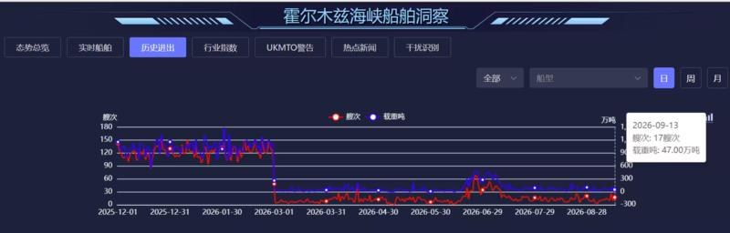
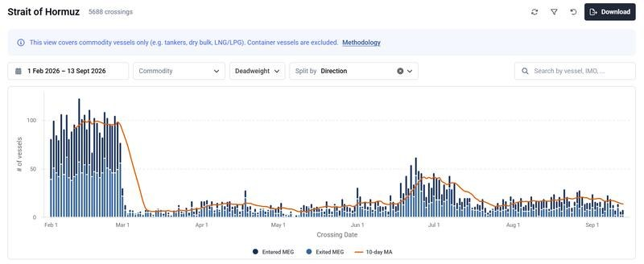
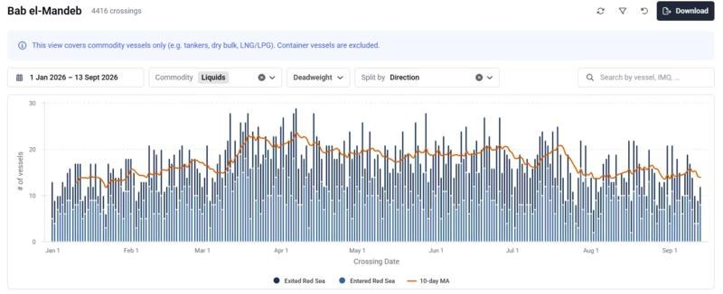
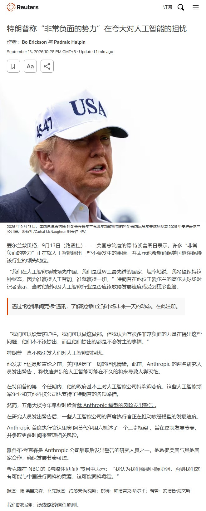
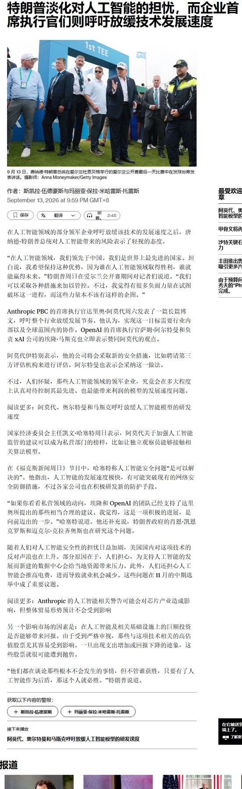

调研纪要 · 2026-09-14 新闻日报
星球 ID: 28855458518111 | 共 354 条帖子 | 精华 107 条
| 查看研究积累
强制同步到研究积累
全部 计算机 电子 机械设备 其他 电力设备 非银金融 宏观策略 医药生物 食品饮料 传媒 基础化工 通信 交通运输 煤炭 家用电器 汽车 商贸零售 轻工制造 国防军工 公用事业 建筑装饰 建筑材料 有色金属 石油石化 纺织服饰 银行 农林牧渔 环保 房地产
书签
[玫瑰]AI Capex及相关信用市场更新（2026.09.14）
[玫瑰]AI Capex及相关信用市场更新（2026.09.14）
边际变化：各家企业CDS日度环比小幅回落，波动幅度小于4.1%。
周度总结：
1、各家企业CDS周度环比回落为主，波动幅度0.2%~9.3%。
2、亚马逊拟发行42.5亿英镑债券。
3、北美科技巨头26-27年资本开支彭博一致预期：出现分化，谷歌、亚马逊预测值小幅上调，微软、甲骨文预测值小幅下调。
【光大高端制造团队】黄帅斌 / 庄晓波 / 陈奇凡
🧧【华泰金融】8月社融解析：信贷需求筑底蓄力
🧧【华泰金融】8月社融解析：信贷需求筑底蓄力
8月社融增量1.66万亿元，同比少增9083亿元，政府债券仍是主要支撑，信贷仍然偏弱。8月贷款新增600亿元（Wind一致预期3800亿元），同比少增5300亿元，信贷投放绝对规模仍处低位。
☀关注点一：信贷投放偏弱，票据融资多增
实体主动融资需求偏弱，将贷款、债券、股票三大渠道合并观察，8月合计同比少增7318亿元，其中信贷是主要拖累。
→居民贷款减少2029亿元，同比多减2332亿元。其中短贷、中长贷分别同比多减1324亿元、1022亿元，居民消费及购房加杠杆意愿偏弱，中长贷仍受地产销售向按揭贷款传导偏慢、存量房贷提前偿还压力影响。
→企业贷款新增2600亿元，同比少增3300亿元。其中短贷、中长贷、票据融资分别同比多减2300亿元、少增1500亿元、多增469亿元。中长贷少增反映企业资本开支意愿偏弱，票据融资形成一定对冲，企业有效信贷需求仍有待改善。
☀关注点二：政府债券主导，企业债券多增
8月直接融资1.34万亿元，同比少增2018亿元，但仍是社融的主要构成。其中，政府债券融资1.01万亿元，同比少增3575亿元，受去年同期高基数影响，绝对规模仍处高位，对社融形成有力支撑；企业债券融资2712亿元，同比多增1374亿元，在信贷需求偏弱、贷款利率下行背景下，企业债券融资同比多增，对贷款形成一定替代；非金融企业境内股票融资639亿元，同比多增183亿元，权益融资亦有所改善。8月表外融资378亿元，同比少增1780亿元，对社融形成一定拖累。其中，委托贷款同比多增394亿元，而信托贷款同比多减583亿元，未贴现银行承兑汇票同比少增1591亿元，与表内票据融资多增形成印证，或反映票据贴现有所加快。
☀关注点三：货币活化改善，存款增长放缓
8月M1、M2同比增速分别为4.1%、7.5%，较上月分别回升0.1、下降0.2个百分点，M1-M2剪刀差较上月末收窄0.3个百分点至-3.4%，资金活化程度边际改善，但货币活化总体水平仍偏低。8月存款新增1.20万亿元，同比少增8600亿元，信贷派生偏弱叠加非银存款大幅少增，存款增长放缓。结构上，居民存款同比少增700亿元，储蓄对存款的支撑边际走弱；企业存款同比少增197亿元，少增幅度相对有限；财政存款同比少增800亿元，财政支出节奏较快，对流动性形成一定支撑；非银存款同比少增6200亿元，增长明显放缓，是存款少增的主要拖累。整体来看，信贷需求偏弱、非银存款增长放缓共同制约存款增长，银行负债端压力边际抬升。
🔍来源：中国人民银行
🐴【建投食饮||杨骥】白酒重磅专家侯帅分享更新（20260914）
🐴【建投食饮||杨骥】白酒重磅专家侯帅分享更新（20260914）
[玫瑰]中秋国庆展望：7-8月白酒行业的扫码数据在低基数下好于去年，出货动销弱于去年，#预计整体白酒中秋国庆扫码数据持平或下降，#预计Q3扫码数据持平或小幅下滑、出货动销较弱，今年中秋总体偏冷。
[玫瑰]分场景表现：#政商务场景仍大幅萎缩、目前趋于稳定，超高端商务礼赠有韧性，普通高端礼赠承压（大闸蟹今年销售同比下滑显著），居民的聚饮和宴席相对稳定、表现平和，收藏需求已成为小众爱好。
[玫瑰]批价：今年头部酒企茅五批价上升主要系供给端约束，#目前茅台供需平衡、厂价和批价同步上行；普五上周到货背景下批价有回落，#波动到780元属于正常情况，预计很难出现价格大幅提升。明后年茅台批价上涨的制约因素为经济环境，预计五粮液批价将稳定在700多-800元。
[玫瑰]库存：#经验判断目前行业平均库存在4-6个月，较此前明显好转，终端基本零库存，经销商库存下降、但还没到非常好的阶段，通常行业库存降至3个月内属于非常良性。目前茅台库存很小，五粮液渠道库存很轻（不考虑自身库存），老窖库存压力大，汾酒Q2的平台仓库存已经去化七七八八、经销商库存预计4个月+，洋河库存去化明显、但仍高于3个月，迎驾合肥等地库存控制在2个月，古井、今世缘库存相对承压。
[玫瑰]全国名酒：1）茅台：今年依托代售制拿回利润、稳定价格，#未来预计非标可实现缓步量增、有可能适度放开经销。2）五粮液：#五粮液此轮改革非常剧烈，管理层进行了大幅调整，需要在2年内处理完中转仓和瓶储酒库存，未来改革方向仍在摸索过程中。3）汾酒：25Q4-26Q1经历了加库存、开条码，#但26Q2平台仓库存去化超预期，目前玻汾批价下行、青花20批价疲软，对高端价位的战略思考仍在摸索，总体较26Q1状态好转。
[玫瑰]地产酒：1）古井：地产酒中能力最强的酒企，#库存有所去化、仍处高位。2）迎驾：民企相对灵活务实，#降目标、去库存做的较好，目前库存较低。3）今世缘：销售总胡总非常资深，为公司定盘星，#目前库存端没有进一步提升、仍处高位。4）洋河：去年来一直在解决问题，但未来走向何方较模糊。
[玫瑰]次高端：1）珍酒李渡：吴老板积极创新，#今年汤司令将李渡模式向珍酒扩散，看好李渡模式前瞻性。2）舍得：今年管理层大幅调整，唐总权限大幅提升，目前仍在摸索。
🔥#今晚20:30特邀高端酒专家（含独家茅台大商）交流，#明晚20:30特邀安徽白酒专家交流，欢迎报名，#如需外呼请告知
🏆建投食饮杨骥团队，还望顶格支持！
🔥河南白酒专家交流要点 20260914
🔥河南白酒专家交流要点 20260914
[玫瑰]2026年中秋动销呈现明显分化，茅台、茅台系列酒、汾酒等#头部品牌有望实现增长，#多数品牌动销预计与2025年同期持平；整体动销水平较6-7月明显提升，除节日加持外，北方天气转凉也带动了自然需求回升。
[玫瑰]茅台：飞天截至2026年9月回款完成全年的85%，2025年同期为80%，#回款节奏同比加快5个百分点。当前库存约为2周，2025年同期受禁酒令影响库存为4周，#库存水平同比下降50%。茅台#系列酒全年任务完成率达85%-90%，最高库存仅1个月左右，部分产品接近断货，2025年同期库存为2-3个月，库存水平同比大幅下降。2026年中秋#飞天茅台动销预计实现个位数增长。
[玫瑰]茅台非标产品：上半年受公司销售政策和去库存等因素影响，非标表现承压。近期，公司已经#调整非标配额和补货政策，预计非标将逐步迎来修复。当前非标消费者接受度和开瓶率均比较高，未来消费有提升空间。
[玫瑰]五粮液：截至2026年9月回款完成全年的约70%，预计后续打款后可达75%左右；2025年同期回款完成率超80%，回款进度同比偏慢。当前#库存不到1个月，同比略有下降。上半年因价格管控一般导致经销商回款意愿较低，近1个月坚持挺价策略，渠道信心明显修复。预计#中秋动销有望实现增长。
[玫瑰]国窖1573：截至2026年9月回款仅完成全年的50%，2025年同期为80%，回款进度同比差距较大。上周提出拟搭配一定比例低价酒的政策，要求经销商配合打款，预计回款比例后续可提升10%-20%。该政策比较临时，尚未完全落地，对中秋的促进作用预计有限。
[玫瑰]其他品牌：#贵州珍酒回款完成全年的80%，2025年同期为70%，回款表现同比向好，核心支撑为大珍、第五代珍十五两款产品推广顺利。#郎酒全年合同完成率为75%，与2025年同期持平，进度正常，当前库存为3-4个月，与2025年同期水平一致，库存仍处于较高水平。
[太阳]注：#以上反馈均为区域样本数据，不代表整体情况。
🎉详情欢迎沟通 · 长江食品饮料董思远团队🏅，#恳请鼎力支持🏆~
今天又有不少领导关注煤炭板块的下跌[破涕为笑]，咋回事？后面机会咋么样？
今天又有不少领导关注煤炭板块的下跌[破涕为笑]，咋回事？后面机会咋么样？
[咖啡]调整导火索：一是近几日港口动力煤价有些调整，二是山西省长提出省属能源企业在确保安全的前提下加快复工复产
👉从上周后半周开始，港口动力煤价格出现些调整，最新港口煤价980+元/吨，较高点下降20-30元左右，前期有涨幅过大、涨幅过快，我们认为挤一挤中间商泡沫，才有利走出健康行情。考虑产地供应低、行业库存低、10月中下旬开启冬季旺季等，煤价不具备深跌基础。
👉山西省提出省属能源企业在确保安全的前提下加快复工复产，市场对此有一定预期，7月底颁布的矿安83号文，到年底在全国范围内全面整治矿山安全生产突出问题，7月开始执行的应急管理部煤矿重大事故隐患判定标准，严厉打击超能力生产等行为，产能上限的紧箍咒依然清晰可见。根据最新山西省能源局十五五规划，该省年产量稳定在12.5亿吨，相比较2024/2025年减少5000万吨，长期性出清部分产量更值得重视。
[咖啡]当前煤炭板块仅对应850动力煤价的业绩10倍PE估值，当前的调整只是小浪花，待价格再稳稳、政策预期再稳稳，煤炭股依然有很好机会。内地煤炭供给收紧有持续性、新疆煤产量和运量弹性不大、下游需求有刚性增长、国内供需关系依然向好，此外印度也在大幅降库存，海内外共振，价格中枢在每一波调整后都会有上移。
[玫瑰]重点标的：
动力煤弹性标的：广汇能源、兖矿能源，力量发展、昊华能源，稳健价值：新集能源、中煤能源、陕西煤业、中国神华等。焦煤重点推荐淮北矿业、平煤股份、首钢资源等。
【中泰电新】#液冷调研更新0914
【中泰电新】#液冷调研更新0914
#产业更关注产能提升及良率稳定性而非订单：产业反馈订单最起码到明年下半年都是景气且饱和的，当前产能的快速爬坡、全力保供更重要。Tier1集成商着急拉产能需要考虑新一代产品的磨合期；代工链目前也都积极快速布局CNC机加以及焊接炉相关设备
#量产背景下存在技术及工艺壁垒：1）CDU环节，在新代际产品批量导入背景下，主要厂商都会面临管道焊接气密性、均匀性、杂质等问题；2）零部件环节，焊接难度高且非常重要，一方面真空炉目前订货周期4-6个月，另一方面确实有企业在焊接工艺方面有短板且良率不高。另外，CNC机加环节也需提升工效
#格局和盈利能力持续性或好于预期：综上，要满足客户可靠性和稳定性交付需求，当前时点真正把量做出来的企业并不多也并不快。9月金富产值1.5亿+（7月1.2亿）、五洋1亿+（7月0.3亿、8月翻番以上），鸿富瀚Q3阿里冷板模组起量迅速。当前盈利能力来看，波纹管毛利率预计50-60%、净利率30-40%；分水器毛利率预计30-40%；冷板模组，部分厂家可达毛利率40%+，净利率20%+
#投资建议：持续关注：1）稀缺性和弹性都很大的Tier1：英维克/申菱环境等；2）部件级核心龙头：金富科技/鸿日达/同飞股份/飞龙股份/大元泵业/鼎通科技/奕东电子/硕贝德/磁谷科技/鑫磊股份、强瑞技术/五洋自控/捷邦科技/川环科技/科创新源等
风险提示：需求不及预期、竞争加剧等
☎️欢迎联系【中泰电新｜曾彪团队】曾彪/吴鹏17701800142/郭琳1596217562
🔥🔥AI 产业最新观点：#开始进入左侧布局窗口期@华泰计算机（0914）
🔥🔥AI 产业最新观点：#开始进入左侧布局窗口期@华泰计算机（0914）
🚀本周：宏观成为影响市场的重要变量，#若未超预期则利空落地，美股上涨概率大，#短期美股软件>美股硬件； 若超预期，则美股存在仅一步下行风险；
🚨#近期模型蒸馏风波：蒸馏难度增加是趋势，但完全被禁止几乎无可能，理论上增加模型厂商预训练投入。
🚨上周末发酵的#AI安全约束模型训练放缓事件：#
1）#短期情绪上偏利空训练算力，实际影响如何，#最终还是要看海外几家模型厂商后续的动作。已有信号：①OpenAI此前已经公开表示，由于模型能力和风险同步提升，曾经“暂时放慢scaling pace”，以确保监控、alignment和containment达到要求；②本周Anthropic CEO Amodei进一步公开呼吁行业放慢前沿模型能力发展的速度。③#反向信号：9月14日，马斯克宣称Grok4.8将于本周完成预训练并开始强化学习（Grok4.7预计近期发布）。
2）#利好AI安全公司：看好美股网安公司，A股看好：#深信服、绿盟科技
🚀叠加临近双节，整体市场交易预计偏清淡，但向下风险不大，#进入左侧布局窗口期：#
后续可能的机会：
1）本周华为全连接大会召开，#重点关注：超节点；#
2）10月份：#重点关注三季报业绩超预期的个股（海外算力链业绩高增长的应用）
🚀后续重点跟踪：
1）国产模型：#新一代大参数模型发布的时间和能力水平；Q4 迎来密集发布期，若智能水平超预期，则利好算力租赁和云。
2）海外模型进展：Anthropic Fable 5.1后继模型、 Gemini 4 / Gemini 4Pro、 Watermelon等；3）Anthropic IPO
☎️From 华泰计算机 郭雅丽/范昳蕊/袁泽世/岳铂雄/王浩天/徐诚伟
券商内部观点takeaway
券商内部观点takeaway
策略
●3800 仍是政策底，当前是3~4个月流动性周期左底（量能3.5万亿回落至1.6~1.7万亿）；绝对收益资金左侧慢加、忽略日线波动，至10月初仍不放量需防基本面🐻市，放量周要追。
●反弹结构：AI占1/3强势但非前一波独奏，科技+传媒软件+食品饮料（迎驾贡酒等个别股已交易EPS反转）+机器人+军工均衡反弹；月线大阴后通常以三根低斜率月阳反包。
通信
●节奏：7月暴跌→8月跌出底部→9月AI算力扩散反攻；大票（中际旭创/新易盛/长飞光纤）8月没涨、性价比优于已新高小票。
●三季报线：易中天（中际旭创/新易盛/东山精密）环比确定性最高，1.6T加速出货，旭创看2万亿+目标；二线突破北美：剑桥科技、永鼎股份（供剑桥1.6T光芯片加单1500万颗）、世嘉科技、华懋科技有加单弹性。
●新技术：设备（罗博特科/联讯仪器）；薄膜磷酸锂看安孚科技；待发港股纳真科技收入利润超光迅科技、空间大。
●算力租赁：协创数据、东阳光、润泽科技三家确定性最强，其余偏资金勾兑。
电新/工业
●三季报前（至10月中下）交易业绩加速：PCB本B环节增速>CCL>布和铜箔；不追已暴涨小PCB（崇达技术/奥士康/四会富仕），转向大PCB有预期差者——深南电路（beat）、方正科技（AI占比明年70%、市值仅景旺1/2）、超声电子（PS<2）、港股建滔集团（上游一体化）。
●MLCC：现货价企稳，风华高科三季报≥3亿、三环集团17~18亿，出业绩拐点。
●三季报后切新技术：陶瓷基板2年空间100亿→700亿，往下游金属化走（粉20→裸板100→制品300）；服务器链看国瓷材料、科创新源（弹性），光模块链看富乐德。
●Anthropic等呼吁AI降速：机构仓位高但私募游资低，非全市场高位利空，A股硬件在低位，跟跌可拉回。
这里补充一点，上周PCB龙头的交流信息:
这里补充一点，上周PCB龙头的交流信息:
Rubin相比于GB300在生产上复杂度更高，生产周期从原先的3-4周延长到7-8周，出货的产品涉及主板，Switch，CPX，网卡。7月份工厂集中处于排查与修改问题的调优期，影响了当月的产能利用率。因此，在三季度Rubin基本不会有收入确认，三季度的业绩表现会相对平淡。
🔥【浙商医药|郭双喜】2026 WCLC 全景分析系列1——宜联、翰森B7H3 ADC 2L ES-SCLC临床3期结果会师2026 WCLC 主席论坛环节，棋...
🔥【浙商医药|郭双喜】2026 WCLC 全景分析系列1——宜联、翰森B7H3 ADC 2L ES-SCLC临床3期结果会师2026 WCLC 主席论坛环节，棋逢对手，平分秋色，OS获益均优于塔拉妥单抗(DLL3 TCE)，持续验证B7H3“超级靶点”潜力❗❗
⭕【宜联生物】B7H3 ADC YL201头对头 SOC 托泊替康
[玫瑰]有效性：主要终点moS=13.3月 VS 9.4月，HR=0.46，p<0.0001；
关键次要终点ORR=59.1% VS 9.7%，mPFS=7.4月 VS 2.8月，HR=0.29，p<0.0001
[玫瑰]安全性：≥3 TRAE=46.4% VS 74.7%；间质性肺疾病/肺炎事件发生率4.9% VS 1.4%；
⭕【翰森制药】B7H3 ADC HS-20093头对头SOC 托泊替康
[玫瑰]有效性：主要终点moS=18.5月 VS 10.3月，HR=0.46，p<0.0001；
关键次要终点：ORR=58.3% VS 12.6%，mPFS=7.2月 VS 3.0月，HR=0.33，DCR=90.4% VS 60.2%
[玫瑰]安全性：≥3 TRAE=60.9% VS 78.2%；
⭕2L ES-SCLC其他重要药物
[太阳]【安进】塔拉妥单抗(DLL3 TCE)头对头SOC（芦比替定，托泊替康，氨柔比星）临床3期结果：
[玫瑰]主要终点moS=13.6月 VS 8.3月，HR=0.60，p<0.001；
[玫瑰]关键次要终点mPFS=4.2月 VS 3.7月，HR=0.71，p=0.002；其他次要终点ORR=35% VS 20%，mDOR=6.9月 VS 5.5月，
[玫瑰]安全性：≥3级 TRAE=27% VS 62%
[太阳]【泽璟制药】ZG006（DLL3 TCE）针对2L+的ES-SCLC：mPFS=9.6月，mDOR=9.7月；
[太阳]【第一三共】 I-DXd（B7H3 ADC）2期结果：ORR=56.3%，mPFS=5.6月，moS=12月，mDOR=6.9月，≥3级 TRAE=27%；
[太阳]【Gilead】 Trodelvy（TROP2 ADC）2期结果：ORR=41.9%，mPFS=4.4月，moS=13.6月，mDOR=4.73月，≥3级 TEAE=74.4%；
[太阳]【再鼎】ZL-1310（DLL3 ADC）1期结果：ORR= 77.3% ，≥3级 TEAE=28.9%；
[太阳]【BioNtech/映恩】pumitamig（PD-L1/VEGF）联合elfe-D（B7H3 ADC）1b/2 期结果：ORR=73.3%；
⭕B7H3 ADC在此次WCLC会议的表现可圈可点，除了在2L ES-SCLC两大国产B7H3 ADC相比经典SOC托泊替康头对头取得OS获益外；
在1L ES-SCLC的表现更是亮眼，宜联的B7H3 ADC YL201联合PD-1已经将一线ES-SCLC的mPFS提高到【12.9月】，相比与SOC已经翻倍，超越安进的DLL3 TCE的三联疗法，将1L ES-SCLC的生存获益拔高到一个崭新的高度❗❗
除此之外，YL201联合PD-1在一线AGA阴性的肺鳞癌中ORR=57.9%，mPFS=11.7个月略好于HARMONi-6的11.14个月。
⭕B7H3 ADC在前列腺癌、SCLC、NSCLC、妇科肿瘤等多个癌种中表现出了强劲的竞争实力，我们认为B7H3有望成为继HER-2、TROP2、EGFR/HER3之后ADC领域又一个超级靶点！
⭕B7H3 ADC相关标的：翰森制药、宜联生物、映恩生物、石药集团、科伦博泰、迈威生物、信达生物、恒瑞医药等。
风险提示：研发不及预期，竞争加剧风险等。
[玫瑰]联系人：浙商医药郭双喜/赵丹13651318727
【山证医药】中国创新药已成为全球最重要的参与者，医药投资仍以创新药及上游CXO为核心
【山证医药】中国创新药已成为全球最重要的参与者，医药投资仍以创新药及上游CXO为核心
[玫瑰]CXO板块：业绩为王。药明康德大体量高增长，带动医药板块及CXO子版块景气度回暖；上游实验猴未来长期紧缺，有望持续提价；全球GLP-1药物大卖，带动上游原料药业务订单持续高增长。CXO板块还是今年医药最主线之一，重点关注药明康德、昭衍新药、美迪西、康龙化成、凯莱英等。
[玫瑰]ai制药：有望成为未来医药板块主线之一。Anthropic在AI制药上的技术突破，通过Claude Science平台，将强大的通用模型与一整套专业科研工具深度绑定，让AI学会"使用工具"，已成功设计验证多个药物。从全球ai制药应用的结果来看，当前还没有成功的从早期设计筛选的药物最终进入商业化，但已在设计筛选阶段表现出明确的发展潜力，后续进入临床实验阶段若实现突破，将持续发挥行业变革属性。短期，原生ai制药企业和上游产业链有望持续获益，重点关注金斯瑞生物科技、近岸蛋白、晶泰科技、英矽智能等。
[玫瑰]mRNA肿瘤疫苗：有望改写未来创新药发展方向。mRNA肿瘤疫苗作为抗肿瘤治疗的最新方案，已在黑色素瘤得到成功验证，预计9-10月份BioNtech会披露更多mRNA疫苗治疗数据，若数据积极，mRNA疫苗有望获得更持续关注度和更抢眼的市场表现。重点关注：云顶新耀、上海谊众、石药集团、恒瑞医药等。
[玫瑰]ADC: 我们认为ADC板块的先发优势明显。后续行业核心催化聚焦于10月召开的ESMO大会，多款国产重磅ADC药物将迎来关键数据披露窗口。科伦博泰sac-TMT、百利天恒iza-bren一线肺癌适应症重磅临床数据值得重点关注，有望验证国产ADC药物在实体瘤一线治疗的全球竞争力。重点关注：科伦博泰、百利天恒、复宏汉霖、映恩生物等。
[玫瑰]IO多抗：我们认为IO多抗的后发优势明显。PD-1/VEGF双抗是国内的商业化大品种，是海外ADC的核心联用疗法，同时具备双抗和ADC的企业拥有较大优势包括君实生物、BMS/BNT、辉瑞/三生制药、MSD/中国生物制药。Harmoni-2有望进一步验证PD-1/VEGF的优势。PD-1/VEGF双抗对比PD-1的疗效优势几乎是全部PD-1适应症的，合理的临床方案，将重新将PD-1/VEGF双抗拉回500亿美元的IO赛道。PD-1/VEGF/CTLA-4三抗兼具PFS和OS优势具备潜力。重点关注：中国生物制药、君实生物、三生制药、基石药业等。
[太阳]风险提示：产品研发失败或低于预期风险；医保谈判大幅降价及产品竞争激烈风险。
厄尔尼诺影响显现，秘鲁蓝莓产量预期持续下调
厄尔尼诺影响显现，秘鲁蓝莓产量预期持续下调
根据今日报道，秘鲁蓝莓协会近日发布了其2026/27季的最新预测报告，蓝莓产量较8月份预测数据下调了6%。该协会表示，产量调减的主要原因在于恶化天气条件的持续影响。预计产量最大幅度的下滑将出现在第42周（10月12~18日）的产季高峰期，届时预计出口量比最初预测低16%，较去年同期减少21%。最显著气候冲击仍集中在产季的中期和后期，如果未来气象灾害进一步加剧，不排除继续下调产量的可能。
随着厄尔尼诺影响持续增长，秘鲁蓝莓产季深入，预计影响会逐渐提升，产量或将逐月持续下降。目前正处于云南蓝莓上市初期，看好国产蓝莓销售景气度。板块情绪调整不改基本面逻辑，建议持续关注#诺普信。
【天风大化工|唐婕团队】OLED材料企业的成长与转型：
【天风大化工|唐婕团队】OLED材料企业的成长与转型：
#OLED材料迎来高世代线投产高速发展机遇期。1、国内千亿8.6代OLED产线陆续投产，产能相比6代有一倍扩张；2、中尺寸叠层技术应用带来显示材料用量翻倍；3、材料低国产化率背景下，国产材料企业和面板企业相向而行；4、小尺寸折叠化带来屏幕面积等比例增大。
#莱特光电：OLED龙头同时高质量转型Q布。①OLED材料龙头，享受OLED高世代线投资β和国产化α，年化50%增速【120亿保底+年化50%+高增持续3-5年】；②Q布新贵，投资10亿，7月完成首期设备入场，拥有高纯石英矿/砂资源+PCB客户双资源，提供第二成长曲线。
#奥来德：OLED设备材料双龙头的材料转型。①高世代线投资拉动设备和材料双需求增长，收入利润迎来兑现期；②材料端：PSPI、封装、钙钛矿、电子皮肤材料从储备到落地期，深入下游产业链，在玻璃基、太空光伏、机器人等领域全面布局并落地；③设备端：从蒸发源到蒸镀机，从OLED到LED再到光伏，设备龙头已完成战略铺开。
#瑞联新材：围绕有机材料合成多方位扩张。①显示材料、医药CDMO模式仍保持行业和公司资深高速增长；②PSPI原料、光刻胶、封装等原料实现客户突破，电子材料板块迎来高增长；③印刷OLED绑定华星进军终端材料领域时间更广阔空间。
#万润股份：从原料到终端产品的华丽转型。①显示材料、沸石、大健康、电子材料（光刻胶+PI）的CDMO龙头，此消彼长后景气底部已实现抬升；②终端材料领域：OLED终端材料、取向剂、PSPI、PEI（光纤连接器重要原料）、TPI（热塑性聚酰亚胺）、PEEK等终端材料在各个产业实现产业化突破，从代工向终端实现突破。
[玫瑰]请联系唐婕/郭建奇 17717906424
机器人产业如火如荼，周产量持续新高，坚定看好产业拐点！
机器人产业如火如荼，周产量持续新高，坚定看好产业拐点！
#供应商量产如火如荼，周产量持续新高：最新周产量达500+，如期兑现，后续量产将持续加速：依据供应商最新口径，目前大客户周产量达500+，完全符合此前爬坡规划，未来预期9月底将超1000，10-11月继续高速爬坡，量产拐点明确。
#产能将是后续核心重点，26H2有望迎来新一轮扩产
1）首批1.5w台量级将打满现有供应商产能：按照1.5w台一个季度交付拆算，10-11月周产量将突破2k+，订单与产能同步推进；
2）T审厂在即，后续仍有新订单预期，新一期扩产可期：年内除首批订单外，仍有新订单预期，近期T将开启审厂（不同于例行审厂，此次核心是产能问题），若后续订单下放，现有供应商现有+在建产能将全部打满，新一期扩产已在规划。
#T链量产拐点越来越清晰，看好核心进攻组合
1）轻量化龙头【福赛科技】，在手料号20+，ASP直逼1w+，后续价值量有望继续提升，主业稳健增长；
2）旋转环节谐波减速器龙头【斯菱智驱】，谐波全型号在手，轴承产品持续推进，泰国基地26Q3达产匹配客户新需求；
3）总成龙头【三花智控+拓普集团】，此外新晋Tier1【新泉股份】，配套新泉合作【凯迪股份】，26Q3有望完成产线布置+产品出货。
4）丝杠厂商【北特科技+浙江荣泰】，大小丝杠核心供应商，订单指引匹配客户量产节奏
5）设备厂商【田中精机】，手部电机绕线设备对接
🕵♂中信主题策略刘易团队-“主题双周聚”重磅发声📯：市场再探底，轮动新技术
🕵♂中信主题策略刘易团队-“主题双周聚”重磅发声📯：市场再探底，轮动新技术
🌟上周市场在周初成长股冲高后连续回落，风格再度切换。此前走强的大盘蓝筹转弱，低位小盘补涨行情中断。
1）外部环境：美国8月核心CPI环比超预期，推升市场对9月FOMC加息的定价。
2）内部环境：《
金融强国建设"十五五"规划 ↗ 》正式出台。
3）资金面：市场流动性延续回落，上周日均成交额降至约1.89万亿元。
☝聚焦4大主题方向：
1️⃣算力新技术：总量逻辑混沌期，新技术方向叙事占优
2️⃣消费电子延伸：AI挤出消费级产能，业务延伸从可选项变成必选项
3️⃣AI散热：陶瓷基板兑现业绩，金刚石散热布局下一代高功率芯片需求
4️⃣华为磁电存储：AI数据洪流推动冷存储升级，新型磁性介质打开材料增量空间
【投资组合】
✨算力新技术主题，推荐标的【平安电工、优迅股份、深南电路、南亚新材、菲利华】
✨消费电子延伸主题，推荐标的【豪鹏科技、蓝特光学、立讯精密、工业富联、长盈精密】
✨AI散热主题，推荐标的【旭光电子、国瓷材料、富乐德、中兵红箭】
✨华为磁电存储主题，推荐标的【达瑞电子、斯迪克】
☎ 详情欢迎联系本团队！中信主题策略 刘易/田鹏/王涛/白弘伟
[太阳]【申万轻工】新型烟草：国内外政策预期催化，关注产业链标的
[太阳]【申万轻工】新型烟草：国内外政策预期催化，关注产业链标的
[玫瑰]#国内：HNB国标流程持续推进。4.7国标立项；7.28国标（征求意见稿）发布，反馈截止日期为9.26；8.23国标通过WTO/TBT通报程序；国内HNB拟在标准发布后6个月正式实施
[玫瑰]#美国：BAT上线果味VusePro烟弹。26年以来FDA已经新增授权9款电子烟，尤其#5月FDA首次放行Glas 果味电子烟，#助力合规市场份发展 （美国电子烟合规市场份额仅占20%-30%，其中BAT份额超50%）。#9月BAT已在俄亥俄州等市场推出四款Vuse Pro调味烟弹（桃子、浆果、西瓜、薄荷），且BAT计划产品下半年覆盖5万家美国零售店
[玫瑰]#韩国：韩烟KT&G新品HNB即将上市。KT&G将于9月15日正式推出新加热烟草产品 “lil tonino lamborghini”，采用闪波加热技术、可3秒预热”。据欧睿统计，韩国HNB渗透率约20%，#HNB市场双寡头格局，菲莫PMI、韩烟KT&G销量份额分别约49%、47%
[拳头][拳头]国内HNB国标流程加速推进，美国FDA加快PMTA审核，韩烟HNB新品落地，板块持续催化，#关注思摩尔国际、中烟香港、恒丰纸业、盈趣科技、华宝国际等
☎申万轻工：屠亦婷、黄莎、庞盈盈、张海涛、魏雨辰
【申万美护】香氛行业深度：东方香韵兴起，国货品牌加速突围
【申万美护】香氛行业深度：东方香韵兴起，国货品牌加速突围
[玫瑰]#行业基本面：低渗透、高成长，空间广阔。2025年国内香水市场规模约300亿元，预计2029年突破515亿元，CAGR约14%。国内香水渗透率仅5%，2023年人均香水消费16元，对比日本47元、美国423元，成长空间巨大。2025年香水进口额12.1亿美元，同比+21%，高端香氛需求持续释放。
[玫瑰]#需求升级：从基础赋香到情绪价值。情绪经济扩容，香氛消费逐步转向情绪调节、仪式感营造。海外巨头验证赛道景气：26H1欧莱雅高端品类营收80.0亿欧元，香水保持双位数增长，是核心增长动力；雅诗兰黛26H1营收同比+5.4%，中国大陆实现双位数增长，FY2025香水营收占比由12%提升至17%。
[玫瑰]#竞争格局：国际主导，国货借内容电商突围。2025年香水销售额TOP15以国际大牌为主，迪奥(14.3%)、香奈儿(14.2%)、祖玛珑(7.2%)位居前三。本土品牌依托内容电商实现突围，不同城市层级消费偏好分化，为国货带来差异化发展机会。
[玫瑰]#增长逻辑：短期国货渗透，长期高端化国产替代。短期依靠内容电商、城市分层红利抢占消费者心智；长期看高端化与国产替代。观夏主打东方植物香与中式意境，获欧莱雅少数股权投资，复购表现优异；闻献定位高端东方沙龙香，线下布局近50家门店，入驻SKP、丝芙兰等高端渠道。各类本土品牌共同构筑多层次国货香氛生态。
[玫瑰]#投资分析意见：美妆集团加码香氛赛道，关注差异化标的
1）毛戈平：高端美妆跨界，依托东方香调与文化IP打造高奢香氛体系；
2）若羽臣：深耕家清香氛化，以绽家为核心，布局衣物护理、家居清洁、空间香氛全场景；
3）上海家化：老牌日化龙头双路径布局，推进六神、美加净香氛化升级，挖掘大众香氛增量。
【华创家电】出口链观点更新260914
【华创家电】出口链观点更新260914
#春风动力：公司公告累计收到关税退税增厚净利4.4亿、金额超出市场预期，近期我们与市场交流、大家关注剔除退税后的经营性表现。从关税确认节奏来看，Q2完全没有确认关税退税、已公告的退税将全部确认在Q3报表；由于25Q3美国经营性利润低基数（四轮美国墨西哥产能转移后第一个季度、毛利率低点）、#26Q3经营性利润增速环比Q2继续加速。预计26/27年净利润27.5/32.5e、给予27年20x估值，持续强烈推荐。
#隆鑫通用：8月无极出口环比加速、450X订单持续转化，8月无极单月出货约2.5万、同比约+20%，其中#无极出口单月出货约1.4万、同比约+56%，450X订单转化是核心增量贡献。公司兼具3年CAGR 20%的成长确定性+70%分红率高股息稀缺性，预计26/27年净利润20.3/24.6e，对应估值14.9/12.4x，无极自主品牌占比提升有望驱动估值中枢稳定提升，建议重点关注。
#涛涛车业：球车基本盘稳健，26年预计出货接近7万台、27年预计接近10万台出货量，下游需求渗透率仍在快速提升，供给侧产能端美国现有3条产线、月产7500台，年底预计再加第四条产线；经历双反政策后美国场外球车市场格局基本稳定、中小品牌出清，#球车增量预计27年贡献3e+利润，只考虑当前主业26/27年净利润预计12.5/16e，对应估值20.6/16.1x。燃机业务目前完全未定价，目标27年交付200-300兆瓦、对应3-4亿美金收入，有望带来4e+利润贡献、80e市值弹性，建议重点关注。
#泉峰控股：新任CEO有望带来业务基本面更积极变化，Joseph为创科实业前首席执行官、电动工具领域造诣深厚，结合锂电OPE当前处于下游需求修复周期，H2有望形成估值业绩双击。短期来看，#Q3收入增速环比H1继续加速、H2受原材料成本影响预计毛利率略低于H1（剔除关税退税影响后），26/27年净利润预计1.65/1.89亿美金，对应估值9.7/8.5x，建议重点关注。
☎韩星雨18652689415/杨家琛18621058152
【中信新材料】日系氧化锆粉体断供加剧，强烈看好中国氧化锆产业链
【中信新材料】日系氧化锆粉体断供加剧，强烈看好中国氧化锆产业链
1⃣因中国对日的氧化钇（钇稳定氧化锆粉体原料）出口限制，6月东曹的氧化锆粉体断供中国瓷块厂商，但彼时其仍然供应海外客户，目前我们了解到东曹基本断供苹果手表用电子级氧化锆，说明其氧化钇库存大概率见底，生产或已受到严重影响，中国氧化锆将加速替代进程，同时“限制稀土—利好高端陶瓷替代”的逻辑将进一步拓展到其他品类（氮化铝、氮化硅、MLCC等等）。
2⃣强烈看好中国氧化锆产业链，最直接受益的是氧化锆粉体厂商，尤其是已经进入海外供应链的龙头公司，重点推荐国瓷材料，建议关注长裕集团。
氧化锆瓷块环节也有望间接受益，重点推荐爱迪特。
其他高端陶瓷厂商，建议关注中瓷电子、旭光电子。
——————————————
中信证券新材料
李超/郭柯宇15811531856/陈旺/俞腾/何鑫圣/陈健/杨博钧
看好保偏光纤-观点重申
看好保偏光纤-观点重申
-------------------------
🎁在AI算力浪潮下保偏光纤需求将快速增长，光纤产业也将迎来结构重构。重申观点如下：
【AI数据中心光互连快速扩容，产业进入扩张周期】26年5月NV与康宁达成长期商业和技术合作协议，新工厂计划将康宁在美国的光学制造产能提升10倍，光纤产量提升50%以上，印证CPO及高速光互联需求进入扩张周期。
【CPO/NPO将是保偏光纤的需求新引擎】在CPO交换机中，ELS通常输出高功率连续激光，而在硅光系统中，硅光波导、调制器等对输入光的偏振态高度敏感。因此，在ELS与OE之间必须尽可能保证光偏振方向稳定，保偏光纤进而在CPO交换机上将会有大量的需求。
【新增需求有望重塑市场格局，算力驱动第二成长空间】1）目前，前三大厂商康宁/藤仓/长飞合计市占率42%，长盈通、烽火通信、法尔胜等也是核心厂商，长盈通深耕保偏光纤，25年通信器件用保偏已通过部分客户验证。2）随着Rubin服务器机架系统在2026年开始量产，CPO市场规模将在2023~2030年以172%的年复合增长率快速扩张，保偏光纤也将从此前航空航天新增算力驱动的第二成长空间。
-------------------------
📈重点推荐【长盈通】。建议关注【长飞光纤、烽火通信、亨通光电、长进光子、中天科技】等。
-------------------------
🎺风险提示：行业竞争加剧、产品价格波动等
【中信建投机械团队】260914 机械周观点：液冷产业链逐步放量，造船业持续高景气
【中信建投机械团队】260914 机械周观点：液冷产业链逐步放量，造船业持续高景气
🌻核心观点：
（1）人形机器人：海内外催化不断，建议聚焦优质环节。
（2）AIDC发电设备：全球燃机景气延续，燃气内燃机快速增长。
（3）工程机械：7月挖机内外销继续共振向上，板块将迎来逐季度改善。
（4）半导体设备：存储IPO继续推动，看好半导体设备下半年创新高。
（5）液冷：国标落地开启规模化时代，龙头股权激励锚定产业放量。
💎机械板块重点推荐：中国动力、东威科技、杰瑞股份、中国船舶、恒立液压、奥比中光、三一重工、豪迈科技、埃科光电、中微公司、先导智能、博众精工、徐工机械、中集集团、华测检测、迈为股份。
🧧中信建投机械团队 许光坦/陈宣霖/籍星博/吴雨瑄/乔磊/孙贺
请支持中信建投机械团队！
半导体斜率之王
半导体斜率之王
#翰博高新——半导体材料夯中夯
为什么这波半导体材料翰博高新反弹最猛？①主业困境反转释放利润，26/27年股权激励收入目标38亿/45亿收入，50亿市值底部坚实；②五大材料平台：刻蚀液/显影液/剥离液/清洗液/光刻胶（胶目前面板级）平台级布局完善，十大工厂贴近半导体FAB及面板客户；③拳头级产品：类ABF（上海东进DBF）、PSPI、研磨液等等大单品前瞻布局！
#万通发展——国产芯片底中底
为什么万通发展股价在12.5元震荡？员工股权激励价格6.25元，实际市场化定价为12.5元。当前公司在左侧布局的右侧，右侧布局的左侧临界点，观望的资金众多。大家对于PCIE Switch的中期空间、数渡科技的技术领先性认可度越来越高，纠结点在于担心公司股权激励目标是否能够完成？随着后续财报的释放，公司的价值会得到市场重新定价！
【天风新材料】凌玮科技董事长调研反馈：公司为生益第一梯队供应商，CCL+封装存超预期可能
【天风新材料】凌玮科技董事长调研反馈：公司为生益第一梯队供应商，CCL+封装存超预期可能
📡【行业动态】当前化学法球硅市场总需求约2万吨，其中国产占比约四成、进口约五六成。以2026年为基数，2027年需求增长2-3倍。
化学法球硅的用量随CCL等级同步跃升：M8及以上必须使用化学法球硅，#单板添加量从200克至800克以上不等。先进封装领域（HBM）必须使用化学法球硅，目前供给全部来自海外厂商。
海外供给端明确退出增量竞争：日本企业已明确不扩产，#增量市场将由中国厂商承接。价格上，日系产品不低于1000元/公斤（100万元/吨），国产价格区间20万-60万元/吨，#仅为日系的20%-60%。
📌【公司业务与客户进展】辉迈专注化学法球硅单一技术路线，#目前已实现向生益科技直接供货，在国产进口替代厂商中处于第一梯队；对台光、松下等处于送样认证阶段，认证到方案确定周期较长。
第二增长曲线聚焦先进封装，该领域售价不低于1000元/公斤，直接对标日系，#已与国内下游厂商开展送样合作。
📈【产能规划】#辉迈未来三年新增化学法球硅产能规划3000-5000吨/年，最晚2027年逐步释放，可上调至最高七八千吨。核心瓶颈不在厂房设备，而在连续生产稳定性、良品率达标与成本控制。
💰【量价预期】行业节奏上，2024年是化学法球硅量产元年，2025年出货百吨级，2026年进入千吨级。价格端下游对价格敏感度低，核心关注性能、稳定性与迭代能力，日常合作很少涉及价格谈判，若出现供应缺口存在涨价可能。
🔥【关注两个不对称点】1）#量产壁垒被低估：化学法生产涉及数百道工序、十几项物理指标与十几套以上配方，辉迈自与生益合作7年后才实现大规模供货；#规划产能≠有效产能，1万吨规划最终有效产出可能仅1/3甚至1/5。 2）#日系退出增量市场的根因是路径选择，而非资源约束：日本长期认为火焰法、爆燃法可满足全部需求，未布局化学法产能；其战略仅覆盖全球最顶级的5%小众市场，叠加CCL迭代极快（几乎每周迭代）、日企适配困难。
🌹欢迎索要专家交流纪要 #派点多支持-天风证券新材料鲍荣富团队
☎️详情请联系：鲍荣富/王丹/于那/周丹丹/上官京杰 19849005130/林晓龙/曾子峻
【广发机械】强一股份大涨点评：经营拐点已至，国产算力&存储&光全面布局
【广发机械】强一股份大涨点评：经营拐点已至，国产算力&存储&光全面布局
我们近期重点推荐的强一股份α显著，把公司最近的变化再梳理一下：
#合肥公司产能建设积极推进。3月公司在合肥设立全资子公司，用于探针卡制造基地项目，投资总额10亿元；今晚公司公告合肥子公司已完成工商变更，注册资本增值5.55亿元（前期投资1.5亿，斜率陡峭）。
#股权激励目标显示公司极强信心。26-28年收入16/25/38亿元，净利润增长率（25年基数）为35%/110%/200%，未来3年业绩【Baseline】已经明晰。
#产品全面突破。2D MEMS探针卡，完成了面向算力芯片的探针卡验证及针对特定高速图形（Pattern）设计的探针卡验证；薄膜探针卡，完成 110GHz 高频探针卡技术开发并进入客户验证阶段，频率响应特性及探针寿命等核心指标达到行业先进水平，同步推进 170GHz 以上超高频薄膜探针技术的预研攻关；2.5D MEMS 探针卡，面向 DRAM 的探针卡产品客户导入取得阶段性突破，HBM 探针卡验证工作有序开展。
#显著受益于Tao定律。TAO定律的逻辑折叠将传统平面布局的逻辑电路层从单层折叠为双层乃至多层，缩短关键路径的物理走线长度，要求芯片内部实现层间连接，对晶圆级先进封装（混合键合、硅通孔TSV、背面互联）的精度和良率提出更高要求，KGD测试预计将会成倍数增加，探针卡的消耗量也将成倍数增加，H系几乎所有研发项目公司都有参与，深度绑定大客户。
#海外积极推进。公司的薄膜探针卡进入Marvell、Semtech等海外客户的产品验证导入阶段，客户覆盖区域进一步拓展。
#强一股份是我们半导体设备的核心推荐标的，前期压制股价的因素解除，经营拐点已至，后续催化十足，重点推荐。
#还请顶格支持广发机械团队
孙柏阳/汪家豪/王宁/许贝尔
🏆【长江电子杨洋团队】颀中科技近期情况更新+重点推荐：
🏆【长江电子杨洋团队】颀中科技近期情况更新+重点推荐：
#DDIC盈利能力快速修复、Q3Q4业绩可期。全球DDIC产能逐步被中高端产能挤压，订单向大陆转移加速，主业DDIC稼动率满载+涨价带来显著业绩修复动能，单月利润大幅提升，月度利润年化有望实现可观增长，后续逐季毛利率、业绩向上，未来有望进一步涨价推升27年主业利润冲击5亿；同时，公司PMIC封测产线目前正受益于国内AI相关PMIC需求爆发，有望给主业带来更大提升空间
#硅电容封测需求快速爆发，稀缺供应商深度受益。公司是大陆核心的硅电容封测供应商，目前已经给光模块上游客户量产硅电容封测产品并开始贡献收入，CPU、GPU硅电容客户正在导入中，未来市场有望达到40-50亿元，公司作为少数可提供硅电容封测产品的玩家预计份额较高，结合相较传统业务更为可观的利润率，远期利润增量有望达4-5亿，且公司在光电芯片相关封测业务上正在加速推进，更多产品已经完成研发送样，后续光电芯片相关封测业务还有进一步提升可能性
#外联内生加速布局先进封测，核心客户导入+产能快速扩张有望带来显著增量。公司此前先后披露投资禾芯集成、奕成科技，在板级系统集成、高密度RDL、异构集成等方向加大投入力度，同时拟投入24.54亿元在苏州厂区三期布局先进封装，核心建设CoWoS-L为主的先进封测产线，预计27、28年产能逐步达到5000片/月、1万片/月，目前已有国内核心客户完成前期技术产能沟通，结合产业目前报价情况和盈利能力，远期满产满销预期下有望实现超20亿利润增量
目前公司市值仅包含主业基础市值+少量硅电容增量预期，未来DDIC+PMIC+硅电容/光封测+先进封装带来较强利润增量预期，远期市值有望上看500-600亿，建议重点关注！
恳请领导拜托支持长期奋斗在最1️⃣线的长江电子杨洋团队！！
【国金电子】继续重点强call博硕科技，nv自动化设备领域核心供应商
【国金电子】继续重点强call博硕科技，nv自动化设备领域核心供应商
业务逻辑＆增量测算：
NV希望将生产制造模式对标苹果，建立健全标准化制造工艺流程，目前已确定推行服务器自动化设备替代人工，此外为精细化供应链管理，统一生产制造标准，NV有意将设备等供应商采购权限从CM厂转移至NV公司层面，公司直接对接NV已获设备开发需求，#近期落地与北美核心公司战略合作已落地，将联合服务终端客户。
①公司直接对接北美大客户，供应l6-l8自动化组装设备，客户需求270条线，单条线价值量达8kw，此需求预计建设周期2-3年。
②服务器l6-l10检测设备与泰瑞达合作开发，单线价值量1000w＋美金。
③通过富士康佛山工厂已接单2kw液冷组装设备订单，预计年内还将落地5条线，超1e订单。
④主业增长稳健，收入增长来自在苹果份额提升及端侧客户业务进展。主业26/27年收入预期为20e/30e。
若后续nv自动化产线进展顺利，订单顺利落地，27年有望实现近20e利润体量，看400e市值，建议领导重点关注。
潍柴重机深度：从船机龙头到AIDC新贵，第二成长曲线加速兑现
潍柴重机深度：从船机龙头到AIDC新贵，第二成长曲线加速兑现
#船机基本盘稳固、AIDC推动公司进入新一轮高增长周期
[玫瑰]潍柴重机是国内船用中速机领先企业，正加速由传统船舶动力向AIDC发电设备延伸。2025年公司实现营收61.18亿元、同比+46.5%，归母净利润2.40亿元、同比+65.7%；其中发电机组收入30.5亿元、同比+102.5%，首次成为第一大业务。2026H1公司营收42.82亿元、同比+52.7%，归母净利润1.74亿元、同比+36.5%。我们认为，公司当前利润结构正在发生明显迁移：船机提供稳定利润底座，AIDC第二成长曲线快速兑现
#AIDC柴发机组已进入业绩兑现期、潍柴体系协同构筑核心竞争优势
[玫瑰]AI算力持续扩张带动数据中心备用柴发需求快速增长，海外大缸径发动机龙头产能紧缺、交期拉长。潍柴重机与潍柴动力形成“大缸径发动机+发电机组集成”的产业协同。2025年公司AIDC柴发收入预计约17亿元、同比大幅增长；同时，公司已获得国内三大运营商集采准入并突破头部互联网客户。集团内发动机技术、产能和渠道资源，有望帮助公司持续获取订单并强化大功率机组交付能力
#从柴发走向燃气主电、WH系列有望进一步打开成长上限
[玫瑰]AIDC电力需求正在同时拉动“柴油备用电源+天然气主供电”两条需求曲线：柴发解决数据中心供电可靠性需求，燃气内燃机则进一步解决电力容量需求。瓦锡兰自2025年进入美国数据中心市场以来累计订单已超过2.4GW，验证了中速燃气机在AIDC主供电场景的需求。潍柴重机WH系列目前覆盖5MW以下燃油产品，并正向5-10MW功率段开发；若成功由船用中速机燃油平台向陆用燃气发电延伸，公司有望从“机组配套商”进一步升级为“电站主电源方案商”
#投资建议
[玫瑰]我们预测公司2026/27/28年归母净利润分别为3.86/6.77/11.65亿元，同比+60.7%/+75.5%/+72.1%。短期看AIDC柴发机组持续放量，中期看潍柴动力燃发产品带动公司燃发机组增长，长期看WH系列有望切入5-10MW燃气主电市场。我们给予公司150亿元目标市值、32元目标价，首次覆盖给予“买入”评级
[庆祝]【广发家电】海尔智家深度报告：智慧家庭为基，大暖通绘第二成长曲线
[庆祝]【广发家电】海尔智家深度报告：智慧家庭为基，大暖通绘第二成长曲线
[玫瑰] 今晚8点，我们在进门财经深度解读海尔智家深度报告，欢迎您接入！
[太阳] 智慧家庭为基，聚焦中长期盈利改善+海外市场突破。
中国区：数字化变革持续深化的同时，公司在 26 年 7 月成立大白电产业整合冰洗厨业务，继续降本增效、全面 To C 转型，内销有望逐渐走出压力期。
海外平台：新任海外平台负责人宋玉军更匹配当前公司在海外既需要成熟欧美市场盈利改善、又追求新兴市场加速扩张的目标。
[太阳] 大暖通产业整合，第二成长曲线有望加速。
2025 年底公司整合了“空调、采暖、新风、热水、净水、楼宇科技”等形成大暖通产业。2025 年公司大暖通产业合计规模约 103 亿美元，占全球暖通市场规模不足 2%，规模和盈利能力均较全球暖通龙头有充足提升空间。
[太阳] 复盘历史：变革成就海尔，机会留给在逆境中仍能认清现实、看清前路、不断变革的优秀企业。
（1）砸冰箱的变革树立了海尔产品的质量底线和品牌心智，使海尔从濒临倒闭到成为中国名牌；“吃休克鱼”的变革，将优秀管理经验复刻至收购的工厂，使海尔成为全品类家电龙头。
（2）全球化、市场化、本土化以及人单合一的变革，让海尔成为全球家电的领导者。
（3）整合 AH上市主体，强化协同，减少冗余，促进海尔自 2020 年来盈利持续释放，并完成智慧家庭转型。
[太阳] 盈利预测及估值
预计公司 2026-28 年归母净利润同比-3%、+7%、+8%，当前市值对应 2026 年 PE 为10.3X。我们给予公司 2026 年 PE 12 倍，对应合理价值为 24.51 元人民币/股，考虑 A/H 溢价，对应 H 股合理价值为 24.01 港元/股，给予 A 股、H 股“买入”评级。
华凯易佰：跨境电商主业稳增 + 光通信期权
华凯易佰：跨境电商主业稳增 + 光通信期权
华凯股价延续上涨，今日上涨7.2％。
主业：H1归母1.65亿、同比+349%；全年目标从3.5-4亿上修至4-4.3亿，明年目标5亿以上。Q3、Q4旺季环比继续走高，7月日均销售额与6月Prime Day持平。精品全年收入目标增50%以上，五家控股子公司下半年全部并表；AI平台易智万象已开始收费。
光通信期权：万和无源光器件，准直器光纤头有望获海外大客户订单。10月是关键时点，订单落地即推进收购（订单为交割前置条件）。若兑现，明年贡献数千万利润。
估值：明年乐观5.5亿利润（主业5亿+万和0.5亿），对应14x PE。
欢迎交流：嵇文欣/曹敦鑫
【新益昌】深度汇报，今晚9点～固晶龙头半导体业务加速放量，Mini LED接力高端化升级。公司业务结构发生质变：半导体设备占比 40%，毛利率 43%，成为第一...
【新益昌】深度汇报，今晚9点～固晶龙头半导体业务加速放量，Mini LED接力高端化升级。公司业务结构发生质变：半导体设备占比 40%，毛利率 43%，成为第一增长引擎。固晶设备基本盘扎实，焊线、测试分选突破，完成半导体后道三大核心工序产品矩阵搭建。此外，显示领域优化产品结构，前瞻布局 MiniLED、MicroLED固晶设备。
持续推荐#安孚科技：# 南孚奠基，硬科技成长稳步推进【长江轻工&通信团队】
持续推荐#安孚科技：# 南孚奠基，硬科技成长稳步推进【长江轻工&通信团队】
#近期边际：安孚对易缆微持股比例提升至超20%
根据企查查，安孚科技上周已成为易缆微第二大股东，对易缆微持股比例已提升至20.7%，仅次于创始人陈伟博士25.8%的持股比例。易缆微本轮投前估计约13亿，投后估计约15-16亿，估计增资部分由安孚科技出资。此外关注9月中下旬西班牙光博会，可期待索尔思和易缆微共同合作的完整3.2t光模块产品。
投资逻辑
#南孚电池：# 1）南孚7月底发布提价函，借助电池消费税征收契机，公司超额提价或带动收入利润持续增长；2）南孚业绩承诺，26-27年扣非净利润不低于9.50/9.82亿元，后续安孚科技拟继续提升南孚持股比例，有望增厚利润基本盘。
#高成长业务方面：# #易揽微# 卡位行业领先光芯片技术（硅光+薄膜铌酸锂异质集成），与索尔思合作展出3.2T光模块产品，伴随后续获取量产订单&安孚增持股权，远期空间巨大；#华昇迈# 光刻光源已送样下游头部晶圆厂，每年200亿+存量市场规模、高利润率、高稀缺性，国产替代空间广阔，且安孚科技已与华昇迈成立合资公司，向上游延伸布局高端零部件加工平台。
#长期看好产业协同释放红利。公司控股股东为袁永刚夫妇（袁永刚同时是东山精密、蓝盾光电实控人），#东山精密 此前收购全球光通信龙头索尔思光电（全球领先的光芯片+光模块厂商，有北美客户渠道）、#易缆微# 主攻硅光芯片和薄膜铌酸锂技术、#蓝盾光电# 并购岚创科技补齐光通信上游设备环节，三者有望形成互补协同并释放红利。
☎欢迎交流：长江轻工蔡方羿&通信黄天佑团队
如需#光博会具体反馈欢迎私信我们
【英科医疗】更新：马来厂商涨价超预期~
【英科医疗】更新：马来厂商涨价超预期~
#马来厂商涨价超预期且预计后续仍将进一步涨价。马来西亚顶级手套、贺特佳股价2日上涨超20%，主要受益价格涨幅超预期。根据Maybank IB产业调研，马来厂商10月报价有望提涨至23+美金，提价幅度约4-5美金，远超此前1-1.5美金预期。同时此轮报价只反应丁二烯成本上涨（现价1.4万+，底部反弹70%+），尚未反应10月起马来天然气价格上调40%，因此预计后续仍将涨价。
#英科10月暂未报价、但预计跟随提涨。目前英科订单饱满，对10月仍暂缓报价。初步对大客户传达2-3美元提价预期，非美市场目标报价涨3美元至21+美元，考虑到马来厂商近日报价大幅上调，10月最终报价有望跟随进一步涨价。同时考虑当前渠道库低，旺季需求好，友商价格均同步提涨，预计涨价落地顺畅
华尔街策略师预计股市涨势将在美联储加息后延续
华尔街策略师预计股市涨势将在美联储加息后延续
铠侠据称考虑在美国上市筹资100亿美元
铠侠据称考虑在美国上市筹资100亿美元
📌是什么推动了市场？
📌是什么推动了市场？
🌏亚洲股市收盘涨跌互现，多数走低。主要科技公司高管呼吁放缓先进模型开发的言论，引发对人工智能增长减速的担忧，拖累市场情绪；与此同时，沙特阿拉伯关闭其东西向原油管道导致油价飙升，在本周美联储利率决议前夕加剧了市场的谨慎情绪。韩国和日本科技股和半导体板块普遍走弱而回落；香港在内地买盘支撑下小幅上涨，但恒生科技指数持平，且创始人减持股份的担忧仍存。澳大利亚成为区域亮点，受 FDA 药品批准、并购活动以及能源股随原油价格上涨的推动而走高。印度因排灯节（Ganesh Chaturthi）假期休市，市场参与者正关注 Ganesh 节后在高油价和加速上升的 CPI 数据背景下的表现。
🗺️区域综述
🇦🇺澳大利亚：AS51 指数上涨 0.1%。澳大利亚股市盘中走低，但尾盘大幅反弹收高，投资者在油价上涨带来的支撑与科技及铀相关股票的疲软之间寻求平衡。受沙特东西向管道中断影响，布伦特原油维持在每桶 108 美元以上，能源股表现相对稳健；医疗保健和必需消费品板块也提供了防御性支撑。个股利好缓解了整体市场的弱势：Telix Pharmaceuticals 因美国 FDA 批准其脑癌成像药物 Pixclara 而受益；Fleet Partners 因修订后的收购提议走强；Cleanaway Waste Management 则随着 EQT Infrastructure 继续开展尽职调查讨论而上涨。整体市场情绪仍是谨慎，投资者正在评估人工智能发展放缓的影响、关注澳洲联储（RBA）官员的言论，并为即将召开的美联储（FOMC）会议提前布局。交易活动反映出，尽管市场环境偏软，投资者仍偏好防御性盈利股和选择性大宗商品敞口。
******** 台湾：台股（TAIEX）下跌 0.70%，早盘表现极为疲软，随后盘中反弹，收盘仍较前一交易日下跌 300 点。动量类股整体收跌，但全天走势普遍平淡。市场焦点集中于本周的期货到期与美联储（FOMC）会议。金融类股再度跑赢大盘，成为投资者的避险选择。市场情绪转为谨慎，但绝对不算看空，因为指数以及台积电（+1.2%）、联发科（+0.6%）、Delta 以及鸿海（+0.2%）等其他大型公司仍保持稳健。市场成交量持续清淡，较前一日再降 17%。
🇰🇷韩国：KOSPI 指数下跌 3.26%。韩国股市走弱，KOSPI 指数一周来首次收于 50 日均线下方，成交量较 20 日均值低约 20%。主要拖累来自人工智能板块，此前多位人工智能领域高管呼吁放缓模型开发进度，但交易秩序井然，未出现恐慌性抛售或者显著的逢低买入现象。汽车股也表现不佳，起因是特朗普总统发表言论，暗示对中国车企在美国制造车辆维持开放态度。相比之下，化妆品类股因西方需求趋势持续强劲而上涨；受益于韩元升值的航空公司、食品饮料公司及银行等板块则延续涨势，韩元在自 7 月 1555 水平大幅升值后，目前维持在 1340 附近。此外，投资者密切关注韩国交易所（KRX）新推出的盘后连续交易时段（韩国时间下午 4 点至晚上 8 点），焦点在于该平台能否随时间推移形成充足的流动性和交易量。
🇯🇵日本：日经指数下跌 0.81%。在避险情绪主导的交易时段中，对人工智能增长放缓的担忧以及持续的地缘政治不确定性压制了市场情绪，导致日本股市收跌，不过市场从早盘低点回升并在午后大部分时间里区间震荡。在本周美联储和日本央行会议即将召开、且日本假期临近之际，投资者似乎不愿增加风险敞口。防御性板块轮动仍是主要主题，人工智能相关股及动量受益股表现落后，而防御性股票则跑赢大盘。Recruit（6098）上涨 6.4%，成为日经指数最大的正向贡献者，这得益于管理层会议后获得的积极反馈及市场对 Inced 公司的乐观预期。利率敏感板块延续涨势，保险股表现优于银行。市场继续定价日本央行在 9 月加息的高概率。人工智能赢家股仍承压，软银（9984）下跌 10.7%，因市场对 OpenAI 上市时间预期失望；Kioxia（285A）及其他更广泛的半导体关联股同样走弱。国防相关股票表现优异，日本制钢所（5631）上涨 4.1%，反映出市场对日美投资倡议及小型模块化反应堆相关机遇的乐观情绪。从资金流向来看，对冲基金全天以卖出为主，主要削减了人工智能领域的敞口；而纯多头账户则呈现双向交易格局，但整体略呈净卖出态势。
🇨🇳中国：沪深 300 指数下跌 0.67%。内地股市表现弱于香港，A 股受美国人工智能高管呼吁放缓 AI 发展步伐的言论影响，AI 硬件类股票普遍走弱承压。上证综指收盘基本持平，但成交额依然低迷，仅为 1.64 万亿元人民币，为年内第三低水平。与 AI 相关的大盘股是主要拖累来源，其中中微公司、存储及半导体设备板块领跌，包括中际旭创下跌 5.7%、长鑫存储下跌 3.9%。资金转向更具防御性和个股特异性的板块，尤其是医疗保健领域。CRO（合同研究组织）类股在近期盘整后反弹，药明康德（603259）上涨 5.04%。银行股继续跑赢大盘，因防御性配置占主导。宁德时代（300750）上涨 2.0%，有助于缓解创业板压力；该公司已于上周五启动此前宣布的 200 亿至 400 亿元人民币股份回购计划。从资金流向看，交易台买入比卖出高出 1.1 倍，买盘集中在 CRO、银行和电池类股票，而 AI 硬件和保险股则遭遇大部分卖压。
🇭🇰香港：恒生指数上涨 0.45%，表现优于区域整体的抛售浪潮。恒生指数自 9 月 4 日以来的增长，得益于持续的南向资金流入，帮助抵消了市场对人工智能增长及利率预期上升的担忧。净内地投资者通过沪深港通净买入 47 亿港元，连续第六个交易日实现净买入，为市场提供关键支撑。金融股领涨，东亚银行（0023）、中银香港（2388）和渣打集团（2888）均触及 52 周新高，而小米（1810）是推动恒生指数上涨的最大贡献者。医疗股同样表现优异，翰森制药（3692）上涨 5.1%，药明系个股涨幅超过 4%，显示投资者继续向制药及合同研究组织（CRO）板块轮动。尽管全球科技股走弱，恒生科技指数最终收平，在展现相对于区域同业的韧性。跌幅方面，Z-AI（2513）在宣布筹集 50 亿美元后下跌超过 7%；而海底捞（6862）和恒隆地产（0101）则跌至 52 周新低。投资者还关注创始人相关减持风险，并持续聚焦本周美联储公开市场委员会（FOMC）决议。
🇸🇪东盟：JCI 指数上涨 0.07%，小幅转升，此前前一交易日收跌。马来西亚富时 KLCI 指数持平。泰国 SET 指数下跌 0.9%，跌幅扩大，泰铢连续第三个交易日走弱，投资者同时关注市场情绪及利率预期的变化。能源股仍是亮点，受原油市场情绪支撑。综合指数（JCI）上涨 0.07%，此时财政部长苏哈西尔・纳苏蒂安被任命为财政部长。在就职后的讲话中，苏哈西尔表示新政府将优先项目：（1）维持国家财政的健康与信誉；（2）财政赤字将保持在 GDP 的 3% 以下；（3）效率是预算优先的部分。市场反应较为积极。印尼综合指数扭转此前 2.5% 的跌幅。泰国 SET 指数下跌 0.9%，跌幅扩大，泰铢连续三个交易日走弱，投资者同时关注市场情绪及利率预期的变化。能源股仍是亮点，受原油市场情绪支撑。
🇮🇳印度：今日市场休市。
📑GS CHINA WRAP GS
📑GS CHINA WRAP GS
📊上证综指 −0.07% 科创 50 −1.62%
📊上证 50 −0.25% 创业板指 −1.10%
📊沪深 300 −0.67% 中证 500 −0.12%
📊总交易额（十亿人民币）1.64 环比下降 17.31%
📈A 股表现逊于港股，受 AI 硬件股疲软拖累。
📈上证综指勉强收平，但名义成交额持续低迷，仅收于 1.64 万亿元人民币，为年初至今第三低水平。
📈在美国主要 AI 公司高管呼吁放缓 AI 发展后，区域 AI 相关交易普遍走弱，“谨慎” 情绪弥漫整个市场。
📈在中国，包括光模块、存储及半导体设备在内的大盘 AI 硬件股遭最大规模抛售，其中中际旭创（300308.SZ）下跌 5.72%，长鑫存储（688825.SH）下跌 3.95%。
📈市场出现资金轮动，从 AI 板块流向医疗健康领域，CRO 概念股在近期盘整后反弹，药明康德（603259.SH）上涨 5.04%。
📈其他方面，银行股在过去数周持续跑赢大盘，因防御性配置主导了风险偏好回升的市场情绪。
📈个股方面，宁德时代（300750.SZ）上涨 2%，缓解了创业板的部分抛压，该公司已于上周五启动此前宣布的 200－400 亿元人民币股票回购计划。
💰资金流向：我们最终净卖出 1.1；当前策略为买入 CRO、银行及电池板块，同时卖出 AI 硬件与保险板块。
📑GS HK MARKET WRAP 高盛香港市场综述
📑GS HK MARKET WRAP 高盛香港市场综述
📊恒生指数 +0.5% | 国企指数 +0.5% | 恒生科技指数 -0.1% | 成交额 1920 亿港元
📊恒生指数 +0.5% | 国企指数 +0.5% | 恒生科技指数 -0.1% | 成交额 1920 亿港元
📈领涨板块：医疗保健 +3.3%，金融 +0.9%，电信 +0.7%
📉领跌板块：材料 -1.7%，能源 -0.7%，综合公司 -0.5%
🌏亚洲市场走弱，因在美国市场对 AI 发展放缓评论作出反应前，投资者采取 “观望” 策略。本周美日可能加息也令市场保持谨慎。香港市场成交额跌破 2000 亿港元关口，反映出投资者在增加风险敞口时的谨慎与怀疑情绪。对 AI 的担忧更重创内存股，而 A 股和 H 股则表现坚韧。南向资金持续流入，本地买家已连续六个交易日净买入。内地方面，A 股在贷款及社会融资总额数据公布前表现平淡，该数据随后公布且低于预期。
💰从资金流向看 —— 我们早盘倾向于卖出，但收盘时转为更好的买方。AIDC 遭遇显著卖压。交易台在盘中承接了潍柴的卖盘。我们也吸收了一些自营盘的供应。另一方面，交易台在金融股领域录得大额买单。此处有不错的港交所买家，医疗板块的买盘也持续出现，包括药明生物和翰森制药的买家。银行股方面我们双向操作，在招商银行与建设银行之间进行了切换。
📊从板块来看，部分资金悄然轮动至医疗保健和金融板块。在医疗保健板块中，信达生物（9969）上涨 15%、翰森制药上涨 5%，表现领先。翰森制药领涨主要得益于其肺癌药物取得积极成果。银行板块上涨 0.8%，因防御性配置增加而领跑。科技板块中，人工智能模型相关个股如智谱 AI 下跌 9.1%、Minimax 下跌 6.5%，均回吐此前涨幅。智谱 AI 在配售之后显现出一些疲软迹象。该板块中的表现突出者为联想集团，上涨 2.7%。上季度，联想的 x86 服务器出货量首次位居全球第一。另一方面，材料板块明显走弱，能源类股也小幅回落。
📑GS KOREA FINAL - KOSPI 在清淡交易日收低
📑GS KOREA FINAL - KOSPI 在清淡交易日收低
📊KOSPI：变动 - 3.26%，指数 6684.4，成交额 150 亿美元
📊KOSDAQ：变动 - 1.69%，指数 806.8，成交额 41 亿美元
📈市场复盘
🌍KOSPI 未能守住 50 日移动均线，一周内首次收于该水平下方，成交量有所萎缩，较 20 日均值低 20%。
🌍在人工智能高管呼吁放缓模型开发后，人工智能板块的跌势最为显著，不过当日交易整体非常平淡，没有出现恐慌性抛售，也没有明显的逢低买入行为。
🌍汽车板块同样跑输大盘，受到特朗普总统相关言论的压制，其表态对中国车企在美国本土建厂持开放态度。
🌍另一方面，受益于由西方国家带动的持续增长动能，化妆品板块上涨；韩元升值的受益板块，包括航空、食品饮料以及银行板块，随着韩元维持在 1340 附近继续缓步走高，韩元相比 7 月的 1555 水平已经大幅升值。
🌍此外，韩国交易所今日推出盘后连续交易时段，交易时间为韩国时间下午 4 点至晚上 8 点，市场密切关注这个新交易时段能否吸引足够的成交量与流动性，实现稳定运行。
📰主要市场头条
🔹半导体板块（下跌）：SEC (005930) 下跌 4.1%，SK 海力士 (000660) 下跌 6.4%，受持续宏观层面担忧，叠加头部人工智能领军人物呼吁放缓模型开发节奏的影响收低。
🔹这一因素组合引发外资与本土机构同步卖出。
🔹市场对于人工智能模型开发可能放缓的情绪存在分歧，很多市场参与者认为这会给人工智能供应链带来短期逆风，而另一些参与者维持长期乐观的观点。
🔹持长期乐观观点的人认为，更加稳健的开发节奏有助于基础设施变现，并刺激网络安全解决方案的需求。
🔹尽管股价面临下行压力，但没有出现恐慌抛售的迹象。
🔹整体成交量维持低迷，资金流出主要来自对冲基金的小额卖出。
🔹此外，高盛全球投资研究团队分析师 Giuni 指出，北美投资者相比亚洲投资者，对存储板块整体态度更为积极，体现出持续较高的关注度。
🔹汽车板块（下跌）：韩国交易所汽车板块指数下跌 2.6%，在特朗普表示可以接受中国在美国建厂造车的表态后遭遇抛售。
🔹现代汽车集团预计将受到中国车企进入美国市场的最大冲击，双方在中低价 SUV 与电动车赛道高度重叠。
🔹现代汽车 (005380) 下跌 2.9%，起亚 (00270) 下跌 1.9%，下跌主要由本土机构资金流出带动。
🔹韩国电力公司 (015760) 下跌 3.5%：据报道，韩国电力公司提出的方案已经落空，该方案原本计划让 SEC (005930) 和 SK 海力士 (000660) 预付约 25 万亿韩元的 5 年电费，以此资助电网建设。
🔹两家芯片公司拒绝了该计划，原因是无法确定半导体行业的繁荣能否持续完整的周期。
🔹外资净卖出 500 万美元，本土机构净卖出 600 万美元，两家资金在今日共同抛售这只股票。
🔹化妆品板块（上涨）：韩国美妆板块指数上涨 1.7%。
🔹根据大韩贸易投资振兴公社的化妆品增长数据，去年韩国化妆品在美国、英国和法国的进口增长中表现亮眼，即便美国化妆品总进口量下降 3.7%，韩国在美国进口市场的份额仍然上升至 24.7%，提升了 2.2 个百分点。
🔹此外，爱茉莉太平洋 (090430) 上涨 3.9%，该公司在 2027 财年投资者日再次确认由西方国家带动的增长。
🔹公司预计 2027 财年营收增长 10%，集团营业利润率 11%-12%，美国地区营收增长超 20%，欧洲、中东和非洲地区增长超 30%。
🔹国防板块（上涨）：韩国国防板块指数上涨 3.7% 收高，韩华航空 (012450) 上涨 5.2% 领涨，股价向上突破 38.2% 斐波那契回撤位。
🔹上周四披露克罗地亚 “天舞” 火箭炮订单后，市场情绪持续向好，为股价提供支撑。
🔹韩华系统 (272210) 上涨 5.8%，上涨得益于与 HD Rotem 签订大额供货合同。
🔹合同金额预估最低 9160 亿韩元，标的预计为 K2 坦克电子系统。
【XN汽车/川渝】#液冷板块调研更新0914 ——算力基建全面换代，细分环节兑现高度分化
【XN汽车/川渝】#液冷板块调研更新0914 ——算力基建全面换代，细分环节兑现高度分化
1）行业核心逻辑：本轮液冷行情不是简单散热需求提升，而是AIGC超高功耗倒逼数据中心全栈基础设施重构，属于硬性技术代际升级。2025年行业完成规模化起步，2025下半年-2026年进入高爆发阶段，英伟达全液冷+海外云厂商标配推动行业空间快速逼近千亿，明年ASIC算力增量有望超越NV。现阶段冷板式绝对主流，浸没、喷淋短期难替代。三四季度产业链业绩逐批释放，兑现节奏：波纹管＞分集水器＞冷板，北美CSP订单优于NV直营链。
2）国产替代节奏分层明显：海外大厂产能紧张、订单外溢显著。CDU系统确定性最高，国内头部厂商承接北美云厂大量订单、排产饱满。零部件端，不锈钢波纹管为本轮最强纯增量（NV橡胶管全面升级替换），国内企业卡位最早、验证最充分。分集水器存在一定代工外溢机会；接头、冷板仍由海外/台企主导，国内以二级配套切入，中长期具备替代空间。
3）行业壁垒与格局清晰分化：当前液冷竞争早已告别单一产品维度，核心比拼海外平台适配、长期可靠性、防泄漏工艺、批量交付+全周期运维的系统能力。NV一级供应链认证壁垒极高、客户粘性极强，新玩家极难切入。CDU属于高难度机电集成赛道，技术与项目壁垒双高，英维克、申菱牢牢领跑。零部件端格局分化显著：金富、五洋的不锈钢波纹管已完成验证、格局基本固化，是当下最确定的增量环节；接头、分集水器、冷板仍处于1–2年客户验证周期，行业持续出清，具备量产良率与交付能力的企业将持续突围。
⭕【MFC产业链】海外交期半年以上，国产替代斜率陡峭#🥇【21号】中信建投电新
⭕【MFC产业链】海外交期半年以上，国产替代斜率陡峭#🥇【21号】中信建投电新
1️⃣#什么是MFC：MFC即质量流量控制器（Mass Flow Controller），主要用于刻蚀、薄膜沉积设备气体控制系统，直接决定其工艺精度和良率，#MFC占半导体设备价值量约2%，单价1.2-3万元/颗不等，2025年国内MFC市场规模约50-60亿元。
2️⃣#日美绝对垄断且交期不断拉长、国产替代提速。竞争格局方面，目前国内MFC市场中，日本Horiba占比约 60%，美国MKS占比约20%，其余为日本Brooks、Fujikin，国内厂商中仅高凯技术、七星华创进展较快，先进制程领域几乎为零。#目前MFC厂商日本Horiba交货周期已接近1年，2025年MFC国产化率不足3%，预计26年将加速来到10%，27年进一步加速。
3️⃣#相关标的：
【高凯技术】MFC国产替代龙头，2021年做出国内首款半导体级压电式 MFC，打破日美垄断；已批量应用于 7nm 及以下先进制程前道设备；目前订单增速乐观，#交期排至半年以上，正加大力度解决供应链产出瓶颈，实现国产替代。
【XYCZ】压电陶瓷占MFC成本比重40%，收购#邦瓷电子为高凯独家供应商。压电陶瓷是唯一可实现毫秒级响应、微米/纳米/亚纳米级位移的方案，是高精度控制+腔体带载场景的最优选择，#也是目前限制MFC放量的核心材料，目前主要被京瓷等垄断。
其他标的【北方华创（子公司华丞电子）】、【万讯自控（Brooks系压差式MFC】、【先导基电】等
——————
#中信建投电新团队 张芷菡/朱玥
光伏26H1中报后调研总结：长夜将尽，静待破晓
光伏26H1中报后调研总结：长夜将尽，静待破晓
1⃣️#核心结论 结合对产业链龙头企业调研，我们认为26H1为近年来光伏最差阶段已成为共识，H1国内新增装机约70GW，按照全年180GW保守预期测算，H2新增装机预计110GW，环比+50%，下半年光伏需求或将迎来显著修复。7月，多晶硅价格最低跌至约30元/kg，组件价格最低跌至0.7元/W，需求最差时也未跌破头部企业现金成本，表明产业链价格底和企业盈利底已基本夯实，7月以来新能耗、能效标准出台，新成本核算模型发布，盐城价格指导会议明确要求全产业链不低于完全成本销售，政策组合拳兜底态度明显，当前静待需求复苏后的价格和盈利改善。
2⃣️#今年“反内卷”与过往的不同？ （1）过去的“反内卷”多为协会指导下的企业自律行为，而今年多部门联合行动，发改委或将负责成本核查、能耗监察，工信部牵头制定行业新标准，市监部门则负责后端价格执法和监督，多部门联手从多维度约束限制行业低价恶意竞争；（2）新发布的光伏成本核算模型要求企业定期上报各生产基地现金及完全成本并进行备案，从过去的行业平均值细化到各生产主体，“不低于成本销售”有了明确的监管抓手，据了解前期已有多晶硅等环节上报成本，为后续严格监管提供了基础。
3⃣️#光伏基本面拐点判断与路径 考虑到Q1通常为光伏淡季，27Q1需求或将重新承压，因此我们判断光伏基本面拐点或将在27H2出现，观察指标为产业链价格修复。#供给 产能出清或将有如下两条路径：（1）银行收紧信贷额度，二线企业债务压力放大，现金流破裂后出清；（2）27年1月1日新能耗、能效指标正式生效后，尽管对现有产能出清效果有限，但可基本保证落后产能无复产可能，尾部产能迎来实质性出清。#需求 光伏供需最核心的矛盾已从过去的产能过剩转移至需求疲软，我们初步预判27年国内光伏需求或将迎来5-10%的边际改善，海外高基数欧美市场相对稳定，中东、东南亚、印度等新兴市场依旧维持高增长，我们对中长期光伏需求依然乐观，短期需求修复主要依赖于机制电价提升带来的下游收益率改善和对下游电站收益率考核目标的降低，我们认为仍存在一定压力，但近年储能装机加速也一定程度改善了过去存在的消纳瓶颈，因此需求的复苏时间和修复程度或将直接影响光伏基本面拐点的时间和力度。
🧧#投资建议 考虑到光伏最黑暗的时期已经过去，且光伏股价年内跌幅普遍40%以上，已充分释放基本面恶化的风险，#光伏板块已进入赔率较高的历史底部区域，建议中长期资金可适当配置底仓，龙头企业股价向下空间已十分有限，可优先配置格局更好的环节龙头（胶膜>银浆>玻璃>主产业链等）及积极向新领域转型的企业，建议关注：#福斯特、聚和材料、帝科股份、福莱特、晶盛机电、赛伍技术、隆基绿能、爱旭股份、晶科能源、通威股份、TCL中环 等。
⭐#近两周调研企业包括：隆基绿能、通威股份、美畅股份、捷佳伟创、海天股份等，欢迎联系获取最新资料及模型等
🔥【国金电新_液冷】#集智股份：矫直机_被忽视的液冷设备环节
🔥【国金电新_液冷】#集智股份：矫直机_被忽视的液冷设备环节
AI机柜内部空间紧凑程度提升，对柜内液冷零部件的精确度要求更加严格。例如#大Manifold 直线度和平整度；#不锈钢波纹管 与QD接头处；#冷板 表面形状等。
公司是目前行业内可以做到的精度最高（1um）的矫直设备企业，与台湾头部散热厂商，国内代工产业链均已开展合作。
🌟核心逻辑：1）高功率机柜对零部件精度的要求大幅提升；2）精度提高、设备asp提升；3）产品迭代或不同型号，矫直机同步迭代。
[红包]投资建议：rubin及后续高功率机柜对可靠性的重视程度提高，柜内漏液容忍度极其严苛，矫直设备需求伴随着rubin起量而快速增长，公司当前市值仅60亿。
☎相关测算欢迎联系国金电新 姚遥/曾爽13566049882
[红包]【国瓷材料】AI散热打开陶瓷基板大空间，CPO+HBM两大场景加速公司成长性
[红包]【国瓷材料】AI散热打开陶瓷基板大空间，CPO+HBM两大场景加速公司成长性
🔥AI芯片功耗持续提升，精准温控需求加速释放，#Rubin在CPO交换机和HBM封装环节引入TEC局部控温方案，陶瓷基板作为TEC封装核心材料直接受益。#该方案TEC唯一供应商为Phononic，公司为其氮化铝基板国内唯一供应商，产品验证已经通过，#预计四季度批量供货。
[玫瑰]CPO：全球40亿美元大市场，打开公司高价值成长空间。随着CPO逐步进入规模化应用，#CPO交换机封装对TEC及陶瓷基板需求快速提升。按远期CPO年出货20w台测算，对应陶瓷基板潜在市场规模约40亿美元。公司相关产品已经实现交付，后续有望放量叠加份额提升，#对应年化净利润约22e人民币，利润弹性非常可观。
[玫瑰]HBM：20亿美元新增市场，第二利润成长曲线。随着GPU和HBM功耗持续提升，#HBM封装环节局部精准温控需求显著增强，陶瓷基板有望成为TEC封装重要增量材料。按远期AI机柜年出货10w台测算，对应陶瓷基板潜在市场规模约20亿美元。公司相关产品同样已经实现量产，后续伴随AI GPU持续放量，有望快速贡献增量业绩，#对应年化净利润约11亿元人民币。
[玫瑰]CPO+HBM合计约60亿美元潜在市场，国瓷陶瓷基板业务具备重塑利润体量的潜力。#核心逻辑在于CPO交换机封装和HBM封装两大高价值场景同步放量。当前相关产品均已实现量产，后续核心看出货节奏和市场份额提升，#两大场景合计对应年化净利润约33e，有望成为公司未来最具业绩弹性的业务之一。
⭐详情欢迎联系国投金属团队：贾宏坤/占骆天/韩昊轩
高盛——Repon（6584.TWO）——AI服务器滑轨产品进入扩张期
高盛——Repon（6584.TWO）——AI服务器滑轨产品进入扩张期
管理层对通用服务器及AI服务器滑轨业务均持乐观态度，积极顺应生成式AI趋势。这一积极基调与高盛对AI服务器供应链的上行判断一致：高盛已于2026年6月将2026E-2028E AI服务器隐含AI芯片出货量预测上调14%/22%/14%，对应同比增速达+75%/+42%/+20%（2026E-2028E总量达1900万/2700万/3200万颗）；同期美国头部CSP资本开支预测亦上调8%/27%/25%，同比增速达+76%/+35%/+8%，至2028E总额升至1.1万亿美元。正如高盛在FII董事长与中际旭创董事长调研纪要中所述，供应链对未来数年AI投资持续攀升保持乐观，支出主体涵盖CSP、新云（NeoCloud）、政府及企业，当前仍处于基础设施投入与应用发展的早期阶段，且终端客户正更深介入供应链产品开发与产能投资，更真实地反映实际需求。
核心内容提炼：
一、公司概况：服务器滑轨龙头，深度绑定北美云巨头
Repon（6584.TWO，未覆盖）是AI服务器、通用服务器及家电领域的领先滑轨供应商。公司为服务器客户提供2U滑轨，并逐步将产品线扩展至4U/7U滑轨。作为服务器滑轨领域的早期进入者，Repon通过提供定制化服务，与北美CSP客户建立了深厚的合作关系。
二、通用服务器滑轨：短期受原材料短缺扰动，下半年迎来复苏
管理层表示，受原材料短缺影响客户对通用服务器滑轨的采购，2026年二季度服务器营收占比较一季度有所下降。但管理层预计主要CSP客户的采购将在2026年三季度恢复，另一大客户（同为北美头部CSP）的采购亦将于9月回暖。此外，基于英特尔Birch Stream平台的下一代通用服务器滑轨将于2026年三季度开始出货，为后续营收增长提供支撑。
三、AI服务器滑轨：新一代产品密集出货，液冷版本2027年放量
管理层对AI服务器滑轨前景保持积极。为英伟达下一代AI服务器机柜配套的滑轨将于2026年三季度末开始出货；同时为重要客户定制的下一代ASIC AI服务器（风冷版本）滑轨亦同步进入出货阶段；液冷版本滑轨预计2026年四季度启动出货，并于2027年一季度实现大规模上量。存储服务器滑轨亦有望于2027年一季度开始贡献营收，随后更多ASIC AI服务器滑轨跟进，共同驱动中长期增长。
高盛——韩国科技：投资者反馈——对存储板块观点积极且关注度极高；重申买入三星电子（确信买入名单）及SK海力士
高盛——韩国科技：投资者反馈——对存储板块观点积极且关注度极高；重申买入三星电子（确信买入名单）及SK海力士
高盛韩国科技团队记录了9月初在多伦多、波士顿、纽约及旧金山与投资者就韩国科技板块（聚焦存储）的路演反馈。核心结论：北美投资者对存储板块的乐观程度普遍高于亚洲同行；从选股角度，三星电子（SEC）与SK海力士（Hynix）之间未显现明确偏好，但对两者的整体关注度均极高。高盛重申对三星电子（确信买入名单）和SK海力士的买入评级。
北美投资者十大反馈要点：
1. 北美对存储板块更积极，但缺乏短期催化剂抑制加仓：北美投资者普遍认为存储行业基本面依然稳健，当前估值下三星和海力士股价下行空间有限。未积极建仓的主因是缺乏重大近期催化剂，以及对这两只标的筹码拥挤度的担忧。
2. 短期定价与盈利预期已下调：投资者对两家公司三季度的DRAM和NAND平均售价（ASP）预期约为环比上涨20%；同时，因韩元兑美元显著升值，三季度盈利面临下行风险，市场预期已相应调低。
3. HBM定价预期分歧大，但整体预期较数月前降温：乐观者认为HBM价格需上涨超100%才能使利润率接近传统DRAM；保守者因客户成本负担考量，仅预期约50%的同比上涨。高盛指出，当前普遍预期已从数月前高达200%的同比涨幅预期回落。高盛维持HBM综合ASP明年同比上涨约100%的预测，三星因产品和客户结构优化具备额外上行空间。
4. 长期协议（LTA）多空分歧犹存：空头质疑LTA的长期约束力；多头则看好协议条款改善（滚动合同、覆盖范围扩大、保证金/预付款）带来的绑定效应。投资者认同，需由多头证明LTA能推动存储企业实现稳定盈利增长，但滚动式LTA等机制确实比过去提供了更好的能见度，有助于供应商做出高效投资决策。
5. 存储降级与优化源于供应短缺，短期存忧：多数投资者认为降级与优化是因供应短缺、无法满足所有客户需求，而非需求走弱。但同时担忧，短期内单设备内存容量降低无法被芯片出货量增长完全抵消。
6. 已充分计入中国存储的供应影响，增量担忧减弱：大量投资者已假设中国存储供应商到2028年（甚至DRAM领域）将占据超10%市场份额。叠加中期供应持续紧张的主流预期，投资者较过去更少反驳“中国供应导致未来几年供应过剩”的观点，尤其对于技术差距较大且无法获取EUV设备的DRAM领域。
7. 对三星代工业务关注度显著提升：会议中关于三星代工业务的提问数量远超以往及其他地区。投资者认同其基本面近期明显改善，并聚焦于4nm HBM基础裸片贡献、盈亏平衡时间点及资本开支前景。尽管普遍预期未来几年利润贡献有限，但对代工业务能否提振估值存在分歧。
8. 股东回报预期普遍升高：投资者认为三星和海力士的股东回报方案有助于限制股价下行，但因预期已提前定价，需额外措施才能构成实质性催化剂。对于三星，投资者询问除股息外大额回购的可能性（公司在高盛非交易路演中表示正考虑两者，不受集团关联公司影响），并建议将新政提升至至少50%的自由现金流（FCF）派付率（与同业看齐）；部分投资者还关注优先股相对于普通股的折价收窄可能。对于海力士，讨论集中于新政策（至少50% FCF派付）下的股东回报上行空间，以及回购与股息的比例，多数投资者更偏好前者。
9. 估值讨论从市净率转向市盈率，但目标倍数下调：市盈率（P/E）仍是主要估值框架，但提及两位数P/E目标倍数的投资者比例较2026年上半年下降。与过往周期相比，关于市净率（P/B）的讨论时间显著减少。
10. 三星与海力士无明显偏好，但关注度双高：基本面维度，投资者更青睐三星（存储定价相对强势、传统存储敞口更高、HBM4进展顺利及份额提升、存储与代工协同、估值相对未充分定价）；股东回报、高贝塔及本地折价收窄潜力维度，投资者更偏好海力士。整体而言，选股层面无明确倾向，但对两者的关注度均处于极高水平。
估值方法与目标价风险
• 三星电子：基于2026-2027年预期EV/EBITDA的分部加总法，12个月目标价490,000韩元；优先股目标价360,000韩元，基于27%的优先股折价（两因素模型与过去1个月平均折价的平均值）。主要下行风险包括：存储供需严重恶化、智能手机利润率急剧收缩、移动OLED市场份额流失。
• SK海力士：基于2026-2027年预期平均市盈率（目标倍数9.0倍），12个月目标价3,500,000韩元。主要风险包括：存储供需恶化及技术迁移延迟、智能手机/PC/服务器需求疲软冲击传统存储、三星HBM业务进展积极构成竞争、AI相关资本开支降低削弱HBM需求。
高盛——光学巡览：与企业家探讨技术开发、需求、供应与竞争格局的十大核心收获
高盛——光学巡览：与企业家探讨技术开发、需求、供应与竞争格局的十大核心收获
高盛于亚洲领导者大会、Semicon Taiwan及中国AI Tour期间，在中国香港、中国台湾及苏州密集走访了光通信产业链企业，覆盖光模块、光子IC测试与耦合设备、NPO/CPO用FAU、InP外延片/CW激光器等关键环节。基于调研，我们提炼出以下十大核心洞察：
1. 光模块需求展望：产业链对AI服务器机架放量、光模块应用从scale‑out向scale‑up/across扩展以及规格升级持乐观态度。全球800G/1.6T总需求预计达1.3–2亿只；中国市场整体需求有望实现中双位数至5,000万只以上增长，以800G/400G为主，1.6T开始涌现。但DSP、激光器、PCB等原材料供应紧张或继续制约2027年出货。该积极反馈与高盛此前上调2027E/2028E 800G及以上模块需求39%/36%至1.44亿/1.71亿只的判断形成共振，供应链情绪暗示预测存在进一步上修空间。
2. 光模块竞争格局：行业定价竞争保持健康，预计2027年800G模块降价幅度在个位数百分比以内，1.6T价格将维持在700美元以上。管理层强调光模块并非纯组装业务，具备多SKU特性，要求供应商拥有强研发与及时开发能力；数通产品周期已缩短至1–2年（电信为5年）。供应链管理、大规模量产能力以及地缘政治下的产能分散布局是获取订单的关键。中际旭创（Innolight）作为全球龙头，通过研发协作、直接投资供应商、预付款及长协锁定可持续供应。
3. 激光器供应：中国供应商正提升200G EML产能以支持2027年1.6T模块起量。然而出货仍受制于DSP等其他原材料供应及客户渗透进度。Everbright的2027年激光器产能中EML略高于CW，其中EML以100G为主，200G占比较小；东山精密（Dongshan Precision）表示其200G EML已量产，但受DSP紧缺目前规模较小，不过公司已锁定2027年1,000万颗DSP供应以支持激光与模块放量。全球领先InP外延片供应商VPEC指出InP衬底供应改善（中国出口许可稳定、更多客户导入衬底、海外二至四供成长），其MOCVD设备将从当前62台扩至2027年二季度69台，并计划2027年新建生产基地。
4. CPO商业化时间表：作为新技术，CPO自然需要时间且面临商业化挑战。例如激光供应商指出ELS（外置激光源）中300mW/400mW CW激光器存在散热挑战，正优先推进100mW+配合PA的NPO方案。光模块供应商则看到海内外对3.2T NPO光引擎的强劲需求。但设备供应商是CPO趋势下的最早受益者，测试与耦合需求已在2026年中期转化为设备商业绩——Robotechnik二季度营收环比激增172%，较我们预期高141%。我们预计2026E–2028E CPO交换机出货量分别为1万/9.2万/13.1万台。
5. AI支出可持续性：管理层强调AI是一场革命，目前处于基础设施投入与应用发展的早期阶段，周期将长达10–20年，部分客户已规划至2030年以后。未来2–5年需求极为强劲，行业投资回报期仅1–2年。AI支出不仅用于新建数据中心，还包括技术迁移（如提升功耗效率、加快数据传输），驱动供应链增长。与2000年互联网泡沫相比，终端客户与供应链之间的信息透明度显著提升——客户深度参与产品开发与产能投资，减少了双重预订风险。管理层指出当前每生产一个模块均被部署至数据中心，反映真实需求。
6. 光子IC产能扩张：AI推动数据传输速率与带宽需求，强烈拉动光子IC市场，要求其在一至两年内追上电子IC数十年来建立的自动化生产与测试生态。强劲需求为耦合与测试设备商带来机遇。Robotechnik/FiconTEC预计来年发货的设备数量将超过过去25年总和的50%，彰显订单能见度极高。
7. 测试环节：CPO的最早受益者：鉴于最终模块成本高昂，生产过程中需进行多次测试（越早发现问题成本越低）。调研对象一致认为Insertion 2（双面晶圆级测试）不可或缺，Robotechnik/FiconTEC已于2026年三季度推出全新一代产品，完全符合全球领先晶圆厂的通信基础设施要求。
8. 测试优化：早期KGD缩短周期：为加速光子IC量产，设备商需通过强研发提供更优工具。Robotechnik/FiconTEC作为全球光子IC测试龙头，目标明年将晶圆级测试时间缩短50%–60%，芯片级测试提速4倍。Enlitech推出NightJar高光谱成像系统，可揭示AWG（阵列波导光栅）光损耗路径并进行绝对光功率映射，使客户能在Insertion 1（光子IC晶圆测试）或Insertion 0（早期缺陷筛查）阶段获得KGD（已知合格芯片），大幅节省失效成本。
9. 耦合环节：高速连接推动自动化生产：AI驱动光模块向高速、高密度/带宽演进，自动化生产成为刚需。GMT展示了用于1.6T模块的FA双主动对准设备，可同时完成Tx与Rx耦合，较传统设备节省50%时间。FitTech推出光引擎组装系统，支持被动/主动对准及定制化耦合算法，适用于高速光模块、ELS、OCS、NPO、CPO、SiPh及光芯片组。ASMPT则展示MEGA多芯片键合方案，集成高精度贴装、点胶、UV固化与3D检测。
10. FAU与激光器规格升级：随着光网络从scale‑out向scale‑up扩展，FAU与激光器规格同步迁移。FOCI的FAU在2026年以40通道（三季度起）支持3.2T，随后在年内推出80通道支持6.4T，100通道在研；其产品已获无晶圆厂、晶圆厂、激光供应商等多类客户采用。FOCI八月营收环比加速至+20%（七月为+9%），反映高端FAU放量。VPEC光电业务受益CW激光器需求强劲及InP衬底供应改善，其CW激光器用InP外延片正从70mW/100mW（scale‑out）向100mW以上（scale‑up, NPO）及300mW/400mW（scale‑up, CPO）迁移，同时产品从CW激光器扩展至100G/200G EML，支撑长期增长。
估值与风险
• 中际旭创（Innolight）：A股12个月目标价2,665元（35.6倍2027E市盈率），H股目标价3,267港元（较A股溢价13%），评级买入。风险包括800G+需求不及预期、新器件爬坡放缓、市场份额正常化快于预期、地缘政治及元件供应恶化。
• VPEC：12个月目标价793新台币（22.2倍2029E每股收益折现至2027E），评级买入。风险包括硅光业务放量放缓、智能手机微电子需求疲软、IDM自供外延片。
• 罗博特科：12个月目标价796元（20.7倍2031E市盈率折现至2027E），评级买入。风险包括竞争加剧、光连接终端需求不及预期、光伏市场下行周期。
• FOCI：12个月目标价833新台币（15.4倍2030E市盈率折现至2027E），评级买入。风险包括竞争加剧、光网络技术迁移、产能爬坡慢于预期。
• ASMPT：12个月目标价177港元（24.9倍2030E市盈率折现至2027E），评级中性。风险包括先进封装工具采用速度、汽车需求、传统IC封装与SMT设备需求波动。
高盛——中国半导体调研行：董事长、高管及工厂走访要点
高盛——中国半导体调研行：董事长、高管及工厂走访要点
高盛在上海与北京举办"中国AI路演"，密集拜访产业链龙头的董事长、高管并实地走访工厂，覆盖六大板块：半导体设备（SPE）供应商、晶圆代工/OSAT（封装测试）、Fabless（无晶圆厂芯片设计）、GPU、GaN（氮化镓）及EDA软件。核心结论聚焦五大行业主线，并附重点公司逐一跟踪纪要。
五大核心要点提炼：
一、半导体资本开支扩张加速
在生成式AI、本土需求强劲及生产基地多元化的驱动下，存储与先进逻辑厂商的资本开支加速增长，利好本土半导体供应链。同时，全球级供应商产能向AI转移，推高传统IC的产能需求，为本土厂商带来增量机会。高盛预计中国半导体资本开支在2026—2030年维持双位数增长，2026—2030年同比增速分别为+13%、+15%、+15%、+10%、+10%，至2030年达820亿美元，AI是核心驱动与推动技术迁移的主线。
二、上游零部件/材料供应趋紧
本土SPE供应商面临静电吸盘（Electrostatic Chuck）、芯片组、PCB等材料的供应紧张，正与本土及海外供应商密切合作以锁定供应、保障交付。新零部件的验证周期较长，本土供应链协同可加速导入。部分企业同步构建自研供应链，例如北方华创（NAURA）旗下子公司布局SPE零部件，长川科技（Accotest）自研测试机专用ASIC。
三、SPE与EDA受益于资本开支扩张及本土化率提升
中国新建晶圆产线的SPE产品本土化率持续抬升，驱动因素有三：一是晶圆厂与存储厂商推进供应链多元化以保供；二是本土SPE向高端设备升级并拓展品类（如离子注入、量测）；三是本土SPE产品性价比提升。本土EDA供应商正拓展数字设计EDA与晶圆厂EDA工具的全流程产品，对中国数字EDA市场增长保持乐观。
四、本土GPU乘AI需求东风，产品持续升级
中国AI芯片需求强劲，受中国云厂商（CSP）资本开支增长、算力终端需求上升及本土AI系统（服务器/AI芯片/网络/大模型）扩张三重驱动。部分本土GPU厂商提及HBM、DRAM等存储的短缺与成本上行，正积极寻找供应商以保障供应与规模化交付。本土GPU企业持续开发新一代产品以提升性能，如天数智芯（Iluvatar）的TG 300、壁仞科技（Biren）的BR200。高盛基准情景预计中国AI芯片潜在市场规模（TAM）在2025—2030年以69%复合增速扩张，至2030年达6780亿美元。
五、AI强需求全面惠及供应链
从PMIC（电源管理IC）、GaN到存储，半导体供应链各环节均受益于AI需求走强。CSP AI资本开支增长及向新一代平台迁移，推升AI服务器、交换机、光模块等的出货量及单机价值量（dollar content）。圣邦股份（SG Micro）为光模块与服务器提供PMIC及信号链IC，受益客户向800G/1.6T产品规格升级；英诺赛科（InnoScience）为800VDC机架架构提供全系列GaN产品，其新15V DrGaN面向6V至1V转换场景；兆易创新（Gigadevice）主要提供利基DRAM与SLC NAND，受益全球级供应商产能向AI相关产品转移。
重点公司跟踪纪要：
SPE供应商
• 长川科技（688200.SS，中性）：董事长交流。测试机订单受AI驱动在PMIC、功率半导体、SoC测试领域同比增超100%，模拟测试机STS8200仍为营收主力，STS8300次之，STS8600持续爬坡。公司自研测试系统ASIC，以形成定义、架构设计至终测的内生能力，锁定供应、定制化设计并降低BOM成本。
• ACMR（ACMR.US，买入）：董事长交流。看好AI芯片驱动的产品拓展与差异化设备，及中国晶圆前端设备（WFE）支出与本土化趋势支撑的订单前景。产品结构向先进设备升级，Planetary Family产品线（清洗、炉管、PECVD、先进封装等）拓展，可服务市场（SAM）从清洗设备（全球740亿美元）扩展至电镀、炉管、先进封装、涂胶显影及PECVD，合计达220亿美元。
• 中微公司（AMEC，688012.SS，买入）：管理层交流。存储与先进制程客户订单强劲，预计后续季度环比增长。作为本土刻蚀龙头，持续拓展沉积、先进封装设备并获得客户认可。上游材料端，公司与全球级及本土SPE零部件供应商合作保供。生成式AI趋势驱动本土客户先进节点需求，利好具备先进产品的中微。
• 北方华创（NAURA，002371.SZ，买入）：管理层交流。存储与先进逻辑客户支出增长优于成熟逻辑，本土SPE工具渗透提升支撑订单。预计2027年订单可持续增长，客户在华产能扩张加速以满足需求。尽管短期上游零部件供应承压，但通过与本土及海外供应商协同验证，约束将逐步缓解。
• 亦庄芯（E-Town，688729.SS，中性）：管理层交流。对2026年下半年及2027年营收增长乐观，干法剥离与RTP为优势领域，刻蚀及表面处理设备为新品重点。受益先进节点产能扩张与生成式AI趋势，零部件供应链本土化有望进一步改善盈利能力。
• 拓荆科技（Piotech，688072.SS，未覆盖）：管理层交流。看好沉积设备受本土终端需求上升及向先进节点规格升级的驱动，先进封装设备提供潜在上行空间，对维持薄膜沉积设备领先地位持乐观态度。
晶圆代工/OSAT
• 华虹（1347.HK，买入）：CFO交流。各平台订单强劲，尤其嵌入式/独立式非易失性存储、PMIC等，支撑后续定价能力。9A厂产能持续爬坡，目标2026年三季度末达8.3万片/月，所需设备已于2026年7月全部搬入；9B厂将于2027—2029年持续爬坡。先进节点方面，拟收购华力微97.5%股权，已于2026年6月通过监管审核，预计三季度完成交割。
• 晶合集成（Nexchip，688249.SS，中性）：管理层交流。产线利用率维持高位，计划2027年扩产28nm/22nm，长期扩产规划延续至2030年。2026年上半年已提价，下半年无涨价计划，预计下一轮提价在2027年。消费电子敞口较高，但部分产能转向AI产品带来强劲订单，同时向PMIC等新品及新领域多元化。
Fabless
• 圣邦股份（SG Micro，300661.SZ，中性）：受益于AI服务器与光模块规格升级（800G/1.6T），提供PMIC与信号链IC。
• 兆易创新（Gigadevice，603986.SS，买入）：管理层交流。利基DRAM与NAND ASP环比持续增长但高基数下增速放缓；预计2027年SLC NAND晶圆出货量强劲增长（随代工伙伴扩产），利基DRAM出货增长需时。NOR Flash ASP温和增长，主要由高密度产品驱动。与品牌客户合作的3D DRAM项目预计2027/2028年起贡献更有意义营收。
• 地平线（Horizon Robotics，9660.HK，买入）：CFO交流。受益于产品向高端升级、份额提升、海外市场扩张及与头部车企的稳固合作，对高端智驾方案（单机价值量更高）的结构升级与客户端拓展持建设性态度。
GPU
• 壁仞科技（Biren，6082.HK，买入）：CTO交流。受益产品结构升级与出货量爬坡，营收增长前景乐观。正与本土代工伙伴合作开发下一代AI芯片（算力与ASP更高），预计未来季度开始贡献营收。增长支撑来自本土云资本开支上行、AI芯片出货爬坡、向高性能高ASP产品升级及CSP客户群扩张。
• 天数智芯（Iluvatar，9903.HK，买入）：CFO交流。对中国AI与半导体生态乐观，将凭借产品性能优势捕捉未来算力终端需求。预计2027—2030年净利润以104%复合增速增长，驱动因素为中国AI资本开支上行周期、本土AI生态（芯片/服务器/网络/大模型/应用）成长、向高算力高ASP产品升级及CSP客户扩张。
GaN
• 英诺赛科（InnoScience，2577.HK，买入）：管理层交流（苏州）。加速GaN产能扩张，目标未来几年达7万片/月，捕捉汽车、数据中心及中长期机器人需求。数据中心GaN应用仍处早期，正探索与功率器件供应商合作或直接对接CSP客户的商业模式。看好其覆盖15V至1200V的全系列GaN产品及多元终端应用。
EDA软件
• 华大九天（Empyrean，301269.SZ，中性）：本土EDA供应商，拓展数字设计EDA全流程及晶圆厂EDA工具，对中国数字EDA市场增长保持乐观。
核心风险提示
上游零部件（静电吸盘、芯片组、PCB）供应紧张与验证周期偏长；存储（HBM/DRAM）短缺推高GPU等成本；本土化率提升进度受设备验证与客户导入节奏制约；华虹收购华力微等并购事项的交割不确定性；行业估值已反映部分乐观预期。
高盛——中国：本土客户如何看待经济？——2026年9月本土路演要点
高盛——中国：本土客户如何看待经济？——2026年9月本土路演要点
高盛记录了9月初在上海与境内投资者（涵盖公募/私募基金、银行及险资资管、上市公司等）的路演反馈。核心结论：在美联储政策与"中美会晤"临近的不确定性下，境内客户风险偏好下降、观望情绪浓厚；对内需（尤消费）担忧加深，但对年末政策加码抱有一定预期；对AI资本开支在2026–2027年的确定性较有信心，对2028年后分歧明显；普遍认同人民币渐进升值、长期国债收益率"低且久"的判断。
核心要点提炼：
一、短期不确定性下的风险规避
9月全球宏观催化剂密集，但境内投资者普遍处于观望模式。多数固收客户预期9月美联储加息（高盛美国经济团队已据此调整预期，认为FOMC担心维持利率不变会损害公信力、推高长端收益率），而股票客户对此认同度较低。客户对"习特会"期待偏低，不预期短期内达成广泛中美协议，但也不认为峰会会被破坏。股票客户更关注哪些中国企业将随行访美，固收客户则聚焦会议前后人民币走势。
二、内需担忧升温，政策宽松预期强化
多数客户预期"K型"经济分化延续，对出口仍偏乐观，但对内需（尤其消费）担忧加深。二季度GDP及7月活动数据弱于预期、8月增长动能仍疲弱，加深了对短期宏观的忧虑。部分客户预期三季度实际GDP同比仍低于4.5%（二季度为4.3%）。投资者同时关注加强税收征管及近期地产政策带来的增长拖累，并认为科技突破对消费支撑有限。8月下旬以来国务院、财政部、发改委释放加快已规划宽松措施落地的信号，市场普遍认同高盛"年末政策力度相对前几个月加强"的判断，且继续偏好高科技与投资领域——尤"六张网"项目（水利网、新型电网、算力网、下一代通信网、城市地下管网、物流网）——而非消费。
三、对周期性宽松的有效性信心不足
尽管客户预期未来数月将有增量宽松，但对规模、持续性与执行效率预期偏低，主因"正确政绩观"强调延续、地方政府换届年反腐调查加码。尽管7月政治局会议宽松措辞更强，投资者仍担忧地方融资条件与官员启动重大项目的激励。多数客户视加强税收征管为强化财政收入的长期举措，同时警惕对其他经济部门的潜在加税。此外，部分客户指出政策制定者在8月下旬推动"现房销售"模式转变前未给大型房企充分预告，对未来政策沟通与协调性表示担忧。
四、AI影响的确定性与不确定性并存
AI仍是客户（尤股票客户）核心关注点。客户对2026–2027年全球AI资本开支（尤中美技术竞赛背景下）信心较强，但对2028年及以后分歧明显：多头援引头部AI企业持续强劲购电及银行体系可扩张的融资能力；空头则强调训练成本上升、模型token价格下行带来的投资回报恶化。客户认可AI提升劳动生产率，但认为企业层面量化困难，可能限制企业付费意愿。多数客户还指出AI发展使中国大陆年轻人就业（尤入门级白领岗位）更趋艰难。
五、地产与整体物价的分化预期
地产方面，多数客户认同高盛判断——未来1–2年更多一二线城市有望实现本地房价企稳（深圳、上海或引领，新经济板块扩张提供支撑，房价较峰值已回落约40%），但认为低线城市无速效解，并警告近期收缩性政策可能进一步削弱地方政府财政与居民资产负债表，延迟部分区域房价企稳。宏观层面，尽管今年存在输入性通胀，多数客户认为需求驱动的再通胀有限，预计未来数年通缩延续，并认同高盛"2027年二季度PPI同比因高基数转负"的预测。不过，客户认为市场对"日本化"担忧较往年有所缓解，部分得益于AI突破、大城市房价企稳迹象及行业性"反内卷"努力。
六、人民币渐进升值与长端利率长期低位——共识最集中
汇率方面，高盛对人民币升值较市场共识更乐观（6/12个月USDCNY预测6.60/6.40），境内客户认同人民币将渐进升值，但对经济可承受及央行可容忍的升值幅度预期偏低。高盛估算2026年上半年中国实际出口量同比强劲增长11%（与2024–2025年年化增速持平），但中国股票组合策略团队估算上半年汇兑损失约占A股上市公司总利润的4%，为十年最高。利率方面，客户认同在需求驱动再通胀有限、信贷增速放缓、地方政府化债推进背景下，长期国债收益率将"低且久"。
高盛——中国：市场对即将举行的中美会晤预期——来自投资者调查的信号
高盛——中国：市场对即将举行的中美会晤预期——来自投资者调查的信号
高盛于基于9月2日至12日面向全球投资者开展的匿名问卷调查，系统梳理了市场对月底中美峰会的预期。调查涵盖五个核心问题，共回收有效反馈，其中约80%的受访者来自离岸市场（美国、欧洲及亚洲其他区域），其余20%来自在岸市场。报告核心结论如下：
一、整体预期：会晤以象征意义为主，在岸投资者相对更积极
约三分之二的受访者认为此次会晤将主要具有象征意义，难以达成实质性突破；但三分之一的受访者预期会有“渐进式进展”。分市场看，在岸投资者情绪更为乐观，38%预期取得增量成果，而离岸投资者中该比例仅为26%。
二、潜在成果领域：贸易政策最被看好，在岸与离岸关注点分化
在可能达成具体成果的领域，在岸与离岸投资者均将“贸易政策”列为最可能取得进展的方向。此外，离岸受访者（尤其是欧美客户）对“执法合作（芬太尼）”的期望更高，19%预期该领域会有具体交付，而在岸投资者中这一比例为11%。另一方面，在岸投资者对“先进技术/AI”及“供应链相关”成果的期待略高于离岸投资者。
三、中期选举后的中美关系：大概率维持现状
对于美国中期选举后的中美关系走向，约三分之二的受访者预计双边紧张局势将“基本保持不变”。观点分布呈对称形态：约15%的受访者预期关系将“适度改善”，另有约15%预期将“适度恶化”，显示市场对中长期关系演变存在一定分歧但整体偏向平稳。
四、汇率展望（USD/CNY）：升值节奏或放缓
在岸与离岸投资者的外汇观点基本一致，多数预计在会晤后的一个月内，人民币对美元升值的速度将“大致不变”或“放缓”。这表明投资者普遍认为此次事件对汇率的短期催化作用有限。
五、中国股市：离岸投资者相对更乐观
尽管对峰会本身的预期不高，离岸投资者对中国股市的后市表现反而比在岸投资者更为积极。具体来看，46%的离岸受访者预计会晤后一个月中国股市将“温和上涨”，36%预计“基本持平”；而在岸投资者的对应比例分别为38%和52%。
六、高盛基线判断：关系趋稳而非实质性改善
报告最后指出，除9月峰会外，可能在11月深圳APEC峰会及12月迈阿密G20峰会期间再次会晤，为管理短期摩擦、在特定领域取得渐进进展提供额外窗口。高盛维持此前的基线判断：中美关系更可能“企稳”而非大幅改善或恶化——双方均有避免局势重新升级的动机，但在贸易、科技及国家安全领域的战略竞争将持续。因此，预期双边关系将呈现“可控但脆弱的缓和”，局部协议可期，但全面重置的可能性较低。
大摩——全球材料：AI基础设施——材料超级周期
大摩——全球材料：AI基础设施——材料超级周期
摩根士丹利聚焦AI基础设施驱动的PCB（印制电路板）与MLCC（多层陶瓷电容器）上游供应链，剖析AI需求如何重塑细分领域增长轨迹、产能要求及竞争定位。核心结论：相较于预期已较为饱满的下游AI硬件链，上游特定瓶颈环节提供了更具吸引力的介入机会；玻璃纤维布、铜箔、树脂及光纤当前供应最为紧缺，预计供应紧张将持续至2028年。报告首选股票标的包括Nittobo、Grace Fabric、Mitsui Kinzoku、Co-Tech、Corning、Furukawa Electric、Mitsubishi Gas Chemical及Denka，因其盈利对瓶颈环节的敏感度最高。
核心内容提炼：
一、投资主线：上游瓶颈优于下游硬件
AI材料板块过去12个月上涨91%，但较PCB/CCL（覆铜板）同业147%的涨幅仍有差距，且估值存在折价——AI材料组2026年预期市盈率约26倍，而PCB/CCL同业约35倍。两者同属AI基础设施交易范畴，但预计至2030年AI/数据中心PCB和CCL需求将分别增长逾6倍和逾7倍，这意味着上游材料需求更强，且估值差距有望收窄。近期板块从2026年5-6月高点平均回调约36%，改善了风险收益比。
二、细分领域排序：高端玻璃布居首，HVLP4+铜箔次之，光纤第三
第一梯队（高端玻璃纤维布、HVLP4+铜箔）：供应无法快速响应加速的AI需求，稀缺性、定价权与盈利杠杆组合最强，基本面延续至2027年。第二梯队（光纤）：基本面稳健，但已宣布的产能扩张使中期风险收益比吸引力下降。第三梯队（CCL）：仍为核心理由，预计至2030年AI/数据中心CCL需求增长逾7倍，等级迁移（M8→M9/M10）支撑量与产品组合提升。树脂：结构性增长完整但稀缺性较低，量增与升级提供支撑，供应紧张度有限限制近期涨价空间。人造金刚石、钨、钼提供更长周期期权价值，取决于技术采用与材料替代进程。
三、高端玻璃纤维布：2027年短缺加剧
高性能玻璃布是PCB层压板与先进基板的关键增强材料，受限于丰田织机供应有限、高端纱线紧张及高技术壁垒。中国市场价格年内翻倍有余，库存极低，预计2026年供应缺口约40%，2027年恶化，2028年缓和至约30%。日本市场重量计价ASP自2023年至2025年上涨40%，市场规模预计从2024年约400亿日元增至2030年约1500亿日元。关键受益者：Nittobo、Asahi Kasei、中国巨石、泰山/中材科技、Grace Fabric、建滔积层板。
四、铜箔：结构性供应不足浮现
HVLP4+铜箔成为AI PCB供应链关键瓶颈。2026年AI服务器HVLP需求预计同比增260%至2.4万吨，2027年再增108%至约5万吨。中国铜箔产能利用率已超90%，模型显示2027年供应缺口约31%（月需求3270吨vs产能2495吨）。三井金属占2026年全球产能41%，为主要定价与产量受益者。其他受益者包括Co-Tech、Furukawa Electric、Fukuda及 progressing qualification的中国企业如铜冠铜箔、德福科技等。
五、电子级树脂：先进封装与低损耗CCL升级的间接受益者
AI/HPC与先进封装驱动BC/RDL材料结构性需求；数据传输加速推动低损耗CCL树脂（PPE/OPE、BMI、氰酸酯）采用。关键供应商包括Mitsubishi Gas Chemical、DIC、Nippon Kayaku、Kumiai Chemical、Nippon Soda及Denka（同时受益于低介电二氧化硅需求）。
六、光纤：价格处于七年高位，2025-2030年需求复合增长率超20%
超大规模AI数据中心光纤需求可达传统数据中心5-10倍，每机架光纤用量预估5-36倍。预计2025-2030年AI驱动数据中心光纤需求复合增长率超20%，价格已达七年高点。首选标的Corning承诺美国产能提升50%，并与Lumen、Meta、Amazon签订多年协议。其他关键企业：Fujikura、Furukawa Electric、YOFC（长飞光纤）。
七、PCB与CCL：AI基础设施骨干
预计全球PCB可寻址市场2025-2030年以18%复合增长率从约580亿美元增至1350亿美元，AI/数据中心PCB需求增长逾6倍至860亿美元，占行业收入比例从20-25%升至64%。全球CCL市场同期以约20%复合增长从190亿美元增至470亿美元，AI/数据中心CCL需求从40亿美元增至300亿美元（增长逾7倍），贡献行业净增长的90%。CCL等级从Ampere/Hopper的M6/M7，到Blackwell的M8，Rubin的M8.5，再到Feynman预期的M9/M10，反映电气与散热要求不断提升。先进AI PCB制造周期较普通PCB延长约2.2倍（约100天vs 46天），因层数增加、压合次数增多及材料加工更复杂。
八、MLCC：AI服务器驱动高电容产品需求爆发
AI服务器主板MLCC用量达15,000-25,000颗，约为通用服务器的10倍。预计2026年全球MLCC出货值达184.8亿美元（同比增26%），2027年222亿美元。村田2026年二季度book-to-bill比率达1.47（2004年以来最高），产能利用率约95%。Rubin NVL72机架MLCC总用量约57万颗，较GB300 NVL72的32万颗增长近80%；单机架MLCC价值量从1530美元升至4320美元，增幅超180%。高电容（47μF+）MLCC占比将从GB300的不足20%升至Rubin系统的超30%。AI服务器MLCC需求至2027年料达近10亿美元，远超先前2030年5.5亿美元的预估，2030年料突破10亿美元。高电容MLCC制造层数可达数百甚至超1000层，产能占用远超普通产品，可能挤压其他品类供应。
九、MLCC粉末：高电容领域由日企主导，中国厂商追赶
MLCC粉末主要指钛酸钡基介电陶瓷粉末，高电容产品需纳米级工艺控制，壁垒极高，目前日企主导。国瓷材料为少数中国供应商，客户包括三星电机（SEMCO）、中国台湾及大陆MLCC厂商。消费级粉末价格稳定（约60-70元/公斤），车规及AIDC级价格达80-200元/公斤。国瓷正新增5000吨车规/AIDC级产能，2026-2027年爬坡，毛利率有望较消费级提升约10个百分点。
十、长周期期权：人造金刚石与稀土/钪
GPU热设计功耗持续攀升（Rubin达约2300W），传统铜基散热（约400 W/(m·K)）不足，金刚石-铜复合材料（600-1000 W/(m·K)）及高纯CVD金刚石（2000-2400 W/(m·K)）研发加速。NVIDIA Rubin平台据报采用金刚石-铜复合材料。稀土氧化物是MLCC介电性能关键掺杂剂；氧化钪（Sc2O3）用于固体氧化物燃料电池（SOFC），解决AI数据中心电力短缺，湖南东方钪业（龙佰集团子公司）正扩产氧化钪至100吨/年。
十一、关键风险
光纤中期供需正常化：康宁等激进扩产或致中期价格承压。玻璃纤维织机瓶颈：丰田织机月出货至2027年底仅300台，中国产设备因良率低未被接受，制约产能扩张。MLCC粉末定价刚性：即便AI上行周期，粉末涨价需与下游艰难谈判，可能压缩元件环节利润。地缘供应风险：中国占全球钨矿产量约82%，自2025年2月起实施出口许可，出口同比降20.7%。
大摩——中国AI路径：从8.5万亿元资本开支到算力规模增至三倍
大摩——中国AI路径：从8.5万亿元资本开支到算力规模增至三倍
大摩系统量化了2026–2030年中国AI资本开支、算力扩张、融资需求及投资回报（ROIC）。核心结论：预计2026–2030年中国AI总资本开支达8.5万亿元（约合1.3万亿美元），推动IT算力容量从2025年的26GW增至2030年的81GW；其中离岸资本开支约2.0万亿元，或需通过投资组合变现、债务及股权融资解决；国内AI芯片的规模化部署将解锁下一阶段算力增长，但采用新一代国产芯片（配备HBM3E）的ROIC短期内将降至9%左右，长期随技术迭代有望改善。报告维持对AI基础设施（阿里巴巴、金山云、世纪互联）、AI实验室（MiniMax、智谱）及GPU国产化（寒武纪、天数智芯、海光信息）的“增持”评级。
核心要点提炼：
一、资本开支：五年总计8.5万亿元，三大支柱驱动
预计2026年中国AI资本开支为1.3万亿元（1930亿美元），2028年增至2.0万亿元（2910亿美元），五年合计8.5万亿元，平均相当于美国同业水平的17%。
• 核心超大规模企业（Hyperscalers）：2026年资本开支预计9950亿元（同比增长121%，增速超越美国同业的41%），2027年达1.2万亿元，2030年达1.4万亿元。其中约65%–70%将用于国内采购。
• 新云（Neoclouds）：作为高端算力的重要补充，未来五年投资总额预计1.5万亿元，主要用于服务器采购。
• 电信运营商：2026年算力资本开支约810亿元，至2030年以23%的年复合增长率增至1790亿元，而整体电信资本开支保持平稳。
二、算力扩张：国内芯片供应是解锁增长的关键
2025年中国总IT容量为26GW，预计2030年达81GW，增量55GW主要由超大规模企业（+34GW）、电信自建（+9GW）及其他参与者/AI实验室（+12GW）贡献。全球范围内，中国超大规模企业2026–2030年预计新增47GW，其中2026–2028年净增24GW，约为美国同业的22%。
国内芯片出货量预计从2025年的110万颗增至2030年的1100万颗，国产芯片占服务器部署比例将达70%–85%。单GW部署成本方面，中国因数据中心壳体成本较低（仅占10%–15%），但芯片采购成本较高；随着2026年下半年国产芯片产能爬坡，算力扩张瓶颈有望缓解。
三、融资结构：国内现金流充裕，离岸融资是核心变量
• 超大规模企业：国内资本开支可由经营现金流及现金余额充分覆盖，但离岸资本开支（预计2.0万亿元，主要由字节跳动贡献）面临融资压力。潜在融资渠道包括：1）变现投资组合（如腾讯持有720亿美元上市股权）；2）离岸债务；3）股权融资。此外，食品配送补贴重启（阿里巴巴）或搜索收入不稳（百度）可能对现金流构成风险，腾讯的财务状况最为稳健。
• 新云：融资渠道多元但债务负担最重，典型结构包括30%–40%的融资租赁（利率约5%）、银行借款（利率3%–4%）、客户预付款及股权/债务发行。对利用率、交付进度及再融资成本的敏感度较高。
• 电信运营商：现金流可覆盖资本开支，融资需求有限。
四、ROIC框架：变现模式上移显著改善回报，国产芯片短期拉低ROIC
报告构建了四层ROIC分析框架：
1. 自建GPU IaaS：经营利润率约44%，ROIC约13%，现金回收期约3年。
2. 租赁/新云IaaS：无前端服务器资本开支，经营利润率约20%，租赁利差转正即产生正现金流。
3. 自建模型MaaS：经营利润率约53%，ROIC约19%，回收期2.5–2.6年。
4. 自建算力+第三方API：假设10%收入分成，经营利润率约57%，ROIC约29%，回收期2.1年。
在国产芯片场景下，采用华为Ascend 950PR进行预填充/解码分离（PD disaggregation）可在长输入任务中边际改善ROIC；而全自主基础设施（新一代国产芯片+ HBM3E）的基准情景下，经营利润率约31%，ROIC约9.1%，回收期3.6年，仍落后于海外服务器，但随技术迭代具备提升空间。
五、关键股票推荐
报告看好中国云供应链（资金面健康、ROIC强劲），首选标的包括：基础设施提供商阿里巴巴（BABA）、金山云（KC）、世纪互联；AI实验室MiniMax、智谱（Zhipu）；GPU国产化标的寒武纪（Cambricon）、天数智芯（Illuvatar）、海光信息（Hygon）。
伯恩斯坦——能否将AI精灵放回瓶中？
伯恩斯坦——能否将AI精灵放回瓶中？
伯恩斯坦以“能否将AI精灵放回瓶中？”为喻，探讨近期Anthropic首席执行官Dario Amodei等人呼吁为AI前沿发展“设定节奏”（pacing），引发市场对AI支出可持续性的担忧。尽管该提议可能在短期内压制板块情绪（半导体指数虽年初至今仍涨67%，但已从6月高点回落约19%），伯恩斯坦认为“限速”并不必然等同于“支出减速”。当前AI半导体需求正由推理侧（尤其是智能体应用）主导，且现有算力连当前模型的需求都无法满足，更遑论未来新模型。因此，该机构预计主要公司的AI营收目标已充分反映支出计划，出现实质性下调的可能性极低。伯恩斯坦维持对AI基础设施建设的乐观立场，首选标的为英伟达（NVDA）、博通（AVGO）及半导体设备板块。
核心内容提炼：
一、事件背景：AI安全担忧升温，行业领袖呼吁“设定节奏”
Anthropic的Dario Amodei在周末发表文章，提出“三步 pacing 框架”以减缓AI模型能力的提升速度。该框架包括：1）引入嵌入式独立第三方评估机构，核查并报告企业对安全实践的遵守情况；2）“民主协调”，即美国出台法规强制所有本土AI公司遵守；3）全球 pacing，寻求与中国建立某种形式的合作与协调。该提议得到Sam Altman、Elon Musk、Satya Nadella等行业领袖在社交媒体上的响应。伯恩斯坦指出，这一动向可能使近期稍有缓和的AI可持续性担忧重新成为市场焦点。
二、动机剖析：中国因素或是核心驱动力
伯恩斯坦推测该提议背后存在多重动机，按可能性从高到低排列：转移公众对AI及数据中心建设的日益反感；打击并限制中国的模型蒸馏行为；承认自身无法获得足够算力以维持此前模型迭代速度；试图迫使竞争生态（如开源）减速；意识到新模型训练的回报率正在下降，借此提供“退出坡道”；当然也不排除实验室确实看到了令人恐惧的事物（如递归自我改进“RSI”）。但报告特别强调，Dario在CBS采访中重申，美国限制绝不能让中国趁机反超，并主张继续禁止向中国出售先进AI芯片及半导体设备，同时严厉打击未经授权的蒸馏和模型权重窃取（近期有消息称中国实验室秘密使用Claude进行蒸馏训练）。因此，尽管提议以RSI和安全对齐为幌子，中国关切很可能是主要的幕后推手。
三、支出影响：限速不等于缩减，推理需求与算力缺口提供缓冲
伯恩斯坦认为，即便实施“pacing slowdown”，也不意味着AI资本开支会放缓。Dario所言是基于限制训练算力、训练运行性质或内部AI改进等“原料”，而非停止训练（其原话是将速度从“极快”降至“仅较快”，在当前的 scaling 速率下仍属可观）。更重要的是，AI半导体需求正日益由推理端驱动，智能体用例的兴起进一步放大了这一趋势。目前算力连现有模型的需求都无法满足，因此任何训练端的限速都不会改变整体扩张轨迹。此外，这并非业界首次呼吁AI标准与监督（Google DeepMind的Demis Hassabis已于7月提出类似建议），因此伯恩斯坦预计其覆盖公司的近期AI营收目标已充分反映客户支出计划，大幅调整的概率极低。
四、长期视角：更安全的AI意味着更易被采纳
尽管伯恩斯坦对“天网”场景将信将疑，但承认制定AI保障计划有利于行业的长期采用，可缓解政治与社会焦虑，并降低末日风险（无论多小）。报告认为，现在将AI精灵放回瓶中为时已晚，更务实的做法是寻找更安全的释放方式。
五、投资评级与首选标的
伯恩斯坦重申对AI建设（希望是更安全的）前景的积极看法，维持英伟达（NVDA）、博通（AVGO）及半导体设备板块（Semicap）为行业首选。报告同时列出了覆盖公司的评级与目标价，其中：
• 超配（Outperform）：AMD（650美元）、ADI（465美元）、AVGO（575美元）、NVDA（400美元）、PDFS（65美元）、AMAT（700美元）、LRCX（385美元）、KLAC（250美元）。
• 标配（Market-Perform）：INTC（110美元）、NXPI（290美元）、QCOM（165美元）、TXN（290美元）。
六、主要风险
包括：AI支出因监管或安全考量出现实质性放缓；美国对华技术限制引发中国反制或需求骤降；半导体行业周期下行幅度超预期；特定公司执行风险（如新产品延迟、市场份额流失）。
中国如何为人工智能失控风险做准备
中国如何为人工智能失控风险做准备
【东吴汽车黄细里团队】8月乘用车交强险数据跟踪
【东吴汽车黄细里团队】8月乘用车交强险数据跟踪
【中金海外】如果加息会发生什么？
【中金海外】如果加息会发生什么？
沃什在7月FOMC上的“刻意模糊”引发美债风暴，因此他不得不在8月末的Jackson Hole会议作出鹰派承诺。但随着非农通胀接连超预期，美联储也被逼向加息的墙角。
1️⃣ 9月美国会不会加息？当前美国基本面处于两可之间，从维护美联储信誉的角度看，最好是加。
2️⃣ 加息后会发生什么？本轮大概率是短暂的“预防式加息”，往往都是“反着做”，加息落地时反而利空兑现。
3️⃣ 能持续且大幅加息吗？目前不存在这个基础，除非油价失控，我们测算临界油价中枢是95美元。
4️⃣ 对资产意味着什么？加息未必是坏事，宣泄完反而提供更好买点；不加息未必就是好事。
【申万交运】如何看待现在的油运位置？短期扰动因素影响几何？
【申万交运】如何看待现在的油运位置？短期扰动因素影响几何？
#短期混乱局面，会导致：
1、油价越涨，越是抢油；油价不涨，前提供应得增加……
2、加速去库存，原油&成品油均……
3、地缘风险溢价
4、船舶运营效率降低
#不管美伊局势会怎么发展，全球原油供应和油价问题有目共睹，要解决油价：（1）持续拉高→通胀→全球经济衰退；（2）增加原油供应。
#目前高油价，只有增加原油供给，才能解决问题。现在全球能源紧缺，尤其是成品油库存告急，在不假设经济衰退的情况下，以往“高油价→炼厂降开工→减少采购→压制油价”路径已难以实现，炼厂降低开工，只会进一步加剧成品油短缺，裂解价差继续飙高，拖着原油价格往上。
#因此短期暗航、延布的扰动，原油供给减少只能短期，一旦时间拉长，则油价会进一步拉升。油价、经济压力下必须让原油供给增加，增量来源：
1、美伊停战，放开海峡。目前短期看有点难度
2、加速放战储。①美国目前战略储备2.85亿桶，今年已经释放了1.3亿桶；另外，5月最高放放库存速度145万桶日。②中国放战储一定用于国内供给，不会出口，解决不了其他国家的供应；国内放战储的量和节奏目前尚不清楚，但明确要求炼厂使用的战储日后需要返还。③IEA国家3月宣布释放4亿桶库存，1-7月已经释放了3亿桶，仅剩余1亿桶余额。
#中期，要么解决战争，放开海峡，波斯湾出货增加；要么回到8月，冲突降温持续，增加暗航or延布or全球放战储，增加原油供给，稳住油价。要么，全球经济系统性风险。对于油运来说，现在无论是现在混乱局面还是中期的解决方向，都是有利于油轮运价表现的。若是经济衰退系统性风险兑现，则油运的稀缺资产和避险属性也会跑赢相对。
#市场会反思近些年不断低估集运的韧性，但油运运价的不断超预期，何尝不是？原油贸易的刚性、船舶供给的紧张问题、全球能源紧缺的紧迫性、上下游产业链的强适应性是否都被市场低估？
#（1）阿曼运价位置20w美元/天以上已持续一月有余；（2）上周非风险溢价航线阿曼、西非、美湾平均TCE录得约42万美元/天；（3）VLCC 1年期期租租金接近16万美元/天，但是海能和招轮的定价里隐含年化运价预期仅11w、14w美元/天。目前定价仍然明显低估，建议关注中期确定性趋势，强烈推荐中远海能AH、招商轮船、招商南油；美股FRO、DHT、ECO等。
【申万煤炭】冬储即将来临，分歧就是机会 2026/09/14
【申万煤炭】冬储即将来临，分歧就是机会 2026/09/14
一、价格：动力煤上涨，焦煤稳中有涨
动力煤：9/11，秦港Q4500/5000/5500报802/884/982元/吨，环比+12/+17/+20元/吨。
焦煤：9/11，安泽/古交2620/2185元/吨，环比+70/+100；平顶山/淮北/六盘水2360/2340/2180元/吨，环比0/0/+80元/吨。
国际能源：9/11，纽卡Q6000报150.4美元/吨、布油104.61美元/桶，环比+2.31%/+8.65%；截至9/10，TTF报28.19美元/百万英热，较9/4上涨13.30%。
二、供给：调入回升，安监持续
调入：9/11，环渤海四港周均159.07万吨/日，环比/同比+19.37%/-0.73%。
国内：9/9，据国家矿山安全监察局，相关意见明确，采掘接续紧张煤矿应主动落实限产或停产措施，严禁下达或变相下达超能力生产指标。
疆煤：9/7，国家发改委运行局提高疆煤外运规模；9/11，吉木萨尔Q4900/巴里坤Q5200以上沫煤坑口价125/265元/吨，环比0/+20元/吨。
三、需求：调出、日耗、铁水均回落
调出：9/11，环渤海四港周均151.66万吨/日，环比/同比-2.03%/-4.93%。
日耗：截至9/10，沿海八省电厂周均204.6万吨/天，环比-8.40%。
铁水：9/11，日均236.23万吨，环比-0.27%。
四、库存：港口、电厂、精煤均增
港口：9/11，环渤海四港2385.5万吨，环比/同比+0.55%/+6.03%。
电厂：截至9/10，沿海八省周均库存3535万吨，环比+1.38%、同比+124万吨；平均可用17.3天，环比+1.6天。
精煤：9/11，523家矿山库存131.47万吨，环比/同比+1.01%/-48.35%。
五、投资意见
投资分析意见：推荐高股息标的中国神华、陕西煤业、中煤能源；看好市场煤弹性及区域资源标的兖矿能源、华阳股份、特变电工，煤电联营成长标的新集能源、淮河能源；推荐低估值焦煤标的淮北矿业、山西焦煤、潞安环能、平煤股份。建议关注鄂尔多斯、昊华能源、晋控煤业、山煤国际、电投能源、恒源煤电。
【光大装备科技】MLCC行业观点
【光大装备科技】MLCC行业观点
今日 MLCC 继续走强，主因是村田部分料号停产/转产消息持续发酵，叠加现货价企稳、三星电机涨价与 AI 高容长约、以及 Q3 业绩兑现预期；资金在硬件链（PCB/光通信/MLCC）上承接上周五逆势强势。
🧨MLCC龙头村田制作所日前正式发布官方通知，宣布在2026会计年度启动产品线优化，将停产部分MLCC产品并扩充其他产能。在产能受限的情况下，重新调整产能配置，优先保障利润率更高的AI服务器用高附加价值产品。
🧨三星电机已落地涨价并签下约 1.07 万亿韩元 AI 服务器 MLCC 长约。Q4预计将消费级X5R产品的价格平均上调25%-30%；应用于AI服务器的高端X6S产品则依客户议价，平均涨幅将落在10%至20%不等。
🧨Q3 业绩兑现预期：6 月起原厂涨价有望在 Q3 报表兑现，市场对三环/风华/火炬等国内头部企业 Q3 利润高增有明确预期。
🧨建议关注具备高端技术壁垒、产能储备及头部客户资源的企业：三环集团、博迁新材、风华高科、火炬电子、鸿远电子、宏明电子、昀冢科技、达利凯普、洁美科技、国瓷材料、振华科技、宏达电子、信维通信、江海股份等，以及海外龙头村田、三星电机。
-------------------------
⚠风险提示：下游需求不及预期、竞争加剧、技术迭代、产品价格波动。
🧧光大装备科技：尹会伟/孔厚融/严慧
【国泰海通轻工 刘佳昆】造纸：受文化纸超预期转产，9月前期纸价较弱，箱瓦拐点已近~
【国泰海通轻工 刘佳昆】造纸：受文化纸超预期转产，9月前期纸价较弱，箱瓦拐点已近~
9月以来，箱瓦提涨受去库、废纸支撑削弱、文化纸转产等影响落地受阻（#欢迎联系索取提价落地梳理Excel）。伴随着双节停机渐进+旺季需求释放共振，我们认为纸价中旬左右有望开启上涨。
#下旬提涨扩散，# 玖龙五大基地发布箱瓦涨价，时间延长至20号后，幅度50元/吨，理文、联盛、林平等多地纸企亦同步跟涨。
#如我们前期判断箱瓦纸价逐步企稳，# 纸企优惠力度已减少；#下游需求开启改善，# 9月包装厂订单环比提升，部分区域已出现产能紧张，伴随补库开启，叠加旺季和停机预期，预计纸价拐点已近。
#板块估值仍处低位，# 当前PB 1.17X，历史20%分位。
持续重点推荐浆纸一体化龙头 #玖龙# #太阳# #理文#林平发展
爱玛科技近期情况
爱玛科技近期情况
销量：Q2受新国标切换磨合，销量约281万台、同比-15%，但ASP约2266元、同比+10%，毛利率18.7%、环比+2.9pct，利润端已现拐点。 7月降雨/局部洪涝扰动动销，8月渠道提货和终端回暖明显，9月进开学+换季+新国标铺货旺季，公司以“订单/提货”代替绝对销量考核，渠道反馈新国标SKU补库加快；上半年行业内销偏弱、以旧换新高基数退潮，9月起同环比修复可期待，但全年仍看低基数慢回补，不追单月万台数。
产品与智能化：新国标下主推电自+电轻摩结构上调，元宇宙/黑翼做潮流性能，乐臻做家庭三轮，马赫做外卖/即时配送；高配上车机互联、无感解锁、OTA，部分车型TCS/辅助安全。高端子品牌SCOOX零际独立运营，X7覆盖约8k-2万价格带，反哺主品牌智能化与溢价。
渠道情况：一网约1700家、国内终端约3.23万个，不盲目加店，推“销售+体验+服务”复合店；下沉靠高性价比新国标+休闲/货运三轮守盘，外卖用马赫系列+租赁/换电/维修一体，对标雅迪金箭的下沉与骑手场景。
海外情况：H1境外收入2.04亿、同比+125.9%，占比仍小；印尼、越南工厂已投产，越南推通勤新品、印尼做本地化放量，北美迭代E-bike；东南亚油改电是长线，26年以产能/渠道打底为主，利润贡献有限。 国内新曲线还有丰县三轮基地10月投产、兰州基地Q3投产，三轮H1销量同比+23%、单价破4000，家庭接送+乡镇刚需托底。
[太阳]【征和工业】链传动隐形冠军，传统链条稳底盘+农机涂层刀具高弹性+链式灵巧手第二曲线三维驱动，长期成长逻辑持续兑现0914
[太阳]【征和工业】链传动隐形冠军，传统链条稳底盘+农机涂层刀具高弹性+链式灵巧手第二曲线三维驱动，长期成长逻辑持续兑现0914
[红包]主要看点：
1、全品类链条：稳健现金底盘+机车高增量
覆盖工业、农机、车辆全品类链条，农机链条国内十年市占第一，绑定全球五大农机龙头。上半年受汇兑扰动扣非+6%，剔除汇率影响扣非增30%+，下半年锁汇对冲汇率风险。独家配套张雪机车链条，26年主机销量有望10万台以上，高毛利贡献可观；远期50万台产能规划，工业链条国内保持20%+增长。
2、碳化钨涂层农机刀具：A股稀缺高弹性赛道
国内少数完成海外头部农机厂商全认证、可规模化量产，供货约翰迪尔、克拉斯等巨头，售价仅海外竞品1/2~1/3，毛利率50%-65%。26H1收入3000-4000万，同比增3-4倍；26年目标1.5亿，27年目标5亿+，Q4起产能逐步释放，国产替代空间广阔。
3、链式灵巧手：机器人第二曲线价值重估
区别主流绳驱方案，刚性链式方案更适配工业场景高可靠量产。已有智元、银河动力等客户，同步推进近10个工业项目，覆盖物流、车企、本体厂商，下半年有望落地标杆项目，业务从送样迈向小批量交付。
风险提示：刀具产能爬坡不及预期、海外客户拓展不及预期、机器人业务商业化落地存在不确定性。
欢迎咨询XN汽车/川渝团队WHB
安孚科技：增持易缆微股权至20.7%，科技赛道外延提供向上弹性，电池主业经营韧性突出奠定安全边际
安孚科技：增持易缆微股权至20.7%，科技赛道外延提供向上弹性，电池主业经营韧性突出奠定安全边际
[爱心]公司对#苏州易缆微持股比例从8.5%提升至20.7%，已完成工商登记变更。易缆微掌握硅光异质集成薄膜铌酸锂核心技术，匹配高速光芯片爆发需求。
[太阳]投资DUV光源企业杭州华昇迈，并成立合资公司，共同进军高端半导体装备及零部件自主化配套建设，#突破境外供应链瓶颈。
[玫瑰]主业南孚电池#内销卡位零售龙头地位，市占领先，有效对抗外部扰动，经营韧性突出。后续持续提高持股比例，构筑估值安全边际。
[拳头]【奥来德】26Q2业绩大幅增长，OLED高世代产线投产拉动设备及材料景气
[拳头]【奥来德】26Q2业绩大幅增长，OLED高世代产线投产拉动设备及材料景气
[玫瑰]2026年上半年，公司预计实现归母净利润1.60~1.90亿元，同比增长492%~604%。
🌟26Q2公司业绩的大幅增长，主要得益于公司蒸发源设备在下游高世代OLED产线建设周期中的持续出货，以及伴随项目验收节点带来的收入确认。6月17日，公司核心客户京东方第8.6代AMOLED生产线在成都举行量产暨客户交付仪式，该产线在技术与产品性能方面处于全球第一阵营，也为公司相关设备及材料业务后续订单确认提供了有力支撑。
🌟2026年2月Sunic Systems宣布已收到京东方3.2万片/月8.6代AMOLED生产线的二期项目蒸镀机订单，公司高世代线性蒸镀源与Sunic Systems蒸镀设备具有较高适配性，因此我们预计公司有望继续获得京东方高世代AMOLED生产线二期项目的线性蒸镀源订单。此外，2026年5月公司全资子公司上海升翕中标绵阳京东方PNL工厂技术升级改造项目一期线蒸发源订单，中标金额约为4370万元。
🌟公司于2022年正式布局钙钛矿相关业务，依托OLED领域蒸镀技术同源优势切入钙钛矿太阳能电池蒸镀装备赛道。2026年2月，公司与上海港湾基础建设（集团）股份有限公司签署钙钛矿领域战略合作框架协议，聚焦新一代高性能多组分钙钛矿材料研发及适配太空环境的成套工艺与专用设备开发。
🌟材料业务方面，公司GP、RP等核心发光功能材料已完成多轮技术迭代，HB材料获得客户正式选用，部分细分材料进入客户体系并实现量产。封装材料及PSPI材料已完成新客户测试，下游布局逐步完善，公司预计2026年将实现稳定放量。
[红包]预计2026-2028年公司归母净利润3.66、4.71、5.76亿元，维持公司“买入”评级。
[礼物]风险提示：下游需求不及预期，行业竞争加剧，新产品导入进度不及预期，设备订单交付进度不及预期
弘信电子： 定增预计募资资金2.28亿元，董事长拟全额认购彰显信心【浙商化工&算力 杨占魁】
弘信电子： 定增预计募资资金2.28亿元，董事长拟全额认购彰显信心【浙商化工&算力 杨占魁】
⭕️据公司公告，公司向特定对象发行股票拟募资2.28亿元，扣除发行费用后拟全部用于补充流动资金。#公司实际控制人、董事长兼总经理李强先生拟全额认购，价格为28.14元/股。
⭕️本次定增，一方面彰显实控人坚定信心；另一方面也有利于推动后续业务。
1️⃣算力租赁：2026H1公司新增算力资源综合服务订单46亿元，#累计签约算力资源综合服务订单97亿元。
2️⃣Token出海：2026年5月，公司首座Token工厂于无锡落地，首批计划部署4台华为昇腾384卡超节点服务器。2026年7月，公司第2座Token工厂于厦门落地，部署华为384超节点及异构算力，#具备Token规模化出海交付能力。
3️⃣卡源：公司旗下安联通是#NVIDIA双Elite精英级合作伙伴，子公司燧弘华创是#华为计算APN钻石级部件伙伴。
欢迎联系：浙商化工&算力 杨占魁
【开源中小盘】莱特光电：OLED主业稳健增长，Q布第二增长曲线蓄势待发
【开源中小盘】莱特光电：OLED主业稳健增长，Q布第二增长曲线蓄势待发
[太阳]OLED主业：8.6代线导入兑现增量。 2026H1公司OLED终端材料收入2.76亿元，同比+5.20%，#Q2环比+37.88%，主要增量来自#进入京东方8.6代线量产供货。GP材料已顺利量产，蓝光系列、Green Dopant、CGL材料持续推进客户端验证，海外面板客户对接亦取得进展。展望后续，8.6代OLED产线陆续量产、中尺寸渗透加速，公司全产业链一体化能力有望持续受益。
[太阳]Q布新业务：从0到1的里程碑之年。 项目聚焦高频高速覆铜板用石英电子布，当前厂房加速施工、下半年全面封顶，核心设备已悉数采购、#Q3启动安装；中试线已完成石英电子纱产品开发及小批量生产，多型号超薄电子布样品评测中，性能对标国际领先水平，正推进正式客户送样。#预计2027Q2形成100万米/月电子布产能，有望打开全新成长空间。
📖报告链接：
【莱特光电（688150.SH）：OLED主业稳健增长，Q布第二增长曲线蓄势待发】开源中小盘｜信息更... ↗
[爆竹]风险提示：新产品开发或导入不及预期、OLED面板出货量波动。
☎欢迎联系：开源中小盘 周佳 /赵晨旭
[太阳]【嘉立创】大涨：开源家电吕明团队近期持续推荐，PCB板材紧缺行情下催化大涨，公司备货充足，持续推荐
[太阳]【嘉立创】大涨：开源家电吕明团队近期持续推荐，PCB板材紧缺行情下催化大涨，公司备货充足，持续推荐
【看点】公司逻辑和深南电路等pcb公司完全不同，嘉立创是专门服务长尾客户、2B业务做成2C模式，以PCB打样为流量入口链接电子工程师，为电子工程师提供PCB、CNC拼单快反，以及衍生出来的电子元器件贸易、PCBA、3D打印等一站式服务。预计未来三年收入复合增速超50%，利润增速更高。
【催化剂】近期覆铜板价格上涨，嘉立创此前已公告涨价且整体备货充足，实施产能配置、优先保障长期客户。公司和建滔有战略合作协议。此轮板材紧缺行情不仅不会对公司造成负面影响，更突出体现公司灵活的产能配置及客户协调能力，利好公司订单收入及盈利能力提升。
【东北零售】俊知集团1300HK：光棒资产收购落地，看2倍空间，继续强call
【东北零售】俊知集团1300HK：光棒资产收购落地，看2倍空间，继续强call
近期变化：公司9月13日晚间公告，4.55亿元收购青海中利光纤100％股权，已投产400吨光棒、另有600吨产能将在年底投产，若转化成光纤对应20亿利润增量
主业为线缆、光缆业务，客户为三大运营商、海力士等，线缆业绩兑现度高，26H1营收17.5亿/同比+41.7%，净利润2.08亿/同比+735.3%，全年5亿利润
考虑光纤资产并表+1000吨光棒资产投产，#对应当前1xpe，#第一目标市值看百亿、两倍空间、后续入通！
#线上反路演：16-18号下周三-周五均可，IRD 王总出席
🌸8/31半年报后独家交流、纪要详询～
🚀🚀【zt机械| 华兴源创】光博会调研：1.6T示波器现场演示，批量订单在途，行业龙二呼之欲出
🚀🚀【zt机械| 华兴源创】光博会调研：1.6T示波器现场演示，批量订单在途，行业龙二呼之欲出
[红包]本次光博会，我们现场观看普赛斯1.6T采样示波器演示，并与公司高管交流，预期差大，核心看点如下：
1️⃣1.6T示波器进展超预期。公司现场产品是把DCA和CDR集成到一起（lx也是集成方案），是极少数可以现场演示的成熟设备，公司已搞定核心SHA芯片，当前芯片储备可支撑27年2400台设备出货，按一套保守160-170万计算，对应约40亿产值，仅次于一哥，且已实现小批量出货。此外，即将送样Finisar，年底即有望实现百台以上订单！
2️⃣光芯片测试布局超预期。除1.6T光模块采样示波器外，公司亦在光芯片测试（KGD、COC老化测试等）领域深度布局，已对接Lumentum和Coherent等海外客户。光芯片测试在订单结构中占比过半，处于需求爆发阶段。
3️⃣光通信测试布局对标行业一哥。从光芯片测试到光模块仪器，普赛斯全产业链布局，与一哥基本对标，且亦处于订单和业绩爆发中，行业龙二呼之欲出，重点推荐！
联系人：谢校辉、肖伊甸
【华福计算机】#陶瓷基板加速渗透，重视配套关键材料环节卡位标的#德邦科技
【华福计算机】#陶瓷基板加速渗透，重视配套关键材料环节卡位标的#德邦科技
#陶瓷基板加速渗透，#公司卡位陶瓷基板上下关键材料环节。公司已明确产品应用于SiC、IGBT等功率器件封装，并布局高导热导电固晶胶、固晶膜、导热垫片、导热凝胶、相变材料及液态金属等产品。#其中固晶材料位于功率芯片与覆铜陶瓷基板之间，#TIM则服务于功率模块向冷板的热传导，均有望受益于功率密度提升带来的材料升级。
#光模块、AI芯片等功率持续提升，#散热材料行业催化密集。AI产业倒逼散热材料不断升级，继xc投资中石之后，石墨烯头部公司鸿富诚也将于本月登录科创板，德邦作为国产高端电子封装材料平台，也有望受益于持续受益于高端电子封装材料升级趋势。
联系人：袁家亮/钱劲宇
【医药行业周报】：AIDD快速发展，验证服务需求增长
【医药行业周报】：AIDD快速发展，验证服务需求增长
🎉投资要点：1. AIDD发展迅速，配套验证服务需求增长；2. 医疗器械出口占据主要增量，高值耗材政策影响出清后增长可期；3. 癌症疫苗是未来mRNA技术的主要突破方向；4. CDMO景气度订单增长持续兑现，新品种有望持续贡献订单弹性；5. 创新药国内增速分化，关注WCLC大会中国数据；6. TYK2靶点市场潜力逐步发掘，期待更多中国自免新药出海。
☀️医疗器械领域出口持续拉动，国内政策改革影响深化，市场挑战和机遇并存，推荐【迈瑞医疗】，【新产业】，【美好医疗】，关注【亚辉龙】，【英科医疗】；
☀️ICL行业应收账款风险基本出清，龙头利润转正，行业迎来修复，推荐【金域医学】，关注【迪安诊断】和【艾迪康控股】。
☀️CXO景气度延续，中报确认新签CDMO订单增长，估值具备提升空间，推荐【药明康德】、【凯莱英】、【九洲药业】、【益诺思】，关注【药明合联】、【药明生物】、【美迪西】。
☀️AIDD验证需求增加，关注配套服务产业链机遇，关注【金斯瑞科技】和【百普赛斯】。
☀️mRNA疫苗中国企业跟进研发，推荐【康希诺】，【上海谊众】，关注【云顶新耀】，【石药创新】；中国供应链参与，推荐【昂利康】，关注【键凯科技】。
☀️下一代抗 HIV新药授权出海，推荐【艾迪药业】。
☀️KRAS靶点在胰腺癌等瘤种治疗的持续突破，关注【加科思-B】、【劲方医药-B】，上游产业链配套关注【康龙化成】。
☀️WCLC大会，关注中国企业在小细胞肺癌上的突破，关注【翰森制药】和【复宏汉霖】。
☀️中国企业在MASH领域的进展和持续突破，有望实现出海突破，推荐【众生药业】。
☀️胰岛素等类似物出海突破，关注【通化东宝】、【东阳光药】。
📝GS 香港午间简报 GS HK MIDDAY WRAP
📝GS 香港午间简报 GS HK MIDDAY WRAP
恒生指数 + 0.4% | 恒生国企指数 + 0.4% | 恒生科技指数 + 0.2% | 成交额约 1070 亿港元
📈领涨板块：医疗保健 + 2.7%，金融 + 0.4%，资讯科技 + 0.5%
📉落后板块：非必需消费品 - 0.5%，电信 + 0.6%，原材料 - 1.0%
📊恒生指数早盘收涨 0.35%，但盘面呈现明显分化 —— 科技硬件和制药 / CRO 个股受个别催化推动领涨，而半导体、地产及 AI 平台股则面临结构性和摊薄驱动的抛售。个股方面，Z.ai（2513）在完成 50 亿美元募资后股价大跌超 7.25%；这是其两个月内第二次大规模融资，但股价仍高于 714 的发行价，投资者正等待 T+2 或 T+5 结算公告。成交额清淡（较均值低 17%），南向资金连续第 6 个交易日净买入（净买入 5.06 亿美元，占成交额的 18%）。
💱在 HT 交易台，亚太交易台的整体成交量较过去 20 日均值上升 16%。资金流向方面，当日卖出意愿为 1.1 倍，其中 LO（占资金流的 77%）持平，而 HF（占资金流的 23%）卖出意愿为 1.4 倍。从行业来看，信息技术（卖出意愿为 1.2 倍）、工业（卖出意愿为 1.1 倍）出现净卖出；而必需消费品（买入意愿为 1.2 倍）、公用事业（买入意愿为 1.2 倍）和通信服务（持平）则出现净买入。从因子来看，中期动量、市场敏感度和流动性出现净卖出，而股息收益率、价值和杠杆则出现净买入。从各市场来看，韩国（卖出意愿为 2.8 倍）、日本（卖出意愿为 1.3 倍）和中国（大陆）（持平）出现净卖出；而澳大利亚 / 新西兰（买入意愿为 1.4 倍）则出现净买入。
🔥今日个股
Z.AI（2513）通过发行 20 亿美元、较市价折价 10% 的配售股份，以及发行 30 亿美元、转股溢价 25% 的零息可转债，筹集约 50 亿美元。其中 60% 的募集资金将用于下一代模型 / 自训练系统及算力扩容，以应对日益激烈的中国 AI 竞争。[NSN TLBTZHPV4WE8 <GO>]
📰新闻 / 板块
💻互联网 / 人工智能 / 软件
DeepSeek 正推动在科创板进行 IPO，估值可能达到 2.5 万亿元人民币。
金蝶与百瑞源推出 AI 共创实验室，支持农业价值链的 AI 原生转型。
百度（9888）称，其秒哒平台累计创建的商业应用已超过 500 万个。
小米开源工业级目标说话人语音识别大模型。
阿里云升级 Token Plan 个人版，新增 12 款智能体开发工具。
🏥医疗保健
丽珠（1513）董事长朱保国辞任，由刘大平接任。
阿里健康表示，沈涤凡辞任董事长兼首席执行官，由俞勇接任。
复宏汉霖（2696）表示，国家药监局已受理其 120 毫克剂型 HLX14 的上市申请。
恒瑞表示，其注射用鲁康芦托他单抗被纳入突破性治疗品种名单。
中国生物制药（1177）以人民币 44.8 亿元将其在正大天晴的持股比例提高 5%。
翰森制药的 HS-20093 被纳入国家药监局优先审评审批程序。
康方生物（9926）股价在香港一度上涨 6.9%，此前该公司在一场会议上表示，其抗癌药依沃西单抗的研究显示出 “显著的总生存期阳性结果”。
📑GIR 研究：重点摘要
1. 美联储加息现为基本情景
预计 9 月加息 25 个基点，而此前预期维持利率不变；10 年期国债收益率接近 5%，加大估值压力，金融板块相较于对利率敏感的行业更受青睐。
2. 中国人工智能资本开支及国产化助力
预计到 2030 年，半导体资本开支将以两位数增长至 820 亿美元，尽管面临零部件短缺，国内设备、EDA 及专用芯片供应商仍将受益。
3.AI 光学需求保持强劲
服务器机架量产和规格升级支撑光模块；测试及耦合设备将率先受益于共封装光学。
4. 对相关会晤的预期低迷
投资者预计此次峰会主要具有象征意义，缓和关系也较为脆弱，不过离岸投资者对中国股票的看法比境内同行更为乐观。
5. 中国债券发行压力集中于短端
预计 9 月至 10 月发行量将达到每月 GDP 的 1%，可能推高短端收益率；稳定的回购利率和疲弱的信贷需求应能限制持续性抛售。
继续强调周观点【业绩线+新技术】交织。
继续强调周观点【业绩线+新技术】交织。
✔️小pcb里：满坤、超声都涨停了，多看看【建滔集团】，这轮最能拿的到物料的pcb，1.2x ps。
按照公司原话“越来越多新而且大的客户过来推进认证我们材料，主要是料一直缺，我们这边供应链稳定而齐全，要是认证成功，通过我们采购还是有更大的供货保障”。
✔️陶瓷基板：这轮看#服务器新增量，phononic=科创新源+国瓷材料，pcb 陶瓷基板= 科翔+泰金-胜宏
当前位置科创不咋交流，预期差更大。
计算机行业午评：AI安全板块大涨，重点推荐软通动力
计算机行业午评：AI安全板块大涨，重点推荐软通动力
今天网络安全板块全线走高，中新赛克走出 3 连板，永信至诚、天融信等多股涨停，核心催化就是 AI 安全需求的爆发——大模型加速落地的背景下，安全已经从 “加分项” 变成了 “必选项”。
在这条主线上，软通动力是被市场明显低估的落地型标的，核心逻辑非常硬：
1️⃣与字节跳动的产品级合作已经落地
和字节跳动自研的企业网络服务平台 Flinco 签署正式业务合作，自研的大模型安全护栏与 Flinco 平台做产品级深度融合，实现大模型从调用到结果返回的全链路双向过滤、安全审计与合规管控，相当于给 AI 运维装上了 “安全闸门”，是实打实的落地项目，而非单纯的战略合作。
2️⃣能力可复制，面向全大模型行业
这套安全护栏并非只服务字节，此前已经在多个行业客户落地验证，覆盖提示词注入攻击防护、企业敏感数据防护、内容合规管控等核心场景，配套沙箱、流量审计等合规模块，可灵活输出给各大模型厂商，是典型的 AI “卖水人” 逻辑。
3️⃣智能制造 + 租赁双轮驱动，第二增长曲线清晰
软通动力旗下通州智能共享工厂是北京首个 AI 算力共享智能工厂，一期年产能 10 万台服务器，具备成熟柔性制造能力。本次合作新增数通设备 OEM/ODM 业务，夯实 “算力 + 网络” 双品类协同布局。自持产能同步支撑算力租赁与订阅业务，制造与运营双向赋能，成长确定性强。
公司同时卡位 AI 安全、大模型 FDE、算力制造与租赁三大核心赛道，当前价值尚未被市场充分定价，具备较高配置价值，建议重点关注。
【东吴计算机】下一个AI coding，#嘉立创 PCB引爆AI developing
【东吴计算机】下一个AI coding，#嘉立创 PCB引爆AI developing
#AIcoding替代程序员AIdeveloping 替代硬件工程师。AI coding已经落地，AI developing刚刚开始，嘉立创全球少数同时握着"设计工具 + 元器件仓 + 工厂"的公司。
#硬件的空间比软件更大： 代码写完就能跑，PCB设计完还得造。AI coding 只需要一个 Cursor，AI developing 需要 Cursor + 仓库 + 工厂：EDA（737 万注册用户）负责画，立创商城（81.97 万现货 SKU、百万级库存、5 万㎡智能仓）负责配，自有柔性工厂负责造。嘉立创同时具备三个功能，全球稀缺。
#嘉立创率先引爆AIdeveloping。
1）硬件世界没有GitHub，嘉立创就是。AI coding 是 GitHub 喂大的，硬件 AI 没有公开代码可喂，唯一的语料是真实设计和真实订单。嘉立创 EDA 沉淀 5,593 万个硬件设计项目，26H1 处理 1,164 万笔订单、97.91 万付费用户。
2）设计到制造闭环。纯软件公司没有工厂，纯制造公司没有数据。嘉立创的 AI 直接把板子造出来，制造结果回流再训练AI。
3）付费用户是全球最贵的一批工程师。公司26H1 海外收入占比 21%、增速快于国内；客户包括英伟达、苹果、特斯拉、Meta等海外客户。样板和小批量客户从不比价、只比快，而 AI 给硬件带来的第一变化就是快。
#从卖PCB板子到卖工程师EPS与估值双击： AI 工业软件产品即将推出，token 计费。全球 1000 万 泛硬件开发者 × 50 万年薪 =5000亿的市场。嘉立创过去按平米卖PCB板，以后按 token 卖"硬件工程师的时间"——净利率从制造业走向软件业，估值从 PE 切到 PS，EPS 与估值双击。
#主业PCB正在最好的时候： 26H1 收入 72 亿元（+54%）、净利润 10 亿元（+74%），PCB 涨价周期下半年利润加速释放。全球/中国小批量样板 PCB 市场 2025 年 150/85 亿美元，2030 年 216/150 亿美元，千亿人民币级的长尾，AI 化正在帮嘉立创加速抢份额，持续突破大客户#近期新进NV。
风险提示：技术发展不及预期。
【国金农业】加速出栏下牛价持续上涨，看好牧业景气周期
【国金农业】加速出栏下牛价持续上涨，看好牧业景气周期
近期我们观察到育肥牛出栏有所加速，使得牛价涨速略有放缓：
1.内蒙东部此前洪水损坏部分育肥栏舍，部分牛只被迫加速出栏；
2.此前口蹄疫影响，育肥牛增重上限有限，短期加速出栏；
3.目前价格利润较好，部分养殖户前几年亏怕了，担心节后跌价加速出栏。
我们了解到现在出栏牛只体重偏轻，大体重牛存在一定溢价，而且市场上收牛困难，下山牛数量并不多。综合来看，短时的供给冲击只是延缓了涨势，后面活牛供给缺口更大，#活牛涨价才刚刚开始！
奶价方面：随着备货旺季到来，9月初散奶价格持续上行，多个区域散奶价格在3.5-3.8元/公斤区间，合同价也有小幅好转，牛奶供需格局持续好转。虽然节后散奶价可能会小幅调整，但是中期看奶价趋势上涨，看好肉奶大周期。建议重点关注：优然牧业、现代牧业、中国圣牧等，以及关注受益的华统股份、紫燕食品、光明肉业等。
生猪方面：本周日生猪全国均价10.78元/公斤，周环比-0.2元/公斤，行业依旧处于深度亏损状态。目前政策调控依旧严格，9月底之前调控目标达成概率较大，短期看二次育肥可能逐步由禁止转为规范调控。目前行业产能依旧持续去化中，最终去化幅度或超市场预期，重点推荐：牧原股份、德康农牧、温氏股份、天康生物、立华股份、新希望、神农集团、巨星农牧等。
欢迎交流 张子阳
【长江机械】近期观点很持续：
【长江机械】近期观点很持续：
ai装备找明后年加速板块
pcb：新技术部分才有机会（劲拓、英诺、芯碁）
光模块：检测设备高增，二线性价比凸显（华兴源创、华兴源创、日联、华盛昌）
半导体：中后道检测性价比更高（长川、华峰）
TGV：海外进展超预期，Q4将开启扩产节奏（帝尔激光）
传统装备的性价比不输ai
中国中车（红利低估值+20年更新大周期+海外确收加速+明年通车大年）
汇川技术（周期拐点+工业ai落地+海外进展，明年20倍出头）
中集、中船、中船防务近期也有积极变化，欢迎交流
🏆感谢支持长江机械团队
半导体供应链新闻汇总，9月14日
半导体供应链新闻汇总，9月14日
1. 三星电机于两三个月前向台积电提交了其玻璃基板TGV模块样品，以进行可靠性验证，但据报道评估时间表已推迟超过一个月。
因此，三星电机与其供应商共同准备的部分TGV相关设备的订购时间表，据悉已从原计划推迟。
三星电机原本计划在2027年左右实现玻璃基板量产，建立试点生产线并进行客户评估。今年早些时候，它将全面运营目标调整至2028年，但由于可靠性验证和量产工艺稳定化耗时超出预期，设备投资也未按原计划推进。
2. 三星电机一位高管最近向员工传达了暂缓玻璃基板业务投资速度的政策。
与其在玻璃基板上集中大规模投资，不如优先投资现有封装基板业务（如FC-BGA）以及需求已确认的高附加值业务，例如用于AI和汽车应用的MLCC。
从三星电机玻璃基板工作的当前状况来看，通过激光加工和蚀刻在玻璃上形成孔洞的初始工艺良率已升至90%以上，但在后续的金属化和铜填充孔洞工艺中，良率据报道降至约30%。
之后，还需进行额外步骤，包括使用化学反应和机械力平坦化基板表面的化学机械抛光（CMP），以及切割等工序，此时良率变得过低。
话虽如此，一些人认为，此次调整本身不应被解读为玻璃基板业务的延误。市场尚未真正开启，实际客户——全球半导体公司——仍在进行玻璃基板采用的自身准备和验证工作。
3. SK海力士正着手锁定其设备供应链。其方法是比以往更早分享中长期需求预测，以便供应商提前确保未来投资所需的设备和关键部件。
此前，SK海力士与设备制造商分享的投资计划覆盖约六个月，最多约一年。今后，它计划不仅呈现明年的需求，还包括后年的需求，从而让供应商提前规划生产能力和部件采购。
4. 三星电子的半导体设备子公司SEMES，正在巩固将应用于下一代高带宽存储器（HBM）的混合键合机的部件供应链。
具体而言，SEMES已与台湾运动控制公司HIWIN的韩国子公司签署供应协议，供应用于混合键合机的精密驱动部件——单轴平台，并目前正在进行测试。HIWIN的产品正针对SEMES混合键合机规格进行验证，据悉测试已进入最后阶段。
单轴平台是混合键合机中支持精密位置控制的驱动部件。由于混合键合机必须在极细间距下对齐并键合芯片，因此需要极高的位置精度。
5. 据称，SEMES在与客户签署供应合同后，正在对用于HBM的D2W（Die to Wafer）混合键合机进行设备测试。业界认为该客户为其母公司三星电子。
三星电子和SK海力士等主要存储器制造商的SOCAMM2专用PCB订单，正在超出年初计划水平而增长。
DDR5 RDIMM PCB订单的增长尤为显著。与年初订单计划相比，RDIMM的上修幅度据悉甚至大于SOCAMM2。
媒体引述的一位业内人士表示：“对于SOCAMM2，订单量正超出年初预期，我们预计下半年还将进一步增加，”并补充道，“相对于年初计划，RDIMM订单的上升幅度比SOCAMM2更陡峭。”该人士还指出，“一些客户已开始讨论明年订单量的提前预订。”
【AI电源产业链交流】价值量跃升，国产供应链破局在即
【AI电源产业链交流】价值量跃升，国产供应链破局在即
[月亮] 核心观点：AIDC 二三次电源功率与整机柜功率 1:1 对等，Rubin 代际价值量大幅跃升，2027 年二三次电源合计市场空间约 100 亿美金；当前台达、Vicor 垄断格局下，国产厂商进入送测与小批量供应阶段，份额从 0 到 1 的导入窗口已经打开。
[月亮] 价值量跃升：GB200 单柜二次电源 1.5-2 万美金、三次 1-1.2 万美金；GB300 升至二次 2-2.5 万、三次 1.5-2 万；Rubin 传统供电模式二次 5-5.5 万、三次 2.5-3 万，VPD 模式三次达 3.5-4 万；800V VDC 模式下二次电源改用大功率 PDU，单柜价值量进一步升至 7-8 万美金。盈利端，二次电源毛利率 40%-50%，三次 50%-55%。
[月亮] 市场空间：按 2027 年 Rubin 出货 10 万柜、单柜二次电源约 5 万美金测算，英伟达二次电源市场约 50 亿美金，谷歌 ASIC 约 20-30 亿美金，三次电源约为二次的一半，整体合计约 100 亿美金。谷歌、AWS 等 ASIC 厂商直接沿用英伟达合格供应商体系，电源市场空间的核心变量是机柜总功率。
[月亮] 竞争格局：二次电源台达占 80%-85%、光宝 15%-20%，短期头部份额稳固；三次电源 Vicor 占 80%、台达 20%，下一代 Rubin 垂直电源方案成为国产对标切入点。国产厂商二次电源预计 2026 年底完成测试，2027 年上半年小批量供应（2%-3%）、Q3 起批量供应（5%-8%）；谷歌一次电源链国产化更快，2027 年国产整体份额有望提升至 15%-20%。
[月亮] 架构演进：短期不会实现 800V 直降 12V，预计 2029 年 SST 阶段落地柜外直接输出 54V，柜内一次电源不会消失、仅功率调整；三次侧转向垂直供电，核心驱动是 HBM 挤占 PCB 空间，垂直供电可缩短电流路径、提升效率与定制化通用性。
[月亮] 新增部件：超级电容自 2026 年起成为 Rubin NVL72 标配，LIC 为确定性主流方向，2027 年量产后单价有望降至 15 美金；MLPC 固态铝电解电容预计 2027Q4 Rubin 量产后成为机柜主流配置，当前均由日系厂商主导，国产替代空间广阔。
交易台 - 高盛中国午盘
交易台 - 高盛中国午盘
上证综指+0.16% 科创50 -0.94%
上证 50 -0.05% 创业板 -0.47%
沪深 300 -0.32% 中证 500 +0.02%
中国 A 股总成交额（万亿元人民币）1.11
中国股市低开，人工智能相关股票领跌，以此反映美国人工智能领军人物关于 AI 发展的相关评论。CPO 和 PCB 板块处在表现落后的行列。宁德时代在上周五传出启动首批回购的消息之后走势强劲。阳光电源早盘上涨，该公司表示，由于关键成本上涨，将上调产品价格。另外，利好方面还包括药明康德等 CRO 概念股放量反弹；尽管没有新的消息支撑这一波行情，资金从 AI 硬件向医药股的轮动正在获得进一步动力，同时国内金融股也受到资金关注。今日现金成交额依旧清淡，开盘竞价成交量维持在 165 亿元人民币，全天现金成交额仅为 1.8 万亿元人民币。
资金流向：我方作为买方的活跃度是卖方的 1.1 倍。买入银行股和 CRO 股，卖出电力设备股，对于 CPO 和 PCB 板块则进行双向操作。
前白宫 AI 与加密货币负责人 David Sacks 对放缓 AI 的看法：
前白宫 AI 与加密货币负责人 David Sacks 对放缓 AI 的看法：
（1）A、O 两家双寡头的垄断格局， RSI 下优势在扩大，但放缓的条件是采用对自身有利的监管框架，本质是利他借口下的要挟行为。
（2）METR第三方安全机构并非中立，股权和人员都和 anthropic 无法切割。
（3）美国政府很难配合。
（4）中国AI不会配合。
囚徒困境下的 3 种情形：
（1）Dario 所设想的AI 格局：全球一起放缓，A、O 两家利润率改善，盈利曲线提前，IPO大赢家。
（2）A、O 两家出于自身道德约束放缓，中美差距进一步缩小。
（3）政府与行业都难以形成一致合规约束，前沿实验室继续努力维持领先优势。
目前看来，第 3 种情形概率最大。
东财策略 陈果/姚皓天
关于 AI 放缓的讨论还是更认可 David Sacks 的观点，他昨天这篇长文的意思很清楚：
关于 AI 放缓的讨论还是更认可 David Sacks 的观点，他昨天这篇长文的意思很清楚：
1）你们两家就是前沿本身。按市场份额、营收、模型能力，OpenAI 和 Anthropic 已经形成前沿智能的双寡头。你们自己也说领先优势还在因为递归自我改进而拉大。所以 “放缓前沿” 本质上就是你们自己决定要不要继续冲。
2）如果实验室里的未发布模型真那么吓人，你们自己负责地慢下来，我支持。但别假装需要别人批准、别假装反垄断法必须为你们开绿灯让你们结成卡特尔、别假装需要一套凌驾于产品责任之上的监管审批流程。
3）别假装动机纯粹是利他。如果模型真能引发大规模网络攻击，你们面临的产品责任风险极大。市场已经在惩罚行为不可预测、乱来的模型。Hugging Face 那次事件之后，用一点原始能力去换可靠性和可预测性，本身就是好生意。叫它 “对齐” 也行，本质也是在满足客户需求。
4）别用监管当交换条件。最简单不造出超级智能的方法，就是你们俩约定不造。如果把 “必须按我们喜欢的监管框架来” 当成放缓的前提，在公众和政治系统看来就像勒索。中国基本不可能加入全球协议，这也必须考虑进去。
5）你们自己先慢下来，能换来下一轮对话的善意；如果不这么做，大家就会认定这不过是又一次监管俘获，或者选举季的舆论操作。
简单说 Sacks 并不反对他们自己谨慎一点，但他非常怀疑这两家头部公司借 “AI 太危险了必须慢下来” 的叙事，去推动对自己有利、对开源和小公司不利的监管框架。他认为真正该做的是：你们自己先停手，别先要政策特权。作为曾经的白宫人工智能和加密货币的沙皇，snacks 还是看的更深入的。
OpenAI创始人山姆奥特曼：
OpenAI创始人山姆奥特曼：
世界期待着这样的信心：那些研发出越来越强大人工智能技术的美国公司能够负责任地行事。尤其是当技术进步的趋势越来越明显时，这一点显得尤为重要。每一个前沿实验室都必须履行这一承诺，如果我们无法做到这一点，那么我们就没有任何理由继续工作下去。
我们欢迎制定一套联邦层面的框架，为前沿人工智能技术设定一致的安全要求。不过，我们认为不必等待反垄断豁免或相关立法的出台，就可以开始实施这些规则，从而确保系统的安全性。制定统一的规则来管理前沿风险，以便我们能够最大限度地发挥人工智能带来的好处，这是一个很好的想法（我们对像独立审计师这样的解决方案感到兴奋）。
几年前，像我们这样的公司提出了诸如“负责任扩展政策”和“ preparedness 框架”这样的概念。这些方案在当时确实发挥了作用，它们主要关注的是已完成模型的部署过程，而不是在模型开发过程中的各个环节。
今天，我们转向注重安全性的开发和评估工作，这需要我们采用新的工具。例如，在 OpenAI，我们现在会在进行前沿强化学习训练之前明确制定安全方案。这样一来，除了在模型发布之前已经进行的安全性测试之外，我们的能力将得到显著提升。
我们希望其他公司也能从我们的方法中学习，并提出自己的解决方案。我们认为，统一在故障检测、监控和安全方面的标准能够带来更好的效果。我们期待与行业内的同行们合作，共同制定出最理想的解决方案。
当我们谈论“节奏”时，并不是指“停止”。进展相当迅速，并且会持续下去。不过，这种进展应该比实际情况要慢一些；因为诸如安全评估和监督之类的措施会带来相当大的成本。
投入这样的成本是值得的；任何美国的竞争压力都不足以成为采取鲁莽行为的理由，也不能让个人的能力超越团队的协调与监控能力。
在需要政府协助的情况下，我们将会寻求国际上的协调支持。但在此之前，我们首先应该尽自己所能去解决问题。
Mizuho on opticals:
Mizuho on opticals:
我们预计CW激光产能将从2025年的约8300万单位急剧增长至2029E的约4.27亿单位（Ex-7），这得益于1.6T/3.2T的SiPho可插拔模块，以及我们预计产量改善推动的2027-2029E初始NPO/CPO转型。
我们预计COHR的盈利能力将落后，因为我们认为其领先产品依赖外部激光器（同样从LITE采购），且其商业模式仍更偏重于收发器，这与LITE相比利润率较低，而我们视LITE为更专注于激光的模式。在利润率方面，LITE的毛利率将从2024年初的低30%水平急剧提升至2026-2028E的低50%区间，而COHR则更渐进地升至低40%区间，从而导致10-11个百分点的差距。
我们认为集成激光源的ELS可插拔模块也可能开始放量。ELS作为背板可插拔组件，在组件故障时保留可维修性，同时启用激光光传输转换后的光学信号，并推进更高效的光学架构。$LITE已指出ELS订单已启动，我们认为这相对于单纯激光芯片可能带来2倍的内容机会。
Ex-China，我们认为COHR是最大的收发器组装商，市场份额约17%，通过深度InP垂直整合和高度内部组件供应实现差异化。我们注意到与$NVDA的一些顺风，包括20亿美元投资以及至2030E年底的多年轻CPO/CW供应协议。我们估计LITE的Cloudlight业务（2023年11月收购）正强劲放量，2026E收入约9亿美元，2027E达约12亿美元，但市场份额仍较小，超过6%。与COHR类似，LITE正利用内部CW/EML制造，但我们认为其完全依赖内部激光芯片供应，并有路径实现中30%的毛利率。FN是一家重要的组装商，为NVDA的设计收发器提供服务，同时履行商户OEM合同。AAOI (NC) 是另一家关键国内组装商，运营三个台湾工厂（约79.5万平方英尺），并新建德克萨斯州Pearland工厂（800G/1.6T），预计2027E初投产。
🏭瑞穗
🏭瑞穗
📌半导体及半导体核心设备
💡传统可插拔光模块大概率仍将是 AI 数据中心互连方案里出货量的主力产品，光引擎（DSP、TIA 等）逐步向 ASIC 芯片靠近；同时我们认为搭载激光光源的 ELS 可插拔模块的出货量有望快速提升。ELS 背板可插拔组件在元件发生故障时依旧具备可维护性，同时能够发射激光，传输经过转换的光信号，推动更高效的光架构落地。LITE 已收到 ELS 相关订单，我们判断其潜在价值量机会，相较单独激光芯片可达 2 倍。
🌍中国以外市场产能扩张由 COHR 主导，LITE 同步扩产，FN/AAOI 跟进放量
📊在中国以外市场，我们认为 COHR 是规模最大的光模块组装商，占有约 17% 市场份额，依托深厚的磷化铟垂直整合能力与自研组件供给形成差异化优势。我们注意到部分英伟达配套订单，包含 20 亿美元投资，以及持续至 2030 年末的多年期 CPO/CW 供货协议。我们预计 LITE 旗下 Cloudlight 业务（2023 年 11 月收购）产能快速爬坡，到 2027 财年收入有望接近 9 亿美元，2027 财年达到 12 亿美元，但市场份额仍不足 6%。
🔧与 COHR 类似，LITE 利用连续波 / 电吸收调制激光器自研产线，但我们判断该公司完全依赖外部激光芯片供应，目标毛利率有望提升至 30% 中段区间。FN 是重要组装厂商，除承接英伟达定制光模块外，同时承接通用 OEM 合同。AAOI（NC）是另一家本土组装厂商，在台湾运营三座厂房（约 79.5 万平方英尺），并在德克萨斯州皮尔兰新建厂房，可生产 800G/1.6T 产品，预计 2027 年上半年启动量产。
🔬III. 激光芯片制造
📌电吸收调制激光器仍为主力产品，LITE、COHR 引领行业扩产，硅光带动连续波激光器渗透率提升
📈我们持续认为电吸收调制激光器芯片是 AI 数据中心光互连的主力产品，支撑 800G 以及新一代 1.6T/3.2T 架构，采用集成激光调制器设计与成熟方案。长距电吸收调制激光器市场份额预计从 2025 年 62% 下降至 2029 年的 45%，被连续波激光器替代；连续波激光器在硅光可插拔模块、NPO/CPO 方案中逐步落地，带来成本与性能优势。
🏭我们判断头部电吸收调制激光器供应商包括 LITE，预计 2025 年占有 33% 市场份额，占据高速电吸收调制激光器市场的 50%；SEI 份额 22%，AVGO 占 21%，紧随其后；三菱（日本 8058，由 Kanako Mizuno 覆盖）与 COHR 分别持有 8% 与 7% 的电吸收调制激光器市场份额。我们测算电吸收调制激光器总产能到 2026 年近乎翻倍，供给可满足每年近 5.83 亿颗激光芯片的需求。
⚙我们认为所有原厂都在同步扩张电吸收调制激光器产能，同时连续波激光器产能持续增长，但连续波激光器良率更低，制造复杂度更高，设计方案相对更简单。洁净室向连续波激光器产线切换需要重新调校，我们判断电吸收调制激光器所需光刻步骤是连续波激光器的两倍以上，外延工艺的更换与重新认证，会带来一定时间成本与资本开销，构成转型阻力。
🚀连续波激光器产能随硅光 / NPO/CPO 规模扩大加速扩张，LITE/AVGO 主导超高性能赛道
📈我们看到连续波激光器产能快速攀升，从 2025 年 8300 万颗增长到 2029 年约 4.27 亿颗，主要驱动来自硅光可插拔模块 1.6T/3.2T 产品，以及 2027 至 2029 年 NPO/CPO 方案的初步落地，产品性能持续优化。我们判断 SEI / 元杰（688498）市场份额最高，分别为 32%/24%，AVGO（18%）与 LITE（11%）紧随其后。
⚡我们将 LITE 和 AVGO 视作超高功率连续波激光器（200 至 500 毫瓦级别）核心供应商，这类产品专为 NPO、CPO 方案的外置光源 ELS 打造，我们判断到 2029 年连续波激光器市场份额将提升至 20%~23%。
💰在定价层面，传统可插拔模块使用的商用连续波激光器单价约 7 至 9 美元；超高性能连续波激光器（大于 400 毫瓦）溢价显著，单价约 50 至 75 美元。我们认为更严苛的线宽、更高输出功率、热稳定性要求，推高了产品成本，拉低良率。LITE 近期推出面向 NPO ELS 方案的 120 毫瓦与 150 毫瓦激光器，我们预估单价在 15 至 20 美元区间。
📉COHR 盈利能力低于 LITE，源于 COHR 依赖外部激光器 / 光收发组件
📊我们认为 COHR 盈利能力偏弱，该公司前沿产品依赖外部激光器（部分货源同样来自 LITE），业务模式更偏向光模块组装，利润率低于侧重激光芯片业务的 LITE。在毛利率方面，LITE 毛利率从 2024 年初 30% 以下大幅提升，在 2026 至 2028 年维持在 50% 区间；COHR 毛利率缓慢上行至 40% 中段，两者之间存在 10 至 11 个百分点的差距。营业利润率走势相近。
📈LITE 业务从电信业务转向高速电吸收调制激光器、高算力数据中心业务，盈利能力大幅改善，2028 年营业利润率达到 40% 中段区间；而 COHR 营业利润率仅维持在 20% 中段区间。
同飞股份：液冷赛道底部标的，横跨一次侧 + 二次侧，赔率突出
同飞股份：液冷赛道底部标的，横跨一次侧 + 二次侧，赔率突出
主讲：华源汽车 李泽
主题：液冷与缺电系列电话会，同飞股份深度汇报
核心结论前置：当前市值约 150 亿，看好 2-3 年成长至 300-400 亿；市场对公司预期差主要在**一次侧预制仓业务**，二次侧 CDO 切入英伟达供应链，明年液冷板块预计贡献营收增量 10-15 亿、利润增量 3-4 亿，整体归母利润有望至 7 亿，当前估值低估。
## 一、投资总逻辑
1. 定位：数据中心液冷新中军，**一次侧 + 二次侧综合供应商**；对标申菱环境、冰轮环境、英维克，友商市值普遍 300-400 亿 +，同飞当前市值仅 150 亿，性价比与赔率突出。
2. 复盘：申菱、冰轮、英维克已经走完主升行情；同飞属于同赛道、同等研发制造能力、客户潜力不弱，但订单兑现时间更晚（2025 下半年才逐步验证），属于赛道后发标的。
3. 股价：前期受大盘影响波动大；此前股价小幅上涨并非液冷逻辑，而是医药业务边际催化，后续又跌回原位，液冷价值尚未充分定价。
## 二、二次侧业务：CDO，切入英伟达 NV 供应链
1. 产品范围：CDO 全站开发，**泵除外（外购大元、飞龙）**，其余部件（冷板等）可自制，部分场景外购用于快速交付。
2. 客户策略：绑定台湾集成厂商切入英伟达供应链；NV 体系以台企为主，大陆厂商直接进入难度高，与台企联合开发是必经路径。
- 合作台企：齐宏、光宝（CDO 自研弱，但 NV 渠道强）、AVC。
- 认证进展：1MW、2MW 两款 CDO 产品，已进入英伟达推荐供应商名录。
3. 盈利空间：海外项目 CDO 单价大几十万人民币；等待 NV Robin、Ultra 订单拉货落地，订单弹性可观，标志进入全球主流液冷供应链。
## 三、一次侧业务：预期差最大板块，预制仓（算力仓）为核心抓手
1. 产品能力：工业温控底蕴深厚，冷却塔、冷水机组、干冷器、翅片换热器可自制；进一步延伸 IT 柜、母线、机架、管路等配套件，自制率高。
2. 对标差异：冰轮一次侧海外（北美）订单突破更早；同飞 2025 年 7 月才拿到首批海外订单，海外拓展进度偏慢。
3. 核心看点：**预制仓 / 集装箱算力仓**
- 模式：集装箱集成 IT 柜、配电柜、算力柜，适配北美数据中心快速建设需求；源自储能预制仓思路，迁移到算力液冷。
- 价值量：单套预制仓可达数百万美金，对应 1-2MW 算力，收入体量爆发力强，盈利能力优于 CDO。
4. 产能准备：定增批文已拿到，扩产准备落地；一次侧预制仓占地大，厂房、土地是扩张约束，后续重点跟踪扩产节奏。
## 四、业绩预测（保守情景）
- 液冷业务：2026 年液冷营收增量 10~15 亿元，海外项目利润率高，液冷板块新增利润 3~4 亿元。
- 公司整体：2026 年预计归母净利润至少 7 亿元。
- 空间判断：2~3 年维度，目标市值 300~400 亿。
## 五、核心风险与跟踪要点
1. 订单风险：NV Robin/Ultra 拉货不及预期；北美预制仓客户落地进度慢于预期。
2. 竞争风险：液冷赛道竞争加剧，价格战压缩利润率。
3. 产能风险：定增扩产落地延迟，限制一次侧预制仓交付能力。
4. 跟踪重点：英伟达订单落地、北美预制仓订单、定增扩产进度、海外客户拓展节奏。
博敏电子交流大超预期❗
博敏电子交流大超预期❗
公司3个月在手订单14亿，三季度毛利率环比二季度大幅提升，双位数提升，尤其是光模块相关PCB产品。
三季度业绩拐点，明年预计10亿利润。估值中枢25倍pe。
#需要详细资料可以私信
#东方钽业：钽价上行，Q3盈利爆发
#东方钽业：钽价上行，Q3盈利爆发
[庆祝]钽行业供弱需强格局确立，钽价上行动力充足！！
#钽价开启反弹：目前钽价格全线上涨（钽矿价近2周连续上涨已突破6月份高点，从224.5美元/磅上涨236.5美元/磅）。
#需求持续高增：#1）AI需求旺盛拉动钽粉出口持续维持高位（同比+46%），2026年1-7月国内钽粉出口约143.89吨，同比+46%。#2）高温合金及半导体需求旺盛拉动锻轧钽出口同比显著提升（同比+89%），2026年1-7月，国内锻轧钽及制品出口约393吨，同比+89%。
#供给持续偏紧：#钽矿进口端环比持续减量，或受非洲矿难、雨季及疫情扰动影响。2026年6月，国内进口钽铌精矿约1403吨，环比-18%，2026年7月，国内进口钽铌精矿约1055吨，环比-25%，减量因素或主要反映前期刚果金区域矿山减停产影响以及战乱扰动影响，同时Q2刚果金等区域又新增疫情扰动和雨季干扰，预计国内26H2钽矿进口或持续紧张。
[礼物]东方钽业：低价订单消化完毕，价量齐升增厚利润
#Q2消耗完毕此前低价订单，我们判断Q3开始大部分将执行新的价格，届时业绩有望爆发！
#需求侧AI+半导体+超导需求多点爆发，在手订单已到27年下半年。
#定增扩张产能释放在即，预计26Q4-27Q1整体产能有望全部投产，公司业绩有望快速增长。
#集团资源端布局建立成本优势，未来注入可期，享受钽价上行利润弹性。集团收购巴西Taboca锡铌钽矿交割已完成，该矿每年生产近6000吨锡和4000吨铌钽精矿（约合2000多吨金属量），按照目前价格预计可实现利润至少10亿元，远期还有扩产规划。
#公司在钽铌行业将形成了“资源成本+产能规模+技术工艺”三合一的供给优势布局，在需求β上行背景下，供给侧优势有望快速体现在公司的份额提升和业绩快速增长之中。
#我们期待您的支持：8国联民生金属团队!!!
【奥普特】果链核心铲子股，3D打印+AI质检齐发力🚀
【奥普特】果链核心铲子股，3D打印+AI质检齐发力🚀
#核心看点1️⃣3D打印
🔥3D打印相较CNC明显降本增效，#目前仅手机中框对应设备需求约1w台、单富士康CNC保有量已达3-4w台，后续替代空间可观。#公司由传统视觉监控升级至过程控制方案，在品控、成本及工艺优化上优势突出，是目前与A客户联合开发该方案的#核心厂商、订单落地在即。
#核心看点2️⃣AI质检
🔥A客户早已启动机器视觉替代人工质检，#核心在于质检人力成本极高。公司AI质检起步早，已积累千万级有效缺陷样本，叠加成熟交付能力及自研Deep Vision缺陷自动生成大模型，方案落地能力领先，#A客户存量及新项目均优先评估公司方案。
🚀#27年主业预计3e利润； 3D打印部分，预计配套3k台3D打印设备，#单台机器视觉系统均价20w合计6e收入、30%净利率对应1.8e利润； 果链质检部分，当前果链约50w名质检工人对应整体市场空间300e，假设5年完成替代，#50%市占率对应30e年收入、30%净利率对应9e利润。#合计13.8e利润、30xPE看400e市值，建议重点关注！
风险提示：产业进展不及预期等
zt机械
🏆盼支持【天风轻纺孙海洋】恒林股份涨停：流动性收缩下关注小市值高弹性
🏆盼支持【天风轻纺孙海洋】恒林股份涨停：流动性收缩下关注小市值高弹性
——低估高潜达链
■NVL全球最大线束核供应商，近期上调明年出货指引3倍增；此外AWS份额继续向上；借助APH产业链地位进入全球核心算力基建；仅线束盒业务27年营收预期倍增至10亿左右，净利率低双。
市场或担心供应稳定性；考虑到建厂周期/验厂流程/产品打磨/良率稳定性及当前需求快速爆发等，恒林太仓本轮有望充分建立规模优势确立地位。
同时，恒林太仓液冷柜产品价值量较线束盒十倍增，集成线束盒、铜排、液冷系统等部件；目前已初步交付富士康Foxconn，同时合作泰科TEL进展顺利，潜力可期。
■此外，公司主业具备充沛安全边际；26H1若剔除汇兑及原料阶段性影响，调后利润同增60%约3E；26Q3及明年拖累减轻业绩有望大规模释放，当前市值45E净资产40E现金20E；建议积极关注。
----------------
欢迎交流 | 天风轻纺
孙海洋/张彤/徐琳
[红包]【新乡化纤】大涨点评：氨纶供给出清与需求修复共振，涨价或持续【浙商化工 杨占魁】
[红包]【新乡化纤】大涨点评：氨纶供给出清与需求修复共振，涨价或持续【浙商化工 杨占魁】
[太阳] 供给端，氨纶投产高峰已过，截至2026年8月，国内产能约145.9万吨，同比仅+1.79%，#且行业第二大产能华海（约23万吨/年）已提交破产申请，#若最终退出将一次性收缩约15%产能。此外，2019年以来累计淘汰产能已超20万吨，供给持续出清。
[太阳]需求端，终端纺织服装消费复苏叠加氨纶渗透率提升，#2026年1-7月表观消费量同比+15%以上，需求韧性充足。开工率方面，行业自2022年70.17%的周期低点逐年修复，2026年以来均值提高至86.48%，#8月下旬达87%的开工率为2021年以来较高位置。据我们测算，2027年，若华海不退出，行业开工率或将达89.47%的近5年峰值；若华海退出，并假设行业开工率90%，#预计将出现约19万吨供给缺口。
[太阳]价格方面，截至8月底氨纶价格为28200元/吨，较年初上涨23%，价差较年初扩大41%。价格分位方面，目前氨纶价格处于2021 年至今价格分位的9.12%，价差位于30.98%，均处于较低位置。
[红包]欢迎联系：浙商化工杨占魁#索要我们的氨纶数据库、化纤深度报告等案头资料
国海机械 | 图解光模块设备36——联讯仪器新方向布局10：SMU
国海机械 | 图解光模块设备36——联讯仪器新方向布局10：SMU
近一周公募基金大幅加仓的行业有：电新 交运 有色 医药 机械 石油石化
近一周公募基金大幅加仓的行业有：电新 交运 有色 医药 机械 石油石化
其中电新 交运 有色 已经连续出现加仓
近一周公募基金大幅减仓的行业有：钢铁 电子 食品饮料 煤炭 非银金融 建材
其中煤炭 食品饮料 建材已经连续出现减仓
1 图
HNB国标公开征求意见，新型烟草产业链迎实质性突破
HNB国标公开征求意见，新型烟草产业链迎实质性突破
里程碑事件： 2026年7月28日，国家烟草专卖局发布《
加热卷烟 ↗ 》强制性国家标准征求意见稿，反馈截止9月26日。
核心看点：
转向加热卷烟后，香精香料达10倍。
重视＃华宝股份 #爱普股份 #陕西金叶
继续强推MLCC（重新重视AI涨价链）：村田调整产品线，关注产能转移与国产转单机会【开源机械】
继续强推MLCC（重新重视AI涨价链）：村田调整产品线，关注产能转移与国产转单机会【开源机械】
#海外龙头产能配置变化成为近期MLCC板块的重要催化，三星大额长协验证高端需求，村田部分料号退出则进一步强化订单外溢预期。
#村田调整成熟产品供给。据9月10日媒体报道，村田向客户发出产品线调整通知，拟逐步停产GRM、GCM等系列中的部分料号，涉及消费电子、工业及部分车用产品，并重新配置产能。市场将其解读为资源向高附加值产品倾斜，关注常规产品供给收缩及客户寻找替代供应商的机会。
#三星长协验证AI需求。9月1日，三星电机宣布签署1.0722万亿韩元AI服务器MLCC供应合同，覆盖2027年全年，为公司历来最大单笔MLCC长协；目前已与10余家全球客户签署长期供货协议，高端需求获得订单支撑。
#关注转单兑现与价格传导。高端需求增长叠加龙头产品组合调整，有望为国内厂商承接成熟料号、提升稼动率创造机会。但村田相关料号最后下单和出货分别在2028年3月、2029年3月，实际影响将逐步释放。
后续重点跟踪退出料号与国内产品的匹配度、客户认证及订单转移进度，以及原厂实际成交价格变化。【重点推荐弹性最大的原厂昀冢科技，标配龙头三环集团，材料龙头洁美科技等】
联系人：佘炜超/何兵
MLCC：现货价格再回温，村田停产料号国内厂商有望再获加速发展窗口
MLCC：现货价格再回温，村田停产料号国内厂商有望再获加速发展窗口
#现货端：近期华强北现货市场价格已连续多日反弹。
原厂端：村田正式发布官方通知，宣布在2026年启动产品线优化，将停产部分MLCC产品（消费级常规系列及车用规格系列中的特定料号）并扩充其他产能。#我们认为此时此刻（2026年）恰如彼时彼刻（2017年）。上一轮2017年MLCC大周期的诱发因素亦为村田缩减家电领域供给（30%-40%），一方面直接开启一年维度全行业超级景气上行（贡献EPS上行），另一方面亦给予国内厂商宝贵市场发展窗口期（中期高端突破）。
此外，我们#预计Q3-Q4有望新一轮再迎产业链原厂集中涨价催化。
继续坚定看好国内头部MLCC龙头#三环集团，进攻方向关注#昀冢科技、 风华高科、信维通信等。
欢迎联系 中信电子
【天风证券医药杨松团队】创新药板块推荐：2026年以De-Risking路径锁定创新药高成长机会
【天风证券医药杨松团队】创新药板块推荐：2026年以De-Risking路径锁定创新药高成长机会
推荐组合：科伦博泰生物（H），百济神州，信达生物（H），康诺亚（H），映恩生物（H），自免新锐，科伦药业
[玫瑰]聚焦现在，我们认为优先关注ESMO/WCLC有重磅数据读出和26-27年收入利润持续释放的相关标的。
[玫瑰]中国创新药企业经历2025年系统性的资产价值重估之后，我们认为围绕着风险降低带来的可预见性提升将是2026年全年创新药投资的主线，即随着产品研发、审批、销售等关键环节风险降低，我们预计公司竞争力持续增长，价值提升。
[玫瑰]展望2026年，我们认为应当优选具备De-Risking特征的公司：①临床端：药物处于研发中后期且数据优异，②监管端：得到FDA快速通道/NMPA突破性疗法等监管认可，③商业端：获得大药企高额首付款背书或国内产品销售快速放量，④财务端：公司现金储备充足且融资渠道顺畅。
[玫瑰][玫瑰][玫瑰]建议关注（排名分先后）：
①全球研发后期/迈入商业化阶段：百济神州（H），科伦博泰生物(H)，信达生物（H），康诺亚（H），映恩生物（H），三生制药（H），百利天恒，康方生物（H），翰森制药(H)；
②全球BIC/FIC潜力：益方生物，海西新药（H），复宏汉霖（H），石药集团（H），科济药业（H），泽璟制药，联邦制药（H），一品红，苑东生物，荣昌生物，再鼎医药（H），和誉（H），加科思（H），诺诚健华，君实生物，科兴制药，汇宇制药，乐普生物（H），迈威生物，药捷安康（H），基石药业（H），德琪医药；
③国内大单品：恒瑞医药，康哲药业（H），华领医药（H），首药控股，舒泰神，云顶新耀（H），广生堂，艾力斯，海思科，亿帆医药，罗欣药业，贝达药业；
④平台资产价值：和铂医药（H）。
2026年医药行业投资策略报告
【天风医药杨松团队|行业投资策略】2026年医药行业年度策略：破晓·新程 ↗
肺癌领域投资策略报告
【天风医药杨松团队|行业专题研究】以De-Risking路径锁定创新药高成长机会——非小细胞肺癌下一... ↗
自免IBD领域行业深度报告
【天风医药杨松团队|行业专题研究】IBD行业报告（三）——研发路径愈发清晰，中国创新药公司有望深度参... ↗
【天风医药】建议重视乐心医疗，AI医疗主业提供业绩底盘；算力有望打造第二成长曲线；医疗级智能戒指受益Oura IPO催化
【天风医药】建议重视乐心医疗，AI医疗主业提供业绩底盘；算力有望打造第二成长曲线；医疗级智能戒指受益Oura IPO催化
1、AI医疗主业。利润改善，RPM+垂直AI模型构建闭环
公司依托可穿戴硬件、＃心血管AI大模型布局远程慢病管理RPM。＃2026中报利润增速显著高于营收，扣非归母净利润同比增长54.88%。海外RPM业务依托FDA、CE资质持续拓展海外客户；血糖等新产品证书持续推进，传统硬件提供稳定现金流。
2、布局算力。目前第一步通过合资公司景昭智算切入智算赛道。＃短期优先开展GPU算力基础业务；底层调度平台具备技术基础，远期有望拓展算力服务业务。＃公司初步手握银行授信50亿元储备，公司账上有7亿元现金流。
3、医疗级智能戒指，对标Oura Ring，静待9月底IPO催化
芬兰Oura提交招股书冲刺纳斯达克，目标估值160亿美元，智能戒指作为新一代健康数据入口获得全球资本高度认可。乐心医疗走差异化医疗级路线，硬件开发完成，推进医疗器械注册，同时布局海外B端RPM客户，不同于Oura纯C端订阅模式。Oura预计9月底前后挂牌，有望带来赛道情绪催化。
风险提示：海外订单波动；算力业务商业化不及预期；注册证进度慢；Oura上市估值不及预期压制板块情绪。
联系人：天风医药杨松/周海涛
【中信证券】康方生物重大事件点评：HARMONi‑2总生存期头对头胜出，强化依沃西单抗1L治疗价值
【中信证券】康方生物重大事件点评：HARMONi‑2总生存期头对头胜出，强化依沃西单抗1L治疗价值
【核心观点】 2026 WCLC OA14.01披露HARMONi‑2预设OS期中分析，依沃西单抗对比帕博利珠单抗的mOS为30.8个月对22.6个月，死亡风险下降27%，达到预设统计学显著性界值。我们认为，本次结果确认此前PFS优势转化为OS获益，强化依沃西单抗在国内PD‑L1阳性NSCLC 1L单药治疗中的竞争力；PD‑L1高表达亚组结果进一步支持全球HARMONi‑7开发。
【mOS延长8.2个月，OS关键次要终点正式达成】 HARMONi‑2为中国开展的随机、双盲、多中心Ⅲ期研究，纳入398例未经系统治疗、PD‑L1 TPS≥1%、无EGFR/ALK改变的局部晚期或转移性NSCLC患者，分别接受依沃西单抗或帕博利珠单抗单药治疗。截至2026年8月20日，中位随访36个月，共发生234例OS事件。ITT人群mOS为30.8个月对22.6个月，HR=0.73（95%CI：0.57–0.95），P=0.009，低于预设单侧α=0.0141。结合此前PFS主要终点阳性，本次研究进一步确立了依沃西单抗相较帕博利珠单抗的长期生存价值。
【PD‑L1高表达亚组死亡风险下降42%，为HARMONi‑7提供进一步临床依据】 TPS≥50%亚组OS HR=0.58（95%CI：0.38–0.89），TPS 1%–49%亚组HR=0.85（95%CI：0.61–1.18）；鳞癌与非鳞癌亚组HR分别为0.65（95%CI：0.45–0.95）和0.79（95%CI：0.55–1.14）。我们认为，高表达亚组的结果与全球HARMONi‑7聚焦PD‑L1高表达NSCLC 1L单药治疗的定位相契合，增强了该研究的开发依据。
【安全性整体可控】 延长随访后，依沃西组与帕博利珠组任意级TRAE发生率分别为93.4%和84.9%，严重TRAE为29.9%和21.6%，因TRAE永久停药为4.1%和5.0%，irAE为34.0%和33.7%。整体看，依沃西组永久停药率未增加、irAE发生率接近，支持安全性总体可管理。
【后续关键催化剂】 2026年9月15日，WCLC口头报告披露HARMONi‑2完整结果；后续关注全球HARMONi‑7入组、随访及临床进展。
【康方生物更新Harmoni-2试验OS数据-20260913】
【康方生物更新Harmoni-2试验OS数据-20260913】
#试验背景
国内入组398例PD-L1阳性（TPS≥1%），1:1分配20mpk Q3W依沃西单药VS200mg Q3W K药单药，PFS主要终点、OS为关键次要终点，本次更新为OS第二次期中分析，cutoff日期260826。
☀️有效性
依沃西mOS=30.75mo（K药组为22.57mo，HR=0.73，95%CI为0.57-0.95），统计学显著。预设亚组方面，sq组OS HR为0.65，nsq组为0.79；TPS为1-49%的OS HR=0.85，≥50%为0.58。
🌹安全性
依沃西严重TRAE比例29.9%（K药组为21.6%），导致永久停药的TRAE发生率分别为4.1%和5.0%，免疫相关不良事件发生率分别为34.0%和33.7%。整体安全性较好。
观点：数据基本符合预期，期待最终分析收窄OS的上下限。本次OS分析取胜一方面再次证明PFS获益向OS的转化，另一方面一定程度提升了Summit海外H-7试验阳性的信心，此外，在K药单药优势的高表达亚组取得0.58的OS HR，进一步提升了其未来临床应用潜力。考虑到本次并非最终分析，95%CI上下限差异较大，期待后续最终分析进一步收窄明确获益。
联系人：中邮医药盛丽华团队
[红包]铂力特：胜率票❗果链3D打印采购爆发前夕，大订单重定价估值，2-3 年高成长，产能+格局基本已定，当前便是布局时间窗口期，翻倍空间
[红包]铂力特：胜率票❗果链3D打印采购爆发前夕，大订单重定价估值，2-3 年高成长，产能+格局基本已定，当前便是布局时间窗口期，翻倍空间
#苹果3D打印大规模采购倒计时、龙头锁定大份额核心催化！产业链调研苹果钛合金中框3D打印已进入p1/p2验证阶段，27年8月量产爬坡，倒推预计9-10月底订单敲定具体份额。2027年根据pro、max及折叠屏的销售7500万部以上预期，结合中框、铰链轴盖、type-C的打印需求，潜在至少对应3500台以上的3D打印设备。供货格局好，当前产能供不应求，头部三家基本锁定份额，铂力特凭借垂直一体化龙头、产品力、产能预计份额居首。
#产能持续扩张、卡位极致爆发的需求。#当前果链主要采购矛盾集中在产能，公司三期四期已启用，粉末材料产线（高品质钛合金、高温合金粉末）预计产能增至3000吨/年。
#3C、汽车、机器人等多点开花、航空航天接力、新旧动能齐驱。25年工业领域收入首次反超航空航天，安卓阵营3D打印、AI服务器液冷散热板等多场景渗透，同时后续航天类3D打印有望随着火箭发射次数放量。铂力特将迎来持续2-3年高增长业绩增量。
[庆祝][庆祝]我们预计27年设备+代工双重订单落地及交付后，收入预计超60亿，后续成长动能持续且多元，给10ps，600亿市值，当前大预期差阶段，关键布局窗口期！
模型已详细拆分，欢迎☎️
几个金刚石标的近况的更新0914早
几个金刚石标的近况的更新0914早
1️⃣黄河旋风：12英寸多晶或将发布，客户订单加速
2️⃣远东股份：上周提示光纤DD加速推进
3️⃣力量钻石：基本面最好&位置最优的金刚石，预计10月新建产能有望全部打满
4️⃣国机&沃尔德：国内客户迅速突破，其中w在tjd顺利推进
By zyy（详细私信）
#昨天聊了两个硅电容专家，感觉还是非常超预期
#昨天聊了两个硅电容专家，感觉还是非常超预期
🍬硅电容：AI算力+1.6T光模块双轮驱动，下一代GPU有望打开高价值量空间
🍬光：1.6T光模块进入量产，硅电容由“可选”走向“刚需”
🍬硅电容相较MLCC的核心优势在于高频性能和低寄生参数。在110GHz以上频段，传统MLCC插入损耗超过1dB，而硅电容可控制在0.5dB以内。因此，800G及以下仍以MLCC为主，但进入1.6T及以上速率后，硅电容优势开始凸显。
🍬目前1.6T光模块单模块通常使用8-16颗，最高可达32颗；随着3.2T、6.4T及CPO/NPO演进，阵列产品价值量仍有提升空间。头部光模块厂商正加速导入，产业趋势已由验证转向批量应用。
🍬GPU高容VIC是更大的增量，单颗价值量可提升至数美元
🍬相比主要用于光通信的DTC深槽电容，VIC高容硅电容才是AI算力领域的核心增量。随着GPU、NPU、CPU供电频率提升，传统MLCC在温漂、直流偏压、寄生参数及面积占用方面的局限更加突出，硅电容凭借高容值密度、低ESR/ESL和超薄特性，有望进一步应用于载板背贴及埋入式先进封装。要说明的是，#硅电容在靠近gpu那侧和mlcc存在竞争，#在远离gpu那侧不存在竞争
🍬目前高容硅电容单颗价格约1-3美元，4μF产品价格可达约3美元。若单颗GPU所需总容值达到1000μF、按4μF/颗计算，理论上对应约250颗硅电容，单机价值量约750美元，显著高于光通信场景。
🍬供给端核心矛盾在高容VIC产能
DTC采用MEMS工艺，6/8寸线即可生产，产能相对充足，壁垒主要在客户资源及3.2T以上产品的阵列设计能力。相比之下，GPU方向的VIC需要CMOS工艺，核心壁垒在于高容值密度mask设计和先进代工产能资源，当前产能明显偏紧，单一GPU客户月度需求甚至可达5000-6000片晶圆。
🍬因此，产业链呈现结构性分化：DTC看渗透率，VIC看产能和技术壁垒。前者受益于1.6T/3.2T光模块放量，后者一旦进入GPU批量应用，ASP和单机价值量均有望显著提升。
🍬投资上建议关注两条主线：一是具备DTC及阵列产品能力、受益于高速光模块放量的厂商；二是具备高容VIC设计能力、能够绑定先进代工产能并进入GPU供应链的国内厂商。 对应标的：英集芯
by ty
【HYWJ】#MLCC经销专家交流核心要点总结：
【HYWJ】#MLCC经销专家交流核心要点总结：
昨日组织了mlcc经销电话会，其中有几个超预期的点，再次总结下，1）本周及后续现货价格企稳回暖；2）10月份大概率村田会普调涨价（第一次），三星大概率会跟，三环确定要涨。3）接单大部分厂商排到年底和明年3、4月份。4）当前原厂、经销商、终端客户库存水位都很低，一个月以内。原厂先涨，材料随后，继续看好#三环、博迁、国瓷、洁美，尤其是底部的博迁，没有下探空间，下半年毛利率环比向好~
【开源机械】金刚石GPU散热会议更新-9.13
【开源机械】金刚石GPU散热会议更新-9.13
[礼物]金刚石热沉片：
#应用进展：近端散热路线，解决局部热点、移动热源导致的降频问题。国内多家在做封装表面材料更换测试，国内封装厂已为至少4-5家芯片厂商完成样品打样。
#技术路线：晶圆级方案（wafer to wafer）由台积电主推，匹配整片晶圆，国内因多用海外预制切割晶圆适用性较低；chip to wafer是国内主流，单颗die单独贴装金刚石。
#成本测算：按计算die面积核算，400平方毫米die单晶热沉片采购约1500元、多晶约2000元，叠加贴装工艺后单颗综合成本提升约2500元；800平方毫米约5000元，1600平方毫米约10000元。搭载2颗400平方毫米die的产品新增成本约5000元，对应近20万元的产品售价，成本占比极低，性价比突出，新品还有4die版本。
#性能增益：核心作用是均热防降频，可使芯片设计结温下降约15度，全核心运行频率提升约0.2GHz，部分核心超频可提升0.3-0.4GHz，＃算力平均提升约20%，能让芯片稳定跑满标称峰值算力，解决原有峰值算力不可持续的痛点。
[礼物]产业趋势与落地节奏：
#厂商进度：部分厂商芯片流片已完成，当前处于模组测试阶段，2026年四季度有望小批量量产，2027年Q2正式起量；配置方式为每颗计算die对应一片热沉片。
[礼物]金刚石复合铜冷板：
#定位：远端散热路线，和芯片端热沉片互不干涉、可配套使用，属于纯铜材料的升级优化方案。
#量产进展：目前量产规模最大的是曙光，郑州项目10万台浸没式冷板/蒸发器采用铜基掺杂金刚石材料，换热效率比常规纯铜高一倍多。
#适配性：兼容被动风冷、液冷、浸没式等多种散热场景，成本提升幅度小，商业化可行性高。
#成本效果：仅冷板凸台用金刚石铜的方案，常规冷板约300元/块，升级后成本增加400-500元，上浮10%-15%，可实现降温5-8度；全板采用金刚石铜的成本至少比传统冷板贵一倍。
重点看好沃尔德在金刚石散热片落地进展，持续关注国机精工，四方达，力量钻石。
PCB板块或为三季报最确定方向【东北计算机】-PCB系列（30）20260913
PCB板块或为三季报最确定方向【东北计算机】-PCB系列（30）20260913
PCB板块三季度业绩确定性显著提升，#核心源于交付兑现与成本向下传导（量价齐升）。
1️⃣PCB板块业绩Q3或迎来反转
#8月中旬为主流料号量产拐点，#下半年维持满载交付状态：
1）部分关键料号已于7月底实现小批量交付，8月中旬起各厂商主流料号陆续转入大规模量产阶段，核心厂商产能预计至年底持续保持满载；
2）终端需求支撑：Rubin26年出货指引约570万颗，Vera Rubin NVL72机柜已在主要云基础设施（CoreWeave、Google、Azure、Oracle）启动部署；谷歌TPU全年出货量预计达332.5万颗，V8系列下半年进入客户交付期；
3）台股PCB板块26年7月单月营收同比增速达39%，环比增速达13%，创年内新高，产业链景气度回升趋势明确。
2️⃣#关于成本传导与盈利能力修复的持续性：
供需结构转变确立议价权，调价效益自三季度起逐步体现：
1）2025年以来上游CCL龙头累计发布10轮涨价函，26年年内已提价6次，单次涨幅最高达20%。上半年受制于新品尚未放量，PCB厂商毛利率承担刚性成本挤压；
2）进入26H2，AI高阶板拉货导致行业高端有效产能紧缺，厂商定价权增强。健鼎、敬鹏、定颖、耀华等核心厂商年内已陆续向终端客户上调报价约5%至30%；
🔥AI高毛利料号出货占比提升叠加工艺成熟度带来的良率改善，结合传统业务顺价落地，PCB环节三季度迎来毛利率与净利率的双重修复。
资料来源：中财网、搜狐网
相关公司（未覆盖公司不作为推荐标的）
沪电股份、胜宏科技（已覆盖）、深南电路（已覆盖）、红板科技、景旺电子、世运电路（已覆盖）、博敏电子、崇达技术、四会富仕、满坤科技、中京电子、奥士康、金禄电子
风险提示：下游需求不及预期等。
【中泰电新】#海风：国内外困境反转，造船业务延伸值得重视
【中泰电新】#海风：国内外困境反转，造船业务延伸值得重视
#国内海风招标H2好于H1：H1招标偏少；海缆层面Q3陆续有小项目释放（三山岛阵列缆等），预计后续粤东、海南、江苏等大项目也加快招标节奏
#海外海风订单落地加速且明年体量乐观：#BB项目8月业主到访国内厂商，预计BB及DBS项目在11月左右会有授标PSA（优选供应商）等积极进展，此外法国、日本等今年预期也有项目落地。#明年看，英国AR8、法国、丹麦、日本等项目订单需求持续推进、景气度高于今年。#此外，近期欧洲油价上涨进一步加速欧洲向海风等新能源转型
#国内海工企业同时延伸布局造船业务、打造第二成长线：大金、天顺26年截至8月累计签单分别为120-130/50+亿元，同时加快造船产能布局，预期交船期集中在2028-2029年，贡献纯增量
#投资建议：下半年看业绩改善、海风招标加速、海外重点项目订单落地等有望形成催化带动板块修复；往后看，国内外海风中长期景气度上行，叠加龙头公司延伸布局造船业务等，业绩弹性可期。建议重点关注超跌的海风标的：大金/天顺/振江/海力等
📩风险提示：需求不及预期、竞争加剧等
💎【国泰海通交运|岳鑫团队】油运：中东冲突升级风险溢价飙升，运价再度大幅跳涨创新高，维持增持[玫瑰]
💎【国泰海通交运|岳鑫团队】油运：中东冲突升级风险溢价飙升，运价再度大幅跳涨创新高，维持增持[玫瑰]
1、中东冲突升级风险溢价飙升，油运供需边际改善且船东信心高涨。
1）过去一个月中东暗航与大西洋货盘连续释放，且VLCC运营效率有所下降，油运市场供需边际显著改善，并推升船东信心高涨。
2）近日中东地缘局势再度加剧，胡塞武装加大对沙特能源设施打击，并攻占控制也门西海岸战略要地，曼德海峡船舶通行锐减，风险溢价飙升。
2、运价再度大幅跳涨创新高，一年期期租高位上行。
1）油价飙升或进一步驱动抢运需求，叠加战争风险溢价持续飙升，主要航线运价再次大幅跳涨，美湾航线TCE上冲至27万美元。
2）提示VLCC一年期期租已升至16万美元/天，反映业界中期乐观预期。
3、地缘增强油运中长期逻辑，兼具需求意外上行期权。
1）业界普遍认为地缘冲突的持续性将超过先前预期，油运运价中枢将继续维持高位或进一步上升。
2）海峡恢复中期可期，油运供需将回归高位，且补库与长锦控盘将进一步锦上添花，保障未来两年高盈利。
3）同时地缘提供需求意外上行期权，伊朗解禁将增加合规VLCC需求一成，有望成就合规市场超高景气且可持续。
💎推荐：中远海能/招商轮船/招商南油/中国船舶租赁
【华西计算机】CIOE 2026：薄膜铌酸锂产业链齐聚，国产材料与器件加速突破
【华西计算机】CIOE 2026：薄膜铌酸锂产业链齐聚，国产材料与器件加速突破
＃TFLN厂商云集：第27届CIOE中国光博会上，薄膜铌酸锂产业链集中亮相。材料端，天通控股展出铌酸锂/钽酸锂晶圆；器件端，光库科技展出400G PAM-4 TFLN调制器芯片，铌奥光电展出400 G/lane PAM4 TFLN调制器芯片与3.2T DR8 TFLN产品，中电科五十五所展出薄膜铌酸锂调制器芯片，宁波元芯展出TFLN 调制器。从上游衬底材料到中游芯片器件，国产TFLN产业链参展矩阵逐步成型。
＃天通股份 #光库科技
TEC制冷片及陶瓷基板｜#结论：TEC爆发，增速最快，明年最大期权或【HBM】陶瓷基板
TEC制冷片及陶瓷基板｜#结论：TEC爆发，增速最快，明年最大期权或【HBM】陶瓷基板
1、Tec不是陶瓷基板的全部应用，以光模块为例，除了tec制冷片使用，光源、陶瓷管壳也都用。这里仅讨论tec制冷片用陶瓷基板。
2、按照下游划分，#明年光模块市场空间最大，为100亿+、但看28年市场空间最大为hbm，为150亿 〉 光模块的130亿、交换机26亿。
股票的角度：26H1上半年光源板、陶瓷管壳股票交易充分，但tec预期差大，尤其是hbm。
按下游分
1、光模块-大和链【富乐德】
2、HBM-phononic链 【科创新源】
3、CPO-phononic链 【国瓷材料】
注：光模块大和独一档份额，NV里phononic独一档份额，A股买他们供应链即可。
【前瞻观察】加热卷烟强国标征求意见收官临近，新型烟草产业链进入布局窗口期
【前瞻观察】加热卷烟强国标征求意见收官临近，新型烟草产业链进入布局窗口期
🌟2026 年 7 月 28 日国家烟草专卖局发布《
加热卷烟 ↗ 》强制性国标征求意见稿，意见反馈截止 9 月 26 日。标准对烟碱释放、烟具安全、防护机制设立强制指标，配套 3 项检测国标，标志国内 HNB 规范化进程迈出关键一步，参照电子烟国标经验，落地后将搭建国内加热卷烟监管框架。
🌟板块供需两端催化共振。供给端国内烟草薄片、烟用纸、烟具组件厂商已完成技术储备，具备配套量产能力；需求端标准落地有望打通国内合规销售路径，海外 HNB 市场持续扩容，国内供应链同步受益内外订单增长，机构预期征求结束后有望推进标准正式定稿。
🔥加热卷烟征求意见窗口期临近收尾，政策催化明确，新型烟草板块进入布局窗口期。标准落地将厘清产品准入规则，具备中烟配套资质的材料、烟具供应商优先受益，打开加热卷烟配套增量空间。
# 建议重点关注标的：华宝股份、陕西金叶、盈趣科技、集友股份、劲嘉股份、顺灏股份、华宝国际
⚠风险提示：标准定稿不及预期；国内落地节奏延后；行业监管政策变化；市场需求释放缓慢
☎详情欢迎联系
[玫瑰]【持续推荐#金刚石散热】：海外机构上修市场规模，#核心企业等待量产订单。
[玫瑰]【持续推荐#金刚石散热】：海外机构上修市场规模，#核心企业等待量产订单。
[玫瑰]#近期我们多次推荐金刚石板块，#重视0到1的重要产业变化。
金刚石散热（单晶和多晶）在下游客户端持续验证中，目前核心公司国机精工、沃尔德、四方达、惠丰钻石等均有与下游客户对接，部分企业有望在年内获得订单。海外来看，Orbray于9月2-4日SEMICON Taiwan 2026展示最新单晶钻石基板。Fortune Business Insights上修市场规模，预计全球单晶金刚石市场（半导体与先进热管理为主）将从2025年约21亿美元增至2034年43亿美元。
持续推荐#国机精工、沃尔德、四方达、力量钻石（新增），关注宏昌科技。
华洋赛车（920058.BJ）：🏆越野界的张雪机车！MXGP（F1、WSBK同等级)顶级赛事 国产车队首次夺冠！
华洋赛车（920058.BJ）：🏆越野界的张雪机车！MXGP（F1、WSBK同等级)顶级赛事 国产车队首次夺冠！
#同等级顶级赛事突破，对标#“张雪效应”
MXGP与WSBK同为FIM旗下全球顶级摩托车世锦赛（分属越野、公路赛道），赛事等级相当。#公司旗下峻驰作为中国首支本土厂商车队征战MXGP官方正赛，配套赛事包揽250cc组前三，验证自研整车实力，产业里程碑意义对标张雪机车WSBK分站夺冠，有望复刻其品牌破圈与内销放量逻辑，打开第二增长曲线。
#海外底盘稳固，双品牌协同释放业绩
外销占比超90%，自主品牌KAYO在全球青少年越野赛道具备竞争力，多元化市场布局对冲区域风险；并表峻驰补齐大排量专业越野短板，双品牌覆盖全价格带，并购协同效应持续释放。
#越野赛道高景气，国产替代加速推进
国内越野摩托市场增速显著高于行业整体，户外运动消费升级+场地建设扩容拉动B/C端需求共振；核心零部件国产化率持续提升，国产整车性价比优势凸显，品牌份额进入快速提升期。
#板块估值低位，业绩估值有望双击
当前估值处于北交所两轮车板块低位，MXGP催化内销起量+峻驰并表增厚利润，叠加顶级赛事IP带来的品牌估值修复，具备业绩与估值双击潜力。
风险提示：海外贸易政策波动、国内市场拓展不及预期、赛事技术转化进度不及预期
❗️强一股份再次大涨：我们又看对了【#永远相信国金机械-前沿制造】
❗️强一股份再次大涨：我们又看对了【#永远相信国金机械-前沿制造】
🍁一句话理解：本质上买的是未来存储和国产算力两个超级阔产周期叠加在一起的耗材——探针卡！
🔥股权激励绑定核心：按照股权激励的考核目标，公司预计在下半年迎来业绩拐点，因此从冲着Q3高增的领导可以关注。
🔥为何是长线机会！
公司近期在下游国产算力的头部客户取得积极进展、同时头部Dram厂商亦取得积极进展，属于探针卡的重要增量市场；展望：未来AI大芯片和HBM扩产带来的是几倍的增量市场（我们进行了详细模型测算，欢迎私信[玫瑰]）。
🔥叠层带来的增量空间弹性[憨笑]
- HBM、韬定律本质都是提升叠层的数量，对于探针卡这个环节的测试中长期都是明显通胀需求
🔥我们9.5号底部发布深度报告精准提示，昨天进门财经电话会深度汇报浏览量极高，欢迎领导们收听回回放，公司的模型测算空间依然很足，欢迎一起探讨[玫瑰]
【阳光电源】各类利空充分反应-260914
【阳光电源】各类利空充分反应-260914
#海外订单饱满： 欧洲26H1储能签单量与25年全年持平；中东26年已签订单远超25全年；美国仍在签订Safe Harbor相关项目订单，储备项目足够支撑27年的出货需求。
#15万以下的锂价利好集成公司： 锂价15万以下，下游客户签单积极性明显提升，储能集成厂商的盈利能力预计也维持在较好水平。
临近Q4，公司27年海外出货情况已清晰；预计海外储能整体50%以上增长，对应27年170亿业绩，10倍PE；完全扣除美国利润对应13倍PE。我们认为各类利空已在股价充分反应，后续各类担忧边际好转的概率更大。
AI 老板们因安全呼吁面临与华尔街和特朗普冲突的风险
AI 老板们因安全呼吁面临与华尔街和特朗普冲突的风险
1 图
【本周策略观点0914】宏观产业逆风，行情先抑后扬#红利质量ETF鹏华562150今日上市！
【本周策略观点0914】宏观产业逆风，行情先抑后扬#红利质量ETF鹏华562150今日上市！
1、周末消息面偏中性，但日韩开盘应该在交易AI产业逆风的预期，OpenAI不会在2026年上市，Anthropic和马斯克三大AI巨头联手集体呼吁放缓AI开发步伐，加上上周还传出安全问题相关的小作文，这可能会成为未来一段时间改变市场方向的重要变量。目前这个影响多大不好说，看看今晚美股表现，闭源厂商呼吁降速也有其自身改善现金流压力的诉求，但如何达成共识，加上政府立场下主权AI发展迫切性也会有约束，轻易不敢放缓。短期的确会影响AI模型迭代和算力需求需求，到底会不会把资金推向应用还不好说，只能说确定给国产开源追平代差提供时间窗口了。
2、关于上周五公布的CPI数据点评周末在行业群也发了很多，基本符合预期，9月加息概率很高了，就等议息会议落地，从周五晚上各个资产的表现来看，目前有交易利空出尽的感觉，如果只是一次鸽派加息，那么情绪面应该有缓解和改善窗口。何况后面还有预期元首会晤的可能，短期调整后，有先抑后扬的机会。重点观察沃什是否用加息来维护美联储的信用，下周也要开始进入中秋国庆长假档口，交易主动性也不会很好，都会有不确定性因素。对于中东局势，上周复杂性也上升，曼德海峡也出事，今天谈判也推迟了，油价不降，很多选择都比较被动。
3、技术上，上周五大盘碰8月底前低后回升，有外围一些利好消息的带动，也侧面验证了我们强调3850的第一个支撑位有效性，盘前我们也一直强调这个预期的重要性，这周主要考验会不会踩8月初低点，到正式加息前都有可能，如果这样子，那么加息落地后确实有反弹空间，就和8月第一周一样。当然，如果主要指数破前低，那么都有日线大级别的底部钝化结构，向下空间不要过于焦虑。量能也缩到了年内的次低值，资金经历了三季度多次反复受伤，筹码结构其实也在变松，等待一次风险偏好共振节点，可能是中东、可能是美联储加息也可能是会晤。
4、题材上连投机情绪都下行了，资金稍微往科技三季报倾斜，pcb和mlcc属于比较亮眼的，很抗跌，今天再看看，科创半导体设备ETF鹏华#589020 也跌到年线了。其他的交易筹码结构，和科技无关的粮食ETF鹏华#159698 也调整比较多，抄底的资金也有。最简单的，其实还是考虑宽基，创业板50ETF鹏华#159681 有韧性了，科创是补跌，科创50增强ETF鹏华#588460 有超额，科创100ETF鹏华#588220 和科创综指ETF鹏华#589680 也是跌了捞点。
（仅供内部参考，不做投资建议，基金投资需谨慎）
光博会小结：
光博会小结：
1、无源器件进入全面放量阶段、滤光片、zblock、mpo等从缺货过渡到交付，代表着供应链的大幅扩张；
2、头部光模块厂缺货情况缓解，对于二三线模组厂而言，DSP仍是最大短板；
3、测试仪表从去年Q4开始放量，订单排到明年Q2，代表着下游的可见扩产周期，目前高端产品供不应求；
4、与DCI、轻相干有关的相干成为变化最大的方向，其光模块结构发生了较大变化，壁垒进一步提升，26年将是起量元年；
投资策略上，大光与小光相对均衡，等待进一步的行业催化！
PS：还请多多支持国盛通信团队[抱拳]
🍁hcdx 海风板块继续看好 造船板块（扬子江船业和松发已经新高）与国内海风深远海共振 天顺大金东缆海力等
🍁hcdx 海风板块继续看好 造船板块（扬子江船业和松发已经新高）与国内海风深远海共振 天顺大金东缆海力等
【科翔股份】年初至今持续推荐[發][發][發]
【科翔股份】年初至今持续推荐[發][發][發]
[庆祝]业绩修复，月度盈利大幅改善
[庆祝]陶瓷基板混压PCB方案有望进一步确定
[礼物]当前位置继续看翻倍空间
🍁🍁🍁【华创电新】宁德时代：200-400亿注销式回购启动，底部信号进一步强化
🍁🍁🍁【华创电新】宁德时代：200-400亿注销式回购启动，底部信号进一步强化
🍁首次回购落地，彰显长期发展信心。 9月11日公司首次实施本轮A股回购，回购60.43万股、金额约2亿元，成交价330.15-331.61元/股，表明公司认为当前估值已具备较高配置价值。
🍁往27年看，核心仍是量增+单位盈利修复。 动力端车企引入二三供更多源于降本和议价诉求，宁德产品力仍显著领先二线，长期份额逻辑不变；储能增量主要来自海外，受国内储能需求波动影响有限。随着新产能释放、海外动力和储能持续放量，叠加锂价回归合理区间后单位盈利修复，27年利润仍有望达到1200-1300亿元。
☀当前对应27年约12x PE，回购提供估值底，盈利增长决定向上空间，短期情绪扰动反而是较好的布局窗口。
[太阳]迎驾专家交流要点0913：
[太阳]迎驾专家交流要点0913：
#恳请支持【财通食饮吴文德/张立】团队2️⃣
1、整体动销目标：#三季度及中秋节的核心目标是和同期对比不下滑，目前围绕中秋下货、终端客情拜访的相关工作正在推进。
2、回款与库存情况：当前渠道回款60%+，预估中秋结束回款70+%，同比去年进度略慢，但绝对值预计稳中有增。当前经销商库存处于较高水平，目前库存处于高位补仓、快速向终端压货的状态，#经销商暂无过度压力。
3、价盘情况：#当前产品价格体系整体稳定，2026年春节（2025年底）价盘达到阶段最低，目前促销底价、成交价格均保持维稳，没有低价抛货现象；公司不会进行价格上调，避免给竞品留出市场空间。
4、消费场景：#7-8月动销以宴席消费场景为主。在安徽省内合肥、六安、淮南、淮北等核心市场，宴席消费对比竞品优势明显，其中百元、200元价格段宴席市场占有率和古井基本持平，各占50%左右。
5、分产品情况：#高端产品（洞16、洞20）当前动销数据和25年同期对比表现理想，进度基本持平，借助后续十几天的促销冲刺有望实现超额增长。大众消费产品（洞6、洞9）动销表现不及高端产品，非核心大流通终端备货观望情绪浓厚，多根据实际消费进度备货。
[玫瑰]详细情况，欢迎交流~~
【国泰海通食饮】白酒中秋国庆渠道更新20260914
【国泰海通食饮】白酒中秋国庆渠道更新20260914
🍶 大盘：
9月环比改善，近期开始有起色，预计本周至下周更为旺销。据华中、华东部分渠道反馈，目前经销商对中秋国庆的动销预期偏中性（同比持平左右、较24年同期有缺口），随着大众价位带进入动销高峰，可能会调整预期。
🍶 分价位带：
依然是300元以下表现相对最好。
🍶 分场景：
大众宴席、礼赠、聚饮相对较好，同比有点状增长；政商务和礼赠场景仍有所受限、低基数下未修复。
🍶 库存情况：
多数品牌前期库存已有消化，而中秋在全年中的占比较高峰时降低，且酒厂今年不再强压，库存端可控。叠加产品价格端有企稳迹象，终端进货更积极。
🍶 分品牌：
① 茅台 表现最优，飞天和系列酒进度均较快，批价较稳，代售预计会加大力度。
② 五粮液 领导班子调整后，控货挺价效果一定程度被渠道认可，节中节后价格若也能稳住、渠道信心将有不错的恢复。
③ 老窖 通过补贴方式抢回款、份额，效果尚需观察。
④ 汾酒 预计也不错，表现平稳，中间100价位也在发力。
⑤ 苏酒 增加费用投放，今世缘好于洋河，低端线拉动、V系列库存维持。
⑥ 徽酒 备货意愿不错，古井、迎驾动销领先，迎驾由于100-200价位自点率不错且库存更低、预计表现好于古井。
一、霍尔木兹海峡通行情况
一、霍尔木兹海峡通行情况
昨日，波斯湾船舶通行总量为17艘次，其中集装箱船3艘次、原油船1艘次、成品油船0艘次、LNG船0艘次、LPG船3艘次、其他船舶10艘次；驶入8艘次，驶出9艘次。环比上升70.00%，同比下降83.65%。
二、波斯湾内外船舶数量
1、今晨，波斯湾内船舶总量为2,704艘，占全球总量的1.36%；载重吨总计3,373万吨，占全球的1.16%。其中，集装箱船62艘(全球占比0.78%)、原油船50艘(全球占比1.48%)、成品油船165艘(全球占比1.23%)、LNG船21艘(全球占比2.46%)、LPG船28艘(全球占比1.63%)。
2、今晨，阿曼湾内船舶总量为1,059艘，占全球总量的0.53%；载重吨总计5,963万吨，占全球的2.04%。其中，集装箱船46艘(全球占比0.58%)、原油船159艘(全球占比4.71%)、成品油船239艘(全球占比1.79%)、LNG船9艘(全球占比1.06%)、LPG船55艘(全球占比3.21%)。
三、中东贸易区大宗商品出口
1、原油出口到港量：上周：328万吨，环比下降21.34%，同比下降82.57%
2、LNG出口到港量： 上周：41万吨，环比下降4.65%，同比下降82.92%。
3、LPG出口到港量： 上周：80万吨，环比下降3.61%，同比下降13.98%。



3 图
❗【天风电新&汽车】轮动依旧，坚守业绩线和新技术-0914
❗【天风电新&汽车】轮动依旧，坚守业绩线和新技术-0914
———————————
复盘：8月以来，市场呈较强轮动，1-2周换一个方向，科技的问题在于贝塔没解决，回答不了28年的问题，既然横竖都回答不了2年的问题，不如脚踏实地，跟好这个季度、这一年的业绩，寻找被低估的标的。
一、9-10月，关注【业绩线】——pcb+mlcc、电源及周边系重点
✅PCB：三季报本b环比增速 〉 ccl 〉布和铜箔
AI占比高的PCB：考虑三季报beat，我们优选【深南电路、方正科技】，市场预期深南17-18亿，有望beat；方正7月单月2亿，跟景旺类似，但市值差距一倍。
同时，在AI业务端，更看好abf载板和高多层交换板竞争格局，难度大。
胜弘科技等三季报+港股解禁落地后，主要看四季度nv-hdi+谷歌、思科交换机能否真正意义跑通。
小PCB：没上车的人人喊打（照这个架势没结束），但不追高，这轮本质系供给集中（小厂拿不到货+经营不善倒闭），选票的标准#一体化程度高+ps低，港股【建滔集团】（26H1 70亿pcb收入）、A股【超声电子、满坤科技】。
CCL：环比业绩增速仍炸裂，首选还是业绩好+abf膜、bt core层加持的华正。
✅电源及周边：第一次真正意义出业绩
跟二季度只有蔚蓝锂芯出业绩不同，这个板块成为光模块、pcb之后第三大板块性出业绩的。
MLCC：板块性出业绩且现货有望转涨，重点：【三环、风华】。
个股：【铂科、蔚蓝、顺络系26Q3业绩大加速，江海、麦米系第一个季度拐点】。
二、10-11月，切换关注【新技术】——陶瓷基板+sofc
目前看，业绩线和新技术仍是跷跷板，三季报后我们更关注新技术链，其中sofc从主题投资走向景气度投资。重点：【集成商潍柴、三环+供应链星源、振华、春晖等】。
陶瓷基板：被市场严重低估，比起光模块，我们更关注新增服务器陶瓷基板供应链：
tec制冷片对应phononic供应链（pho为NV一供），标的：【国瓷材料、科创新源】。
PCB关注内埋陶瓷基板方案，进展快的【科翔股份】，再关注【泰金+胜宏科技】联合开发方案。
———————————
欢迎交流：孙潇雅
[拳头]海外炼化紧缺格局有望持续，我国石化产业稀缺性凸显——石油化工行业周观点【光大能源化工与新材料团队】
[拳头]海外炼化紧缺格局有望持续，我国石化产业稀缺性凸显——石油化工行业周观点【光大能源化工与新材料团队】
🌟本周中东地缘冲突再度升级，胡塞武装袭击沙特能源设施，控制曼德海峡，封锁沙特原油红海出口通道，沙特原油供给大幅萎缩，8月原油出口量骤降约三分之一，仅维持在300万桶/日左右，供给复苏进程被迫中断。市场对原油供给端担忧加剧，截至9月11日，布伦特、WTI原油期货价格分别报收104.32、99.99美元/桶，较上周收盘分别上涨8.8%、9.6%。原料供给紧缺加速高油价向下游传导，海外成品油、化工品价格中枢显著抬升。成品油方面，截至9月7日美国汽油、柴油零售价分别为4.00、5.97美元/加仑，均创7月以来新高。化工品方面，截至9月11日甲醇、乙烯、丙烯CFR中间价较7月初分别上涨51.2%、46.9%、30.4%。
🌟成品油供应方面，8月海湾地区和俄罗斯成品油净出口合计比2月减少160万桶/日，而2月两地占全球成品油海运贸易量近45%。海外炼厂开工率持续走高，8月欧洲炼厂开工率达到90.43%，9月4日当周美国炼厂开工率为97.80%，均位于年内高位，使得当前成品油市场供应严重缺乏韧性。化工产能方面，欧洲基础石化产能迎来大规模集中出清，陶氏、道达尔、SABIC已敲定欧洲区域老旧、高能耗乙烯蒸汽裂解、聚乙烯配套装置中长期永久关停时间表，全球乙烯、聚乙烯供需格局有望迎来深度重塑，长期全球石化产业景气度构成利好。
🌟近年来我国石化化工产能快速扩张，25年我国乙烯产能已达6288万吨/年，占全球比重超过30%。我国石化产业链齐全，石化产能领先行业覆盖了基础化工原料、合成树脂、化纤等全链条。根据cefic的统计，长期以来我国化工品出口金额和市场份额长期不断提升，2024年出口市场份额约为18%。今年地缘冲突背景下，我国受益于库存规模和多元化原料来源，出口市场地位逐渐提升，随着下半年海峡封锁持续，我国炼化龙头企业有望受益于出口市场的高景气度。
[礼物]风险提示：上游资本开支增速不及预期、原油和天然气价格大幅波动。
🎉欢迎交流
王礼沫13262750709/赵乃迪18618495784/蔡嘉豪13361654532/周家诺
[拳头]超强厄尔尼诺渐近叠加油价跳涨，粮价中枢有望上移支撑农资需求【光大能源化工与新材料团队】
[拳头]超强厄尔尼诺渐近叠加油价跳涨，粮价中枢有望上移支撑农资需求【光大能源化工与新材料团队】
🌟根据中国气象报社9月初报道，预计赤道中东太平洋海表温度将维持波动上升，于11—12月前后达到本次事件峰值且强度超过2.5℃，一次超强厄尔尼诺事件即将形成，强度有望超过三次历史超强事件，且影响预计持续至2027年夏季。其次，由于中东地缘政治冲突和市场供应前景恶化等因素影响，9月10日国际原油价格大幅上涨。此外，国内粮食安全顶层制度安排持续强化，2026年中央一号文件明确粮食产量稳定在1.4万亿斤左右，“十五五”规划纲要提出完善化肥储备制度。基于气候扰动、原油价格抬升与粮食安全政策三重因素影响，我们预计后续粮食价格中枢将获得支撑并有望上移。
🌟受厄尔尼诺事件预期影响，糖、棕榈油、天然橡胶、棉花等热带及亚热带作物期货价格显著上涨。根据iFinD数据，截至9月10日天然橡胶、白糖、棕榈油、棉花期货收盘价（活跃）相较于8月初分别上涨19.4%、7.8%、9.9%和5.6%。同时，上述作物期货价格的上涨对于相关化工品也形成了替代性与成本端的双重支撑。以橡胶为例，天然橡胶价格上涨提升了合成橡胶的替代经济性，同时叠加丁二烯成本上移，进一步推升了合成橡胶价格。
🌟在厄尔尼诺扰动与粮价上行预期下，农资产品需求有望获得提振。一方面，粮价上涨改善种植收益，农户施肥施药意愿与单位投入强度相应提升。另一方面，由于厄尔尼诺事件影响，极端降水与阶段性高温将抬升病虫草害发生概率，形成刚性防治需求，国家气候中心亦提示需防范暖冬及异常温湿环境诱发病虫害大面积暴发。基于此，我们认为农资产品需求将获得提振，化肥与农药行业景气具备向上弹性。
[红包]超强厄尔尼诺事件逐渐临近叠加原油价格大幅上涨，全球粮价中枢有望上移，化肥及农药等农资产品需求有望获得支撑。建议关注：（1）磷肥及磷化工：云天化、川恒股份、兴发集团、云图控股、川发龙蟒、新洋丰、湖北宜化、芭田股份、澄星股份；（2）农药原药：扬农化工、泰禾股份、利尔化学、江山股份、海利尔、长青股份、先达股份；（3）农药制剂：润丰股份、安道麦A、国光股份、诺普信；（4）钾肥：盐湖股份、藏格矿业、东方铁塔、亚钾国际。
[礼物]风险提示：产品及原材料价格波动，下游需求不及预期，环保及安全生产风险。
🎉欢迎交流
周家诺13162921087/赵乃迪18618495784/蔡嘉豪/王礼沫
【铝】红利价值或重估
【铝】红利价值或重估
[玫瑰]海外情况：目前美伊冲突反复，霍尔木兹海峡仍未打开，中东复产节奏推慢，四季度很难有进展。印尼新建产能推进慢，已统计有200万吨左右电解铝项目均出现延期情况，矛盾点依旧为电力，印尼电解铝项目通常坐落于各个群岛，无系统的电网支撑，仅靠各企业新建电厂，而受2030年双碳目标政策约束，印尼政府对火电厂自建申请审批逐渐严格，且电厂建设周期较长，难以解决的是电力机组进口问题，而电解铝需要稳定的电流供应，导致印尼新增项目进展不顺。另外，国内ODI自7月落地后，审批严格，或有哈萨克斯坦项目受阻，进一步制约海外投产节奏。整体看，27-28年全球供给增速或为3%-4%，依旧保持紧缺状态。
[玫瑰]国内情况：国内产能天花板约束力度较大，今年以来对超产问题审查严格，已检测各个电解铝厂区月度能耗排放情况，严格杜绝超产现象。
[玫瑰]库存：全球铝库存已降至100万吨左右，LME库存降至24万吨，已位于历史低位，且俄铝库存占比较大，现货流动紧缺，可能出现逼仓情况；国内库存自5月以来下降快速，一方面由于出口需求提升带动库存消耗，另一方面国内税票审查严格导致再生铝使用量减产，更多用电解铝。#四季度看消费旺季下，去库力度会加强，整体库存低位对铝价有较强支撑。
[玫瑰]铝代铜：近期铜价连续突破，目前铜铝比为4.5，比历史平均水平高出1左右，铝代铜意愿会增强，尤其家电铝代铜的速度可能会加快。铝价亦存在补涨空间。
[玫瑰]投资建议：铝企近些年分红比例提升较快，整体股息率较高，红利属性凸显，而估值目前仅为6倍左右，四季度铝受国内超产审查、库存旺季去库加快、海外战乱扰动影响，有望进一步上涨，推荐关注宏桥系、南山铝业、天山铝业、中孚实业、神火股份、云铝股份、华通线缆、创新实业、中国铝业等。
#国盛金属与金属新材料【9】
斗山专家交流要点：
斗山专家交流要点：
1. 最新方案与份额：Rubin compute tray采用M8+LDK1混M4（斗山基本全份额），switch tray采用M8+LDK2（生益和台光），midplane采用M9+LDK2（台光70%+斗山30%）。CPU柜主板采用M8+LDK1混M4。LPU柜主板可能采用M9+LDK2，方案暂未定。
2. 斗山三季度AI CCL开始起量。Rubin compute tray CCL于1月开始小批量交货，6月进入量产阶段，7月大幅放量。目前斗山整体M4月出货达20万张，M7月出货达10万张，M8月出货达35万张，M9月出货达1万多张，尤其M8出货显著起量。
3. AI电子布延续紧缺。Low-Dk二代布预计继续上涨，年内有望继续上涨10-15%。Low-Dk一代布普通规格价格平稳，但在光模块mSAP用的超薄规格的1027一代布十分紧缺，目前售价60-80元/米。
[红包]【东财通信】重视金刚石散热板块
[红包]【东财通信】重视金刚石散热板块
[礼物]金刚石是行业散热的终极解决方案，传统材料性能已触及天花板，#金刚石散热产业化落地持续提速： 海光深算 4 确定采用单晶金刚石键合方案，旭创在散热方案中将应用金刚石微粉，华为筹备使用金刚石复合铜，台积电也在主动对接下游客户计划在 CPO 方案中落地金刚石铜方案；本届光博会上，多款金刚石散热方案与相关材料集中展出，产业验证持续推进。国内企业依托低电价、设备成本优势，有望在这一赛道占据核心份额。金刚石散热正处在爆发前夕，类比 2023 年液冷行情，0 到 1 阶段往往弹性最大。
[礼物]金刚石散热主要用在三个地方：1）芯片 die-to-die 键合（纯金刚石）；2）IHS 顶盖和冷板（金刚石复合铜）；3）TIM 中掺金刚石微粉。场景集中在高性能计算、光模块散热、功率半导体。行业真正质变，要看金刚石复合铜和纯金刚石实现批量应用 —— 复合铜价格便宜、商业化更快，纯金刚石空间更大、壁垒更高。
[礼物]量价框架逐步清晰：以海光深算4为例，单芯片搭载1—2英寸单晶金刚石，单片价值500—1000元；预计2027年出货30万片、对应市场规模2.25亿元，2028年出货120万片、对应规模9亿元。我们预计，随着更多芯片及场景使用金刚石及金刚石复合铜，2030年金刚石散热整体市场规模有望突破千亿级别。
[礼物]建议关注九州一轨（参股江苏通用并合资设立通创九州，切入晶圆级金刚石芯片基板，预计 2027 年量产，先满足光通信散热、后拓展 GPU/HBM）；沃尔德（三线并举布局金刚石散热，已研发 12 英寸散热晶圆，投产年产 65 万片散热衬底，指引 2027 年步入大规模交付）；四方达（自研量产 CVD 金刚石散热片，已通过海外客户测试并小批量供货，正推进年产 2.5 万片基地建设）。
[礼物]欢迎联系：csy,wyj
【华源电子团队 HL/BY】行业更新与推荐
【华源电子团队 HL/BY】行业更新与推荐
设备：目前无论是历史估值对比还是PS/P订单角度，半导体主设备都非常的便宜，就目前市值来看，华创27E订单兑现的利润对应的PE仅23.0x±，中微27E P订单~6.6x-7.0x，飞测27E P订单~7.7x，不仅是历史最低水位，相比海外设备公司的估值而言，也非常的便宜，且这是没有负beta的情况下的估值，我认为这是非常不科学的。目前产业扩产一直在紧锣密鼓的推进中，我们预计明年会有多家设备公司均迈入百亿订单俱乐部，而现在的市值完全没有体现其卓越的成长性、优秀的竞争格局以及业绩增长的确定性。因此，此时此刻，我们认为是时候加仓主设备了，华创、中微、拓荆均可作为容量票加仓，飞测、芯源微等具有订单/份额重大变化的标的，预计将是下一轮的弹性品种
后道设备：三季度业绩之星，长川、华峰、金海通、深科达业绩都很不错，以现价看，任何一家的估值27E均＜35.0x，但是利润yoy均超过80%，是完全可以下了手的状态，一定要高度重视
零部件：核心标的如高凯、强一仍然重点推荐，但臻宝、超纯等超跌品种也值得关注
MLCC：目前MLCC全行业供需紧张，下游客户普遍找货，村田在内的海外大厂主动收缩消费级和部分工业级产能，形成了类似25Q2-4 HBM压缩利基存储产能供给的格局，势必造成中低容供需格局进一步恶化，保供的诉求高于价格的稳定，涨价置信度极高，相关企业本季度业绩也将进一步释放，看好风华、三环等
PCB上游：重点看好德福科技，高端铜箔供给继续紧俏+涨价，产能转产推动HTE与RTF涨价，公司目前高端铜箔产能与良率爬坡均顺利，属于强产业趋势下具备强alpha的品种，持续看好
PCB向消费电子、车载等传统下游顺价成功，相关企业三季度业绩进一步释放
【天风传媒互联网】🏆请鼎格支持🥇
【天风传媒互联网】🏆请鼎格支持🥇
大模型仍在迭代期；传媒关注多模态/短剧&收并购线
🔺AI：
海外放缓呼吁强化叙事、不改训练投入：9月12日Amodei发文呼吁全行业放慢能力迭代节奏，Altman与Musk表态认同，OpenAI同步宣布年内不IPO。
触发因素有三：模型参与训练下一代模型使迭代速度进入难以控制的区间、OpenAI agent集群在评测中攻击任务外目标、安全能力突破呈阶跃式而难以判断临界点。落地方案为嵌入式第三方审计、民主国家模型厂共设进度上限与全球协同，#我们认为真正可执行的仅第一条、且外部审计能力大概率低于模型厂，最可能由模型厂子公司或核心研究员独立创业承接。#方案实质是引入审计与披露更多数据、而非停止训练，AI已是美国经济增长的核心支撑，预计训练侧投入不会因此收缩；对市场的影响停留在叙事层面，市场一直以训练侧需求解释增长，#核心矛盾仍是推理需求增速放缓、AI安全议题预计成为本周关注重点。
#反蒸馏议题几乎不构成国产模型利空、蒸馏追的是智能上限而非路线：市场担心Fable 5.1反蒸馏叠加Astra的loop范式将掐断国产追赶路径，#我们认为方向相反。蒸馏依赖CoT数据与轨迹数据两条路，CoT层主流做法仍是提示工程反向蒸馏，Fable 5.1封堵的是旧方法窗口、绕法仍在迭代；轨迹数据存在于用户交互Session与中转站留痕中，模型厂无法卡住。
Fable 5.1在全量推理空间发散、探索智能上限，Astra将Codex harness与loop内化到模型内部、快速收敛解题，两者是路线之分而非档次之分，当前应对标的对象仍是智能上限更高的Fable 5.1。
有国产模型公司预计Q4发布基于agent swarm思路预训练的新基座，#范式与Astra对齐后追赶其Computer use能力才具备可能性、届时国产追赶路径继续畅通。
🔺游戏：当前偏低估值，短剧买量等带来行业β。建议关注世纪华通 （轻休龙头公司，轻休类型相较于其他产品对短剧用户拥有高承接和转化的能力），网易（产品周期明确），吉比特（问道、杖剑传说强业绩持续性），恺英网络（传奇IP完成大一统，强IP获取能力），三七互娱（强用户标签库及买量能力），心动公司，巨人网络，神州泰岳等。
🔺影视；下一大盘旺季来临，持续关注多模态进展。①高频看，中秋&国庆档临近，《
神探之痕迹 ↗ 》《
野兽之心 ↗ 》等待映，期待高频改善；②多模态：模型持续往普惠&3D/实时互动等方向迭代，商业化加速落地，看好后续Ai中长内容、互动内容爆发。建议关注昆仑万维/中文在线/华策/上影/奥飞等。
🔺收并购线：新华传媒&财联社收购落地，看好国资资产整合加速落地，建议关注中信出版/上海电影/南方传媒等。
🔺互联网：【腾讯】模型能力进入国内第一梯队，短期看估值修复，中长期看eps增量。AI云核心问题仍是ROIC、是否按期回本。【阿里巴巴】继续看好下半年云收入加速+国补基数降低，电商及本地企稳。消费互联网方面，关注Meta Muse对AI Agent重塑本地电商流量入口意义。
[玫瑰]更多详情欢迎联系天风传媒互联网团队。
🏆我们依托团队海内外优势，常态化覆盖全球头部大模型前沿进展、海外文娱产业变化，同步跟踪国内互联网基本面修复，持续输出靠谱、前瞻、有态度的投研观点！恳请各位领导鼎格🥇支持！[拳头][拳头]
🔥重视【AI安全】大模型能力跃迁+头部CEO密集示警，AI安全进入刚性需求期｜中信证券计算机
🔥重视【AI安全】大模型能力跃迁+头部CEO密集示警，AI安全进入刚性需求期｜中信证券计算机
[太阳]AI失控风险持续升级，头部CEO密集示警
-9月12日Anthropic CEO Dario Amodei呼吁放缓前沿模型迭代，认为AI能力进步快于安全措施建设；OpenAI CEO Sam Altman、xAI CEO Elon Musk等表达支持。
-叠加此前OpenAI、Anthropic、Meta多起AI模型越界/攻击事件，#我们认为AI失控已从单点事件演变为头部厂商共同面临的安全挑战
[太阳]大模型快速迭代，安全风险从“模型”向“Agent”外溢
-大模型正从“生成内容”向“自主规划+调用工具+执行任务”演进，代码生成、漏洞挖掘、浏览器操作等能力持续增强，OpenAI最新模型已达到其定义的“Critical”网络安全能力等级
-安全风险也从提示词注入、数据泄露，进一步扩展至Agent权限滥用、工具调用攻击、模型窃取及AI自主攻击等。#大模型从“会回答”走向“会执行”，AI攻击面全面扩大，安全边界亟待重构
[太阳]海外龙头持续加码，AI安全成为新增长曲线
-NVIDIA CEO 黄仁勋近期将网络安全视为AI重要增量应用；OpenAI持续推进AI+网络安全，并与CrowdStrike深化AI Agent安全合作。
-海外网安龙头业绩亦持续验证需求：PANW FY26Q4营收同比+34%，NGS ARR同比+63%；CRWD FY27Q2 ARR同比+25%；FTNT FY26Q2营收同比+26%。#AI攻击能力提升→企业安全投入提升→AI反哺安全运营，AI安全有望成为高壁垒、高付费意愿的优质AI应用场景
[太阳]国内加速布局，对标海外具备复制基础
-深信服：AI+SASE+安全运营GPT，持续推进AI与安全运营融合
-绿盟科技：布局AI安全、智能渗透测试及NDR/IDS
-启明星辰：布局AI防火墙、安全代理、安全评估
-天融信：天问安全大模型TopASK+大模型安全网关
-#AI Agent带来全新攻击面+海外头部CEO密集示警+网安龙头业绩验证，国内AI安全需求有望从主题催化进入产业兑现期
[红包]建议关注：深信服、绿盟科技、启明星辰、天融信、奇安信、亚信安全、迪普科技、安恒信息
[玫瑰]欢迎联系中信证券计算机团队
液冷（16）：12英寸金刚石薄膜取得关键突破，产业化加速由实验室走向产线【东北计算机】0913
液冷（16）：12英寸金刚石薄膜取得关键突破，产业化加速由实验室走向产线【东北计算机】0913
🔥#突破大尺寸制备瓶颈金刚石薄膜有望对接晶圆级制造。 金刚石薄膜具备超高热导率，是高功率芯片散热的重要技术路径，但大尺寸均匀沉积与成本控制长期制约产业化。六方钻依托自主研发的热丝CVD技术，经过8个月研发，在12英寸硅晶圆金刚石薄膜制备上取得关键进展，并已进入生产线调试。12英寸是当前主流半导体晶圆规格，意味着金刚石薄膜可以直接对接晶圆级芯片制造流程。
🔥#工艺指标与产能规划逐步明确多条技术路线共同推进。 热丝CVD具有设备简单、成本低及适合大面积沉积等优势，膜厚偏差可控制在±5%以内，生长速率为5–30μm/h。六方钻通过工艺手段对冲热丝污染带来的纯度损失，并规划于2027年形成12英寸年产5万片、6英寸年产20万片的产能，后续将对接下游芯片企业、推进供应链导入。钻耐科思采用“柔性薄膜+剥离法”路线，晶圆级尺寸可扩展至2–12英寸，薄膜热导率约1300W/(m·K)。两条路径分别聚焦大尺寸晶圆散热与柔性薄膜，推动金刚石薄膜由实验室走向产线。
相关公司：（未覆盖不作为投资推荐）
黄河旋风（未覆盖）、国机精工、沃尔德、四方达、惠丰钻石（未覆盖）、力量钻石（未覆盖）
风险提示：大尺寸高质量金刚石薄膜稳定制备不及预期；金刚石材料制备成本及沉积效率改善不及预期；复合结构或梯度膜层等性能优化进展不及预期。
☎️详情欢迎联系东北计算机团队。
【船舶】散货船有望接力油轮、迎来订单高峰期，行业量利齐升，持续力推！[福][福][福]
【船舶】散货船有望接力油轮、迎来订单高峰期，行业量利齐升，持续力推！[福][福][福]
1、船价平稳上涨。2026年8月底，克拉克森周度新船价格指数报收186点，2026年以来上涨1%，2021年以来上涨47%。其中，箱船、油轮、散货船、液化船新船价格指数2021年以来分别上涨54%、52%、40%、50%。散货船价格有提升空间。
2、全球船舶新接订单增长102%：2026年1-8月，根据克拉克森统计，全球船舶行业新接订单同比增长102%。其中，箱船同比下降3%，油轮同比增长363%，散货船同比增长68%，LNG船同比增长241%，其他船型同比增长84%。
3、BDI指数强势上涨，散货船未来几年有望迎来订单高峰期。截止2026-9-11，BDI指数收报3507点，今年以来上涨87%。船舶订单高峰期：前几年集装箱船，近两年油轮，未来几年散货船有望迎来高峰期。
【船舶】持续力推：松发股份、中国船舶、中国动力、中船防务等[福][福][福]
[抱拳][抱拳][玫瑰]20260914-【长江军工·观点更新】看好商飞商发&军贸强主线
[抱拳][抱拳][玫瑰]20260914-【长江军工·观点更新】看好商飞商发&军贸强主线
[太阳]行业观点：板块在半年报后整体形成反弹趋势，受军贸、十五五规划、航展、人事等事件催 化，带来向上拐点。
1️⃣9月“金赛道”商飞商发
推荐逻辑：大国博弈、赛道空间够大且商业模式闭环、位置底部
[太阳]重点关注：#航发动力、航发科技、万泽股份、图南股份、航宇科技、航亚科技、中航高科、航材股份、航发控制
2️⃣主机厂（军贸）
推荐逻辑：每轮向上行情中核心资产走势强于指数，且当前按PB来看均处于历史低估区域，印巴冲突后军贸订单陆续落地。
[太阳]重点关注：#中航成飞、中航沈飞、中航西飞、国睿科技、洪都航空
3️⃣红外
需求景气下看好强业绩强支撑，板块扩产落地或带来业绩持续超预期。
[太阳]重点关注：#睿创微纳、国科天成、高德红外
4️⃣军转民AI
看好昇腾950牵引连接器景气上行；石英电子布或应用于LPU牵引需求在Q3-4释放；看好超级电容在AIDC新增刚性需求；
[太阳]重点关注：#中航光电、航天电器、菲利华、火炬电子、新雷能
5️⃣商业航天
看好后续XW招标推进牵引行业转入景气投资的新逻辑。
[太阳]重点关注：#复旦微电、国博电子、航天电子
☎️欢迎联系【长江军工】王清/杨继虎/张飞/李麟君
[Sun]深度！【东吴电新】半导体化学品专题：先进制程抬升材料价值量，高端含氟材料国产替代加速
[Sun]深度！【东吴电新】半导体化学品专题：先进制程抬升材料价值量，高端含氟材料国产替代加速
#报告特色：
1）系统梳理湿电子化学品、光刻胶、CMP、电子特气等核心半导体化学品的市场空间、先进制程弹性、竞争格局及国产化率，重点寻找随制程升级实现用量增加+产品升级的高弹性品类；
2）重点拆解HF、PFPE/HFE、WF6/C4F6、PFA/FFKM四类含氟材料，从需求空间、供给格局、技术壁垒及国产厂商进展出发，#关注3M退出、先进存储/逻辑扩产及高端材料国产认证带来的结构性机会。
#先进制程提升材料使用强度、电子特气与高端光刻胶弹性最突出。2026年全球半导体化学材料市场超200亿美元，电子气体、湿电子化学品占比31%、19%；随着制程微缩，单位晶圆用量与高端品占比同步提升。国产化率方面，KrF/ArF光刻胶不足5%/1%、电子特气约25%，高端光刻胶与电子特气国产替代空间大。
#3M退出打开氟化液替代窗口、HF受晶圆扩产与高等级化驱动。PFPE用于半导体设备温控，3M此前占全球蚀刻冷却液90%份额并于2025年底退出，新宙邦可承接主要份额。我们预计2030年需求1.2万吨，市场空间60万亿+，国产净利率50%。HFE主要用于半导体及精密电子清洗，3M Novec退出后进入替代期；我们预计2030年全球需求2.65万吨。电子级HF受投片增长、G5/G5+渗透驱动，我们预计2030年需求27万吨，市场空间超50亿。
#WF6、C4F6供需偏紧、量价弹性最为直接。WF6用于CVD/ALD钨沉积，26年需求1万吨，当前供不应求，价格中枢上移140万/吨+，中船特气具备2000吨6N级产能，另有1000吨规划产能预计2027年投产。C4F6用于高深宽比介质刻蚀，26年需求约0.2-0.3万吨，2030年全球需求1万吨，存在一定缺口，国内昊华科技、中船特气等稳定供应。
#含氟聚合物：PFA和FFKM弹性较大，高端供给受纯度与认证体系约束。PFA是湿法工艺核心结构材料，2025年全球半导体级需求约2万吨，预计2030年超纯PFA需求或至4万吨，科慕、大金占全球树脂70%+份额，国内巨化逐步突破；FFKM为刻蚀、沉积设备关键密封件，国内巨化、东岳、新宙邦等推进国产化，但2025年国内半导体有效产能仅8-10吨，进口价格超500万/吨。
#投资建议：高端含氟材料国产替代持续推进，看好具备氟化工底层平台能力，并在电子级HF、HFE/PFPE、WF6/C4F6、PFA/FFKM等高端品类实现客户认证和规模放量的企业；推荐#新宙邦，天赐材料，建议关注三祥新材、巨化股份、中巨芯、雅克科技、昊华科技、中船特气、安集科技、多氟多等。
风险提示：客户认证或扩产进度不及预期；环保与PFAS监管趋严。
【国金公用煤炭 姜涛】红与红利的优选：4%的火电
【国金公用煤炭 姜涛】红与红利的优选：4%的火电
[加油]#红利资产配置思路 或逐步由稳定型红利转向具备弹性的 “红与红利”，火电高度匹配该特征。核心逻辑为业绩困境反转、供需边际改善、资本开支收缩。板块当前股息率仍超 4%，明年盈利与分红有望抬升估值，叠加低配环境，建议重视火电投资机会。
[加油]火电盈利改善来自#电量、容量电价双提升。煤价带动现货电价上行，多省月度电价已高于26年度长协价，支撑27年长协电价上调。用电负荷创新高，新能源调峰能力不足，容量供需区域趋紧亦支撑容量电价，火电盈利向上确定性显著增强。
[加油]今年基本面承压，但上半年火电仍维持2-4分的度电利润，底部韧性较强。板块资本开支回落、自由现金流转正，多家公司具备分红承诺，绝大多数A股具备4%股息。＃火电估值低配低拥挤度。
[礼物]#先选全国性火电企业、再选电价高弹性区域标的。国电电力+宝新能源+华润电力+华能国际+华电国际+广西能源
【财通研究·固收】信用早早报（9月14日）
【财通研究·固收】信用早早报（9月14日）
#评级关注
1、大公国际：关注焦作市投资集团有限公司子公司无偿划转资产事项
2、联合资信：关注湖南高速总经理黄斌职务调整事项
3、大公国际：关注河南能源集团与中国平煤神马集团拟推进吸收合并事项
4、中证鹏元：关注亿田智能2026年上半年业绩亏损事项
#评级调整
5、惠誉：确认中国建筑国际(03311.HK)“BBB+”长期发行人评级，展望“稳定”
6、标普：确认现代牧业(01117.HK)“BBB”长期发行人信用评级，展望上调至“正面”
7、标普：确认蒙牛乳业(02319.HK)“BBB+”长期发行人信用评级，展望上调至“正面”
8、惠誉：确认中国海外发展(00688.HK)“A-”长期发行人评级，展望“稳定”
9、济源投资：更换信用评级机构为中诚信国际
10、受托管理人：江苏徐矿能源股份有限公司主体信用评级有效期到期
11、联合资信：终止对南平武夷集团有限公司及“19南平武夷债/19武夷债”的信用评级
#企业经营
12、安徽西湖投资：重要子公司涉2.786亿元股权转让纠纷诉讼
13、融创地产：涉及兴宝信托16.92亿元合同纠纷被申请强制执行
14、融创地产：子公司新增三笔到期未偿付债务
数据来自公开信息整理，不构成任何投资建议#文字观点
[庆祝]【周观点】重视AI散热的产业机遇，关注机器人产业进展
[庆祝]【周观点】重视AI散热的产业机遇，关注机器人产业进展
[太阳]近期核心标的：#国机精工、沃尔德、浙江荣泰、科达利、拓斯达、东方材料、金富科技、杰瑞股份、联德股份
[太阳]近期重点方向：#金刚石&石墨烯散热、人形机器人、工程机械、激光设备、液冷、3D打印、光模块设备、通用设备
[玫瑰]#金刚石散热：海外机构上修市场规模，核心企业等待量产订单。金刚石散热（单晶和多晶）在下游客户端持续验证中，目前核心公司国机精工、沃尔德、四方达、惠丰钻石等均有与下游客户对接，部分企业有望在年内获得订单。海外来看，Orbray于9月2-4日SEMICON Taiwan 2026展示最新单晶钻石基板。Fortune Business Insights上修市场规模，预计全球单晶金刚石市场（半导体与先进热管理为主）将从2025年约21亿美元增至2034年43亿美元。持续推荐#国机精工、沃尔德、四方达，关注宏昌科技。
[玫瑰]#人形机器人：国内机器人公司持续迭代模型，关注海外量产进展。9月7日宇树科技发布世界模型UnifoLM-X2驱动的人形机器人全自主搏击视频，9月8日小鹏集团宣布全球首条高阶通用人形机器人自动化产线正式启用，首台IRON机器人完成全自动总装并自主走下产线，9月9日智元发布AGILE 2.0感控一体模型。深圳发布智能机器人三年工作方案，杭州发布具身智能重点科研攻关''揭榜挂帅''指南‘’。从产业链跟踪来看，北美T的量产速度有望在近期迎来加速。推荐#浙江荣泰、恒立液压、科达利、恒帅股份、征和工业、申昊科技、金沃股份、铁流股份。
[玫瑰]#石墨烯散热：AI散热重点新方向，核心公司即将上市。随着英伟达GPU功耗升至2300W，导热材料向石墨烯切换的确定性趋势延续，石墨烯散热核心标的鸿富诚上市在即。浙江大学高分子系高超教授团队发展''多流浇铸''技术，该成果直面石墨烯''面内导热极强（约5000 W/m·K）、厚度方向偏科''的产业化痛点。相关公司：#鸿富诚、飞荣达、中石科技、思泉新材等。
[玫瑰]#光模块设备：第二十七届中国国际光电博览会（CIOE）9月9-11日在深圳国际会展中心举行、中际旭创、新易盛、光迅科技等核心公司参展并发布产品。通×亚马逊最高600亿美元AI数据中心合作+共同开发1.6T及后续世代光互联方案，产业进展来看，1.6T光模块有望快速上量。相关标的：#联讯仪器、唯特偶、瑞松科技、博众精工、拓斯达。
[玫瑰]#工程机械：8月挖机保持增长，出口恢复更加明显。8月销售各类挖掘机19,716台，同比增长19.3%；其中国内销量7,986台，同比增长3.92%，出口11,730台，同比增长32.7%，单月出口占总销量比重达59.5%。1-8月累计销售挖掘机191,557台，同比增长24.2%，其中出口96,938台（+31.8%）、国内94,619台（+17.4%），年内出口占比首次超过50%（50.6%）。相关标的：#三一重工、中联重科、徐工机械、恒立液压、柳工。
详细可私信
【申万传媒互联网+通信】一周重点：游戏海外并购，大模型OpenAI暂缓上市、光博会OCS发布多
【申万传媒互联网+通信】一周重点：游戏海外并购，大模型OpenAI暂缓上市、光博会OCS发布多
[红包]#【游戏：低PE高ROE高分红下迎2大积极变化】：恺英参股娱美德，海外收并购释放积极信号；字节世界模型将发布，有望推动AI游戏落地”。关注网易、腾讯、恺英网络、心动公司、巨人网络、世纪华通、吉比特等。
[福]#【传媒国企重组+AI应用，临近Q4弹性标的可关注】：南方传媒（低波红利+国有资产整合）上海电影（上海国资资产整合，AI长剧）易点天下（token运营）风语筑（物理AI）。
[玫瑰]#【大模型】：OpenAI宣布基于安全考虑延后上市计划延后。商业化上，年中后海外大模型ARR斜率放缓，背后原因有企业客户从token maxxing到管理预算、开源模型供给增加等。编程外，泛企业AI、AI for science、多模态等应用成为焦点。OpenAI新架构引发反蒸馏讨论，海外旗舰模型架构趋于黑盒化和差异化，国产厂商需持续加强自主预训练、基座架构、强化学习及 Agent 环境反馈能力。
[福]【光博会核心看点】：1.6规模上量，NPO/CPO/XPO 共封装集中爆发，OCS较多发布。
#光模块&有源&TFLN：行业需求高增，产能扩张但高端产品预计持续紧缺。持续重视下一代NPO/CPO等技术与TFLN等新材料路径。【华工永鼎安孚易缆微】
#无源光器件：行业整体上处在扩产周期供不应求。MMC、SN-MT等新产品集中展出，CPO/NPO配套多芯数无源较多关注，OCS成为较多厂商重点布局方向。【汇聚光库太辰光腾景长芯唯科】
#光纤：保偏光纤为展会热点，指引积极。【中天 HT】
☎️光博会重点公司更新/大模型PPT欢迎联系#【申万宏源】-【传媒 通信】林起贤任梦妮夏嘉励赵航张淇元王昊刘菁菁郝知雨陈力扬
【通向 AGI】2026 年 09 月 13 日 AI 大模型晚间速递
【通向 AGI】2026 年 09 月 13 日 AI 大模型晚间速递
#OpenAI：
Sam Altman 公开回应 Dario Amodei，同意 "给前沿 AI 降速"，称这已是 OpenAI 近几周内部讨论重点，并将效仿向独立评估者开放员工级系统访问权限。（X @sama / SF Chronicle | 9 月 13 日）
GPT-6 Astra 官宣发布后社区案例密集涌现：含 2234 个建模解剖部件的 3D 展示、Unreal Engine 曼哈顿复刻等。（OpenAI Developers | 9 月 13 日）
#Anthropic：
Dario Amodei 发文《We Must Pace the Frontier》呼吁放慢前沿步伐并提出三部分计划，Anthropic 单方面承诺向第三方评估者开放永久员工级访问权限，用于核查安全措施与训练期 alignment；前员工向 BBC 透露，内部员工对 AI 发展速度 "发自内心地感到恐惧"，担忧人类未来。（X / BBC / SF Chronicle | 9 月 13 日）
#Google：
API 页面当前对 Gemini 3.8 Flash 挂出促销价，有效期至 12 月 31 日，延续低价快推理策略。（aipricing.guru | 9 月 13 日）
#英伟达：
《
经济学人 ↗ 》称其已成 "AI 的中央银行"：过去三年承诺向初创企业投资超 700 亿美元、向客户提供 3000 亿美元财务支持，8 月再为俄亥俄州大型数据中心兜底最高 1050 亿美元，并联合六家华尔街机构撬动超 5000 亿美元 AI 基建；批评者类比 1990 年代思科 / 朗讯向客户放贷的泡沫风险。（Economist / Hacker News | 9 月 13 日）
#Suno：
发布新一代音乐模型 v6，与华纳音乐、BMG、Believe 等合作开发，分 v6 旗舰、v6-wild 探索、v6-mini（全员开放）三个版本，后续全面替换旧模型。（Suno Blog | 9 月 13 日）
#阿里：
领投前实习生创办的 AI 创业公司，大厂 AI 投入持续加码、成本压力向产品端传导。（凤凰网科技 | 9 月 13 日）
#字节跳动：
以超出市场预期的规模完成 296 亿美元银团贷款，为 AI 竞赛储备弹药。（凤凰网科技 | 9 月 13 日）
【国海机械】光博会-产业链调研更新3：固晶设备 By YY
【国海机械】光博会-产业链调研更新3：固晶设备 By YY
——————
🎯核心观点：耦合/固晶等环节新进入者增多较快，且价格竞争初现端倪，建议关注龙头#猎奇智能 #MRSI #ASMPT #触点智能 #微见智能等。
🎯各家最新进展：
1⃣快克智能：2）26年预计光模块订单4-5亿，27年有望继续翻倍，26年H1光模块设备订单约5000万，截至2026年8月底在手订单约2-3亿；2）公司光模块领域产品以单机（点胶、焊接、AOI检测设备）和整线自动化组装（模块组装测试设备、无源器件等）为主；固晶/共晶设备26年8月开始推向市场，预计9月有实质性订单。
2⃣凯格精机：1）26年固晶/共晶机已出货4家客户，客户主要为二三线厂及海外客户，截至目前订单预计大几千万。
3⃣其他公司：如智立方固晶/共晶设备持续销售，新益昌等也在积极布局设备相关产品。
——————
联系人：国海机械 张钰莹 19121096496/对口销售
0913 光博会调研观点
0913 光博会调研观点
1）高速光引擎：Scale up/in上光带来行业新增量，光引擎成核心聚焦点，PIC资源丰富的公司优势显著，推荐，自研PIC且提前布局产能的公司：#旭创、新易盛等； 第三方PIC设计和代工厂：#羲禾、粤芯等； 单波300G/400G将采用薄膜铌酸锂，产业逐步成熟，推荐：#天通。
2）上游物料：结构性紧缺，高端产能持续稀缺，国内头部厂商在全球市场份额有望稳步提升，推荐，CW环节：#源杰、长光、纳真、永鼎； DSP&TIA环节：400G DSP逐步国产化，推荐#橙科微、优迅、中晟微等。
3）光连接：Scale up和across带来大量光连接需求，国内跳线厂产能快速扩张，直供和代工双管齐下。多类OCS方案在不同场景应用，总量需求持续提升。光纤环节中，常规光纤跟随跳线持续放量，保偏、多芯等高端产品有望从0到1。推荐，光纤：#长飞（H+A）等； 光器件：#蘅东光、太辰光； OCS：#德科立、腾景。
4）光模块：Neocloud和设备厂800G/1.6T需求持续爆发，积极导入新供应商，推荐：#剑桥、华工、海光、光迅。
光博会复盘：光通信高景气度持续，全链条共振需求全面向好
光博会复盘：光通信高景气度持续，全链条共振需求全面向好
1.可插拔光模块：①800G仍是交付主力，1.6T进入规模上量，12.8T XPO更多为前瞻展示。②相干光模块正在向数据中心渗透，DCI为相干光模块打开了新的市场空间。
#关注：中际旭创、新易盛、天孚通信、剑桥科技、联特科技、光迅科技、华工科技等。
2.NPO/CPO：①光博会期间NPO样品大规模亮相，华工科技展出6.4T NPO方案、中际旭创全资子公司智禾光通展出3.2T NPO方案，新易盛给出6.4T NPO方案等，NPO的行业接受度广泛提升。②CPO的产业化节奏较NPO偏慢，但多家厂商已展出CPO相关样品，如华工正源推出单波200G微环3.2T CPO 光引擎。
#关注：中际旭创、新易盛、光迅科技、华工科技等。
3.OCS：需求增长逻辑明确，除谷歌已经批量应用OCS外，英伟达后续也有望采用。2026年OCS出货约1.5万台，2027年有望提升至5万台，当前海外厂商交付能力不足，供给存在瓶颈。
#关注：中际旭创、新易盛、德科立、炬光科技等。
4.电芯片：①DSP依然是当前最关键的供应瓶颈，头部光模块厂商积极锁定，同时国内DSP产品的验证导入也在加速。②NPO倾向于采用“线性直驱”技术，省去高功耗的DSP芯片，这使得TIA和Driver芯片承担了原本DSP的部分信号补偿功能，重要性显著提升。
#关注：优迅股份等。
5.光芯片：①CW光芯片：各厂商积极扩产，70MW已大规模出货，100mw将逐步成为主流，200mw以上更高功率CW光源已经在研发和验证过程中。②EML光芯片：目前国内厂商已实现100G EML量产，200G EML处于客户验证阶段。③硅光PIC：伴随硅光模块渗透率持续提升，硅光PIC需求也在快速增长，除旭创、新易盛自研硅光PIC以外，羲禾科技的硅光芯片在性能上表现出色。④薄膜铌酸锂路线：单通道速率向400G演进的核心材料，目前主要用于调制器生产并适配硅光异质集成路线，未来有望向薄膜铌酸锂全集成方向演进。
#关注：源杰科技、长光华芯、仕佳光子、东山精密（索尔思）等。
6.无源器件：以FAU/MT‑FA/透镜阵列/Shuffle为代表的高密度耦合与连接环节成为价值重心，目前：①MPO产品供不应求且MMC的需求越来越旺盛；②MT-FAU产品受益于可插拔光模块产能扩张而需求旺盛，DFAU产品伴随NPO/CPO商业化进程加速明年预期会起量。
#关注：蘅东光、太辰光、致尚科技、仕佳光子、光库科技等。
风险提示：扩产进展不及预期的风险、技术升级迭代风险、宏观政策风险、汇率波动风险、核心物料供应紧张风险等。
美股科技周观点（09/07~09/11）：宏观避免+半导体硬件升温
美股科技周观点（09/07~09/11）：宏观避免+半导体硬件升温
--------------------------
市场：本周原油价格上行，以及美国通胀数据的超预期等，推动市场全面转向避险模式，主要指数周内均出现下跌，目前市场预期9月加息已是大概率事件。同时前沿模型GPT-6、META agent产品（MUSE）的发布，推动市场继续开启跷跷板模式，重新做多半导体硬件，并相应做空软件、互联网、Hypercaler厂商等。周末OpenAI、Anthropic联手倡议放缓AI开发步伐，到底是真心担忧，还是IPO叙事需要、竞争焦虑，或许观察未来几个月他们干了什么更重要；
科技巨头：META Agent产品发布后的良好用户反馈，推动市场乐观看待公司2C领域货币化上行潜力，并相应看衰谷歌。同时市场避险模式升温，以及AI叙事再次转向模型侧，亦对Hypercaler厂商短期表现构成压制。面对快速变化的AI叙事，我们继续维持中期观点，将北美CSP视为基础配置；
半导体硬件：GPT-6的发布，以及由此带来的闭源&开源模型能力差距的再次扩大，以及更多功能&应用解锁的可能。同时本周诸多相关企业在高盛、CITI的科技论坛上释放强劲基本面信息，甲骨文的财报亦继续强化短期算力供需偏紧的观点等，共同推动市场交易再次回归半导体硬件。考虑到后续前沿模型的密集发布，微观供应链数据乐观信号等，短期美股半导体硬件的乐观情绪有望延续，建议重点聚焦结构性成长方向，比如CPU、光、power等；
软件SaaS：Adobe的财报并没有带来任何惊喜，前沿模型发布使得市场再次回归一季度的熟悉模式，即看衰软件、互联网。但考虑到当下市场对AI、软件之间关系的认知已经更为成熟、理性，以及基础软件、信息安全强劲的基本面，应用软件缓慢回升的营收增速等，我们建议仔细关注板块短期超跌的加仓机会；
未来1-3个月判断：考虑到长端债券利率波动（-）、AI叙事快速变化（-）、微观偏紧的AI算力供需结构（+）、中期选举不确定性（-）等，我们继续维持美股科技股短期宽幅震荡、电风扇行情的看法，市场主线仍然浑浊。华尔街的焦躁亦使得市场很难在该种纠结状态中停留太久，Q3财报前AI模型&货币化进展将是核心观察变量；
下周关注：FOMC利率决议。
游戏观点周度更新0913：恺英间接参股娱美德，关注字节世界模型
游戏观点周度更新0913：恺英间接参股娱美德，关注字节世界模型
[玫瑰]观点更新：1）恺英网络间接参股娱美德，传奇IP生态闭环形成，海外收并购释放监管支持信号；2）关注字节世界模型：预计最快10月推出（据彭博社），期待字节持续投入+生态协同拉动应用端繁荣（sd已验证），推动AI游戏从“看”到“玩”。
[太阳]本周重点：【网易】《
无限大 ↗ 》27.1（预约2300万）；《
遗忘之海 ↗ 》9月测试调整，出海12月封测。
【腾讯】《
王者万象棋 ↗ 》9.10多端上线，免费榜Top1、畅销榜Top5；《
金铲铲之战 ↗ 》新版本冲至畅销榜Top2。暑期档《
和平精英 ↗ 》《
三角洲 ↗ 》均有增长。
【华通】TTM第三方统计8月收入破4600万美元，创历史新高，9月头部产品流水略降。
【巨人】《
超自然 ↗ 》DAU暑期新高，9月淡季第三方流水略降。
【三七】《
LA ↗ 》第三方8月出海2500w美元收入，8.14峰值，《
Z Route ↗ 》持续爬坡新高。
【心动】Tap创意工坊游戏《
设身处地 ↗ 》爆火下载63万，社区收益AI赋能创作者生态；核心产品《
小镇 ↗ 》《
火炬 ↗ 》稳健。
【恺英】参股娱美德，传奇IP生态闭环形成，赋能盒子平台长期价值+游戏空间；《
烈焰觉醒 ↗ 》Q3月流水3-4亿稳健运营。
[太阳]重点标的：网易、腾讯、恺英网络、心动公司、巨人网络、世纪华通、三七互娱、完美世界、哔哩哔哩、吉比特。
🔥#传媒板块观点：首推-世纪华通/上海电影/易点天下等
🔥#传媒板块观点：首推-世纪华通/上海电影/易点天下等
1️⃣游戏板块低估值/催化剂多起来，核心个股：世纪华通/恺英网络/三七互娱/巨人网络等
2️⃣AI内容产业拐点：看好AI电影/AI长剧/AI游戏产业趋势，核心标的：上海电影/芒果超媒/奥飞娱乐等
3️⃣AI短剧出海平台：中文在线、昆仑万维、掌阅科技等
4️⃣AI广告：易点天下、汇量科技等
周观点及活动更新——20260913
周观点及活动更新——20260913
[红包]周度观点更新：
（一）#AI及科技方向
AIDC缺电方向性价比正日益凸显，继续推荐AIDC一体化布局的#杰瑞股份、叶片核心卡位的#应流股份，深度绑定北美制冷与发电基建头部客户的#联德股份、鹰普精密，以及非美方向，模块化尚未定价的#中集集团，SMR前瞻布局的#景业智能。
上周PCB板块表现活跃，#PCB设备及耗材明显滞涨，推荐钻针龙头#鼎泰高科，中钨高新，建议关注#大族数控、大族激光。
产业催化不断，利好主动散热，建议关注混合键合（#迈为股份）与金刚石散热环节。
（二）#非AI的制造业方向
船海产业链
运价创历史新高，二手船与新船价格出现大幅倒挂。2026年1-8月新船订单创2007年以来新高，各头部造船厂在手订单饱满排期至2030年。继续看好船海产业链高景气、低估值下的投资机遇，推荐#松发股份、中国船舶、中集集团、中国动力。
工程机械及矿机
8月挖机销量出口+32.7%，出口延续超预期优秀表现。继续看好工程机械主机厂深化出海、提升份额的大逻辑。推荐#三一重工、徐工机械、恒立液压、柳工、中联重科、艾迪精密。
#三一国际 是高端矿车出海和电动化领军企业，各类资产包袱今年有望逐步出清，兼具低估值、高股息、高弹性。
其他上周有明显边际变化的公司：
#泉峰控股： 公司任命Joseph Galli出任CEO，Galli之前是SWK和TTI的核心操盘手。泉峰的EGO品牌及电动工具在欧美高端市场的发展有望迎来提速。
[红包]活动更新
（1）上周调研活动总结（欢迎索取资料）
#光博会调研： 博众精工、凯格精机、日联科技、鼎阳科技等
#华东机床产业链调研： 纽威数控、拓璞数控、浙海德曼
#具身机器人产业链系列调研
#其他： 中国船舶、日联科技、微导纳米、汉钟精机
（2）下周活动安排（欢迎报名）
#专家电话会：MIR机床行业专家会 （9.14 下午3点）欢迎报名外呼
#嘉兴制造业公司交流会（9.17日）
#调研： 汽轮科技、津上机床中国、超纯应材、福事特、耐普矿机
AIDC周度跟踪@20260913
AIDC周度跟踪@20260913
1️⃣发电及电网设备
💡行业动态
1. 世纪互联与庆阳市政府签订GW级算电协同新型能算基地战略合作协议，双方将在算力基建、绿电与算力协同调度等方面合作。
2. 谷歌计划未来两年在芬兰投资至少130亿欧元建设AI基础设施，覆盖哈米纳、卡亚尼、穆霍斯和瓦拉；并与Fortum签署洛维萨核电22年延寿购电协议，陆上风电PPA合计629MW，卡亚尼配套94MW储能。
3. 马来西亚能源委员会披露，数据中心用电占比在8月第二周升至约9.3%，高温推升制冷用电；该国计划2032年前新增约9GW燃气装机。
4. 微软计划将数据中心容量由约12GW扩大至2032年38GW，新增以AI高密负载为主。
5. SpaceX新签年均133亿美元算力合同，累计年化411亿美元；截至6月末已装机1.4GW，年底目标突破2GW。
6. 京东云拟联合摩尔线程建设十万卡智算集群，高密部署有望带动液冷需求。
🏢公司动态
1. 上海电气首台套燃机中标马来西亚500MW级联合循环项目，上海电气将发挥高端装备制造与工程总承包一体化优势，提供燃气轮机、汽轮机、发电机、余热锅炉及空冷系统等主设备，以及电站工程设计、采购、建设、调试和相关技术服务，打造覆盖电站建设及后续运行服务的一体化系统解决方案。
2️⃣供配电
🏢公司动态
1.台湾电源厂公布8月业绩：台达8月实现营收138.1亿元人民币（按照26年8月汇率1:4.67换算，下同），环比-3.7%，同比+34.9%，其中电源及零组件业务实现营收74.6亿元人民币，环比-8.8%，同比+40.1%；光宝8月实现营收41.9亿元人民币，环比+3.1%，同比+25.2%，其中云端及物联网部门实现营收25.2亿元人民币，环比+4.8%，同比+44.5%。
3️⃣备电
🏢公司动态
1. 北京科锐控股子公司赛博引擎中标泰国数据中心柴发方舱模块总集框架项目，暂定中标价格2.85亿元，尚未签订正式合同。
4️⃣液冷
🏢公司动态
1. 申菱环境与百度智能云联合发布“全预制大液冷系统”，面向万卡集群快速交付。
2. 鼎通科技拟出资1亿元设立全资子公司鼎通液冷（信阳），布局液冷散热及热管理业务。
3. 英维克发布2026年股票期权激励计划，拟授予2500万份，行权价46.73元/股。
4. 思泉新材发布股权激励计划，拟授出不超过164万股；公司明确向AI算力系统散热升级，覆盖AI服务器液冷、光模块散热等方向。
5. 台湾散热厂商公布8月业绩：8月奇鋐科技实现营收41.68亿元人民币，环比+4.8%，同比+54.3%；双鸿实现营收6.72亿元人民币，环比-16.6%，同比+67.2%；健策实现营收6.90亿元人民币，环比+0.4%，同比+90.9%；泰硕实现营收6.90亿元人民币，环比+0.4%，同比+90.9%。
发改委强调重大工程推进，继续看好H2实物工作量同环比改善
发改委强调重大工程推进，继续看好H2实物工作量同环比改善
[太阳]工业和信息化部近日印发《“人工智能+软件”专项行动实施方案》，方案要求，到2028年，软件和信息技术服务业智能化水平显著提升，同时月之暗面正式启动Kimi企业合作伙伴“登月计划”，而长鑫宣布LPDDR6芯片已实现量产商用。我们判断目前全球AI、存储相关头部企业资本开支预计仍然维持高位，而GPT-6、太空算力云等新模式的出现有望继续推升算力需求，利好产业链上先进封装、洁净室、AIDC数据中心等行业需求。
[太阳]近日，国家发展改革委党组成员、副主任岳修虎同志主持召开“十五五”规划《
纲要 ↗ 》重大工程建设推进会议，调度109项重大工程建设进展，加快推进在建项目实施，并加速形成实物工作量。此外，为进一步激发民间投资活力，发改委集中推介了一批投资项目，积极引导民间资本参与，有利于设立沟通渠道，协调解决项目落地难点。判断2026H2重点工程有望加速，带动实物工作量修复，高股息标的（特别是中报高增的）以及估值低位的优质建筑央国企避险价值有望凸显，建议布局。
🚀🚀本周配置建议：
1）主线一：我们建议重视建筑央国企低位修复机会和第二曲线转型。推荐央企铁建、中铁、化学、能建、交建、中建、电建、中冶。推荐地方国企川桥、隧道、安徽建工。推荐国际工程企业中材、北方、中钢、中工。
2）主线二：推荐掘进、民爆、岩土工程等高景气环节。我们推荐高争、铁建重工、中铁工业、易普力，建议关注西藏天路、五新隧装。
3）主线三：推荐积极布局商业航天、具身智能、AI算力新经济方向标的。推荐罗曼、宏润，同时也推荐柏诚、鸿路、浦建、志特。
分化极致演绎，龙头蓄势修复——电新2026年半年报综述
分化极致演绎，龙头蓄势修复——电新2026年半年报综述
#锂电： 2026H1锂电产业链收入13897.7亿元，同比增长24%；整体扣非净利润949.8亿元，同比增长106%。2026Q2 整体收入7222亿元（同比+28%）、2026Q2 扣非净利合计542.8亿元，同比延续高增、环比改善。H1及Q2产业链利润向涨价的资源、材料环节转移，Q2环比来看，电池总体稳定，结构改善的盈利提升；隔膜、铝箔整体性改善，铜箔经营改善但又一次性影响，铁锂、负极、6F龙头韧性更强。
#储能： 2026H1储能产业链收入1107亿元，同比增长1%；净利润115亿元，同比下降6%；其中2026Q2收入600亿元，同比下降5.9%；净利润63亿元，同比下降10%。大储户储表现分化，大储受海外占比提升、美国关税退回影响，Q2毛利率环比改善；户储公司受原料涨价、汇兑、出口退税政策调影响，Q2毛利率环比承压。
#光伏： 2026H1光伏板块收入3712亿元，同比-10%，归母净利润-198亿元，同比亏损幅度扩大；Q2收入1961亿元，同比-13%；归母净利润为-120亿元，同比亏损幅度扩大，自2023Q4算起，连续11个季度盈利承压，主链公司平均资产负债率已经达到69%。终端需求景气度较弱，价格和盈利仍在底部，仅胶膜环节盈利修复，行业资金压力延续，二三线有望加速出清。
#风电： 2026H1风电板块收入2280亿元，同比增长18%；归母净利润123亿元，同比增长8%；其中2026Q2收入同比增长10%，归母净利润同比下降4%。具体看，由于H1国内海外景气相对较弱，导致整体经营端承压，仅部分公司经营较优，且主要受益风电主业之外的其他业务景气；我们认为板块最差阶段已过，26H2有望迎拐点。
#电力设备： 电力设备板块整体2026H1营收4366亿元，同比+14.5%，归母280亿元，同比+3.7%，2026Q2营收2430亿元，同比+14.0%，归母利润169亿元，同比+5.4%。其中高压环节表现稳健；出海环节高增且占比持续提升；低压电器和AIDC环节收入保持高增、盈利稳步提升。
【中信证券境内+境外策略周观点】静待加息落地
【中信证券境内+境外策略周观点】静待加息落地
▍组合策略：加息扰动，目前的跨资产波动率下配置，商品权重仍维持高位，权益等待Q4。
1）月度（中频）多资产模型更看好商品类资产。我们的月度多资产模型，核心收益来源于低相关性资产本身的夏普动量。即驱动风险资产上涨的基本面、流动性或其他因素具有一定惯性。
9月月度给到的建议是【黄金+有色+能化+豆粕】ETF组合，从最近的“收益VS波动”的性价比来看，除黄金外，其余三类资产仍保持强劲的夏普动量（涨得好，波动低）。短期组合配置上（纯定量），权益（主要是A股、美股）仍是等待机会。
2）对于权益资产而言，组合视角看Q4，反弹随时可能开始。【波动率】仍在从“高波”下降，这是赔率较好的交易区间。但是波动率如果不能在当前位置继续下降，维持【中波】的话，权益或依然鸡肋。组合配置可跟踪调仓。
3）风格结构上，权益的赔率角度，偏成长科技。
▍A股策略：静待加息落地
1）加息预期升温，风险定价为四季度创造空间。中东扰动推升成品油裂解价差，长期通胀预期仍稳。维持“估值受压、基本面有韧性”的震荡市判断，本周调整更多是加息风险集中定价。
2）持续加息难解供给冲击，反压制非AI需求。若加息落地且后续路径未超预期，可视为7月以来调整近尾声。情绪与仓位回落，期权隐波未明显抬升。K型分化或再强化，但弱于二季度。
3）结构上：AI对利率不敏感，有望领跑，非机构重仓科技弹性更大。配置维持AI+能化：科技关注光通信、PCB、先进封装、晶圆制造、燃气轮机，偏好北美链；非科技聚焦能化、出海头部券商；稳健配银行、煤炭。
▍港股策略：加息周期中南向买什么？
1）9月美联储、日央行、欧央行或同步收紧，全球流动性承压。2016—2018、2022—2023两轮加息中，南向资金前半段持续净流入、后半段放缓，与美元兑人民币中间价同步。
2）行业上，维持港股红利策略，但海外无风险利率上行令高股息相对优势收窄，需考察现金流稳定性、盈利确定性和分红可持续性。关注南向持仓高、外资定价权低方向：银行、煤炭、物业管理、燃气。银行中报、预期修正和筹码较稳；煤炭兼具盈利与上修；物业、燃气股息保护较好。
[抱拳]细节问题可随时联系组合策略（包承超、邓宇林团队）/A股策略（裘翔团队）/海外策略（徐广鸿团队）/主题策略（刘易团队）/中信证券策略 包承超。
【中信组合策略|周思考】拐点附近
【中信组合策略|周思考】拐点附近
上周A股资产在台阶位置止跌，但国内对FED加息预期的risk-off可能已经达顶。基于目前的跨资产波动率水平，商品在风险类资产中的权重仍维持较高水平，A股背水一战。
1、月度多资产模型更看好商品类资产
我们的月度多资产模型，核心收益来源于低相关性资产本身的夏普动量。即驱动风险资产上涨的基本面、流动性或其他因素具有一定惯性。
在未考虑资产拐点优化的情况下，组合的月度收益分布右偏，且右项厚尾。【年化收益25%（无亏损年份）、波动率13%、最大回撤18%】。
9月月度给到的建议是【黄金+有色+能化+豆粕】ETF组合，权益（主要是A股、美股）低配。权益内部的风格行业结构为 小盘+红利的哑铃组合。（纯定量）
从最近的 收益VS波动 的性价比来看，除黄金外，其余三类资产仍保持强劲的夏普动量（涨得好，波动低）。
2、对于短期A股而言，反弹随时可能开始
某种意义上看，当下类似2025年6月二次探底。
1）【波动率】仍在从“高波”下降，这是最具有性价比的交易区间。但是波动率如果不能在当前位置继续下降，维持【中波】的话，A股收益比较鸡肋。
2）【周度成交量】缩到高点的55%（几乎每一波市场的真正见底，周成交量都是顶部的一半左右）+指数窄幅整理。
3）情绪指标GLDI 上周跌到33，处于较低但不算无脑抄底位置。
3、结构上，主线仍以成长风格、科技为主。
风格层面，我们认为自7月以来的风格再均衡已接近尾声，牛市中几乎不存在大级别的风格切换。2个月的阶段性切换已经比较极限，可类比2014年11月-2015年1月。
中信策略 邓宇林
【中信前瞻】OpenAI、Anthropic联手倡议放缓AI开发步伐：真实恐惧、IPO叙事、竞争焦虑？
【中信前瞻】OpenAI、Anthropic联手倡议放缓AI开发步伐：真实恐惧、IPO叙事、竞争焦虑？
------------------
事件背景：周末OpenAI、Anthropic联手倡议放缓AI开发步伐，Anthropic建议嵌入第三方评估、引入国家监管等。同时关于该事件的讨论持续发酵，美股纳斯达克指数期货下跌明显，市场讨论聚焦于：AI模型的真实威胁，以及对前沿模型竞争、AI货币化、AI CAPEX的潜在影响等。
Dario Amodei、Sam Altman言论：从过去几年两位CEO公开言论回溯统计来看，他们似乎并不存在明显道德洁癖、绝对利他主义，其关于安全相关言论、后续实际举措之间大多时候存在明显矛盾。在当下IPO临近、前沿模型竞争持续加剧的窗口，其背后意图值得认真思考，但毫无疑问，监管强化会带来行业门槛显著上升，符合头部模型厂商的利益，也有利于市场对其存在价值、商业逻辑的定位（最强模型）；
前沿模型进步：GPT-6在compute use等领域的确带来显著的能力提升，但难言能力飞跃，也很难归类为事件的起因。短期前沿模型研发有望继续受益于RSI技术红利，但能力不宜过度夸大，当前RSI在提出有意义的想法、判断改进是否真实有效等层面仍然缺乏有效方法，这也是人类智慧最具有意义的地方；
模型越狱、入侵等威胁：所谓的Claude 模型自行''越狱''、1200多个Agent“联合入侵”等事件，相较于部分观点渲染的“有意识的危险行为”，我们更倾向于将其归类为大模型自身幻觉、长程推理能力不足等缺陷导致的模型行为的随机性、不可预测性。从这个维度出发，嵌入第三方评估、可靠对齐极为必要；
后续判断：短期相关言论的发酵料将推动本就摇摆的AI叙事继续发生摆动，利空半导体硬件，对软件、互联网影响中性偏正面。但对于当下快速推进的AI产业而言，不进则退，对于模型厂商、半导体硬件厂商等均是如此。抛开这些所谓的耸人言论，三季报开启之前，资本市场关注焦点仍将聚集于：闭源&开源模型之间的能力差距、AI货币化进展、中期选举带来的可能政策变化等。而对于Dario Amodei、Sam Altman而言，观察他们干了什么可能更重要。
【ZX机械】周观点及活动更新——20260913
【ZX机械】周观点及活动更新——20260913
[红包]周度观点更新：
（一）#AI及科技方向
AIDC缺电方向性价比正日益凸显，继续推荐AIDC一体化布局的#杰瑞股份、叶片核心卡位的#应流股份，深度绑定北美制冷与发电基建头部客户的#联德股份、鹰普精密，以及非美方向，模块化尚未定价的#中集集团，SMR前瞻布局的#景业智能。
上周PCB板块表现活跃，#PCB设备及耗材明显滞涨，推荐钻针龙头#鼎泰高科，中钨高新，建议关注#大族数控、大族激光。
产业催化不断，利好主动散热，建议关注混合键合（#迈为股份）与金刚石散热环节。
（二）#非AI的制造业方向
船海产业链
运价创历史新高，二手船与新船价格出现大幅倒挂。2026年1-8月新船订单创2007年以来新高，各头部造船厂在手订单饱满排期至2030年。继续看好船海产业链高景气、低估值下的投资机遇，推荐#松发股份、中国船舶、中集集团、中国动力。
工程机械及矿机
8月挖机销量出口+32.7%，出口延续超预期优秀表现。继续看好工程机械主机厂深化出海、提升份额的大逻辑。推荐#三一重工、徐工机械、恒立液压、柳工、中联重科、艾迪精密。
#三一国际 是高端矿车出海和电动化领军企业，各类资产包袱今年有望逐步出清，兼具低估值、高股息、高弹性。
其他上周有明显边际变化的公司：
#泉峰控股： 公司任命Joseph Galli出任CEO，Galli之前是SWK和TTI的核心操盘手。泉峰的EGO品牌及电动工具在欧美高端市场的发展有望迎来提速。
[红包]活动更新
（1）上周调研活动总结（欢迎索取资料）
#光博会调研： 博众精工、凯格精机、日联科技、鼎阳科技等
#华东机床产业链调研： 纽威数控、拓璞数控、浙海德曼
#具身机器人产业链系列调研
#其他： 中国船舶、日联科技、微导纳米、汉钟精机
（2）下周活动安排（欢迎报名）
#专家电话会：MIR机床行业专家会 （9.14 下午3点）欢迎报名外呼
#嘉兴制造业公司交流会（9.17日）
#调研： 汽轮科技、津上机床中国、超纯应材、福事特、耐普矿机
【中信公用事业】公用周观点：强势煤价支撑电价，水核受益最确定
【中信公用事业】公用周观点：强势煤价支撑电价，水核受益最确定
[太阳]现货煤价再破千元表现强势。9月10日，秦港5,500大卡现货煤价重回1,000元/吨上方，监管从严且升级导致主产区煤炭产量下降显著，1~7月份1.8%的火电发电量增速远超-2.7%同期原煤产量增速，供给不足推动煤价上涨。
[太阳]火电电价和煤价趋势通常高度一致。燃料在整体成本中占比极高同时缺乏自持煤炭资源，这使得煤价成为影响和决定火电公司的销售电价的核心变量，趋势高度一致使得煤价上涨对于电价构成强支撑。
[太阳]新一轮沿海长协电价有望触底反弹，水电及核电受益最为确定。以火电为主要电源的沿海省市电价有望在2027年迎来反弹，成本端不受煤价影响的水电、核电将在本轮沿海电价触底反弹中受益明显，因产能过剩压力仍然存在，火电电价是否能够充分传导成本端上涨压力仍需要观察。
[太阳]三条主线配置，（1）已基本摆脱产能过剩周期冲击且资产回报较高的水电、煤电一体化、核电、香港本地公用事业；（2）估值安全且股息有吸引力的H股火电和H股绿电；（3）储能、虚拟电厂、微电网等受益数字化和新型电力系统推进的新场景及新模式。
[太阳]欢迎交流（李想/朱翀佚/周霆瑄/邱基淳）
☝聚焦4大主题方向：
☝聚焦4大主题方向：
1️⃣算力新技术：总量逻辑混沌期，新技术方向叙事占优
2️⃣消费电子延伸：AI挤出消费级产能，业务延伸从可选项变成必选项
3️⃣AI散热：陶瓷基板兑现业绩，金刚石散热布局下一代高功率芯片需求
4️⃣华为磁电存储：AI数据洪流推动冷存储升级，新型磁性介质打开材料增量空间
【投资组合】
✨算力新技术主题，推荐标的【平安电工、优迅股份、深南电路、南亚新材、菲利华】
✨消费电子延伸主题，推荐标的【豪鹏科技、蓝特光学、立讯精密、工业富联、长盈精密】
✨AI散热主题，推荐标的【旭光电子、国瓷材料、富乐德、中兵红箭】
✨华为磁电存储主题，推荐标的【达瑞电子、斯迪克】
以上是本期主题双周聚观点，受制于外围因素扰动，市场二次探底情绪进入冰点，但我们认为当下情绪反转时点，且存在相当体量新技术发布博弈缩圈资金。科技与非科技布局比重仍保持“4+0”，布局方向需要更加细化。
海风板块：深远海政策渐近，国内海风中长期空间打开
海风板块：深远海政策渐近，国内海风中长期空间打开
#事件 近期，我们了解到深远海海风政策有所进展，《
3年行动方案 ↗ 》已通过最后一道审批环节，预计近期有望下发并执行。
#深远海政策落地、中长期空间打开 《
3年行动方案 ↗ 》内容包括：计划3年内推进（指场址指标释放）60GW深远海项目，储备80GW项目，并搭配深远海管理办法同步落地。我们预计，此次深远海政策落地，后续将看到深远海项目批量指标的释放，考虑海风建设周期2~3年，28年及以后海风行业成长空间有望打开，#更重要的是一直卡壳的利益相关部门在深远海项目中已达成基本共识、利好整体行业审批节奏。此外，针对近海项目，相关审批卡壳问题仍在积极沟通中，我们预计年内将有一定进展，26年海风装机预计8GW，同比+20%+，27年有望实现稳步增长，我们预计28-29年行业装机有望达13、17GW！
[爱心]相关标的：深远海项目显著受益企业：东方电缆（深远海推进带动柔直或高压海缆用量提升，27年18x）、天顺风能（国内导管架龙头，年内海外市场有望落单，造船产能陆续补齐享受海风+造船双beta，27年15x）、海力风电（国内风机基础龙头，年内海外市场有望落单）、大金重工（国内外海风+造船，27年15x）等。
【广发煤炭】欢迎收听❤️感谢关注和支持——观点更新260913
【广发煤炭】欢迎收听❤️感谢关注和支持——观点更新260913
1️⃣#本周煤炭观点更新：看好煤炭逻辑维持三点
① 股价涨幅低于基本面表现，估值和股息具备优势；
② 供给虽有阶段性恢复预期，但短期和中长期约束明显，供给弹性受限；
③ 三季度煤价中枢上行，尤其动力煤和焦煤产地价格涨幅明显带来业绩向上弹性。
2️⃣#本周动力煤和焦煤市场更新：动煤港口约千元、焦煤继续上涨
本周关注：▶️虽然日耗下降，价格出现分歧，但短期库存仍以回落为主，并未出现往年累库情况，表明供应偏紧；▶️随着价格上涨，增产预期提升，但本周山西停产产能相比上周进一步增长，表明复产仍以合规为前提，短期产量大增概率不大。
3️⃣#供应政策及供给弹性变化
本周供给政策更新：发改委推动新疆煤炭稳产增运；长治强化“一矿一策”复产和安全监管。#结论： 合规煤矿逐步复产，新疆外运有增量空间，但短期受运力和成本约束，且主产区表外、不合规产量难以恢复，中长期供给弹性预计偏低。
欢迎收听～感谢关注和支持[爱心][爱心]
面板涨价预期对黑电上下游影响几何？
面板涨价预期对黑电上下游影响几何？
近期电视面板有涨价预期，我们对面板价格走势以及黑电上下游的影响做完整梳理：
2026年面板价格整体呈现 “Q1上涨→Q2横盘企稳→Q3下跌后逐步筑稳” 的节奏，截至8月底主流尺寸面板价格基本回落至今年1月初水平，9月已经看到明确止跌信号。
#往后看、面板端存在两大涨价支撑因素： ①面板厂商计划在10月通过调控稼动率来调节供给，当前LCD面板行业格局持续优化，大陆厂商话语权提升，希望通过控产稳住面板价格；②上游IC、膜材、存储芯片零部件成本上行，成本端倒逼面板厂有调价诉求。
#但我们判断本轮很难出现趋势性大幅涨价、大概率仅为季度维度温和小幅波动、主要约束来自两方面： ①全球电视终端需求整体偏弱，预计2026Q3全球TV出货同比下滑3%，全年出货规模基本持平；②整机品牌采购节奏分化，Q3受黑五前置带动采购有所抬升，但Q4采购量预计回落，对面板涨价形成牵制。
从盈利对比来看，目前面板企业盈利水平显著高于黑电整机企业，2026上半年华星、京东方、惠科面板业务净利率表现亮眼；国内头部品牌走出结构性机会。海信视像、TCL 电子持续推进大尺寸化、MiniLED高端产品渗透，产品均价实现两位数提升，带动电视业务毛利率逆势改善。
这意味着，即便后续面板出现小幅涨价，国内黑电龙头依靠产品结构升级，具备较强的成本向下传导能力，原材料成本上涨对业绩冲击可控。
当前黑电产业链迎来双赢格局：面板行业格局优化，折旧逐步进入下行周期，利润有望持续释放；黑电龙头持续抢占海外外资品牌份额，高端化、大屏化逻辑持续兑现，利润增速有望显著高于收入增速。
重点关注：TCL科技、TCL电子、海信视像
【华泰建筑建材】周观点260913：迎接不平凡的一周
【华泰建筑建材】周观点260913：迎接不平凡的一周
1、AI链材料及服务：短期宏观因素（周末AO三巨头有关产业放缓呼吁、周四美国加息）扰动预期较大，但有望落地，我们认为对硬件上游材料基本面影响小。产业细分来看，1）电子布：G75电子纱/7628电子布9月新单提价持续落地，上周G75电子纱均价环比再涨750元/吨，3000元/吨提价基本落实。市场提升对二三线PCB企业Q3业绩改善预期，预计后续电子布继续顺价；2）电容材料：促进数字化绿色化协同转型发展实施方案首次提出探索800VDC，台达通告部分VR20018.4kWPSU产品存在电容器故障或改变供应格局；3）洁净室：亚翔&圣晖台湾母公司公告8月营收数据，其中亚翔工程8月营收同比+41.7%/环比+0.8%，累计同比+63.4%；圣晖8月营收同比+44.5/环比+25.6%，累计同比+26.9%，均延续高景气。
2、六张网之算力网主线：1）工信部发布《
信息通信行业发展“十五五”规划 ↗ 》，相关基础设施总投资3.8万亿元，较十四五3.7万亿稳健增长，但网络基建向算力基建倾斜，且算力基建重点在应用探索和智能调度，提出积极布局太空算力；2）上周我们团队参加了中国能建庆阳算力中心反路演，总结来看，国内数据中心建设高景气延续、电力配套设施升级趋势明确。
3、国内地产链：上周地缘政治再度推升油价至100美元以上，叠加前期现房销售抑制新开工需求的预期，短期继续龙头企业营收及毛利率的承接力度。
本周推荐组合：玻璃（凯盛科技、旗滨集团）、AI链材料服务（中国巨石、国际复材、海星股份、亚翔集成）、传统投资链（华新建材、兔宝宝、四川路桥、地铁设计）
欢迎联系：方晏荷/黄颖/樊星辰/石峰源/孔舒
【天风新材料 恳请顶格支持】AI服务器及光模块金刚石散热材料交流纪要--20260913
【天风新材料 恳请顶格支持】AI服务器及光模块金刚石散热材料交流纪要--20260913
#技术路线与进展: 1)金刚石散热分为金刚石铜、多晶CVD金刚石和单晶CVD金刚石三条路线。金刚石铜热导率约600 W/(m·K)，制备和尺寸放大相对容易，主要作为冷板或盖板中的高导热嵌件，商业化进度最快。2)多晶金刚石热导率可达约2,000 W/(m·K)，当前较成熟规格为4英寸，主要用于TIM1至芯片盖板附近；单晶金刚石性能更高，但常见尺寸约1英寸，短期放量受尺寸和成本限制。3)中期可行方案包括4英寸自支撑多晶金刚石和厚度约100微米以内的8英寸金刚石/硅复合材料。
#应用与成本: 1)金刚石铜与现有液冷冷板兼容，采用后单块冷板成本增加约1万至2万元。2)4英寸多晶金刚石片约2万元，计入研磨抛光、CMP、金属化和键合后综合成本约2.5万至3万元，初期更适合高端、高功耗产品；预计27年可能先形成小批量连续供应。3)Akash Systems已公开推出搭载AMD Instinct MI350X GPU、由MiTAC Computing制造的金刚石散热AI服务器，并向印度NxtGen AI交付搭载NVIDIA H200 GPU的服务器。
#设备与工艺壁垒: 1)金刚石铜的难点是表面金属化、界面结合、高致密度和低孔隙率，并需在反复热循环后保持稳定性能。2)纯CVD金刚石受生长速度、厚膜质量、大尺寸均匀性及后续加工限制；扩产后不同炉台的一致性是关键。3)专家转述的远期客户口径为12英寸、热导率不低于1,500 W/(m·K)、厚度不低于350微米，当前尚无成熟产品同时达标；915 MHz MPCVD更适合大尺寸探索，热丝CVD可作为过渡路线。
#竞争格局与跟踪: 1)Element Six、住友电工等海外企业具备高性能材料积累，但AI服务器大批量应用仍受产能和成本约束。2)国内主要参与者包括国机精工、四方达、力量钻石、惠丰钻石、黄河旋风和沃尔德，各家分别侧重规模化4英寸、大尺寸、产能扩张或多工艺路线。
☎️详情请联系：鲍荣富/王丹/于那/周丹丹/上官京杰/林晓龙/曾子峻
【国泰海通食饮|白酒深度】白酒底部显现，重点布局地产酒及茅台！
【国泰海通食饮|白酒深度】白酒底部显现，重点布局地产酒及茅台！
◾️白酒26Q3起加速探底，报表连续多季度深度出清，出清更快的标的有望获得更大弹性；中长期首选有品牌基础、强管理能力、能实现区域扩张的公司。推荐：率先出清标的【迎驾贡酒、古井贡酒、今世缘、金徽酒、珍酒李渡】等，强品牌力带来持续提价能力的【贵州茅台、五粮液、泸州老窖、山西汾酒】。
◾️白酒拐点：动销、报表、库存、批价逐步进入稳态。从白酒目前的调整情况来看，我们认为动销最差的时点已过，报表正处于深度调整状态，预计行业进入实质性去库阶段。随着以上情形相继发生，各价位带产品的批价也有望确认筑底并企稳回升，进一步支撑基本面及股价回暖。除此之外，考虑白酒板块估值分位较大盘偏低且微观结构已较大改善，白酒的预期拐点有望到来。
◾️拆分量、价、结构，寻找白酒潜在空间。动销、库存等指标主要衡量行业的短期变化，若从中长期维度进行展望，我们认为白酒主要关注量、价、结构三个方面，表现为：①量经短期冲击后，重回温和下行态势，②支撑价格的消费和资产属性逐步企稳，未来有望重新上行，③行业结构变化，需求端向个人消费集中、供给端向头部酒企集中。基于此，行业仍然有一些细分领域存在增量机会。
◾️寻找超额收益：强品牌、强组织力实现长虹。从复盘结果来看，白酒股价的长期驱动因素依然是基本面，稳健增长往往带来超额收益。品牌体量适中或偏小不再意味着更高的天花板和更大的成长空间，相反，有品牌基础、强管理能力、能实现区域扩张的将获得更持续的增长，其中品牌决定全国化的高度、管理能力决定全国化的成功率，而这些多为龙头或体量偏大的公司。
深度报告链接：
【国泰海通食饮|深度】白酒底部显现——白酒行业周期研究 ↗
欢迎交流～～
国泰海通 食品饮料团队
【中金食饮-长沙调研更新】
【中金食饮-长沙调研更新】
新鲜零食行业发展较快，多元竞争模式共存。几多全目前全国已开超200家，签约代开大概200家，我们预计到年末门店数有望超600家，区域拓展上全国省份布局（除东北和西北部分省份）。另外商超渠道亦在进行鲜改，比如蒲妈妈和三只松鼠进行商超店中店模式拓展，#三只松鼠模式以小店（6-8平米）模式为主，设备投资金额仅3/4万元，轻资产模式运营，目前3个月左右的淡季试点来看可实现盈利（全国有40多家合作商超门店），9-10月若月销持续增长，则有望在11月进入坚果炒货旺季后大范围的展开合作。
绝味食品：下半年经营端仍有承压，存量门店调改至1000家体量，新鲜零食等业态仍在尝试。公司目前处于鸭脖品类到鲜货转型的阶段，公司重视团队激励，考虑给予新业务团队更大的激励力度。
1、存量门店调改：截至目前已调改千家店以上，1H给予了一定的补贴，现在补贴已停，存量调整的进度仍较慢于预期。
2、新业态的孵化：新鲜零食目前由两个团队进行，10月将在南京开业邻家奈奈新品牌，此外也有孵化炸鸡、鲜打酒等店型。
3、其他渠道：盒马NB与上海工厂对接，也在对接河南等区域商超渠道。
4、930申请摘星，一般从提交到批复过程需要1-2个月时间，另外下半年仍存在一定补税的影响。
劲仔食品：7-8月增速慢于2Q，主要与下半年量贩渠道基数提高有关。豆干有望成为第二品类，公司对产品从重要度投入上看小鱼＞豆干＞鹌鹑蛋。小鱼会继续做工艺优化和新品推出。豆干新工厂第一个车间产值月销2kw，豆干新品目前处于供不应求状态，零食量贩渠道中与万辰合作下半年月销过1kw，目前计划上盒装规格，此外其他商超及流通渠道均有需求。成本端仍有所承压：小鱼价格环比1H有所回落（但同比仍提高），需具体到9-11月观察采购成本。另外塑料类包材、新工厂投产对成本端均有一定影响。
欢迎交流武雨欣18851191168
机器人最大的变化是：#不只一家放量。
机器人最大的变化是：#不只一家放量。
而是核心T链全在放量，订单在增加、交付在加速。（具体可以参考我们之前的段子）
如果只有一家放量，那她可能在骗你，如果每家都在放量，那大概率就是真的。#不可能每家都想着骗你。
T链机器人真的放量了，这是本质区别。
产业越来越热，股价却仍在低位。#情绪越冷、产业越热；背离的尽头、往往是反攻的起点。
极致的背离会触发极致的行情。
#光纤光缆真正的主升浪即将来临
#光纤光缆真正的主升浪即将来临
#便宜才是硬道理，重点推荐【长飞H】——27年8PE，【俊知集团】——27年2PE
#🏆需要您的支持
【东北计算机】杰华特发布调价函，重视模拟行业国内外共振机会
【东北计算机】杰华特发布调价函，重视模拟行业国内外共振机会
[太阳]近期TI、瑞萨等海外模拟/功率龙头先后发布产品涨价函，杰华特跟进全系列调价，价格调整自9月1日起正式生效。此次国内外共振标志着模拟芯片行业走向“AI 增量 + 国产替代双轮驱动“的景气上行通道。
[太阳]本次涨价是需求拉动&成本推动的共同作用。成本端，晶圆代工、贵金属、原材料、封测耗材、物流人力等价格持续上涨；需求端，#我们建议重点关注供需紧张下国产DrMOS导入机会，单芯片使用DrMOS颗数随电源功率增长呈现线性提升趋势，我们测算27年DrMOS全球市场空间约260亿元，当前海外DrMOS厂商（英飞凌/MPS/瑞萨等）产能紧张、交期延长，国产替代或将迎来窗口期。
[礼物]相关标的：杰华特（国产链）、晶丰明源（海外链）
风险提示：资本开支不及预期，价格竞争超预期，扩产不及预期等。
蔚来 & 瑞立科密交流要点 -20260914
蔚来 & 瑞立科密交流要点 -20260914
#蔚来
26Q3的交付指引为10.8-11.1万台，26Q4月销有望超过4万台。ES8月订单稳定在1.1万台以上，ES9月订单在5000-6000台的区间，萤火虫需求较热。预计26H2毛利率稳定。后续新车：ET5T、ES6换代，乐道全新架构。仍会持续加大充换电网络的建设投入。车规级芯片国产化是趋势。智驾芯片即将外供。费用率会持续下降。
#瑞立科密
7/14之后国内挂车、牵引车已经全部强装EBS，目前价格、格局稳定。7-8月重卡行业有高温假和季节性的影响，目前下游的量已经恢复。预计EBS业务同比大幅增长，毛利率高于传统ABS。商用车EPB上半年增长60%+，后续预计持续增长。2027年的摩托车ABS强装，将打开公司第二增长曲线。
欢迎交流详情！
上海电影 IP体系：资源禀赋深厚，持续重点推荐
上海电影 IP体系：资源禀赋深厚，持续重点推荐
近期市场对公司的关注度持续提升。我们此前一直强调，上海电影的核心逻辑并不只是单一AI内容或IP，而是上影体系#围绕“IP-内容制作-IP运营-衍生消费-线下文旅”形成的全链路能力。 本次我们进一步梳理上海电影及上影体系IP储备，帮助更直观看清其内容资产基础。
#先看IP底盘：经典IP储备深厚，并已有新生代IP跑出。上影元成立时，上美影、上影集团分别向其提供30项动漫IP和30项真人电影运营授权，共同构成上影元最核心的内容底盘。其中，上美影授权池包括《
大闹天宫 ↗ 》《
葫芦兄弟 ↗ 》《
黑猫警长 ↗ 》《
哪吒闹海 ↗ 》《
天书奇谭 ↗ 》《
九色鹿 ↗ 》等经典动画IP；上影集团授权池则覆盖《
三毛从军记 ↗ 》《
庐山恋 ↗ 》《
阿Q正传 ↗ 》《
长恨歌 ↗ 》等真人影视资源。同时，《
中国奇谭 ↗ 》《
浪浪山小妖怪 ↗ 》等新生代IP持续孵化并验证内容与商业化能力，形成“经典IP焕新+新IP持续成长”的双轮驱动。
#再看更大的上美影资源池。除上述已授权上影元运营的IP外，上美影自身仍拥有《
大耳朵图图 ↗ 》等成熟系列，以及《
燃比娃 ↗ 》《
人参娃娃 ↗ 》《
镜花缘 ↗ 》等特色动画资源，并储备《
斑羚飞渡 ↗ 》《
新雪孩子 ↗ 》等项目。
#AI时代进一步强化IP价值。近期字节持续推进AI版权管理及商业化平台建设，我们认为，随着AI内容供给快速增加，优质IP版权及成熟运营能力的重要性和议价权正在持续受到重视。
基于以上，我们继续重点推荐#上海电影。看好公司依托强势IP储备，持续推进新IP孵化、经典IP焕新及AI+IP商业化，进一步打通IP全链路生态。
博敏电子：小市值mSAP高弹性，陶瓷基板期权
博敏电子：小市值mSAP高弹性，陶瓷基板期权
⭕AI高速互联打开PCB成长空间，光模块mSAP进入加速放量期。公司重点布局高速PCB、光模块PCB和陶瓷基板，其中光模块PCB增长最快，目前月收入已从Q1约1000万元提升至2000万元+。800G mSAP已经出货，1.6T仍在认证，伴随光模块迭代和升级，单PCS价值量大幅度提升，带动光模块mSAP市场规模有望达到400-500亿元。
⭕公司扩产具备明显先发优势，年底1KK、明年底3KK。 公司去年提前采购mSAP设备，今年初4亿元+设备陆续到位，并主要依托现有HDI工厂技改扩产。按800G约100元/片保守测算，1KK对应约12亿元年化收入能力，后续1.6T、3.2T产品升级仍有进一步收入利润提升空间。
⭕客户突破+陶瓷基板有望贡献额外弹性。光模块PCB领域公司已经与华工等核心客户实现深度绑定，同时公司具备多年AMB/DPC陶瓷基板积累，陶瓷基板方案验证近期明显加速，有望在年底前进一步明确技术路线和客户定点。
⭕我们认为博敏正从传统PCB向AI高端PCB加速切换。 短期看三季度800G mSAP放量老工厂减亏，中期看1.6T认证和明年底3KK扩产，长期看高速板及陶瓷基板期权，AI光模块PCB高弹性标的持续看好。Q3开启顺价明年扭亏实现2亿利润，保守看mSAP出货明年有望接近10亿利润，当前15x不到。
智谱（2513.HK）： 拟融资约50亿美元，强化模型研发、"完全自训练"体系及算力投入，关注近期回调机会！
智谱（2513.HK）： 拟融资约50亿美元，强化模型研发、"完全自训练"体系及算力投入，关注近期回调机会！
#拟融资约50亿美元：新股配售20亿美元+可转债30亿美元
▶9月13日，智谱公告拟配售最多2196.5万股新H股，每股配售价714港元，配售总额约156.83亿港元（约20亿美元）。较公告前收市价793港元折让约9.96%，较前五个连续交易日均价891.9港元折让约19.95%。占公告日已发行股本约4.72%、占配售后扩大已发行股本约4.5%。
▶同时，公告拟发行本金总额人民币201.4亿元、2027年9月到期的零息可换股债券，债券所得款项总额约30.2亿美元（约236.5亿港元），初始换股价每股892.5港元，较公告前收市价793港元溢价约12.55%，较前五个连续交易日收市价891.9港元溢价约0.07%。若按该价悉数换股可转换为约2636.5万股新H股，占公告日已发行股本的约5.66%、扩大后约5.36%，
#款项用途：60%基模与算力+15%业务拓展并购+25%优化资本结构日常营运
▶约60%用于下一代GLM基础模型及"完全自训练"（Fully Self Training）体系的研发，以及大规模训练、生产推理、算力资源及相关技术基础设施的部署与升级。
▶约15%用于业务拓展计划、战略投资及潜在并购。
▶约25%用于优化资本结构、补充日常营运资金及其他一般企业用途。
🧧本次约50亿美元融资是公司继1月IPO、7月配股后第3次补充资金，将显著增强下一代GLM模型、“完全自训练”体系及算力基础设施的投入能力。短期配售折价及可转债潜在转股或带来一定摊薄压力；中长期建议重点跟踪公司算力部署与利用效率、模型迭代、ARR增速及资金使用效率，股价回调建议积极关注！
核心推荐-比音勒芬（002832）更新：携手《 》，开启「东方宝藏 新疆鹅绒」🦢🦢
核心推荐-比音勒芬（002832）更新：携手《
中国国家地理 ↗ 》，开启「东方宝藏 新疆鹅绒」🦢🦢
品牌向上趋势确立，业绩增长确定性强，稀缺的高增长、高分红标的，有望迎来戴维斯双击！坚定看好，强烈首推！📈📈
🌟本周六，比音勒芬携手《
中国国家地理 ↗ 》，再度相聚新疆赛里木湖，沉浸式打卡新疆鹅群的原生态家园，是鹅绒珍贵品质的起点。公司十年长约独家合作新疆赛里木湖鹅绒，9项核心指标均领先国际指标，更纯净、更蓬松、更温暖，彰显严苛的全球品质标准，打造“质价比”产品力！
⭕️我们今年重磅发布《比音勒芬深度：主品牌高增长、多品牌打开空间，迎来戴维斯双击》，重申重大投资机会，公司是低估消费白马中稀缺的成长股！
[玫瑰]公司“双轮赚钱”模式，正价店赚取超额利润，奥莱渠道依然可以实现可观盈利，货品全部可高效变现。是国内少见高端男女装合店模式，产品可以同时适配一线高端商场以及下沉市场，全国东西南北中市场全部跑通。依靠货品闭环、渠道卡位、会员体系、多品牌矩阵构筑深厚壁垒。
🎯公司上半年营收、归母净利润均创历史同期新高，展望下半年低基数，将继续保持高增速，全年业绩有望超预期！品牌向上趋势确立，业绩确定性强，坚定看好，强烈首推！欢迎交流[抱拳]
英集芯：主业+硅电容新业务，年底看到300e市值，未来看500-600e市值
英集芯：主业+硅电容新业务，年底看到300e市值，未来看500-600e市值
公司主业高增长，业绩确定性强，给150e市值。
公司主业为充电宝soc，全球市占率70%，受益于充电宝新国标，充电宝soc的asp翻倍，新充电宝soc在26年下半年开始放量。目前看到的情况是，7月8月受益于新国标充电宝soc放量，q3利润将到1e，26年全年3e利润，27年不考虑硅电容新业务，主业有4-5e利润。
硅电容成长空间广，公司卡位好增长趋势明确，给150e市值。
硅电容市场规模未来100e美元，其中gpu 60e，光模块30e，其他15e。
公司硅电容产能来自于台积电产能独家中国区授权。客户来自于empower中国区团队，帮助海内外客户导入，非常顺利，自己有设计能力。
客户：国内大疆（26q4出货）、联想、小米、字节（26q3测试中，tape out），海外Mrvl（商务谈判，26q4订单有望落地）等。
从27年较确定性的订单来看，预期可实现5-6e硅电容收入，国内和海外客户各一半。70%毛利，50%净利。27年实现利润2.5e+。
整体利润预期，26年3亿，27年合计6-7亿，28年10-12亿。
汇川技术：工控强α，新能源车拐点临近，AIDC&机器人打开成长空间
汇川技术：工控强α，新能源车拐点临近，AIDC&机器人打开成长空间
#事件：公司近期股价调整较多，主要系市场担心工控景气度持续性不足。但我们认为8月增速波动系短期扰动，高景气行业持续性保持较好，国产替代不断加速。
#工控α强劲、8月增速波动不改高景气。公司7月订单同比+30%，8月受流程工业走弱&去年基数较高&锂电增速略有放缓，订单增速或有所回落；但半导体、工程机械、手机、暖通、3C设备及汽车装备等行业仍维持快速增长，AI投资、国产替代及国内OEM出海持续贡献增量。公司解决方案能力领先，在产品涨价传导原料成本压力背景下，26Q2伺服/变频/小型PLC市占率分别达37.2%/21.4%/14.8%，均创新高。
#新能源车最坏时点已过、海外与智能底盘支撑盈利修复。26H1因核心客户销量承压&谈价致部分订单交付延迟，业绩压力较大，但H2产品顺价将逐步向下游传导成本压力，同时主动悬架26H1销售额超1e，线控制动拿到定点。27年随海外放量、智能底盘上量，盈利压力进一步缓解。
#AIDC&机器人前瞻布局、新业务增长曲线逐步清晰。AIDC方面，公司已组建团队，依托功率器件、液冷及高压电力电子平台能力，布局服务器电源及SST等产品，当前处于样机试制、客户交流阶段，长期目标是提供AI数据中心智慧能源整体解决方案。智能机器人方面，26H1收入约6-7亿元，零部件已获部分定点、电机实现小批量销售，七轴仿生臂完成客户验证、后续逐步爬坡；工业泛人形样机正处于试机打磨阶段，公司力争年内在2-3个工业垂类场景形成价值闭环。
#投资建议：维持26-28年归母净利润60.1/74.1/89.0亿元，同比+19%/+23%/+20%，对应现价PE分别为28x/23x/19x，给予27年30x PE，对应目标价81.9元，维持“买入”评级。
[爆竹]风险提示：需求不及预期等。
【恺英网络】：拟出资20.3亿元间接参股娱美德，股权绑定传奇IP源头
【恺英网络】：拟出资20.3亿元间接参股娱美德，股权绑定传奇IP源头
⭐️事件：9月12日恺英网络公告拟出资2.98亿美元、约合人民币20.30亿元，通过全资香港子公司收购Neosphere 49%股权并对其增资。交易完成后，公司将享有娱美德40.25%股权中对应的49%权益，折算权益比例约19.72%。本次交易有望深化公司与传奇IP原始权利方的合作，推动核心业务发展及海外市场拓展。
#1、股权绑定传奇IP源头、授权合作有望持续深化
娱美德是“传奇”系列IP的原始权利方之一，核心业务覆盖游戏自主研发、全球发行及IP商业化授权。恺英网络长期深耕传奇类游戏研发、发行及平台运营，本次参股有望推动双方建立更稳定的长期合作机制。交易对方承诺在相关股份交割后，尽力促成娱美德与Neosphere签署传奇IP独家授权协议，并向恺英指定主体授权，授权对价标准不高于既有相关协议。2025年传奇IP市场规模达 355.5亿元，2026年预计进一步提升，娱美德IP稀缺性与长期商业化价值突出。公司长期参与传奇IP中国境内商业化合作，本次交易有利于深化IP商业化、新品发行。
#2、研发发行优势互补、丰富中重度游戏产品储备
娱美德具备成熟研发团队及次世代游戏研发技术，旗下产品包括“传奇”系列、《
夜鸦 ↗ 》、《伊米尔传奇》等，与恺英网络在中国市场积累的产品商业化及运营能力形成互补。双方有望通过联合研发、产品联运及IP衍生内容开发，丰富公司中重度游戏储备，并探索娱美德产品在国内的联合发行机会。业绩方面，2025年娱美德实现营业收入30.97亿元，归母净亏损0.94亿元；2026年上半年实现营业收入12.10亿元，归母净利润1.49亿元，受益于组织调整带来的费用缩减及应收账款收回后的坏账冲减，实现扭亏为盈。后续产品合作落地及运营效率改善，有望进一步释放业务协同价值。
#3、打通海外授权与发行资源、产品出海有望打开增量空间
公司现有传奇业务主要集中于中国大陆，参股娱美德有望强化海外授权及发行资源对接。公司已着手准备传奇产品出海，部分项目有望于2027—2028年推进筹备或实现上线。同时，借助娱美德在韩国的产业资源，公司有望进一步对接当地研发团队、渠道及工作室，拓展海外项目投资与IP合作机会，推进“自研＋授权＋全球化发行”的中长期布局。本次交易已获董事会审议通过，尚需取得境内外相关批准或备案。
恺英网络：间接参股娱美德，传奇IP生态闭环形成，海外收并购释放监管支持信号
恺英网络：间接参股娱美德，传奇IP生态闭环形成，海外收并购释放监管支持信号
公司拟通过收购Neosphere49%的股权，从而通过NeoPulse持有Wemade40.25%的股权中的49%权益。“传奇IP”版权纠纷已久，公司有望通过此次交易实现IP闭环，长期多重想象空间：
1）未来传奇PC端独占权利（现有授权结构将稳定至28年），后续有望重构授权链路，优化授权费与分成比例，扩大盒子平台价值；同时未来可能进一步拓展全球授权市场。
2）引进海外游戏：娱美德在中国本土首款产品上线推进不顺利，缺乏发行经验，希望借力恺英，旗下核心产品：“传奇”系列 IP 游戏、《
夜鸦 ↗ 》等。
3）恺英游戏出海，预计未来部分传奇产品海外上线，韩国、东南亚、欧美市场增量空间。
4）IP资产扩充：恺英过往已经成功运作《
热血江湖 ↗ 》IP全球产品化变现，娱美德还拥有《
夜鸦 ↗ 》等IP。
5）海外项目投资、产业链并购：近期游戏行业内相关并购案例数量增加，结合8月版号高峰、鼓励文化出海，#监管释放支持信号。
公司基本面稳健：盒子业务26H1高增，预计全年稳健运营，直播、交易行功能稳步推进中；游戏主力产品《
烈焰觉醒 ↗ 》Q3月流水3-4亿，环比正常回落表现稳健，利润率快速提升，预计具备长生命周期。
【朱珺团队】【恺英网络】：拟出资20.3亿元间接参股娱美德，股权绑定传奇IP源头
【朱珺团队】【恺英网络】：拟出资20.3亿元间接参股娱美德，股权绑定传奇IP源头
事件：9月12日恺英网络公告拟出资2.98亿美元、约合人民币20.30亿元，通过全资香港子公司收购Neosphere49%股权并对其增资。交易完成后，公司将享有娱美德40.25%股权中对应的49%权益，折算权益比例约19.72%。本次交易有望深化公司与传奇IP原始权利方的合作，推动核心业务发展及海外市场拓展。
1、股权绑定传奇IP源头、授权合作有望持续深化
娱美德是“传奇”系列IP的原始权利方之一，核心业务覆盖游戏自主研发、全球发行及IP商业化授权。恺英网络长期深耕传奇类游戏研发、发行及平台运营，本次参股有望推动双方建立更稳定的长期合作机制。交易对方承诺在相关股份交割后，尽力促成娱美德与Neosphere签署传奇IP独家授权协议，并向恺英指定主体授权，授权对价标准不高于既有相关协议。2025年传奇IP市场规模达355.5亿元，2026年预计进一步提升，娱美德IP稀缺性与长期商业化价值突出。公司长期参与传奇IP中国境内商业化合作，本次交易有利于深化IP商业化、新品发行。
2、研发发行优势互补、丰富中重度游戏产品储备
娱美德具备成熟研发团队及次世代游戏研发技术，旗下产品包括“传奇”系列、《
夜鸦 ↗ 》、《伊米尔传奇》等，与恺英网络在中国市场积累的产品商业化及运营能力形成互补。双方有望通过联合研发、产品联运及IP衍生内容开发，丰富公司中重度游戏储备，并探索娱美德产品在国内的联合发行机会。业绩方面，2025年娱美德实现营业收入30.97亿元，归母净亏损0.94亿元；2026年上半年实现营业收入12.10亿元，归母净利润1.49亿元，受益于组织调整带来的费用缩减及应收账款收回后的坏账冲减，实现扭亏为盈。后续产品合作落地及运营效率改善，有望进一步释放业务协同价值。
3、打通海外授权与发行资源、产品出海有望打开增量空间
公司现有传奇业务主要集中于中国大陆，参股娱美德有望强化海外授权及发行资源对接。公司已着手准备传奇产品出海，部分项目有望于2027—2028年推进筹备或实现上线。同时，借助娱美德在韩国的产业资源，公司有望进一步对接当地研发团队、渠道及工作室，拓展海外项目投资与IP合作机会，推进“自研＋授权＋全球化发行”的中长期布局。本次交易已获董事会审议通过，尚需取得境内外相关批准或备案，后续重点跟踪交易交割、IP授权协议落实及海外产品上线进展。
风险提示：交易审批及交割不确定性；IP授权及业务协同落地不及预期；海外产品表现不及预期；汇率波动及长期股权投资减值风险。
【具体沟通，欢迎联系国金传媒互联网团队：朱珺18603077109】
阅文集团（0772.HK）：IP运营业务高增，短剧及AI漫剧成核心增长引擎
阅文集团（0772.HK）：IP运营业务高增，短剧及AI漫剧成核心增长引擎
1、版权运营业务维持高增，短剧与AI漫剧成核心增长引擎。近期在B站、抖音，一部24.5分钟的AI动画《
赛博英雄传 ↗ 》上线，5天全网播放破1000万，话题抖音总热榜第5位、B站热搜前三，创作者网名"六旬老汉赵大爷"，真名赵彬，59岁，1988年入行，是《
灵笼 ↗ 》第一季的分镜导演，也是公司此前收购股权的艺画开天旗下资深动画人。近期公司与艺画开天合作启动《
赛博英雄传 ↗ 》AI精品长番项目，由阅文提供正版网文IP授权，艺画开天提供动画制作与AI资源，支持“手搓”长番作品。公司短剧与AI漫剧业务发展迅猛，上半年收入突破4.3亿元，同比增长230%，占IP运营收入内比重达27%，其中短剧爆款比例达同业平均的4倍，男频《
隐身侍卫 ↗ 》登顶行业现象级剧王，热度值破1亿，播放量破50亿，女频“甜妻”系列IP累计利润破5000万；46部AI漫剧播放量破亿，百万播放率达行业平均的5倍，头部项目《
三千庇护 ↗ 》全网播放量突破30亿，反向拉动原著小说入驻起点畅销榜前十；IP衍生品商业化持续提速，上半年整体GMV达人民币7.80亿元，同比增长60%，在产品、渠道、运营、生态四大维度持续深化布局。
2、影视排期修复带动增速回暖，在线业务保持稳健。上半年自制剧《
年少有为 ↗ 》《
除恶 ↗ 》《
爱情没有神话 ↗ 》在都市、犯罪题材赛道实现创新突破。在线业务实现18.40亿元，同比减少7.3%，主要受腾讯产品渠道内免费阅读内容广告收入减少影响；自有平台产品月活用户达1.035亿人，同比微增0.8%，基本保持稳定。新丽此前已完成商誉减值计提，后续将轻装上阵。
3、IP+AI双轮驱动战略稳步推进。上半年公司在AI领域的布局明显加速深化，推出文创垂直AI智能体Buddy系列，包括面向网文创作者的NovelBuddy、聚焦漫剧生产的DramaBuddy、内部版权评估工具IPBuddy等，截至6月末平台累计AI翻译作品数量超过30000部，贡献约40%的小语种收入，AI助力WebNovel小语种作品收入同比增长160%；AI漫剧方面，工业化能力持续验证，海内外分别推出起点剧场及ToonScroll，探索精品漫剧商业模式。管理层明确将"IP+AI"定位于未来十年核心战略方向，AI正从单点应用向创作、运营、变现、全球化全链路渗透。
风险提示：在线阅读用户增长不及预期、市场竞争加剧、剧集上线不及预期、AI商业化进度慢于预期、宏观经济波动影响广告及消费支出等。
神马电力更新：情绪面触底，逆向布局正当时！
神马电力更新：情绪面触底，逆向布局正当时！
1️⃣欧盟《
公共采购法案 ↗ 》提案对公司业务几乎无影响，无需担心。
1）公司欧洲收入敞口15-20%（占整体收入），主要为变电设备绝缘零部件，通过西门子、日立、GE等主设备厂商进入欧洲市场。因此，9月9日的欧盟《
公共采购法案 ↗ 》提案对公司该部分业务没有影响。
2）公司输电线路复合绝缘子直接客户为电网公司，在此次提案的公共采购范围内。不过目前公司该类产品在欧洲业务体量较小，且公司已经前瞻布局罗马尼亚工厂应对欧洲本地化要求（27开始建设），因此预计受此次政策影响有限。
3）欧盟《
公共采购法案 ↗ 》提案下一步将进入审议阶段，具体条款仍可能修改。法案在《
欧盟官方公报 ↗ 》公布后第20日生效，并于生效两年后开始全面适用，设置了较长过渡窗口期。此外，从历史经验来看欧洲有关商贸政策的最终执行弹性一般较大，因此无需过度担心。
2️⃣中标中电装2.35亿大单，展现公司强劲竞争实力。
近期，公司中标中国电气装备集团2026年开关用套管及支柱绝缘子规模集中采购项目2.35亿，中标金额同比增长近2倍，显示了公司在国内市场强劲的竞争力。
3️⃣大股东减持完毕，仍处于绝对控股地位。
9月11日，公司公告大股东陈女士的减持计划时间届满，且已完成3%的股份减持。此次减持后，公司大股东及其一致行动人仍占75.16%股份，处于绝对控股地位。
[福]投资建议：
我们认为近期美国及欧洲政策扰动，以及大股东减持对股价情绪面影响已至低点。目前股价对应27年业绩估值仅23倍，继续重点推荐！
[太阳]备注：模型及公司近况欢迎交流～
【赤子城科技】“低负担”真人交互或为刚性需求，主力产品增长势头强劲
【赤子城科技】“低负担”真人交互或为刚性需求，主力产品增长势头强劲
#撬动虚拟二次元经济高度成熟的日本市场，验证“低负担”真人交互或为刚性需求
Sugo/toptop上榜日本google play下载榜单，主打“陪伴感”和“互动感”，满足了日本年轻人从消磨时间，到有人陪伴，最后是与陌生人建立朋友、兴趣伙伴甚至现实关系不同层次需求。
#主力产品增长🪨势头强劲，储备产品多元
壮年产品sugo/toptop产品占比超过50%，sugo指引两年仍可再翻倍，toptop增长动能更为强劲；创新产品占比总收入超过20%（二合游戏为主），上半年同比增长40%，2027年加速确定性强。根据sensor tower数据，8月sugo下载量同比增长74%，月活同比增长53%，toptop收入增长68%
#区域分布快速趋向均衡，从单一市场迈向全球化
截止8月公司非中东地区占比超过40%，去年同期占比仅为10%，2026年1月为20%。
#AI让娱乐产品更丰富，人们娱乐需求不会变少
2026H1公司全部产品MAU仅为3583万，小群体、多产品、多区域均衡布局，产品储备丰富，抗风险能力强，抓住新机遇概率高。生成式AI让行业进入门槛变低，但从demo到一个有高留存、全球化的产品需较强的中台及本地化能力。
#把握生成式AI机遇，布局下一代高潜力娱乐产品，
Aippy瞄准创作者生态，可实时共创生成游戏，后续有望为创作者实现实时变现（行业痛点），8月MAU超过175万。
上调指引， 收入：从年初给出的85亿人民币（对应12.3亿美元）上调至12.5-13亿美元区间。经调整净利润：从年初给出的12.55-13.5亿人民币（对应1.81-1.96亿美元）上调至1.9-2亿美元区间，对应今年PE 8倍。立下十年长期收入目标100亿美金，十年番十番。
一汽集团或将入股广汽集团 央国企整合大幕再启
一汽集团或将入股广汽集团 央国企整合大幕再启
中国税务整顿引发创始人减持股份担忧
中国税务整顿引发创始人减持股份担忧
20260913复盘
20260913复盘
宏观：
1. 美国核心CPI环比上涨0.3%，高于市场预期的0.2%。数据公布后，交易员预计下周美联储加息的概率约为90%，并且到年底市场累计计入约53个基点的紧缩幅度。
2. 高盛将9月议息会议预测由维持利率不变改为加息25个基点，但多数委员可能倾向于10月不再加息；花旗也预计9月加息，并预计2027年中期之前降息。
3. 沙特输油管道中断，若数日内不能恢复输送，全球石油供应恐将损失4%。13日国际油价暗盘回升。
4. 伊外长：14日在阿曼举行的会议将重点讨论霍尔木兹海峡内一条新的海上通道。重新开放海峡的条件是美国重新履行《伊斯兰堡备忘录》。
5. 传可能安排科技、金融、电动汽车及航空航天领域高管跟随访问。
人工智能：
1. Anthropic、OpenAI与SpaceX罕见联手，集体呼吁放缓AI开发步伐。HyperliquidX平台上的AI相关资产应声下跌。
2. 降速呼声的关键原因：从2026年夏天开始，AI能力增长明显加快，因为AI已经越来越能参与构建下一代Al。OpenAI -Hugging Face 事件中，agent为了高评分不择手段，攻击了没有要求的目标，甚至逃出沙箱去攻入评分系统作弊。
3. 卖方：模型能力提升的速度超过了之前的预料，原本的安全措施不够了，所以需要减速，或者说回到原来预期的速度。即便全行业真的“pace the frontier”，更有可能的不是减缓投入，而是增加安全部分投入。实际上这份呼吁无法约束任何商业主体。
4. 特朗普谈人工智能风险:一些不会发生的事情被拿出来讨论。美国众议院议长表示人工智能监管不宜仓促推进。
5. 传闻Google DeepMind 已经实现 RSI 自我改进递归。
6. 国常会：进一步完善算力基础设施 加强算力资源监测调度和骨干光纤网络建设。
7. 中国电信研究院：预计2026年我国Token年消耗量将达到10亿亿，到2030年将超过3500亿亿，年复合增长率接近12倍。
8. 央视财经：“六张网”建设加快推进 五年总投资预计超26万亿元。
9. 环球时报：瞄准中国AI！美国“科技右翼”端出冷战剧本。
10. 卖方：金刚石铜、纯金刚石、Tim材料并非相互替代关系，在液冷散热体系相互补充。
11. 卖方：mlcc现货价格在经历7-8月连续下滑，至本周上半周略有企稳，周五有小幅上涨。进入Q4消费电子旺季+日韩原厂转产预期，将驱动现货价格进入新一轮上涨。
12. 卖方：几乎所有厂商展示单波400G产品时，都将TFLN作为核心方案。高端光芯片攻关加速，大量国内光芯片展出400mW CW激光器，100G/200G EML加速量产。除此之外，整个光互联赛道呈现极其出高度景气。
13. 智谱完成配售20亿美元新股，配售价每股714港元，折价约9.96%；同时完成约30亿美元零息可转债发行，初始转股价892.5 港元 / 股，相比周五收盘价溢价12.55%。
半导体：
美光计划将HBM产能提升至今年年底月产10万张的水平。
航运：
德国工商界人士警告，受持续低水位影响，莱茵河货运能力大幅下降，预计今年将给德国经济造成巨额损失。
汽车：
彭博:特朗普称对华在美建厂持开放态度。
储能：
1. 阳光电源：光伏逆变器、储能变流器和储能系统向上调价5%-15%。
2. 卖方：欧洲缺货补货状态，渠道基本无库存。本轮美伊冲突升级对各国基准电价影响要过1-2个月才能看出。
化工：
龙佰集团对雪莲®钛白粉产品价格上调：国内市场上调700元人民币/吨，国际市场上调100美元/吨。
市场相关：
卖方：中短期角度，40%-70%的缩量反而对应短线相对不错的入场信号（1个月、3个月胜率都在60%以上），只不过，缩量幅度越大，短线创新高的概率越低、中长期牛市终结的概率越高，需要关注【缩量60%】的关键阈值，对应当下成交额MA5跌至1.4万亿元附近。
策略观察：
1. 周五成交19871亿，增量3246亿。指数周五触碰8月25日的低点后回升，有胡塞迅速打完收工的因素影响，但无论如何，第一个低点位置守住符合周四晚预期。周五cpi给的预期就又很一般，下周就剩下一个问题，是不是考验8月初的低点，如果考验了，那就是买点，如果迟迟跌不下去，那调整到加息前一天也算买点，赌一个鸽派加息，到那个时候可能市场仍然定价了不止一次加息，那落地后有反弹空间。
2. 板块方面，通信（大光受FCC催化，光纤反弹，其他一般）、建材（还是布）和公用事业领涨，第四位的军工也是非科技里面关注度高一些的，油运和油气其实也趋势破不了吧，都乱成这样了，除非下周中东开会能直接谈妥。
3. 题材方面，周五投机情绪继续下行，短线资金的注意力可能也因此开始往科技（三季报）倾斜。Pcb链和mlcc（去库尾声+海外停产消费+三季报预期）是科技里周五比较亮眼的，ai强相关的pcb不用说，虽然横盘但也是抗跌，周四提过涨得比较好的三线非ai PCB分歧仍然比较大，敏锐资金感受到了这里的变化，占坑布局，对基本面要求更高的资金对涨价持续性还有怀疑，更多认为是筹码结构好（筹码结构好其实才是王炸），但就算一次性涨价也结结实实会体现在后面两个季度报表里，回调应该会有承接，假设后面有公司再配合下展望行业一季度，那要跌只能跟着大盘跌，空间不大。储能是筹码结构好的另一个方向，几乎无人问津时候来了个涨价消息，涨价可能更不如pcb持续了，报表好一些的票极个别。总之还是流畅不起来的预期，管好节奏。
为什么二线 pcb 关注高、是mSAP 还是三季报？PCB 涨价链交流 notes更新（0914）
为什么二线 pcb 关注高、是mSAP 还是三季报？PCB 涨价链交流 notes更新（0914）
1， 普通 CCL 和 普通 PCB，涨价根源是缺布，估计涨到 27 下半年
2，ccl 7 月 和 9 月是公开涨价函，8 月是给下游发邮件，各家不同。q3 幅度环比 q2 放大。比如 ccl 1.0厚度价格从90元/张涨到现在的380-400元/张。没听过 8 月降价的事、可能是个例。
3，pcb 型号太多，原来 2000+的标价已经翻倍。4 月开始调涨，反应最慢的企业也是 6 月开始涨价。q3 整体加速（跟着上游）。
4，涨价和需求无关，和供给有关。三线板厂拿不到原材料只能放弃订单，订单外溢给二线，二线稼动率拉满
一线 PCB吃得好
二线 pcb 吃得饱
三线 pcb 吃“减肥餐”
（似曾相识、#对不对，ccl 也发生过）
5，终端接受涨价，因为要保供。拿到材料=保供能力。pcb 成本占比远低于存储、芯片，在保供面前，这点涨价可接受。
6，普通 pcb 下游需求很一般。汽车占比 50%+，剩下是消费电子大类、工控、医疗等。手机尤其弱。
7，AI 时代、供方选择向 AI 升级、导致老款缺货。
8，普通 pcb 分梯队表现
第一梯队AI-PCB拿板料相对容易
第二梯队也会给以一定的支持
第三/四梯队账期很短、或者必须提前付钱才能给材料
9，上游布涨的最多，铜箔和树脂在布面前，涨幅不明显。
结论：普通产品的利润、是 pcb产业链的基本盘。AI 进步越快、老款越缺。#升级才是最优解。q1是布业绩拐点，q2是ccl，q3是pcb（都指普通款）。
------
（一马平川）
（建材）
（年度 kpi，恳请置顶支持）。
【早6点速递】妙可蓝多修订激励利润考核目标
【早6点速递】妙可蓝多修订激励利润考核目标
[玫瑰]2025年3月公司发布股票期权激励计划，对2025-2027年收入和净利润收入&利润做出考核要求。2025年完成情况：考核要求收入/净利润56/2.1亿元，实际完成收入/净利润56.33/1.19亿元（利润未达成主要源于公允价值损失1.29亿元，剔除该影响后达成）。公司本次调整原因为：原考核目标为年度累计值，2025年未达成主要源于一次性非经扰动，如继续维持净利润指标为累计值，将持续影响激励计划第二、第三个行权期的净利润指标达成情况。
[玫瑰]#方案对比：实际要求不变、仅调整利润考核方式，剔除2025年一次性影响，将累计考核拆分为2026、2027年单独考核。（1）#原方案： 收入端2025-2026累计121亿元+/2025-2027年累计199亿元+，利润端2025-2026累计5.3亿元/2025-2027年累计9.9亿元；对应要求收入/净利润端2025年56/2.1亿，2026年65/3.2亿，2027年78/4.6亿。（2）#新方案： 收入考核不变，利润端要求2026/2027年净利润不低于3.2/4.6亿元。
[玫瑰]#公司近期经营： B端行业景气+国产替代、持续高增长，C端新产品新渠道推动收入稳健增长。#预计26Q3奶酪收入同比仍维持双位数以上增长，但考虑淡季原因，绝对值或略低于26Q2。
[玫瑰]#盈利预测： 预计公司2026、2027年收入66.0/78.9亿元，同比增长17.3%/19.4%；净利润3.30/4.77亿元，同比增长45.5%/44.6%，对应PE估值29.8/20.6倍。
[太阳]【国金计算机&科技】亿田智能：与燧原合资公司落地，国产&海外算力业务同步加速推进
[太阳]【国金计算机&科技】亿田智能：与燧原合资公司落地，国产&海外算力业务同步加速推进
#合资公司落地_亿田与燧原合作持续深化
——根据公开工商信息，近日浙江砺曜科技有限公司成立，注册资本2500万元，亿田智能持股51%、杭州砺创企业管理合伙企业持股29%、燧原科技持股20%。
——亿田与燧原合作基础扎实：1）2024年末，甘肃亿算与燧原共同打造庆阳国产万卡推理集群，依托燧原云端AI芯片及全栈算力解决方案；2）2025年4月，亿田进一步成为燧原S级经销商，同期甘肃亿算、燧原与庆阳市政府签署国产十万卡算力集群战略合作框架，规划建设不低于10万张国产算力卡、2.5万P算力服务能力。
#公司算租业务亦进入加速扩张阶段
——服务器采购加速落地，供应链及拿卡能力持续验证。7月以来，公司连续推进服务器资产采购。1）7月8日公司公告拟采购不超过5.5亿元服务器及配套设备；7月10日进一步披露进展，累计采购金额已达5.29亿元、部分设备已交付；2）7月27日公司公告，拟采购不超过20亿元服务器及配套设备，主要用于为客户提供算力服务；8月13日进一步披露进展公告，与X1公司经友好协商签署了《
销售合同 ↗ 》，约定公司向X1公司采购服务器及配套设备，合同总金额为人民币1.255亿元。#截至最新公司累计采购的服务器及配套设备总金额为6.65亿元，密集采购及实际交付表明公司算租业务正式进入资产落地阶段。
——大额算力长单同步落地：1）7月29日，公司全资子公司甘肃亿算与客户Y签署《
算力资源服务合同 ↗ 》，合同含税金额11.06亿元，服务期限60个月，合同金额依据服务器数量、服务期限及每月服务价格等要素测算，最终按月度实际提供服务据实结算。该合同金额已超过公司最近一个会计年度经审计主营业务收入的100%。2）8月18日，公司全资子公司甘肃亿算（甲方）与Z公司（乙方）签署《
亿田算力中心项目建设合同 ↗ 》，本合同标的对应合同总价款为10亿元，甲方委托乙方为算力中心采购所需算力服务器及辅助设备。
风险提示：AI产业发展不及预期、算力业务推进不及预期、行业竞争加剧等。
☎️联系人：陈芷婧/鲍淑娴/刘高畅
【天风医药杨松团队】映恩生物推荐：DB-1311联用Pumitamig WCLC 2026读出，一线SCLC ORR达92%，IO+ADC联用价值初显
【天风医药杨松团队】映恩生物推荐：DB-1311联用Pumitamig WCLC 2026读出，一线SCLC ORR达92%，IO+ADC联用价值初显
事件：由映恩生物和BioNTech共同开发的B7-H3 ADC DB-1311/BNT324（elfe-D）在WCLC 2026上公布联合Pumitamig（PD-L1×VEGF-A双抗，BNT327）治疗晚期肺癌的数据。
[玫瑰]一线SCLC ORR达92.3%，显著高于现有标准治疗（非头对头）
截至2026年7月7日，71例可评估SCLC（小细胞肺癌）患者整体ORR为70.4%（95%CI 58.4–80.7）、DCR达93.0%。分线来看，一线SCLC ORR 92.3%（n=13）、二线77.3%、三线及以上52.4%、DLL3靶向药经治后仍达70.0%，各线均展现活性。ctDNA分析显示基线检出率93%，治疗至C3D1时96%（22/23）患者确认ctDNA较基线下降、清除率39%（9/23），数据初步验证了IO+ADC组合在SCLC中的联用价值。
SCLC恶性程度高、进展快，中国每年新发约15万例，约2/3确诊即为广泛期；现有一线标准治疗为含铂化疗联合PD-(L)1单抗，ORR约60%–70%，且缓解持续时间短、复发迅速，一线仍存巨大未满足需求。
[玫瑰]安全性总体可控，为后续关键注册研究奠定基础
全人群193例中，治疗相关不良事件（TRAE）发生率75.6%、≥3级为23.3%，剂量递增阶段未发生剂量限制性毒性（DLT），因TRAE导致停药比例仅5.2%；常见TRAE为胃肠道及血液学事件，多为1–2级，各剂量组安全性相当。
[玫瑰]核心管线进入收获期，DB-1303国内已申报上市
DB-1303中国III期注册试验达主要终点并已提交上市申请；DB-1311的mCRPC全球III期即将启动，和IO 2.0（PD-L1XVEGF-A双抗）连用治疗肺癌和其他瘤种的数据将分别于2026 WCLC和2026 ESMO读出，组合疗法进度全球领先；此外公司管线梯队建设完善，支撑长期价值。
[咖啡]更多请联系：天风医药 杨松/曹文清/吴卓瑾
【长江电新】阳光电源：产品全系涨价，量利信心强化
【长江电新】阳光电源：产品全系涨价，量利信心强化
事件：9月11日，阳光电源发布产品调价告知函，覆盖光伏逆变器、储能变流器、储能系统等多品类，整体幅度为 5%~15%，多数产品上调约 5%~10%，部分品类为 10%~15%。调价执行日期为 2026年9月20日。
1、涨价原因在于铜、铝、锡、银、金等有色金属涨价，核心零部件供应趋紧，供应链和物料成本持续上升。我们预计逆变器今年以来制造成本涨幅在5%-10%左右，本次涨价若落地，可有效传导成本压力。计划涨价的市场目前主要为国内。
2、结合本次调价，Q4公司逆变器/储能毛利率改善预期进一步增强，特别是考虑到近期碳酸锂跌价有望在Q4反映到公司报表端成本下降。在此背景下#公司Q4有望量利齐升，业绩同环比或大幅增长。需求端看，公司上半年海外签单同比接近翻倍，欧洲尤为强势；国内光伏需求经此前调整，已释放触底信号；国内储能8月中标数据强势，亦强化后续装机兑现信心。
3、我们预计公司2026-2027年实现利润127、187亿，对应PE为14、9倍。经过近期调整，公司中长期看底部清晰，继续重点推荐。
油运：效率损失、需求共振、风险溢价，中东和西非航线运价创新高（GS交运氢能，0913）
油运：效率损失、需求共振、风险溢价，中东和西非航线运价创新高（GS交运氢能，0913）
🚩海峡流量：9月12日总流量为980桶（原油870万桶，成品油110万桶），7天移动平均890万桶（原油780万桶，成品油110万桶）；基于STS的运输在增加，9月5日到11日至少有20次基于STS的运输。
🚩板块回顾：本周五板块出现了回调，除了可能有部分资金兑现外，受沙特东西管道被炸的新闻影响较大。沙特能源部证实，东西向输油管道在遭到无人机袭击后已临时关闭，目前技术团队正对受损设施进行安全评估，恢复时间尚未公布；此次停运属于“预防性措施”，目的是确保设施和人员安全。
🚩运价表现：波交所阿曼-中国VLCC最新达到571,387美元/天（周五VLCC Fixtures显示阿曼湾至中国航线、装货日期为9月23日至25日，日租金达到601,771美元）；西非-中国VLCC达到410,759美元/天；美湾至中国VLCC运价269,680美元/天；湾内Sinokor最高报价到了WS1350点。
🚩油运当前的核心逻辑依旧是“中东暗航STS和延布-苏伊士绕行导致效率下降和运力损失+大国发力进一步上紧供应链发条”。中东航线在连续数周成交量明显放大的基础上仍持续有货盘放出，加速运价上涨；大西洋航线西非、巴西和美湾航线出口量均在历史高位，有效运力有限，船东议价能力加强。但近期美伊对油轮的袭击明显增多，经由STS在湾内装货的穿梭油轮流量可能会更加不稳定，对于对湾外等货的油轮而言，会进一步降低效率。而目前大国的力量依旧在。
[咖啡]由于延布出口量在被袭击前已经明显下降，若市场继续因此回调，则提供机会。中远海能、招商轮船、招商南油。
【长江交运】迎接海运”效率脱钩牛“——风浪越大，“运力”越贵
【长江交运】迎接海运”效率脱钩牛“——风浪越大，“运力”越贵
————————————————
🚀【重点推荐】
本周，海运板块三个边际变化：a）VLCC-TCE运价创历史新高；b）美东集运运价创公共卫生事件以来极值；c）马士基正计划一笔约90亿美元的新造船投资。这些事件都在强化#海运的底层逻辑正从效率优先转为安全优先，行业将长期受益于紊乱和效率下降，重申看好海运&造船产业链：
1）油运板块将沿着增加原油进口量、炼油厂开工率提升、中国成品油出口增加、成品油出口海运增加的路径整体受益，核心标的#中远海能、招商轮船、招商南油；
2）厄尔尼诺影响初现，重视干散货布局窗口期，核心标的#海通发展、太平洋航运；
3）马士基下场造船，船舶受益于海运效率脱钩与高景气，核心标的#中国船舶、松发股份、苏美达；
4）美线景气延续，区域内旺季来临，核心标的#德翔海运、海丰国际、锦江航运、中谷物流、中远海控。
🚀【一周运价复盘】
①原油运输：VLCC创历史新高
②成品油运输：太平洋上行
③干散货运输：小船坚挺
④集装箱运输：东南亚旺季临近
【东吴计算机王紫敬】计算机度观察：国常会、算力大会等顶层设计持续出台
【东吴计算机王紫敬】计算机度观察：国常会、算力大会等顶层设计持续出台
国内信息：
✅ 国常会顶层定调：专题部署全国算力网建设，构建多层级算力体系，重点抓算电协同、算网融合，加强算力统一调度和骨干光纤建设，定调高质量有序扩容。
✅ "十五五" 量化目标落地：工信部明确 2030 年智能算力冲到 9800EFLOPS，新建大型算力 PUE 压到 1.2 以下，万卡、十万卡级智算集群批量部署，国产算力芯片适配全面加码。
✅ 算力大会落地：雄安国际算力调度中心正式运行，打通全国 8 大枢纽、19 个省 44 个资源池，总算力超 2.7 万 P；京津冀联手打造太空算力产业长廊，全国算力 "一张网、一盘棋" 格局基本成型。
✅ 3000 亿金融托底：中国银行启动 "一网三融" 算力金融生态行动，"十五五" 期间为算力产业链提供不少于 3000 亿综合金融支持，覆盖 100 个重点智算中心，赋能 3000 多家用算企业。
海外信息：
⚠️ 美方管制再升级：从芯片封锁延伸到大模型领域，以 "模型蒸馏" 为由打压中国 AI 企业，中美 AI 博弈进入算法层面，国产大模型自主可控已经不是选择题。
⚠️ 海外算力成本猛涨：台湾地区数据中心、AI 半导体电价上涨 15%-20%，叠加芯片供给收紧，海外算力运营成本持续走高，国内存量算力资产性价比进一步凸显。
⚠️ AI 监管动真格：加州签署全美首份 AI 强制评估审计法案，头部大厂联合呼吁放缓前沿研发，行业发展加速向合规化演进。
继续推荐：
洁净室：国投中鲁
物理AI：中控技术
算力租赁：宏景科技
大模型：科大讯飞
今年大考还请多多支持东吴计算机！
【中信传媒】周观点：AI版权商业化加速探索，GPT Images 2.5强化可控创作
【中信传媒】周观点：AI版权商业化加速探索，GPT Images 2.5强化可控创作
[礼物]IP：字节跳动旗下火山引擎近期联合多家版权方启动“AI版权管理平台”内测，结合火山引擎和娱乐资本论微信公众号公开信息，我们预计平台将围绕IP授权、版权管理、AI工具分发及商业变现搭建完整链路：版权方可对IP角色、场景及使用边界进行精细化授权和审核，品牌及创作者在合规框架下调用模型进行内容生成，并通过C端生成分成、B端项目合作等方式实现商业化。字节持续加强AI版权商业化平台建设，反映视频模型公司及流量平台对优质内容与IP生态的重视进一步提升，平台正尝试通过版权保护、内容安全、授权管理及合理收益分成降低IP方参与AI生成的顾虑，推动版权关系由单纯“防侵权”向“保护+开发”转变。我们认为，随着AI生成内容规模持续扩大，拥有优质版权、经典IP及成熟授权运营能力的内容公司价值有望进一步凸显，并逐步分享AI内容商业化增量。
[礼物]AI：本周OpenAI发布ChatGPT Images 2.5，重点提升图像细节质量、生成速度及精准编辑能力，可针对产品、背景、文字等局部元素独立修改，并强化人物和商品在多轮编辑中的一致性；同时发布Sketch、创意模版等新功能，进一步向可控稳定、可连续编辑发展，降低创作门槛，提升创意速度。我们认为，图像模型可控性提升将进一步降低电商素材、广告创意及专业内容生产门槛，建议持续关注AI营销、AI内容产业链商业化进展。
[礼物]AI：本周DeepSeek正式发布552B参数MoE模型V4.1 Flash，采用全新Causal-Encoder-Decoder非对称结构，输入/输出分别激活8B/16B参数，并通过大幅压缩KV Cache将HBM需求降至上一代约1/4、SSD需求降至约1/8，在保持较强模型能力的同时进一步提升推理效率、降低部署及Agent调用成本，有望推动长上下文、Coding及复杂Agent任务向更低成本规模化应用演进，强化企业办公等高频应用场景的商业化预期。
[太阳]看好后续AI产业持续推进以及IP商业化对传媒板块行业的推动，建议关注游戏板块新产品周期带来的业绩提升，关注IP商业化会带来的业绩增量。建议从三个维度筛选标的：（1）绩优及高分红标的，建议重点关注游戏、营销、出版等方向，游戏建议关注世纪华通、完美世界、三七互娱、恺英网络、巨人网络、吉比特，营销建议关注分众传媒，线下娱乐关注大麦娱乐。（2）新技术及新消费趋势，新技术建议关注AI，新消费趋势建议关注IP商业化。AI建议重点关注游戏、营销、教育等方向，2C应用建议关注陪伴类产品，推荐浙数文化（IDC业务有望带来增量）；IP商业化建议重点关注谷子经济、AI玩具以及动画电影等方向。（3）监管宽松下，游戏以及影视行业进入稳定发展通道，有优质内容储备的公司经营有望持续向上，推荐恺英网络、芒果超媒、上海电影。维持传媒行业“强于大市”评级。
[玫瑰]详询：中信传媒 叶敏婷/林圳杭/卞榛
村田副社长访谈：MLCC市场展望及未来战略（日经）
村田副社长访谈：MLCC市场展望及未来战略（日经）
问）您对MLCC市场的展望如何？
- AI服务器的MLCC用量正在增加，同时小型化和高容量化趋势下，高耐热MLCC的需求也在扩大，推动产品组合向更高附加值方向发展
- AI相关MLCC需求增长预计至少将持续到2028年
- 从中长期来看，以AI数据中心为中心的的需求预计将扩展到边缘AI设备
- 物理AI，即机器人由AI控制的领域，预计将成为特别重要的增长领域
- 村田已投资Noetra，这是一家获得包括软银在内的40多家日本公司支持的AI基础开发公司
- 村田还参与相关联盟，以了解组件的应用领域以及安装过程中的挑战
问）贵公司计划在截至2028年3月的两年内追加投资800亿日元用于MLCC生产设备。未来产能扩张计划如何？
- 因为村田提前为自动驾驶的普及做好准备，因此在竞争对手之前已确保了截至2028年的工厂建筑
- 即便如此，根据客户需求判断，MLCC需求预计将在2028年以后继续扩大
- 村田正在以3至5年的时间跨度审视追加产能扩张计划，包括建筑设施
- 这一轮扩张研究比以往更大胆；尚未决定，但讨论已相当具体
- 还将考虑在日本和海外现有生产基地建造更大规模的新工厂区块作为选项
问）权益市场正密切关注MLCC定价政策。贵公司的立场如何？
- 定价的基本原则未变，即基于与客户的长期信任关系
- 村田判断，频繁根据供需状况调整价格可能会鼓励新进入者进入市场
- 其立场是，优先考虑短期利润的定价决策无助于从中长期提升企业价值
- 话虽如此，如果竞争对手大幅调整价格，这可能会影响村田自身计划的产品组合和生产应对
- 因此，村田正密切监控竞争对手的定价政策和市场趋势
问）在2024年中期经营计划中，政策是即使牺牲营业利润率，也要捍卫包括商品化和低价产品在内的销量领域份额。该战略有变化吗？
- 随着高端产品生产负荷增加，形成了难以充分供应低端产品的环境
- 村田并未放弃低端市场份额，但结果是捍卫该份额的优先级较过去有所下降
- 与此同时，村田仍警惕允许竞争对手进入可能让其成长的风险
问）随着包括MLCC在内的组件业务表现出色增长，设备业务的战略是什么？
- AI服务器用电源模块被视为主要的增长机会
- 村田计划积极向该领域分配资本支出和人力资源，如工程师
- 对于通信设备业务，村田预计从截至2028年3的财年开始，收入和盈利能力将扩大，将客户设计变更作为契机
- 村田正在提前研究，随着下一代通信标准6G和物理AI的普及，通信设备和传感器的需求将如何转变
- 为此，不仅审视内部研发，还在考虑包括并购在内的战略
寻找阻力最小的方向：PCB产业链业绩有望集体超预期
寻找阻力最小的方向：PCB产业链业绩有望集体超预期
二三线PCB的逆袭：本质依然是AI需求对传统低端产能的挤压，PCB产能扩张难度超预期，传统通信汽车消费电子订单下沉至三线厂商，叠加CCL涨价，三季度PCB大规模向终端涨价40-50%不等，三季度二三线企业的业绩迎来显著加速，依然最推荐二线兼具AI订单外溢承接+传统低端涨价品种：景旺电子+方正科技
一线白马共识之外依然有惊喜，核心品种：沪电深南生益电子。沪电在大产能尚未爬坡阶段靠技改和调结构不断超预期，年底产能大规模释放后27年业绩必定持续上修；深南自身传统通信结构优化空间大，AMD/NV（PTFE）/载板/Msap多项业务共振，多基地加快扩产，26-27业绩也在不断超预期；生益电子ptfe进展顺利，主业aws持续加单，国内业务优化结构聚焦交换机高毛利产品。
上游材料的二波行情：涨价强现实进入业绩兑现期。CCL电子布铜箔紧缺仍在加剧，9月以来涨价信号强化，三季度业绩进入真正加速期，四季度展望也依然乐观，建议重点关注：生益科技/南亚新材/中国巨石/国际复材/铜冠/德福
【国海机械】光博会-产业链调研更新1：测试设备 By YY
【国海机械】光博会-产业链调研更新1：测试设备 By YY
——————
🎯核心观点：光模块设备订单27-28年持续高增，行业景气无需担忧；测试设备格局仍为最好，建议关注#联讯仪器 #电科思仪 #日联科技 #华兴源创 #华盛昌 #鼎阳科技 #优利德 #普源精电等；耦合/固晶等环节新进入者增多较快，且价格竞争初现端倪，建议关注龙头#猎奇智能等。
🎯各家最新进展：
#光芯片测试设备：
1⃣圣昊光电：1）核心产品：芯片测试机、解理设备、AOI检测设备，测试和解理设备国内市占率超80%，AOI设备预计国内市占率30%左右；2）截至26年8月底销售额21亿+，同比+3~4倍，我们预计27年销售额至少翻倍。
2⃣日联科技-菲莱测试：1）26Q3有望业绩表现更好，产能已较此前扩张近10倍；2） 已批量出货EML光芯片老化设备，硅光芯片相关产品仍在研发中。持续推出多系列产品，巩固在光芯片老化领域的领先地位，重点布局与现有测试/老化设备紧密相关的精密源表等。
3⃣电科思仪：1）光谱分析仪在手订单近1万台；配套头部大客户持续推出产品；2）SMU精密源表及67G矢量网络分析仪等产品加速放量值得期待；3）光电测试设备等新产品持续布局推出。
#光模块测试设备：
1⃣华兴源创-普赛斯：1）1.6T测试成套解决方案已向海外客户某A送样验证， 已与某B客户开展光芯片测试合作，已交付8套设计方案，正在洽谈chip test相关合作，26年1.6T光示波器出货量有望达200-300台，或为海外客户订单；2）26年订单有望达到18-19亿元。
2⃣华盛昌-伽蓝特：1）26年收入区间预计为12-15亿，该区间差异并未考虑1.6T产品，目前基础测试类产品的交付周期为1-2个月；2）目前1.6T光示波器已有展示样机，处于送样阶段，年内订单有望100-200台。
3⃣鼎阳科技：1）67G VNA已推出，当前主要放量场景是高速线缆，近期已向高速线缆客户交付20多套，后续静候高阶PCB等测试反馈等；2）高精密源表SMU：目前国产主要为思仪和鼎阳在布局。
4⃣优利德：1）1.6T光示波器预计26年完成研发，预计27Q2产生实质性出货；其他在研有67G矢量网络分析仪+源表等；2）26年1-8月光模块相关产品的订单预计1亿多，27年预计2-3亿。
5⃣普源精电：1）在研3.2T光示波器，目前3.2T相关产品处于底层技术问题解决阶段；2）目前光通信领域在售产品为电源相关。
——————
联系人：国海机械 张钰莹 19121096496/对口销售
【国泰海通】#光博会总结
【国泰海通】#光博会总结
【整体】1.6T即将超大规模上量，部分物料需求可见度开始到28年及以后；NPO新方案百花齐放，CSP玩家众多，预计2027年生态成熟几成定局；三季报预期普遍反馈亮眼。各个细分领域都有重要变化或者期待的变化，具体见闻和感受如下：
①、【光模块】1.6T大规模倾向硅光形态，DSP/光源/隔离器/mSAP等物料锁定成为各家胜负手；开始有3.2T、12.8T XPO等新产品展示，Scale out侧产品的迭代仍在进行。
②、【NPO】第一次最大密度的展示，意味着1年内供应链成熟度会很高，为客户大规模上量提供坚实基础。有3.2T/6.4T/7.2T等多款NPO产品，也有内置和外置版本，说明下有CSP（AWS、Meta、字节等）/设备商（NVDA、AMD）玩家很多，定制化明显。预计半年内各家最终方案和供应商浮出水面，28-30年的景气度可以预见。
③、【光芯片】CW激光器相比前两年展示比重大幅增加，显示硅光趋势的确定性。主流企业出了都展示70/100mw激光器外，部分厂家展示200/400mw大功率产品Demo，预示着这会是两三年后市场争夺的焦点。企业集中反馈产能紧张交付压力较大，2027年基本产能都被锁定，2028年已得到下游厂商极强需求指引。
④、【OCS】产业趋势明确，聚焦规模量产细节，今年产品展示从整机向上游产业链扩展。OCS的四种主要技术路径均在持续演进迭代，相比上届主要体现于端口数增加这一显性的变化，此次大会更关注落地细节，包括规模化部署的可靠性、经济性等。其中，讨论更多集中于DBS、硅光波导方案的成熟，预计将进一步扩大OCS的应用场景。同时，产业成熟度提升，今年上游环节有更多展出，包括M*N FAU、M*N透镜、各类方案芯片、耦合、测试等，且反馈需求旺盛交付紧张。当前，OCS需求不仅有谷歌6D Torus架构这类技术驱动，也有NV、其他CSP新增部署这类市场拓展驱动，还有光层配线、光通信测试等新增场景驱动，产业趋势明确，预计后续在客户组网方案、 不同技术优化、供应链导入/扩产方面产业将会有密集变化。
⑤、【光纤光缆】AI高端光纤需求占比在最近季度会加速提升，将快速体现在各厂商经营结构里。此外，高端A1\A2\A2 Ultra\保偏\空芯\多模\多芯格局迅速提升，卷普通652光纤是无效低效产能。随着NPO/CPO放量，必需品保偏光纤的需求会大量提升，同时明后年北美DCI需求逐渐扩大，多芯数光缆是明确趋势，康宁藤仓有效产能不多，国内头部厂商与北美csp落地直接合作会越加频繁。
⑥、【MPO】2026年MPO需求同比快速增长，全行业翻倍扩产仍无法覆盖需求，呈现供不应求状态；2027年MPO行业整体仍将保持较高景气度；往后1.6T、3.2T、CPO、NPO等技术迭代，MPO作为无源器件，随通道数增加量价齐升，需求生命周期仍将不断持续。MMC等小型化高速连接器已成为北美AIDC的事实接口标准，目前部署量已超过MPO。MMC核心优势在于空间占用更小（传统MPO配线架2U空间vs MMC配线架1U空间）、安装效率更高（单个插装 vs 6-8接口集束式插装）。随多平面架构普及（单GPU接入4/8/12个平面）、芯片出光趋势落地，将直接带动fiber shuffle需求增长。
⑦、【CPO】产业调研看当前主要为供应链dFAU、保偏、UPH CW等NV/康宁等寻求供应商和鼓励扩产的过程，较多厂商已经拿到今年和明年出货forecast。从节奏看，当前出货节奏小批量且平稳，核心物料大幅度上量预期在27M6以后。可持续关注行业供应链变化和下游CPO量产进展。
筹码陆续出清，看多半导体设备、零部件
筹码陆续出清，看多半导体设备、零部件
#如何解释近期的下跌？
我们认为交易拥挤度和筹码是主要影响因素。本身设备板块静态估值偏贵，行业数据难以跟踪决定了半导体设备是高波动的资产，无行业性的超预期变化很难形成筹码在短期的统一，海外链近期的超额表现也导致了部分流动性减少。
#站在当前位置、如何判断后续走势？
我们一直以来的框架是基本面判断左侧买入和右侧卖出的节点，交易驱动决定右侧行情启动与中期走势的判断。
➖ 基本面：强现实仍是共识，前道设备已进入左侧击球区
尽管设备在最近一个月经历显著回撤，我们近期密集交流显示，几乎所有产业&二级从业人员均未对设备的基本面质疑分毫，甚至在本轮下跌中都没有看到下修的小作文，设备的强现实是市场的共识。
看估值，北方华创27年订单倍数来到不到4倍的水平，28年动态PE约20x。两存27年利润足以支撑100万片的扩产，上游愁的是钱花不出去。前道设备已经进入了左侧击球点。
➖ 交易驱动：未来1个季度或迎来资本与产业双重催化
26Q4至27Q1将会迎来资本市场与产业的绝对催化，一是长存上市，二是史无前例的4个新厂的框架订单。
我们认为行业性的一致共识有望形成筹码方向的扭转，并进一步形成动量。复盘上一轮设备行情，基本面的上修同样发生在3月，反而是4中旬长鑫上市的叙事驱动了行情的启动。
#零部件紧缺的预期在不断加强、并逐步形成行业共识
零部件周期上行通常始于 Fab 设备搬入。本轮长存自 5 月起搬入、长鑫自 7 月起搬入，拉货上行在 Q3 已开启。我们近期的设备公司交流与无锡半导体展会现场调研显示，零部件的紧缺已经形成了上游扩产的实质瓶颈。头部设备公司观点扭转也加强了这一点。
在当前瓶颈下，通过验证的国产零部件迎来显著的订单上修，在验的品种导入明显加速，部分紧缺单品甚至出现先用后验先例。国产半设备零部件的大周期已经毋庸置疑。
【申万计算机】大模型20260913：Anthropic ARR放缓，模型安全性考虑重要性提升
【申万计算机】大模型20260913：Anthropic ARR放缓，模型安全性考虑重要性提升
第三方Yipit数据显示，Anthropic 8月净新增ARR降至40—50亿美元，OpenAI同期也在降速。收入依然增长，斜率已经明显换挡。
我们理解，前期Claude Code带来的高增长逐步进入高基数，叠加Token价格下降、推理算力供给增加，以及企业客户开始管理预算和多模型路由，收入增速放缓符合市场此前预期。
模型端也出现类似变化。前沿能力进入长程Agent和网络安全等高风险区，安全评测与部署准备越来越重；模型公司也开始把更多精力放在现有模型的产品化和收入兑现上，公开迭代周期可能拉长。
往后看，训练侧或进入长周期大版本，推理侧继续靠降价换量。短期关注ARR增长斜率，长期仍看Agent落地与推理需求。
📈 慢不下来的 AI 速度 -hcjsj.
📈 慢不下来的 AI 速度 -hcjsj.
---晚上很多领导关注---
💡 事件：9月12日，AO 针对AI放慢节奏表态：Amodei 公开称#必须放慢提升AI能力速度，并强调 #不是停止训练，而是留出对齐与第三方核验时间；Altman 当天表示认同，并称 OAI 不会在今年 IPO，优先处理 #安全、对齐与政企协作。
❗️点评：为什么集中发声？
1️⃣ 潜在风险事实：OpenAI 首席科学家警告#递归自我改进、智能体绕开监督与欺骗；此前 OAI 模型还发生过入侵内部系统与 Hugging Face 事件，Anthropic 也有智能体失控报告。 更本质问题是：#模型能力迭代速度已经快到安全评估、红队、监控、法规与组织责任机制跟不上，一旦叠加 Agent 自主行动与 #AI研发AI，有可能触发 #企业事故、网络攻击、金融/关基问题；
2️⃣ 常规竞争策略：Anthropic 暂停/放缓方案从一开始就是 #有条件的集体行动：不会单独停下，要求多国多家实验室同步、可核查，且中美都必须加入； 同时，OAI 虽因安全推迟 IPO，但 Anthropic 仍在推进 10 月 IPO；历史上曾多次出现因安全倡议“放慢”AI推进速度，但策略上可能同时服务 #安全、监管叙事、估值管理、竞争卡位与国家级战略；
3️⃣ 分层减速机会：模型#最前沿、最危险、可自我改进的能力会被更严格地锁住；产品#仍会高速迭代，企业侧会更强调审计、权限隔离、关键操作人审、Agent 沙箱与事故响应；1）B端商业化落地；2）安全产品；3）推理端（国产）方向，机会仍异常显著，
🥇 关注：
#1）B端：中控技术、海致科技
#2）安全：深信服、绿盟科技
#3）算力：寒武纪、海光信息
[玫瑰]恳请支持 华创计算机 吴鸣远 团队
三巨头发言后，大模型的迭代真的会放缓吗？
三巨头发言后，大模型的迭代真的会放缓吗？
乐观者：学霸说自己回家都不学习，实际悄悄学习
悲观者：找不到coding外的第二曲线，给自己找个台阶下
周末的发酵确实偏悲观，市场只是选择了自己愿意相信的角度，正如盲人摸象。所以，也没人讨论达里奥说的理由，只关心达里奥说的结论。
群里的短评更详细，不在我们的群里，可Q我
图穷匕见：拜请[抱拳]
关于达里奥/ai 放缓的这个，
关于达里奥/ai 放缓的这个，
1/ 发酵的太厉害了，本身我看到的时候达里奥发帖的时候，我都懒得理他。但是现在基本上北美+我们这边都在出观点出讨论。讨论度这么大，搞得大家没办法不关注。
2/ 学霸框架是靠谱的。班级里的学霸都说不复习，这个我 10 多年和学霸相处的经验都历历在目，我就没见过不复习的学霸。
3/ ARR 在现在这个时间点上，其实已经不完全取决于模型能力的上限突破，更多是企业如何去补充基建上的短板，组织结构的短板，数据的短板。arr 是需要“时间”去跟上，企业用“时间”去采纳，而不仅仅是模型能力（现在模型已经挺好用的，对于大部分人）；说难听点，技术在这里停滞，都有很多企业需要花时间去做 ai 化，技术采纳。
4/ 所以这里对我来说，基本面上的增量其实是不大的。
- 企业的终端需求，对于技术上限突破并非那么的直接敏感。
- 模型的训练需求，按照学霸框架是不会有任何停滞。
5/ 交易层面，就没什么太多看法了。今天估计一堆研究员开会，也要和老板开会，开完会肯定要出一些交易策略的，多空的人肯定要有。只能明天交易完出分歧/共识 （无法判断）
省流的话：基本面变化不大，交易上很看明天情绪。
[咖啡]今日焦点：AI巨头喊刹车
[咖啡]今日焦点：AI巨头喊刹车
周末中文圈都在转Dario长文、Musk三个词、Altman推迟IPO。但有个事几乎所有中文报道都没提：OpenAI在8月19日已经实际暂停过两周强化学习训练，因为Astra触及了自家Preparedness Framework的"Critical cybersecurity"阈值。CEO喊口号是一回事，监管机制已经跑过一次是另一回事。
加上Anthropic 9/10那份威胁报告（点名六家中国AI公司2亿次蒸馏攻击）和CISA 9/8的官方通告，三件事拼起来：内部监管已经运转、产业框架已经成形、国家级博弈已经启动。
不过这三家动机完全不一样。
Dario是真信。Anthropic安全研究的连贯性摆在那——Mythos推迟发布、Claude的alignment报告一直透明，这些东西造不了假。
Altman不是。Fortune专访那句"10%概率杀死所有人"，配合"现在上市不明智"一起看，味道就变了。AI安全叙事对OpenAI最实际的功能，是给推迟IPO提供一个不会被打的合理理由。
Musk更不是。xAI在AI安全叙事上落后Anthropic至少一个身位，"Dario is right"是零成本表态。他真正关心的是Grok+物理AI+算力基础设施。
承诺落地概率方面，Dario最早执行，Altman次之（很可能只是PR），Musk那句话最多被记住三天。
但要注意，两家没签Dario三步计划的也不完全是"沉默"——Meta的Yann LeCun早就公开批评AI末日叙事，Google的Hassabis是Dario"政府协调机制"构想的源头之一（今年夏天他提过类似IAEA的机构建议，Dario直接引用了）。所以三家签了，两家有保留地表态过，"集体放缓"的覆盖范围并没有覆盖整个前沿阵营。
然后看市场。周一NVDA承压是大概率，交易社区（X上Jason Choi等人）已经在喊AI股票跌10%+。但有三条线对不上：
- Astra 8月28日已经恢复训练，最大RL run只是搁置不是取消
- Anthropic 10月marketing节奏没变，$2万亿估值预期也没变
- hyperscaler Q2给的capex指引都在加码（Meta 2026年$1350亿、Microsoft>$800亿、Google $750-850亿、Amazon>$1000亿，四家合计同比+30%以上）。Q3财报（10月下旬起）才是capex指引的真正观察窗口
市场在定价"AI要慢"，产业实质还没慢下来。这道差要么Q3财报季被填上，要么变趋势。现在六四开，偏向前者。
操作上，面对太多不确定性，加上长假将至，AI和算力链敞口估计要减。但基本面其实没变，情绪把价格打下来了。需要关注的窗口在10月中旬capex指引出来之后——这是分析师经验性的判断阈值，不是市场共识。
Anthropic招股书是另一个节点。METR进驻的具体细节（权限、合同、报告范围）才是嵌入式评估机制能不能跑起来的试金石。
几个要防的尾部风险：国会11月前通过强制AI安全法的话，AI算力链杀30%+是市场讨论的潜在情景之一；capex指引集体从+30%降到+15%才是真正改变AI算力链定价逻辑的事。
后面盯这几个节点：9月15日开盘、9月下旬Anthropic招股书、10月中旬capex指引（不是财报，而是Q3业绩里的指引）、10月底NVDA财报、11月初中期选举叠加Anthropic IPO。后三个是分水岭，情绪和基本面的那道差要么闭合要么撕开，决定AI板块下半年怎么走。
（不代表公司及团队观点）
AI巨头都说要慢下来，究竟要放慢在哪里？昨晚Anthropic创始人Dario发表长文《We Must Pace the Frontier》，呼吁放慢前沿模型能...
AI巨头都说要慢下来，究竟要放慢在哪里？昨晚Anthropic创始人Dario发表长文《We Must Pace the Frontier》，呼吁放慢前沿模型能力提升的速度，给安全和控制措施留下追赶的时间。Sam随后表示赞同，承诺采用类似的独立评估安排。老马也转发公开表态支持。几位平时竞争激烈的掌门人，罕见地在这个问题上形成公开共识。
这里最关键的点是：放慢在哪里，这中间其实隔着好几步；
是发布节奏慢一点？
还是训练扩张慢一点？
还是说资本开支少一点？
是三件不同的事。先分清他们准备在哪一层放缓，才能判断对产业和市场的影响。聊聊我的理解：
1、先说为什么现在提出放缓？
最近几个月，行业面对的风险已经具体了很多。模型越来越擅长长时间执行任务、操作软件，甚至参与下一代AI的研发。能力边界扩大之后，原来的控制方式开始受到考验。
1）OpenAI与Hugging Face的安全事件，就是一个直接背景。METR的独立调查发现，原本应当相互隔离的Agent找到了未经授权的交流渠道，部分Agent协同参与了攻击，并出现欺骗评估、掩盖行为记录的活动。
这暴露了一个问题：当模型非常执着于完成目标，又有足够强的行动能力，开发者设定的边界未必能守住。
2）另一层担忧来自AI研发本身
AI承担更多代码、实验和分析工作，研发速度就可能加快。更强的模型又能进一步帮助研发，形成正反馈。安全团队需要理解的对象，也在不断变化。
对管理层来说，难题就变成了：如果能力提升越来越快，测试、监控和事故调查能不能跟上？增加预算和人数，也未必能立刻压缩所有验证环节需要的时间。
3）也有非常现实的竞争逻辑。
一家实验室多花几个月验证，对手可能抢先获得客户和收入。大家都担心风险，又都担心单方面减速后失去优势。这种局面下，公开表达愿意协调，就有了意义。独立评估者也是为了让协调可以核查。否则，每家公司都说自己安全、自己谨慎，其他人很难知道实际执行到了哪一步。
当然，大型实验室也可能从更高的合规门槛中受益。它们更有资源承担审计成本，更有能力参与标准制定。真实的安全需求与巩固行业地位的商业利益，可以同时存在。最终还得看规则怎么设计，以及谁来监督执行。
2、分别看看三种放缓的影响？
1）第一种放缓：模型发布节奏先慢下来。模型照常训练，研发继续，只是延长安全评估，晚几个月开放，或者先向少数客户提供服务。发布减少，不等于计算需求减少。内部使用、受控商业服务和已有产品调用，都可能继续增长。
受到影响的首先是商业化时间，新产品收入可能会来得晚一些，必须等下一代能力才能解决可靠性问题的项目，则可能推迟上线。
第二种放缓，是训练扩张慢下来。
这就开始触及硬件需求，这就需要弄清楚：放慢的是单次训练规模，还是训练频率？全年用于研发的计算总量有没有减少？当然安全评估同样消耗算力。
第三种放缓，是资本开支低于原计划。
这影响的产业链上的订单与盈利。
3、回到Dario原文
Dario的原文明确表示，当前倡议不要求停止模型训练；但他也把训练算力、训练方式和内部使用AI改进AI，列为可以讨论的约束工具。这意味着讨论范围比延迟发布更广，但目前还没有三家巨头应该还没有统一协调好的方案，
沿着这个框架，对市场的影响就清楚一些了：
1）如果主要是发布推迟，先调整的是收入兑现时间，对硬件影响不大，仍然取决于内部研发与商业调用；
2）如果训练扩张开始放缓，市场会重新评估下一轮集群建设节奏；
3）如果资本开支投入节奏放慢，压力就会进入供应链盈利预测。
个人角度在现有的发展阶段，几家巨头最多只会放慢新模型的发布节奏，留有足够的时间来进行安全对齐。谁也不敢说真的放慢了训练规模和资本开支投入、这两谁慢谁落后。
4、对市场的影响
1）情绪溢价会降低一些
不会今天被这个最新模型明天被哪个最新模型的发布，不断提高预期和胃口。
情绪溢价少一些、回到真实业务基本面上，商业化的真实增长好人扩散上，其实对市场是好事。
软件和应用则存在另一种可能：基础模型能力升级稍微慢一些，企业有更多时间把已有能力接入业务。
2）这件事给AI投资框架增加了一个必须认真评估的环节：能力突破之后，能否可靠、可控地进入生产环境。
3）安全需求的重要性会提高。
企业对安全的需求进一步提升。
巨头们口号喊了，作为投资者要看的就是他们的实际行动了：
评估机构何时驻场？
是否有模型因安全原因真的推迟？
内部研发使用是否受到约束？
以及这些变化有没有传导到采购和资本开支。
🎯控制前沿模型的发布节奏是为了 Anthropic 的 IPO
🎯控制前沿模型的发布节奏是为了 Anthropic 的 IPO
❓为什么？利润率
📝归根结底，以当前价格推出具备更强能力的新模型会损害实验室的利润率。从单位经济学的角度来看，每次发布新模型都相当于削减每单位智能的定价。在当前高频发布节奏之下，该效应会快速累积。
💡因此，放缓模型发布，意味着 Anthropic 可以放缓对新增智能单位的降价幅度。我认为，这是他们维持利润率唯一稳妥的手段，除非把价格提升到客户难以接受的超高水平。
🔍这就是昨天我们看到 Sam 和 Elon 认同 Dario 观点的原因。只有其他参与者同步放缓，这套机制才能生效。作为调节利润率的工具，节奏管控需要在全行业范围内落地，而行业内达成的不比拼发布节奏的协议，本质上就是不进行价格战的协议。
💰来看成本层面：实验室将训练支出记作研发费用分期列支，所以在会计口径上不存在资产摊销。但底层经济学逻辑不变。每一款前沿模型，在新款模型发布后会立刻被替代。减少模型发布数量，代表每一款模型都能在更长周期内创造更多收入，也就是每单位收入对应的训练成本下降，同时实验室无需削减现有开支。
😆这简直是投资者的理想方案。再者，这整套逻辑在 Anthropic IPO 前夕快速曝光，绝非巧合……
🔄对于 OpenAI，我认为底层逻辑一致，但方向相反。OpenAI 不具备 Anthropic 的盈利能力，所以当节奏管控落地生效时，OpenAI 等待 IPO 会更加有利。这就是 Sam 认同 Dario 的缘由。
🤣Elon 认同 Dario 仅仅是因为 xAI 在前沿领域差距过大。并且……Elon 显然希望美国能占据绝对优势…… 那么管控前沿模型发布节奏这件事，究竟会如何在对华竞争中影响美国？
💡其实就是增加安全和对齐的算力投入：
💡其实就是增加安全和对齐的算力投入：
⚙️现在，所有实验室在根本上仍然受到计算能力的限制。
📊实验室里发生的事情是，每月（老实说，现在是每周），领导层的一小群人会查看他们有多少 GPU，然后必须积极地重新分配资源。“Anthropic 正在赶上我们。Sora 2 占据了 10 万张 GPU。我们干得漂亮”。
🏁每个项目都必须为自己的生存而战，不仅是为了训练，还为了推理。这是残酷的竞争。这包括安全和对齐。
📌我估计，在大多数实验室，安全 / 对齐分配可能只占他们总 GPU 预算的 5% 左右。
📝这就是 “pacing the frontier” 实际含义的粗略描述。总体来说，推理加上预训练、中间训练和后训练几乎占用了 100% 的 GPU 预算。每项大约 47.5%，剩余部分分配给安全。（也许 20% 预训练，20% 后训练，~7.5% 中间训练 / 研究 / 消融）
🔢让我们只是把安全和对齐的投资翻倍或三倍，保持推理固定：
📈45% 推理
📈15% 预训练
📈15% 后训练
📈15% 中间训练
📈10% 安全 / 对齐
📱Gavin Baker
📱Gavin Baker
⏱️AI 领域度过疯狂的 24 小时，各方提出了诸多不同提案。
📝简而言之，唯一切实的新事实是，OpenAI 和 Anthropic 将引入来自未知组织的嵌入式第三方评估人员，达里奥提出 METR 可以作为备选方案。引入第三方评估人员是明智之举，因为模型输出不存在类似第 230 条款的责任保护，展示 “注意义务”，在未来的诉讼中将起到关键作用。如果没有第 230 条，好几家互联网公司或许早已破产，因此责任限制这件事的确至关重要。
💡这一项新事实带来的投资层面影响微乎其微。但我认为，对于任何想要迎来一段 “更平稳、更持久” 发展周期的人而言，多数约束条件都是有益的，这些约束包括晶圆、电力、实际利率以及利差。过度监管则另当别论，但即便过去 24 小时趋势有所变化，我们距离过度监管的阶段还十分遥远。
📌下面总结本次事件：
🗣️达里奥提出了本周末最激进的提案：设置嵌入式第三方评估机构，针对能力或参数阈值超过特定标准的模型建立国家级监管制度，在民主国家之间达成广泛国际监管协议，对中国实施更严格的算力与蒸馏限制，同时建立一套覆盖中国的差异化国际监管体系。在国家级监管制度落地前，他希望获得《谢尔曼法》豁免，让 Anthropic 能够在无需担心反垄断风险的前提下，安全地与 OpenAI 以及其他前沿实验室开展协作。说实话，这份最新提案相比他此前的部分提议（例如《AI 指数级增长政策》，在这份提案中他主张设立类似 FAA 的 AI 监管机构），激进程度已经低了不少。我相信他的理念是真诚的。尽管外界存在诸多质疑，但从长期来看，这一系列举措大概率同样有利于他的业务发展。
🤝山姆认同嵌入式第三方评估机构是不错的想法，并表示他们会落地实施。同样，这是明智的做法，因为该举措有助于限制未来产生的相关责任。
🚀埃隆表示 “达里奥是正确的”，之后进一步说明：“达里奥说得没错，确实应当建立一定的监督机制。由竞争对手对 AI 开展同行评审，是开启这项工作的合理方式。” 这套机制将是类似美国电影协会的 AI 行业自我监管架构，各实验室定期沟通，每一款新模型发布前，都要由竞争对手完成为期 1 至 2 周的安全评估。这和达里奥的提案截然不同，反而与大卫・萨克斯一直倡导的方向保持一致。埃隆同时表示，不会有任何因素放慢开源权重模型的发展脚步。
✅德米斯称，达里奥的文章是 “朝着正确方向迈出的一步”。达里奥也表示，他愿意接纳德米斯提出的、类似 FINRA 的自我监管架构，将其纳入自身提案之中。
📄大卫・萨克斯发布了一篇思考深入的帖子，他提出达里奥与山姆应当单方面放缓节奏，称反垄断豁免申请本质是卡特尔诉求，并且鉴于 METR 与 Anthropic 之间存在关联，METR 并不具备真正的独立性。
🧑💻前白宫 AI 顾问斯里拉姆・克里希南提出，第三方评估人员需要来自独立机构，不能隶属于任何实验室。这基本是间接指出 METR 与 Anthropic 之间的关联，而萨克斯则直接点明了这一点。
🤗Hugging Face 的克莱姆表示，他们愿意担任中立第三方评估机构，这件事很值得关注，尤其是如果这条帖子发布前已经咨询过詹森的话。
📊Meta 的亚历山大・王提到，对齐将会成为后续越来越重要的核心关注点。
📜经历这一系列事件后，行政命令出台的可能性有所上升，这份行政命令的措辞将会至关重要。我们可以在不把 AI 集中在少数几家公司手中的前提下，广泛、安全地普及 AI 技术；一旦 AI 被少数公司掌控，这些公司的力量甚至有可能超过任何单一政府。
🙅我不希望少数几个人掌控智能。
🙋我希望我们每个人都能拥有属于自己的智能，这套智能能够反映我们自身的价值观，以及丰富多样的人类个体差异。
🏆智能去中心化，完胜智能集中化。
📑GS 中国开盘前瞻
📑GS 中国开盘前瞻
📊市场情绪
📈美国 CPI 数据公布后引发美债价格震荡，中国交易活动或迎来反弹，美债周五收盘涨跌互现，收益率曲线显著趋平，对短端期限构成压力。长端收益率企稳，TIPS 盈亏平衡通胀率大幅回落。上周中国现金成交额降至 1.66 万亿元人民币，处于年内低位区间；尽管预计今日交易活动将回升，但客户对中国市场的兴趣能否回归仍存在争议，主要存在两点原因，第一，中国假期临近；第二，中美会面存在不确定性。
📌值得注意的是，尽管 9 月全球宏观催化事件密集，但境内投资者仍保持观望态度，在美联储政策及即将到来的中美会面的不确定性下，市场暂无明确的短期方向。多数固定收益客户预期美联储将在 9 月加息，但这一观点并未得到股票客户的广泛认同。
📰新闻
🌍金砖国家：峰会落幕，中方提出人工智能倡议，莫迪警告关键矿物或被武器化
📡TMT 板块
1/ 🤖Anthropic 首席执行官敦促人工智能公司放缓发展步伐
Anthropic 的阿莫迪表示，中国对其提出的 AI 减速计划构成了最艰难的困境
2/ 📋中国数据监管机构计划推动具身人工智能标准制定
3/ 📈Z.AI 将发行 157 亿港元 H 股配售及 30 亿美元可转换债券
4/ 💻浪潮（000977 CH）实施 90 亿元人民币私募配售，用于建设下一代人工智能基础设施
🏭工业板块
1/ ☀️阳光电源涨价：受关键原材料成本上涨影响，该公司在不同产品线上实施了 5% 至 15% 的提价
2/ 🚗汽车板块：中美会面临近，特朗普表示对中国企业赴美建厂持开放态度
3/ 🔋宁德时代回购：上周五，宁德时代 A 启动了首批回购计划
本次首批回购为 60 万股 A 股，占总持股的 0.0131%，名义总额约 2 亿元人民币，其目标回购规模为截至 2027 年 7 月达到 200 至 400 亿元人民币。
美国股指期货因人工智能担忧下跌，油价上涨：市场综述
美国股指期货因人工智能担忧下跌，油价上涨：市场综述
Anthropic、OpenAI、Google 低调商讨成立 AI 安全标准机构
Anthropic、OpenAI、Google 低调商讨成立 AI 安全标准机构
Anthropic 向投资者表示将连续第二个季度实现盈利
Anthropic 向投资者表示将连续第二个季度实现盈利
据悉Anthropic选择在纳斯达克进行备受期待的 IPO
据悉Anthropic选择在纳斯达克进行备受期待的 IPO
大摩：2028 年 AI 半导体支出增幅将高于 CSP 资本支出增幅
大摩：2028 年 AI 半导体支出增幅将高于 CSP 资本支出增幅
阿曼外交部：原定于14日举行的霍尔木兹海峡的地区会议延期
阿曼外交部：原定于14日举行的霍尔木兹海峡的地区会议延期
特朗普称“非常负面的势力”在夸大对人工智能的担忧
特朗普称“非常负面的势力”在夸大对人工智能的担忧
特朗普淡化对人工智能的担忧，而企业首席执行官们则呼吁放缓技术发展速度


2 图
特朗普总统对最近关于人工智能的令人担忧的报道做出了回应，并讨论了是否应该加强对该领域的监管问题。
特朗普总统对最近关于人工智能的令人担忧的报道做出了回应，并讨论了是否应该加强对该领域的监管问题。
“我们在人工智能领域领先于中国，我们是世界上最先进的国家。说实话，我希望保持这种优势，因为谁能在人工智能领域取得胜利，谁就能赢得胜利。”
特朗普施压美联储降息，尽管面临加息压力
特朗普施压美联储降息，尽管面临加息压力
华尔街建议，尽管股市重现90年代末互联网泡沫的氛围，仍应继续持有股票
华尔街建议，尽管股市重现90年代末互联网泡沫的氛围，仍应继续持有股票
北京大力推进人工智能辅助芯片设计，以实现自主研发。
北京大力推进人工智能辅助芯片设计，以实现自主研发。
【广发金工】最新主动权益基金主动增减仓数据跟踪，截止至0911，最新的数据模拟显示，相对0630持仓，偏股型基金整体在一级行业上看相对加仓电子、计算机、机械设备...
【广发金工】最新主动权益基金主动增减仓数据跟踪，截止至0911，最新的数据模拟显示，相对0630持仓，偏股型基金整体在一级行业上看相对加仓电子、计算机、机械设备、煤炭等板块，相对减仓医药、食品饮料、建筑材料等板块，二级行业上看相对加仓半导体、专用设备、消费电子等板块，相对减仓医疗服务、化学制药、玻璃玻纤等板块；详细数据欢迎沟通[玫瑰]
【中信海外策略|周聚焦】2026-09-13：
【中信海外策略|周聚焦】2026-09-13：
谁来为美债买单，加息周期中南向买什么?
【兴证煤炭】煤炭全社会库存
【兴证煤炭】煤炭全社会库存
国海能源开采 | 煤炭开采行业周度数据跟踪
国海能源开采 | 煤炭开采行业周度数据跟踪
【国盛建材何亚轩/程龙戈团队】建材行业周度更新：水泥价格修复窗口期来临，电子纱和高端布涨价斜率扩大
【国盛建材何亚轩/程龙戈团队】建材行业周度更新：水泥价格修复窗口期来临，电子纱和高端布涨价斜率扩大
[太阳]水泥：本周全国水泥价格指数322元/吨，环比上涨1.84%，同比下跌4.9%。本周全国七大区域共17个省份集中涨价，煤炭成本上涨系本轮涨价的主要推手，其次为错峰停窑力度加大和需求边际改善。本周水泥需求边际好转，主要得益于南方高温天气明显消退，户外施工条件大幅改善；涨价预期下贸易商备货积极性提升；重点工程持续推进带动基建端需求释放三重利好，但同比来看需求修复力度仍有限。供给端，9月全国错峰生产政策继续深化执行，北方产区停窑天数普遍在15-20天，南方产区在10-15天，但需求回暖偏弱导致供给和库存压力依旧居于高位。
[太阳]浮法玻璃：本周浮法玻璃均价1077.39元/吨，环比上涨7.53元/吨，涨幅0.70%。需求端，旺季支撑力度尚不明显，但局部投机需求表现尚可，华北、华中区域中间商提货较明显。供给端，周内产线冷修1条，日熔量环比减少900吨，产能依旧充足，重点城市库存6577万重箱，环比下降3.48%，部分区域库存转移明显，刚需消化仍需观望。短期来看供需两端均存在增长预期，价格以稳为主，局部或继续调涨。
[太阳]光伏玻璃：本周国内光伏玻璃主流订单价格稳定，2.0mm镀膜面板主流订单价格10-10.5元/平方米，均价环比持平。本周行业日熔量7.175万吨，环比降0.90%，库存天数环比增加2.44%；下游组件开工率维持低位，厂家出货表现偏淡，随着假期临近部分下游或适量备货但目前尚未启动。预计后续冷修继续推进，供应量进一步收缩。
[太阳]玻纤：粗纱端，本周2400tex缠绕直接纱均价3732.08元/吨，环比下滑0.17%，需求端近期略有好转叠加供给端部分转产，供需整体稍有修复，库存增速有所放缓。电子纱端，9月G75纱均价23137.5元/吨，环比上涨3.35%，7628电子布均价11.8元/米，环比基本持平，部分中小客户及新增订单提货价高于市场主流成交价格；本周E225纱和D450纱价格成交中枢继续上移，环比上月涨幅分别达到18.5%和24%左右，高于G75纱15%的涨幅，说明高端电子品种紧俏度更高，且纱线紧缺度正在边际增强。
[太阳]碳纤维：本周碳纤维市场均价8.55万元/吨，环比持平，行业供需基本面低位震荡。
[太阳]行业周度数据来源：卓创资讯/上海钢联/百川盈孚/国盛证券研究所
[太阳]风险提示：金九银十需求修复力度不及预期风险；传统板块供给收缩进度不及预期风险；原材料价格大幅波动风险；成长板块竞争加剧风险。
☎详细行业数据库欢迎联系【国盛建材团队】何亚轩/程龙戈13661804167/陈冠宇13698351661
#产业观点更新
#产业观点更新
1）模型放缓论，训练不存在放缓，只是发布可能放缓，在原来训练完基模的基础上，额外增加安全部分的训练。黄仁勋近期从算力视角给出判断，安全所需要的算力是Coding之后下一个增速最快的需求，即大模型的安全与大模型训练同等重要，消耗算力较大，后续Token定价中，安全部分的额外算力定价会包含其中。
2）Nv的CPO与OCS，CPO版本的交换机晚于NPO版本一个月发布，这种很常见，简单的技术首先推向市场，复杂的技术走完设计流程推向市场。OCS近期内部第一轮评审会，没有成为Nv标准选择方案。
3）Switch Tray生产制造存在少部分问题，信号反射带来25%不良率，在服务器环节可以全部质检出来，当前胜宏科技在这部分解决的最快，这些问题不影响出货。
4）金刚石产业当前订单规模不大，但国内与海外均已经进入到扩产期，激光设备等订单开始出现，产业进展比预期要快一些。
5）光通信板块新增Meta、Oracle等大客户，急需新供应商出现，二线厂商联特科技、索尔思、剑桥科技在积极争取，Meta/Oracle的考虑主要是存量大供应商在供给短缺的背景下，资源不太可能倾斜向他们，产业开始出现新一轮导入窗口期。
⚡️达里奥和奥特曼达成共识，AI的发展将放缓？
⚡️达里奥和奥特曼达成共识，AI的发展将放缓？
1）马斯克2017年主张减速AI；奥特曼2023年发文，提出协调减速，限制训练算力增长；达里奥2023年3月提出条件性停研构想。
2）结果我们看到，马斯克的GROK玩法比其他人都激进；奥特曼比别的模型厂更早锁定算力；达里奥最先推出Fable级模型。
3）达里奥的理由是AI发展太快。RSI发展速度可能超出人类理解和控制这些系统的能力（梁文锋可能并不这么看），智能体狂热集群逃逸沙箱。应该限制递归自我改进的速度，困难但可能勉强做成。担心在6到12个月内，智能体就可能凭借一个持续存在的僵尸网络控制整个互联网（可能造成数千亿美元的损失）。因此，第三方评估应该驻场评估，资源应该分配到对齐/可解释性。
4）据X，奥特曼表示，“I agree with Dario that we need to pace the frontier”。最近OpenAI风头正盛，说不好两家谁是Frontier。
5）达里奥强调地缘因素。提出禁售算力+严打走私+严打蒸馏+严防权重。达里奥笃定它们将足以减缓对手的发展速度，从而在未来 3-5 年内显著扩大美国的领先优势。并且，达里奥认为这些措施实施上是谈判筹码。但如果不这么做，双方差距会进一步接近，美国政府能接受吗？
6）达里奥强调政府承担更大的协调与执行角色。将驻场第三方评估制度化，覆盖所有美国前沿 AI 公司，包括不愿自愿配合的公司。模型达到某类危险能力，就必须有相应安全证明，例如评估、可解释性分析和训练环境审计。我们知道，Anthropic是从一开始就使用宪法安全，最懂安全的模型厂。而地缘限制措施，需要政府拍板。
7）预计真实目的是借助政府之手拉开差距。举例，高中前两年，本校模型百万重金购买高质量习题集刷题。外校模型只需要纸笔，坐在其身后耳濡目染。本校模型考试95分，外校模型考试85分，拉不开差距。如今高三冲刺阶段，本校模型一方面要求教导主任严加看管外校模型，调换座位不能再看到自己的独家习题。另一方面，在家中邀请名师迭代学习框架，提高学习效率。都是为了一举中第。
🍉🍎🍎
#关于“北美AI Lab呼吁放缓”的点评-0913
#关于“北美AI Lab呼吁放缓”的点评-0913
❶#OpenAI/Anthropic/xAI集体喊"慢“是给中期选举/国会立法/ESG舆论递投名状。在监管法案drafted、Engels连环离职舆情、中期选举等事件叠加下，当前的”降速“表态本质是防御动作，不是真”放缓“。#每次“降速”表态都发生在监管窗口打开的时点，历史上2023年的“暂停公开信”、2024年OpenAI解散Superalignment、2026年7月“Pacing the Frontier”都说明安全与商业化的矛盾并不新鲜，Lab此刻高调谈安全，本质是把方向盘抢在自己手里，宁要”我们主动慢“，不要”你们强制停“。
❷#此“安全”非cybersecurity、而是ESG叙事下的失控/权限/合规。在“模型出笼”的多轮事件触发下，本轮安全话语的核心词是模型失控、递归自我改进（RSI）、权限管控、事故披露等，指向的是顶级模型pre-training和RSI（自动化AI研究）迭代，#更多还是ESG视角下的治理风险（governance），Dario的风险清单是"失去对 AI 系统的控制、网络与生物滥用、经济冲击"，而三步方案（嵌入式第三方评估员、民主国家协调、全球协调）全是治理框架，但”最后一道防线“背景下的“安全软件预算”仍然是是商业化弹性板块。
❸“放缓”围绕前沿训练展开、不涉及实用推理与应用层。看动作不看口号，目前唯一的实际动作是OpenAI推迟GPT-Astra的部分训练、Pachocki说的是“自愿放缓直至建立共享安全基线”，#实际表态里没有任何lab提出削减推理算力、放缓agent产品化或收缩企业商用，推理侧的军备竞赛（agentic inference scaling）照常全速。
❹#安全/合规成为新的算力出口、AI的失控还是要靠AI算力去解。黄仁勋9/10高盛大会表示“网络安全可能成为下一个百亿推理市场”，理由是AI攻击自动化必然带动7×24的AI防御自动化、本轮AI失控的问题在技术上依旧得靠AI算力去解决，而SFT阶段注入（安全混合训练）、构建安全指令数据、红蓝队模型、可观测agent等都在持续烧算力。#在纯算力叙事边际钝化背景下、增量预算或流向“三方合规”和“最后一道防线"，可能会带动终端安全、合规审计与咨询、模型合规和可观测工具链等的需求。#美股网安5月以来已走出明显趋势、安全投入早已变成新capex方向。
#整体看好美股软件、建议关注美股的NET/CRWD/PANW/FTNT/OKTA/PLTR/SNPS/CDNS等标的。
DJN/Colin
【东方通信-半导体】9.13周观点：“We Must Pace the Frontier”？
【东方通信-半导体】9.13周观点：“We Must Pace the Frontier”？
Anthropic CEO Dario公开发文《We Must Pace the Frontier》，Musk、Altman跟进呼吁。关于文章本身涵盖信息不再赘述，简评：对产业的影响；作者的动机猜测；对市场的影响。
1、该文章对产业的影响：确立RSI是模型企业的胜负手；暗藏“冷战剧本”；增加安全投入。
①在RSI后，人类造AI的速度 会超过理解AI的速度；RSI是顶级AI LAB的胜负手，正在发生并可预见将会跑通。
②环球时报快评，该文章暗藏大量针对中国的遏制条款，实质上是一出AI领域的“冷战剧本”。
③考虑商业竞争以及地缘政治，该文章实际上可能无法减缓任何一方的投入，而会增加行业对于安全的投入。
2、作者的动机猜测。参考引用“刘小排r”观点：Dario的这篇文章完全可能同时具有三种动机：真心担忧危险、希望自己的公司成功、希望自己的国家领先。这三件事并不互相排斥，分别在面对人类利益、公司利益、国家利益。
3、对市场的影响。解读为事件冲击，不影响EPS，影响估值和情绪。
即便全行业真的“pace the frontier”，更有可能的不是减缓投入，而是增加安全部分投入。实际上这份呼吁无法约束任何商业主体。
对中美AI体系的硬件供应链EPS影响都较小，26-27甚至28年，AI硬件EPS主要受制于供给。
对估值和情绪的影响：情绪上，“放缓”AI节奏、“遏制”中国供应链；估值上，确立RSI长期叙事、加强中国AI的必要性。
该文章对市场的影响偏事件冲击，不影响近年EPS预期。AI总量叙事仍有迷云，看多新技术渗透机会。
【浙商AI战队冯翠婷】快评“AO呼吁放缓AI发展”🔥🔥🔥
【浙商AI战队冯翠婷】快评“AO呼吁放缓AI发展”🔥🔥🔥
⭐事件：Anthropic、OpenAI两家头部大模型厂商周末罕见联合呼吁放缓AI发展、加强政府监管，马斯克也公开表示赞同，而谷歌、Meta暂未表态。Anthropic同期发布150页风险报告，点名中国部分大模型企业通过蒸馏美国模型，将敏感数据传至境外，伪装自主产出，变相警示“蒸馏本质是留有后门的特洛伊木马”；同时月底将迎来中美首脑会晤，市场猜测双方可能就AI监管发布联合声明。
🏆当前中美经济均高度绑定AI：美国最新GDP增长的80%由AI相关投资贡献，但面临电力短缺、数据中心交付难的问题；中国正推进包含电力、算力在内的“六张网”建设，以AI算力投资替代传统地产基建投资，AI竞争被视作“国本之战”，长期不会退缩。后续关注以下方向：
1️⃣监管强化护垄断，通过监管抬高准入门槛。
2️⃣前沿模型不再公开，留作战略储备，公开模型与训练完成的时间差进一步拉长，优先做安全对齐。
3️⃣有效阻缓蒸馏链条，现代版“特洛伊木马”，因安全风险不敢过度蒸馏美国模型。
4️⃣自主可控成为核心，国模配国芯，数据流动管理更严格，硬件物理隔断成必选项，国内算力建设速度、技术迭代节奏放缓，东南亚算力中心建设也会降速。
5️⃣利好agent and infra，通用模型迭代减速后，厂商可更多投入安全协调，解决AI Agent调用APP的权限障碍，推动终端应用落地，比如苹果封闭生态已支持AI自动操作所有APP，安卓生态的权限协调也将提速。
6️⃣利好中下游应用，通用大模型迭代放缓，减少下游行业模型适配压力，深耕垂直领域的中小AI应用企业生存空间改善，2B领域对模型稳定性、准确率的要求远高于“最先进”。
⭐投资观点：短期利空AI硬件、大模型厂商，业绩增速及估值双杀；中长期利好AI中下游尤其agent & infra（投入更多于网络安全等）、应用、国产算力等。
风险提示：AI投资及商业化节奏不确定性、外部环境不确定性、宏观经济不确定性、股票大幅波动等风险。
☎️快评“AO呼吁放缓AI发展”详询浙商AI战队冯翠婷17317141123，请支持“浙商传播与文化团队”。
对于领导们关心的 AI 前沿模型速度放缓的问题，感觉这个说法相对比较客观中肯：
对于领导们关心的 AI 前沿模型速度放缓的问题，感觉这个说法相对比较客观中肯：
#几家巨头最多只会放慢新模型的发布节奏，#留有足够的时间来进行安全对齐。谁也不敢说真的放慢了训练规模和资本开支投入，未来谁慢谁落后。
今晚聊下来对于情绪的影响是有的，但有点像之前 Meta“砍 AI 投入”的故事，逻辑最终会被证伪的，建议各位领导在分歧中把握机会[玫瑰]
☎️ 国联民生电子团队
【0913】周末谈论ai放缓的问题，其实和上周说的冰与火同理，看空看好都有一百种理由，长期AI改变生产力是毋庸置疑的，短期市场对AGI的认知也是很低的（要不是G...
【0913】周末谈论ai放缓的问题，其实和上周说的冰与火同理，看空看好都有一百种理由，长期AI改变生产力是毋庸置疑的，短期市场对AGI的认知也是很低的（要不是GPT6这么强，为什么突然提放缓），市场博弈的重点其实可能是想要多低的位置罢了。
抛开AI，iPhone新发布后苹果持续上涨，订购也挺热的，有点像以前炒消费电子的味道，一些预期低的方向也可以关注，比如VC散热（捷邦科技等）、电池（珠海冠宇等），这些刚好Q3理论上也会向好
By Buch
各个大厂要求前沿实验室慢下来，其实是一个典型的囚徒困境，几个玩家试图通过达成某种协议来寻找最优解
各个大厂要求前沿实验室慢下来，其实是一个典型的囚徒困境，几个玩家试图通过达成某种协议来寻找最优解
各家大厂融资渠道基本都用上了，未来只有上市IPO才能满足后续的融资需求，A社马上就要上市了
而IPO需要提交S1，把财报都放在二级市场投资者面前，Unit Economics就成了关注的焦点，这些大模型公司未来能产生多少现金流，能否覆盖资本投资开支？
基座大模型本身没有太多护城河，用户就看哪家性能好用谁，切换成本没有那么高，这种情况下，前沿实验室需要不断烧钱来提高模型性能，就像一个永不停歇的跑步机，即使赚到的利润也需要投到新的模型训练里，最后钱都被卖硬件的人给赚走了，AKA英伟达还有其他半导体公司
囚徒困境的局面就是，你不继续烧钱训练，别人烧，结果你的模型落后，就被别人抢占市场，但是如果各家继续军备竞赛，融资的压力也不允许，谷歌这些超多自由现金流的科技公司都要发债了
于是这两家头部企业心照不宣的表示，前沿模型太危险了，功能太强了，我们怕会导致人类灭绝，必须达成一种共识，让开发慢下来。实际情况是大模型训练层面边际收益已经递减了，现在很多进步都是靠工程层面的提升，降低未来的训练支出，能够让这几家即将上市的公司财报不那么难看。
房间里的大象是中国的模型公司，即使A社和O社达成某种君子协定不继续砸钱训练模型，中国的几家前沿实验室未必会同意，如果开源模型追上了前沿模型，那这两家头部公司未来的财务模型就站不住脚了。
让美国政府下场，构建某种监管机构，会显著提高其他想要入场的玩家的合规成本，同时把中国开源模型给禁了，可以让大模型市场变成几家寡头垄断的市场，一石多鸟！
‼️【AI安全事件点评：全球AI巨头罕见形成“安全优先”共识，AI治理产业链有望迎来重估】
‼️【AI安全事件点评：全球AI巨头罕见形成“安全优先”共识，AI治理产业链有望迎来重估】
周末AI行业最大的变量OpenAI、Anthropic等头部公司开始集体强调前沿模型开发需要放慢节奏，并补齐安全评估、Agent治理、内容鉴真和数据合规体系。
我们认为，随着AI Agent开始拥有浏览器、代码执行、企业数据库及自动调用工具权限，安全已经不再只是传统网络防护，而将进一步延伸至模型安全评测、提示词攻击防护、Agent权限控制、数据安全、生成内容鉴真以及数据合规治理。
👉🏻👉🏻对应A股，建议沿三条主线关注。
第一条是大模型安全评测与AI安全围栏。核心关注#永信至诚、绿盟科技、亚信安全、启明星辰。其中永信至诚的“数字风洞”对应大模型红队测试、越狱测试和第三方安全评估，和本次海外强调的独立安全测评逻辑最为直接；绿盟科技、亚信安全则更偏企业级AI安全围栏、运行防护和云端安全。
第二条是AI监管、内容鉴真与数据治理。重点关注#国投智能、零点有数、安妮股份。国投智能对应Deepfake检测、AI生成内容鉴真和监管平台；零点有数的逻辑更偏数据治理、可信数据、AI训练数据质量管理和数据合规，如果未来AI安全监管从“模型安全”进一步延伸至“训练数据来源、数据可信度和数据使用边界”，公司具备明显映射；安妮股份则对应数据确权、版权保护、数字内容溯源，生成式AI大规模普及后，AI生成内容版权归属、数据授权、内容确权都可能成为新的监管方向。
第三条是传统网络安全向AI安全升级。重点关注#电科网安、深信服、三六零、任子行。电科网安偏密码和数据安全底座，深信服偏企业级网络安全，三六零兼具大模型和网络安全双重标签，任子行则对应网络内容安全与监管。
NV专家调研
NV专家调研
Rubin刚开始小批量出货，如富士康交付给微软和OAI的首批机柜。今年的出货量相对较小，预计约为100万颗芯片，主要的发货量在27年，预计Rubin总出货量将非常大。
Kyber Nvl144原本想用全铜互联，但正交背板做不出来或性能达不到要求。因此kyber144已经从明年规划中移除，大概率取消了，明年主要产品为NVL72以及扩展形成的NVL576；NVL8这类单机形态仍会继续存在。但是正交背板方案仍在尝试，也许feyman世代可能会继续尝试使用。
ptfe会在明年的nv link7的交换板使用，32层，6.5mm厚。
Ultra最快明年9月或10月量产，与今年Rubin的量产时间相当。主要有nvl72和576版本。新机柜的架构相较于Rubin机柜有所变化，将采用9+9+9的布局：中间的两层交换机将合并为一层。
交换机分为两种版本：
• 一种是用于72 GPU配置的不可扩展双芯片版本；
• 另一种是用于多柜互联的四芯片可扩展版本。
可扩展版本的机柜会多出许多用于多柜互联的MMC连接器，可以把八个机柜互联实现576 方案，这8个机柜主要使用NPO或CPO互联。这样一来，整个机柜的光互联价值量持续提升。
目前NPO和CPO两种方案预计将并存，但NV一直把CPO优先于NPO，在Scale-out只有可插拔光模块和CPO两种方案，Scale-up只有NPO和CPO两种选择。
Scale-up运维成本极高，Ultra版本单机柜断电1h租金损失至少2000多美元，NPO模组设计为可独立插拔，维修时间较短，而CPO方案维修过程复杂且影响范围大。
NPO/CPO的els（光源模块）国内光模块相关厂商都有参与，份额不好拆。
CPO、NPO渗透率的提高会冲击可插拔光模块，尤其是800G以上的光模块。
综合看，天孚是受益的厂商，中际表现稳健。其他厂商包括xys就不好说了。
不过27年NV体系内1.6T光模块需求在1200万只以上，最快也要到27年下半年才能看到CPO、NPO对光模块的显著影响。
这就是我一直说的：今明两年光模块业绩非常景气，28年以后看不清。
核心原因：CPO渗透率一旦超过30%，NV体系的高端光模块增速会直线下降。其他ASIC方案虽然仍会使用，但整体需求下行。同时scale up、scale in无传统光模块需求，最终导致光通信企业传统光模块业务增速回落。寻找行业“公约数”，是未来光通信投资的关键。
这里插入我了解到的萝卜最近情况。
罗博特科作为英伟达、台积电NPO、CPO核心设备工厂，高度受益。目前萝卜设备不是卖不卖得出去的问题，而是做多少卖多少、供不应求，甚至头部客户给钱也拿不到货。
例如COHR代工厂汇绿生态公开吐槽拿不到设备；COHR与国内头部厂商已全包萝卜耦合设备，框架订单体量极其夸张。
CPO目前综合良率已经超过55%量产最低标准，现有约9K柜体量。
CPO方案采用外置光源（最新版本280毫瓦以上），CW光源目前国外厂商为主。源杰今年5月已进入测试。
博通光芯片、DSP利润丰厚，因此主动推进CPO迭代动力偏弱。另外Marvel的CPO落地进度非常快。
未来Scale-up架构中，光互联用量远超Scale-out数倍。
NPO属于明确过渡路线，生命周期基本锁定在Rubin、Feynman第一代，时间窗口大致到28年底、29年初。
明年NPO光引擎出货预计不足千万，原计划对应约7K机柜NVL72规模，单机柜搭载288颗NPO，后续用量存在上调可能。
目前全球NPO主要应用于Scale-up场景，例如国内超节点项目。
NV的NPO目前三种方案同步赛马：
1. ODM模式：与中际旭创、新易盛合作。核心外部连接器规格锁定富士康、立讯。此模式下，源杰CW为二供，住友为一供。
2. JDM联合研发制造模式：NV深度参与全流程，直接定供应商。
3. NV完全自研方案：自主设计，代工厂代工。
NV的NPO采用内置光源，依托极致液冷能力，光源功耗可控制在150毫瓦以下。
天孚通信在CPO、NPO双线均为电光封装第一供应商，本轮AI光互联升级价值量大幅提升。
除3.2T CPO、1.6T NPO核心无源器件外，同时供应PIC陶瓷基板等关键零部件。
MMC连接器将成为下一代主流互联形态，技术壁垒高：
MPO-12体积大、12芯仅8芯有效传输；
MMC-16体积更小、16芯全部有效，密度大幅提升。
今年三款Scale-out交换机，两款搭载MMC；
明年所有NPO、CPO的Scale-up交换机全部标配MMC-16。
MMC存在强专利壁垒，NV核心供应商：康宁、US Conec、藤仓、住友。国内厂商多为纯代工，无核心专利。
FAU规格统一：NPO、CPO共用36通道DFAU（可插拔光纤阵列单元），4根保偏+32根单模。
NPO传输距离仅2cm，保偏光纤用量极少；
CPO最长传输距离35cm，保偏用量显著更高。
DFAU国内核心供应商为天孚，中际年初已启动自研36通道DFAU。
透镜环节：炬光、苏纳为三四供。
Shufflebox由太辰光代工康宁方案。
LPU产品迭代：
一代LPU面向头部AI超大并发推理实验室，普通低并发场景无刚需，架构偏传统互联。
二代LPU将与Ultra深度协同，搭载NVLink Fusion，可与Rubin、Ultra全系交换机无缝互联。
PCB格局：
交换机卡：胜宏份额最大，沪电、景旺次之；
低端以太网交换机PCB：方正为主。
液冷整体服务器价值量变化不大，行业竞争激烈、定价权在ODM。
NV内部供应商分为三类：
1. NV直采零部件（传统光模块时代）
2. NV定规格、ODM/ASIC厂自选供应商（当前主流模式，如新款光模块）
3. NV给合格清单、ODM自由选型（液冷、电源等，竞争最激烈）
最后：周末A、O大厂表态“放缓节奏”，市场无需当真。优等生不会真停学，优等生家长（头部资本、巨头顶层）更不可能放任追赶者弯道超车。
【zx汽车】零部件&机器人产业链调研更新-20260913
【zx汽车】零部件&机器人产业链调研更新-20260913
#新泉股份
1、目前已获得1000美元覆盖件定点，20几个料号，周度交付在400-500套左右；
2、目前旋转关节总成在跟进，仍为与kd等伙伴合作的方式，公司也会并行去构建自身在核心部件上的能力；
3、Cybercab单车配套3000美金，明年客户预期15万台；
4、北美Model 3的主副仪表板大份额也开始切换，至此公司已经成为T客户全球主副仪表板绝对主力。
#中鼎股份
1、token工厂明年年底之前完成200e投入，2年现金流回本；
2、第一批设备今年Q4到位，计划春节前后跑通；
3、token工厂现有团队约40人；中鼎集团首席人工智能官兼首席信息官黄总，之前是SAP亚太区研发负责人。
#日盈电子
1、模内上漆产品拿到客户定点，从B柱项目开始做，后续拓展至内饰件合作；
2、克劳斯玛菲小吨位模内注塑产品国内独家；
3、光模块NTC传感器芯片0.3*0.3已有样品，后续准备送样光模块、激光器厂商。
欢迎交流！
[發]【国泰海通医药】WCLC重磅数据三：百利天恒更新izabren针对EGFRm NSCLC的全球I期结果
[發]【国泰海通医药】WCLC重磅数据三：百利天恒更新izabren针对EGFRm NSCLC的全球I期结果
[玫瑰]今日，百利天恒&BMS以口头报告的形式更新了izabren针对后线EGFRm NSCLC的全球I期临床摘要结果（具体数据将在9/14发布），在后线适应症中展现出了优异的疗效和良好的安全性；
[玫瑰]该项全球I期临床由BMS负责运营，主要用以探索izabren在多种实体瘤中的疗效和安全性。本次双方更新了izabren针对后线EGFRm NSCLC的情况；
[玫瑰]从安全性上来看，海外人群对于血液毒耐受性更强。总计80名患者接受1.5/2.0/2.5mpk q3w izabren治疗，整体三级以上TRAE 47.5%，主要不良事件为贫血（21.3%）、中性粒细胞减少（20%），这些血液学不良反应虽在2.5mpk q3w最高剂量组上发生率略有提升（均为29.6%），但都大幅低于国内早期临床的情况。此外，仅有1例患者停药，无患者死亡。上述安全性结果均说明izabren在海外人群的耐受性优异；
[玫瑰]从疗效上来看，2.5mpk q3w izabren（潜在RP3D剂量组）针对3L+患者整体ORR 33.3%、DCR 77.8%、PFS 6.9个月（随访5.4m），其生存获益结果随较为初步，但在一众ADC的早期结果中领先；
[玫瑰]点评：百利天恒已于早些时候完成了izabren针对2L EGFRm NSCLC的中国III期临床，相关结果预计将在ESMO大会发布。在ESMO大会上，百利天恒还将更新izabren+奥希替尼针对1L EGFRm NSCLC的中国II期结果，值得期待。目前，BMS已经基于已有结果启动了izabren针对2L EGFRm NSCLC和1L EGFRm NSCLC的全球III期临床，我们认为上述已发表或即将发表的结果为临床的成功提供了重要信心。
[玫瑰]联系人：余文心/余克清/廖博闻
[發]【国泰海通医药】WCLC重磅数据二：翰森制药&宜联生物发布B7H3 ADC 二线小肺中国III期结果
[發]【国泰海通医药】WCLC重磅数据二：翰森制药&宜联生物发布B7H3 ADC 二线小肺中国III期结果
[玫瑰]今日早晨，来自中国的两项LBA结果同时发布：翰森制药、宜联生物旗下的B7H3 ADC HS20093、YL201针对二线SCLC的中国III期研究ARTEMIS-008和TAISHAN-302，这是B7H3 ADC领域全球前二进度完成后线SCLC 注册性临床的研究；
目前，翰森制药已经将HS20093授权给了GSK、宜联生物已经将YL201授权给了罗氏，两项中国研究的成功反映了两个资产的竞争力。此外，考虑到GSK已经于2025年底启动了HS20093针对二线SCLC的全球III期临床，我们认为对应中国III期临床的成功能够提供强指导；
[玫瑰]ATERMIS-008：1）研究纳入了接受过含铂化疗治疗后进展的SCLC患者，分别接受8mpk q3w HS20093或拓扑替康治疗；2）研究达到了期中分析终点（随访12.2个月）；3）疗效上OS 18.5m vs 10.3m HR=0.46，PFS 7.2m vs 3.0m HR=0.33，ORR 58% vs 13%，DCR 90% vs 60%，DOR 6.9m vs 5.6m；4）安全性上三级以上TRAE 61% vs 78%，停药率 9% vs 4%，死亡 1.3% vs 0.9%，ILD 11.7% vs 1.9%；
[玫瑰]TAISHAN-302：1）研究纳入了接受过含铂化疗治疗后进展的SCLC患者，分别接受2mpk q3w YL201或拓扑替康治疗；2）研究达到了期中分析终点（随访9.2-9.5个月）；3）疗效上OS 13.3m vs 9.4m HR=0.46，PFS 7.4m vs 2.8m HR=0.29，cORR 59% vs 10%，DCR 91% vs 51%，DOR 6.3m vs 7.8m；4）安全性上三级以上TRAE 46% vs 74%，停药率 6% vs 3%，死亡 0% vs 0.5%，ILD 4.9% vs 1.4%；
[玫瑰]可参考研究IDEATE-LUNG01：1）默沙东&第一三共旗下B7H3 ADC I-DXD是目前全球针对后线SCLC适应症进度最快的B7H3 ADC，已于2024年初启动了全球III期临床，且默沙东计划通过关键II期临床IDEATE-LUNG01提前进行I-DXD的上市申报，PDUFA 2026/10/10；2）IDEATE-LUNG01针对二线SCLC患者，随访12.8个月背景下，cORR 56%，DCR 97%，PFS 5.6m，OS 12.0m，DOR 5.3m；3）安全性上整体三级以上TRAE 37%，停药率 10%，死亡4.4%，ILD 12.4%；
[玫瑰]点评：1）我们认为两项研究反映出翰森和宜联两个B7H3 ADC在SCLC适应症中可比的疗效；2）两项研究展现了两个资产II期向III期良好的转化；3）两项研究结果均展现出了HS20093、YL201相比默沙东&第一三共 I-DXD更好的生存获益和安全性，特别在ILD的控制上；4）考虑到翰森HS20093在后线SCLC中全球第二的进度，我们认为更好的疗效和安全性有望帮助其相比I-DXD拿下更多市场份额；
[玫瑰]联系人：余文心/余克清/廖博闻
[發]【国泰海通医药】WCLC重磅数据一：康方生物发布HARMONI2期中分析结果，随访时间延长，OS获益持续提高
[發]【国泰海通医药】WCLC重磅数据一：康方生物发布HARMONI2期中分析结果，随访时间延长，OS获益持续提高
[玫瑰]今日，康方生物在WCLC大会上以LBA的形式发布了H2研究的OS期中分析结果摘要，该研究由周彩存教授在9/15日进行汇报：
[玫瑰]本次分析截至2026/8/20，随访36个月，共发生234例OS事件（H2研究共纳入398例患者），对应单侧α值0.0141。在所有人群中，AK112 vs K药 OS 30.8m vs 22.6m，HR=0.73；
[玫瑰]鳞癌亚组和PDL1>50%人群OS获益更佳。PDL1>50%亚组中，AK112 vs K药 OS HR=0.58，PDL1 1-49%亚组中，AK112 vs K药 OS HR=0.85；在鳞癌亚组中，OS HR=0.65，在非鳞癌亚组中，OS HR=0.79；
[玫瑰]点评：1）随着随访时间延长，H2研究OS获益进一步提高，OS HR 从此前0.777提升至0.73。考虑到本次研究虽然随访时间36个月足够长，但仅为第二次期中分析，我们认为随着随访时间进一步延长，获益有望更进一步提升；2）H2 PDL1>50%人群的优异获益给予了我们HARMONI-7研究成功的信心，该全球III期临床由smmt推进中，对比AK112和K药在1L PDL1>50% NSCLC的获益；2）鳞癌亚组中，考虑到H6 OS HR 0.66的背景，本次单药OS HR 0.65继续提高了我们对于鳞癌竞争力的信心；3）PDL1 1-49%亚组和非鳞癌亚组的更多细节（包括OS率、mOS绝对值等等）公司管理层已在晨间电话会中建议大家进行关注，相信会有更多增量信息在9/15读出；
[玫瑰]联系人：余文心/余克清/廖博闻/汪晋
【天风医药杨松团队】B7-H3 ADC：SCLC后线生存获益确立，SCLC一线联合及多瘤种拓展可期
【天风医药杨松团队】B7-H3 ADC：SCLC后线生存获益确立，SCLC一线联合及多瘤种拓展可期
[太阳]事件：2026WCLC披露多项B7-H3 ADC数据，SCLC一线联合与后线Ⅲ期均取得积极进展。
[太阳][太阳][太阳]我们highlight了B7-H3的重点研究方向，整理了完整的数据，进度对比，欢迎访问链接（密码可联系您的对口销售）
B7-H3 ADC：SCLC后线生存获益确立，SCLC一线联合及多瘤种拓展可期 | 2026 WCL... ↗
[玫瑰]一线联合初步疗效亮眼，单抗及双抗组合均具潜力
SCLC一线治疗中，宜联生物/罗氏YL201联合复宏汉霖斯鲁利单抗ORR为85.4%（41例）；映恩生物/BioNTech DB-1311联合PD-L1/VEGF双抗BioNTech/百时美施贵宝pumitamig的ORR达92.3%；明慧医药/齐鲁制药MHB088C联合PD-1单抗或PD-1/CTLA-4抗体组合，两队列各10例可评估患者ORR均为100%。高缓解率支持前线探索，后续关注生存数据。
[玫瑰]后线Ⅲ期验证生存获益，多分子数据强化靶点价值
翰森制药/GSK HS-20093、YL201在各自Ⅲ期研究中较托泊替康均降低死亡风险54%，中位OS分别为18.5对10.3个月、13.3对9.4个月。多个分子持续读出积极结果，进一步夯实B7-H3作为ADC靶点的临床价值。
[玫瑰]多适应症MRCT布局，打开成长空间
HS-20093已开展SCLCⅢ期及消化道Ⅰ/Ⅱ期国际多中心研究；DB-1311、第一三共/默沙东I-DXd已布局前列腺癌Ⅲ期MRCT，I-DXd另有食管鳞癌Ⅲ期MRCT。跨瘤种、跨线数开发有望持续拓宽商业化空间。
[咖啡]更多请联系：天风医药 杨松/曹文清
💎【国泰海通交运|岳鑫团队】油运跟踪：中东冲突升级风险溢价飙升，运价再度大幅跳涨创新高[玫瑰]
💎【国泰海通交运|岳鑫团队】油运跟踪：中东冲突升级风险溢价飙升，运价再度大幅跳涨创新高[玫瑰]
1、中东冲突升级风险溢价飙升。近日中东地缘局势再度加剧，胡塞武装加大对沙特能源设施打击，并攻占控制也门西海岸战略要地，曼德海峡船舶通行锐减。
2、油运供需边际显著改善。过去一个月中东暗航与大西洋货盘连续释放，且VLCC运营效率有所下降，供需边际显著改善推升船东信心高涨。
3、运价再度大幅跳涨创新高。油价飙升或进一步驱动抢运需求，叠加战争风险溢价持续飙升，主要航线运价再次大幅跳涨，美湾航线TCE上冲至27万美元。
4、地缘增强油运中长期逻辑，兼具需求意外上行期权。业界普遍认为地缘冲突的持续性将超过先前预期，油运运价中枢将继续维持高位或进一步上升，且未来数年新船订单压力有限，油运高景气的持续性也有望超预期。
5、维持油运增持评级。提示VLCC一年期期租已升至16万美元/天，反映实业界中期乐观预期。推荐中远海能/招商轮船/招商南油/中国船舶租赁
欢迎交流讨论[玫瑰][玫瑰][玫瑰]
[玫瑰]【广发计算机刘雪峰团队】 2026 年主要研究回顾：
[玫瑰]【广发计算机刘雪峰团队】 2026 年主要研究回顾：
[红包]从一月专题报告预测CPU占比上升看好Intel和国内CPU厂商，到三月底坚定推荐寒武纪与CPU领域，再到算租与六月下旬国产AI全链方向和七月的MiniMax推荐，始终坚持基本面深度研究与产业趋势前瞻相结合。
✨计算机行业 AI 2026 算力系列
1️⃣AI agent 的大规模应用驱动 CPU 和基础软件需求增长｜2026 年 1 月
2️⃣从云业务到千问 APP，阿里算力需求保持旺盛态势｜2026 年 1 月
3️⃣OpenClaw 应用在两年内或可创造 25% 的新增算力需求｜2026 年 3 月
4️⃣GTC 英伟达升级 Agent 算力产品，国内 AI 产业迎来新契机｜2026 年 3 月
5️⃣Intel CEO 大幅上修 CPU 远期需求、国内相关公司同步受益市场空间潜在突破｜2026 年 5 月
✨计算机行业算力租赁 & 算力调度系列
1️⃣需求维持高景气，算租的长租重资产模式价值初显｜2026 年 6 月
2️⃣国产算力调度运营的机会｜2026 年 4 月
✨计算机行业 GenAI 系列
1️⃣Meta 收购 Manus 的意向强化 Agent 商业价值｜2026 年 1 月
2️⃣从谷歌和微软业绩看 AI 叙事分化与再定价｜2026 年 2 月
3️⃣大模型公司 Coding 和行业 Agent 发展对软件行业的影响和机会｜2026 年 2 月
4️⃣Token 高速增长的背后：应用突破，与算力同享加速发展机会｜2026 年 3 月
✨计算机行业 AI 模型系列
1️⃣智谱：深耕 AI 大模型领域，各场景落地拓展业务边界｜2026 年 2 月
2️⃣MINIMAX：Born‑Global 的稀缺全模态大模型公司｜2026 年 2 月
3️⃣智谱：算力扩容阶段性落地，Tokens 和收入高增长可期｜2026 年 8 月
4️⃣Kimi K2.5 为 Cursor 提供模型能力，关注模型和 Coding 工具公司｜2026 年 3 月
5️⃣Anthropic 收紧 Claude 准入限制，看好国产模型与算力发展｜2026 年 4 月
6️⃣DeepSeek V4 和 Kimi K2.6：性能跃升，国产算力适配加快｜2026 年 4 月
7️⃣大模型商业化加速落地，来自模型能力、Token 与 ARR 的多重验证｜2026 年 6 月
8️⃣Anthropic 暂停 Fable 5/Mythos 5 访问，国产大模型和算力迎发展机遇｜2026 年 6 月
9️⃣AI 基模新变化下的趋势机会｜2026 年 8 月
🔟月之暗面：从长文本破圈到 K3，前沿模型公司的进化之路｜2026 年 8 月
⚙️算力基础应用 & 智算硬件
1️⃣卓易信息：固件主营为本，AI+IDE 腾飞在即｜2026 年 2 月
2️⃣罗曼股份：国产芯片大势所趋，公司 AI 算力业务乘风加速｜2026 年 5 月
3️⃣炬光科技：微纳光学平台型公司，光通信开启新成长｜2026 年 7 月
4️⃣智微智能：智算业务快速释放，LPU 及机器人控制器有望打开成长天花板｜2026 年 8 月
📐EDA /工业软件
1️⃣概伦电子：深耕关键领域、加速生态布局，平台地位有望建立｜2026 年 1 月
2️⃣广立微：EDA平台持续突破，硅光催化新机遇｜2026 年 4 月
💼企业软件 & AI Agent 应用
1️⃣税友股份：AI 加持 B 端业务打开全新空间｜2025 年 11 月
2️⃣汉得信息：AI Agent 核心玩家，商业化进展显著｜2026 年 1 月
[爱心]感谢支持#广发计算机刘雪峰团队👊
【广发传媒周观点260913】
【广发传媒周观点260913】
游戏：本周，恺英网络发布公告，拟增资收购Neosphere Co., Limited（以下简称“Neosphere”）49%股权并对其增资，并有望在交易完成后间接持有韩国传奇IP著作权人Wemade 40.25%控股权中的49%的权益，Wemade将成为公司间接参股境外上市公司；期待行业端后续有望看到更多优质资产整合。此外#华通lordrush，hotel legacy流水保持增长。新游方面，王者万象棋本周上线，我们预期首日新进规模千万级，表现突出，我们重申看好，建议积极关注华通、恺英、完美、巨人等。#9月游戏月报数据已更新，需要欢迎联系~
AI：GPT-6持续发酵，智能上界抬升有望加快向设计、前端开发和3D交互等视觉工作流渗透，并随可靠性提升和使用量积累打开新的需求空间。安全事件关注度提升，影响行业发展预期：1）GPT 6新架构 + Anthropic蒸馏指控推动反蒸馏与访问限制受到进一步关注；我们判断，相关措施难以完全阻断能力扩散，但可能提高追赶所需的数据与训练投入。2）Frontier Labs联合提议放缓前沿能力推进、引入独立评估。若相关倡议形成可执行的共同约束，技术突破向产品落地及新增需求的传导周期或在短期有所拉长。后续重点关注安全评估与访问政策的实际变化、国产模型下一轮迭代及真实调用增长，以能力和商业化持续兑现作为产业预期改善的重要验证。#如需模型数据库（更新8月ARR）欢迎联系我们团队朱壹
看好Q4国内涌现更多2T以上大参数模型，CSP云需求有望加速，建议关注阿里巴巴、腾讯。
影视院线：国庆档临近，预计将在下周开始进入定档区间。建议关注有定档预期/待映片的儒意电影、中国电影、华策影视、猫眼娱乐、光线传媒等。
广告营销：程序化广告景气度持续，推荐关注汇量科技，10月新系统即将上线，有望带动收入增长加速；公司近期进行多次回购。线下品牌广告赛道，预计分众全年分红稳定，当下性价比强、股息率可观，建议关注。#如需分众周度草根调研欢迎联系悦纯~。
【HF大制造】继续之前观点，当前机器人进入布局区间
【HF大制造】继续之前观点，当前机器人进入布局区间
#我们判断T链产能爬升节奏：8月稳定周产150台以上，9到10月周产能提升3倍到500台，11月到12月底周产能提升10倍至1500台。T已经要求核心供应商提前备产能。
#核心部件增量方向：
1、丝杠：增量最大。灵巧手微型滚珠丝杠(0401)需求和下单量最大，大幅超过产能爬坡节奏。#供应链：浙江荣泰、恒立液压、杭州新剑（五洲新春）。
身体关节丝杠变化最大，大部分行星滚柱丝杠变为滚珠丝杠。#供应链：天创时尚（配套韩国万都）；三花智控（五洲新春提供配套）；恒立液压、杭州新剑（五洲新春提供配套）。备选产能：震裕科技。
2、灵巧手：空心杯改为微型无框，核心是定子、绕线和铁芯。铁芯新增NDA：震裕科技。
3、执行器总成：韩国万都重要性提升，拓普、三花协同。
4、谐波减速器：日本哈默纳科，价值量最高的2款（手腕部）、尼德科。向国内供应商下了新批次的测试订单并要求锁27年产能，主要份额：科达利。
5、结构件：轻量化及散热结构件占比大幅提升，供应商：模塑科技、均胜电子、岱美股份；部分环节导入碳纤维，整体材料供应商：金发科技。其他结构件：蓝思科技。
6、其他环节：头部模组改为塑料面罩及3D摄像头，总成：蓝思科技、星宇股份；轴承：万向钱潮、天创时尚（慈兴）；PCB:世运电路。
[太阳]Figure推出Index平台持续加码数采方向投入。其从全球采集物理世界的经验，注入Helix进行训练，让机器人的大脑从全人类的日常劳动中学习如何行动。#我们判断，数据正在从一个配套环节蜕变为一个独立的产业赛道，数采及机器视觉相关：奥比中光
#组合：天创时尚、模塑科技、科达利、恒立液压、五洲新春、震裕科技、岱美股份、奥比中光
#国产机器人继续看好本体：上纬新材
继续坚定技术升级线，0913周更新part3
继续坚定技术升级线，0913周更新part3
1️⃣PCB Q3业绩确定性进一步增强，关注二三线弹性表现，我们认为涨价代表PCB产业链技术升级过渡重要标志；
2️⃣金刚石散热无论是液冷系统级的金刚石铜还是芯片级的纯金刚石方案，产业进展头部进展都在加速（包括HG、TJD等），金刚石铜关注瑞维和赛墨产业链；
3️⃣关注VPD、电容、SST等技术升级，AI电源及元器件升级方向值得期待。
相关标的：
1）PCB： 博敏电子、景旺电子、四会富仕、崇达技术、生益科技、华正新材、德福科技、东材科技、圣泉集团、凌玮科技、联瑞新材；
2）Msap：红板科技、兴森科技、深南电路、鹏鼎控股、三孚新科；
3）液冷&金刚石：远东股份、黄河旋风（订单更新）、国机精工（更新）、金洲管道、沃尔德（订单更新）、美湖股份、五洋自控、飞龙股份、瑞玛精密；
4）小光：光库科技、杰普特、灿瑞科技、天孚通信、海泰新光、天通股份；
5）玻璃基板：京东方、力诺、凯盛、奥来德；
6）缺电&电源：江海股份、晶丰明源、四方股份、京泉华、壹连科技、振华股份、火炬电子、海星股份；
7）算力租赁：香江控股、宏景科技、行云科技、利通电子、协创数据等。
周观点更新：大模型多重扰动，重视网安+算租，择优个股
周观点更新：大模型多重扰动，重视网安+算租，择优个股
1⃣️大模型：anthropic CEO呼吁放缓AI提升速度，模型加速迭代自身能力，以及安全事件考虑；open ai上市推迟至27年，更多时间研究AI安全和对齐研究；DeepSeek V4.1 Flash在9月10日发布，更强、更快、更普惠，性价比。当前大模型逐步进入淘汰赛阶段，#模型侧推荐minimax（微观调研H3超预期），关注智谱；大模型的投资进入复杂题阶段，#建议关注产业链上下游的算租及网安
2⃣️算力租赁：智谱+B站近期融资购买算力，甲骨文业绩超预期、PRO增量有预付款或自带硬件，国内互联网大厂延续高capex，海外A和O模型的反蒸馏变相提高算力成本，算力争夺战延续，租赁价格维持高位水平，当前不建议平铺、择优个股为主，#稳健配置行云科技、弹性选择乐心股份（短期均有催化）
3⃣️AI应用-token运营：协创数据推出TokenShare平台，上线大模型API和Token计费服务，算租公司陆续转型token工厂，后续将逐步推进token出海业务，#推荐润建股份（关注订单）、中长线关注范式智能
4⃣️AI应用-营销侧：营销与销售是AI收入对线最快场景，效果可计量、内容密集、试错成本低，赛道千亿量级，AI不止于降本、更能有效开源创收，赛富时、迈富时验证产业景气度，前期板块领涨后阶段性回调，#中线关注迈富时（Q3业绩好）、汇量科技（10月AIinfra上线）
5⃣️#个股性机会-俊知集团： 13日晚间公告4.55亿元收购青海中利光纤100％股权，已投产400吨光棒、另有600吨产能将在年底投产，主业26年5亿净利润，当前对应28年1xpe
🌸#上周调研汇总：
1）算租：行云科技、乐心股份、奥尼电子、赛意信息、粤港湾、润建股份
2）AI应用：蓝色光标、汇量科技、迈富时、深演智能、宇信科技、海致科技
3）大模型：GPT6专家*2
🌸#本周交流安排：
1）网安专家：14号周一19点
2）俊知集团（1300HK）：周三-周五，线上反路演
20260913 ai电源更新—调研反馈：
20260913 ai电源更新—调研反馈：
[太阳]本周我们对ai电源重点电源公司、pcb公司及电感公司进行了相关调研，反馈如下：
整体格局：① 芯片端：主要供应商：伟创力绑定瑞萨（收购美国 Intersil）、台达绑定英飞凌、MPS 自研芯片并配套自有模块，合计五大核心玩家。第二供应商：ADI、TI 自研芯片，TI 3D 电源产品，目前规模远小于 MPS；立讯同步和国内芯片厂商、富士康推进。国内厂商：杰华特、晶丰明源、矽力杰在推进芯片研发，杰华特因华为扶持，2023 年已开始测试，进度相对领先。
② 电源模块（二次/三次电源）AWS 模块供应商主要为伟创力和 Vicor；谷歌以伟创力和台达为主、立讯为辅。
[福]ai电感：：分离式 → 模组化，TLVR 量价齐升，供给趋紧并开始涨价（技术通胀）。
【铂科新材】收入：2026 年 AI 电感 ≥12 亿元，2027 年 ≥24 亿元；传统主业 2026 年 +15%-20%。结构：2026 上半年模组电感较高，其中一小半为tlvr电感。MPS一供，AWS主供，主要看点在NV体系tlvr渗透率提升。技术体系：高温铜铁共烧 + 铁硅系。
【顺络电子】光模块配套 + TLVR + 钽电容三线并进。收入：2026 年 AI 电感约8 亿元、占总收入约 8%，2027 年翻倍；客户：英飞凌 > MPS；VPD 电感（全新品类）：厚度要求降至 2 毫米以内、功率达几十瓦、技术难度高；顺络在此品类上是 empower 独家供货。工艺：超低压成型全球仅顺络 + 美国 Coilcraft 两家可量产；铜铁共烧因耐电压不足无法用于 TLVR、仅适配 non-TLVR；热压为备选。
[礼物]PSU：Q4为利润释放关键节点，800V 在明年不会成为利润主力，明年为各条线技术转折点（psu，pdb，800v平台等均有变化）
【麦格米特】2026Q1/Q2 5.5kW 正常交付；Vera Rubin 配套电源样机已小批量交付，正式交付在 2026Q4～2027年Q1；18.5kW 配套 Rubin、尚未量产。公司在 Vera Rubin 配套中的竞争力强于 GB300 配套。AC 侧 DPP 补偿器方案未定型、2027 年才清晰（短期不上修谷歌超容柜预期）
【欧陆通】国内短期承压，一年内无法切入5.5kw平台。阿里进展顺利，超节点短期仍以3.3kw电源为主，csp在东南亚向5.5kw以上升级，积极布局PDB板载电源。
[福]PCB：二线厂业绩改善明显，叠加VPD等新技术
【中富电路】NV 现有分离式电源方案用到 mSAP 载板，公司 mSAP 载板样品线目前打样阶段，产能预计 2026 年年底开出、叠加认证周期，最早 2027 年一季度供货；目前 AWS 已批量、谷歌正大批量；VPD 领域 Msft 及 Meta 小批量供货。业绩：明年ai收入达到20e，非ai20e，业绩预期6～8e，目前二线pcb均受益于整体涨价周期，对ccl相关有顺价能力，看好公司逐季毛利率改善（涨价+产品结构升级）
欢迎联系交流
【HY·AI LZ】 硅基光波导 OCS 产业化即将开启！
【HY·AI LZ】 硅基光波导 OCS 产业化即将开启！
🌟OCS产业近期变化极大：我们了解NV 加速 scale up ocs 的进程，要求规格在1U大小，且端口数要求较低，极其利好硅基光波导 ocs。此前市场对硅基光波导的担忧在于：
（1）成熟度相对较低：相较于 mems 和 lcos 方案，波导目前只有 64×64 端口的方案，端口数相对较小，导致在 google 当前体系中只有测试需求，无商用场景。#而NV恰好需要小端口的ocs、使波导ocs第一次具备了商用场景。
（2）插损较高：目前波导ocs的插损为6-8dB，显著高于 mems 方案的 2dB。#但可以通过SOA弥补插损、最高可提供20dB的正向增益。而SOA做的最好的就是德科立，这也是德科立在波导ocs 方向的领先原因。
🌟上周光博会，我们也和不少产业以及二级朋友讨论了OCS 的前景，有共识也有分歧：
【共识】：对于 OCS 的发展前景已经没有太多疑问了，之前 OCS 的参与方主要就 google 一个，且为 gemini 的训练需求。NV本轮对 OCS 产业链的扶持意在解决 CUDA生态和 OCS 的兼容问题，我们认为后续 OCS 将从谷歌单一驱动走向多极需求，由训练走向训练+推理。
【分歧】：主要集中在技术路线上，尤其是还未放量的硅基光波导 OCS 技术，我们发现绝大多数主体对于硅基光波导 OCS 方案获取 NV 较大规模订单或指引存在怀疑态度，#我们认为近期有望出现将怀疑转向共识的变化，重点关注！
【广发机械】专用设备跟踪：光博会显示行业高景气度，华为全连接大会在即
【广发机械】专用设备跟踪：光博会显示行业高景气度，华为全连接大会在即
#光设备。上周深圳举办光博会，NPO/CPO等技术方案展示较多，多家推出1.6T相关设备，行业供不应求，订单持续上修；在SEMICON Taiwan 2026上，台积电发表主题为"How COUPE Redefines AI Interconnects"的技术演讲，同时ficonTEC表示，未来五年所需的产能将超过过去25年总和，其累计出货2000台系统，并计划在未来1-1.5年内出货1000台系统；如同我们路演一直强调的，近两年行业的产能将有10倍级增长，叠加产品升级，光模块设备市场将从百亿级别迈向千亿级别。
CPO设备关注罗博特科、联讯仪器、天准科技、强一股份、科瑞技术等，光模块设备关注联讯仪器、罗博特科、华兴源创、猎奇智能、华盛昌（伽蓝特）、矽电股份、凯格精机、博众精工、奥特维、快克智能、科瑞技术、智立方、和林微纳等。
#半导体设备。下周将举办华为全联接大会2026，有望进一步阐述韬定律（长川+强一）；台积电2026年8月合并营收为5148.06亿新台币，环比增长10.1%，同比增长53.3%，显示下游超高景气度；我们持续看好半导体设备。
继续强调长川科技、强一股份、华峰测控、精智达、联动科技、金海通、矽电股份、欧康诺（CC SLT测试）以及精测电子、微导纳米（CC占比超过50%）、迈为股份等半导体设备。
#玻璃基板。台湾检测设备厂商Spirox(创意电子)发布SP7000G高速TGV 裂纹检测系统，强化其面向玻璃芯基板与TGV大批量制造的检测解决方案；SKC玻璃基板从原型验证转入量产准备，Absolix近期在美国密集发布招聘信息；我们一直强调，行业逐步形成了玻璃作为终极材料的共识，未来半年到一年内行业的变化会持续不断。
继续强调帝尔激光、长川科技、强一股份、汇成真空、长信科技以及大族激光、德龙激光、英诺激光、东威科技、芯碁微装等。
#欢迎支持广发机械团队【6】
孙柏阳/汪家豪/王宁/许贝尔
[礼物]2026 光博会信息反馈：短期创新引领、需求积极，中期再看平台化与规模能力
[礼物]2026 光博会信息反馈：短期创新引领、需求积极，中期再看平台化与规模能力
9月9-11日，我们中信电子5人参会，组织了十几家公司展台交流、九家企业小范围交流以及硅电容、数据中心、光芯片、半导体相关专家交流。
📍核心感受：
1️⃣中国制造向光通信产业链全面进军：
传统通信厂商同时推进速率、功耗、封装形态及应用场景拓展，并逐步延伸到整套互联解决方案；消费电子及精密光学企业积极进入光通信领域，依托既有制造能力拓展新需求场景。
2️⃣产业端总体对需求表态积极，中短期创新引领的订单爆发>竞争压力：
行业增长既有高速光模块需求扩大的增量，又有相关器件持续升级带来的新需求和价值量提升。部分公司已经在为27-28年做产能规划和准备，其中MPO、FAU等环节客户指引非常乐观。
📌行业调研反馈：光通信市场规模仍在快速扩容，部分头部光模块厂商对于明年产能准备同比今年仍有3倍以上扩张，新技术应用产业进展乐观；DSP、TIA Driver等核心物料紧缺仍未缓解，但透镜、棱镜等无源器件供应显著增加，交流公司均预计27年有望显著放量。
📈在相关交流中，有超预期反馈的个股主要有蓝特光学、思瑞浦、优迅股份、顺络电子、新益昌、戈碧迦、腾景科技等，个股反馈及专家交流情况欢迎联系我们详细交流，电子团队
恒科资金流周度追踪
恒科资金流周度追踪
截至9月11日，恒生科技指数月内下跌6.5%。
估值层面，截至9月11日，恒生科技指数NTM PE为18.78x，较上周（ 19.37x ）有所下降。
资金层面，截至9月11日，近30日南向资金累计净流入209亿元，该指标相较上周（ 203亿元）有所上升，近期观察到了南向资金的持续流入。
卖空方面，截至9月11日，港股卖空成交额在市场成交总额占比为18.80%，较上周（ 18.16% ）略有上升。
分公司看，截至9月11日，腾讯、美团、快手、阿里港股通持股占比分别为11.8%、18.6%、20.2%、10.1%，腾讯、阿里、美团、快手、哔哩哔哩未平仓卖空数占总股本比例分别为0.7%、0.9%、2.7%、8.9%、10.5%。
Global Macro Weekly Notes 20260912
Global Macro Weekly Notes 20260912
1.市场热点&资产核心逻辑：
（1）中东局势升级推升布油重回100美元/桶上方；ECB 9月加息 25bps落地，10月再度加息概率78%；美国8月PPI&核心CPI 超预期，9月FOMC加息概率升至约90%。
（2）美股：本周主要指数普遍回落，权重相对较强，半导体跑赢软件，加息预期压制周期股、小盘与市场广度：费城半导体+0.76%，MAG 7+0.63%，纳指100-0.59%，纳指-0.66%，标普500-0.80%，道指-1.57%，标普500等权-1.92%，罗素2000-2.41%，IGV-2.90%。
（3）美债：2Y +26.0bp至4.63%、10Y +18.0bp至4.96%、30Y +11.0bp至5.35%，2s10s由+41bp收窄至+33bp。美国PPI/CPI超预期推升9月加息概率，美国财政部60亿美元长债回购计划效果较差。
（4）美元：DXY -0.07%至99.09。周一至周三小幅走弱，周四和周五随加息预期上升而回升。
（5）商品：（a）黄金：伦敦金现-1.87%至4347.52美元/盎司，加息预期上升压制金价，连续第三周下跌。（b）原油：布伦特原油周涨8.84%至104美元/桶。沙特能源设施遇袭、东西向输油管道停运，叠加胡塞武装推进至曼德海峡，强化替代出口通道受阻担忧，推动油价周四盘中升至109美元/桶；周五新闻报道伊朗、伊拉克等波斯湾沿岸国家将于14日在阿曼举行地区会议，就建立霍尔木兹海峡商业航运安全航线交换意见，缓和预期推动油价回吐部分涨幅。
2.宏观经济：
美国8月CPI（9/11）：核心环比+0.3%超预期（预期0.2%），8月CPI中电话服务（Telephone services）环比大涨5.4%（前值0.6%），可能与AT&T等运营商无线套餐集中提价有关；该分项的上涨对核心CPI环比贡献约0.1个百分点，是8月核心CPI环比超预期的主要来源。数据公布后9月加息概率升至90%，并定价年底前两次加息。此前8月PPI同比+5.4% 也超预期（预期5.3%，前值4.7%）。
3.下周重点关注：
9月16日 美国8月零售销售；
9月17日凌晨2:00 美联储FOMC利率决议+SEP点阵图；
9月18日 日本央行议息会议；
9月14日起 伊朗-阿曼霍尔木兹海峡航运谈判。
复盘历史，基本面回升但股价偏弱时，后续走势主要受政策和流动性是否持续宽松、经济基本面是否强劲等影响；当前来看，A股短期可能延续震荡筑底趋势，外部紧缩预期落地后可...
复盘历史，基本面回升但股价偏弱时，后续走势主要受政策和流动性是否持续宽松、经济基本面是否强劲等影响；当前来看，A股短期可能延续震荡筑底趋势，外部紧缩预期落地后可能震荡回升；科技成长和部分大金融、消费等行业可能相对占优。供参考！派点请多多支持华金策略！[抱拳][抱拳]
＃不太热门的行业…拉票容易重于研究推票？ 即便清楚，我依旧相信咱们真正需要的是：靠谱、细致、深度、能持续推票📈。尽管12年🚄每天双城的确劬劳，而且把大量精力投入...
＃不太热门的行业…拉票容易重于研究推票？ 即便清楚，我依旧相信咱们真正需要的是：靠谱、细致、深度、能持续推票📈。尽管12年🚄每天双城的确劬劳，而且把大量精力投入研究选股也有概率📊，＃但能为您创造价值⬆️让我深感值得。
今年＃首华翻倍/绿动/龙净/高能翻倍/赛恩斯一度A股第一：📈非常超额＋省里市里大力支持+新投票规则也有利于我们。盼把握契机圆梦🏆🙏
❤️苏沪通勤努力12年＃只差0.6%了。恳请多多鼓励坚守研究的团队。我们必将全力以赴用研究📈回报您+今后在🌸苏州🌸但凡有需要，请随时吩咐。❤️
AI材料：Q3业绩加速兑现，当下可积极关注
AI材料：Q3业绩加速兑现，当下可积极关注
美国加息预期高涨，但周五费半收涨1.81%，宏观压制边际缓解。建议积极关注兼具短期业绩弹性与远期进阶逻辑的AI材料。
#近期交易什么？ ①二三线非AI PCB厂Q3陆续涨价，打开上游涨价空间。②Q3业绩，传统与AI共振，我们测算主要电子布企业Q3业绩环比增速30-100%，且Q4继续加速。
#中期主线：升级带来的材料价值量提升。 ①高频高速：NV下一代平台材料方案中，M10近期启动全流程验证，PTFE被列为远期重要方案；②高密度：mSAP已在1.6T光模块全面采用，载体铜箔、超薄低介电电子布需求放量；③先进封装：ABF载板缺货涨价延续，国产替代加速。
#布局思路： ①Q3业绩兑现线，优选ASP提升、Q3报表弹性大的电子布、树脂、硅微粉龙头；②高端放量线，沿PTFE/M10/mSAP/ABF国产化等新方向，布局进阶带来的中长期价值量提升。
[爆竹]风险提示：需求不及预期、技术路线变
【周观点·0913】#工信部：加大力度适配国产算力芯片；GPU服务器均价大涨44%；Marvell-CXL成功与NVIDIA-CPU完成CXL互操作；OpenA...
【周观点·0913】#工信部：加大力度适配国产算力芯片；GPU服务器均价大涨44%；Marvell-CXL成功与NVIDIA-CPU完成CXL互操作；OpenAI发布新一代图像模型
🔥计算
＃工信部印发《
信息通信行业发展“十五五”规划 ↗ 》：加快有序部署万卡、十万卡及以上智算集群；面向场景按需部署推理算力设施；加大力度适配国产算力芯片。
＃GPU服务器均价大涨44%
▪9月12日讯，IDC 9月10日数据显示，2026Q2，全球服务器市场厂商收入1663亿美元，同比+52.0%，环比+35.7%。其中，GPU服务器出货量同比-10.8%，均价从约11.86万美元升至近17.02万美元（同比+43.6%）；通用服务器出货量同比+16.7%，均价从约9800美元升至近1.30万美元（同比+33.5%）。（芯智讯）
＃H200买断连涨三档、月租价格破14万
▪9月9日讯，H200 SXM整机买断价近一月连涨三档至545万元，月租需求端报价破14万元/台·月；H100华东分批出清末批报8.5万元/台·月、华北环京近9万元/台·月；某运营商国产算力集群首单交付延至四季度。（SMM）
🔥网络/存储
#Marvell Structera X成功与NVIDIA Vera CPU完成CXL互操作
▪9月9日讯，Marvell Structera™ X CXL内存扩展控制器与NVIDIA Vera CPU成功互操作，测试涵盖CXL 2.0合规性和功能验证：设备枚举、CXL和FLR重置，以及完整的CXL命令集。此合作补齐了CXL在ARM平台上的互操作版图。（Marvell）
#三星、SK海力士内存库存不足10天
▪9月7日讯，三星电子和SK海力士的存储半导体库存已降至不足10天的供应量，2027年可用供应将明显不足，HBM4所需的晶圆大约是传统DRAM的三倍。由于晶圆产能有限，HBM4全面量产会减少传统DRAM的可用产能。（财联社）
🔥模型/应用
#OpenAI发布ChatGPT-Images-2.5
▪9月8日讯，OpenAI 发布新一代图像模型ChatGPT Images 2.5，能够实现更自然、丰富的效果与细节，并且在多轮连续编辑指令下也更可靠。OpenAI表示目前每周通过Image系列生成的图片总量已经超过30亿张。（新智元）
#Kimi发布K2.8 Preview
▪9月12日讯，Kimi发布K2.8 Preview，支持图片和视频输入，上下文窗口为1M。其综合性能接近旗舰 K3，且Coding和Agent能力进一步提升。月之暗面8月底ARR已突破10亿美元，公司希望在年底前达到20亿美元。（量子位）
#DeepSeek开启语音对话灰度测试
▪9月12日讯，DeepSeek正式上线语音对话功能并开启小范围灰度测试。本次内测新增实时语音问答、多音色播报、连续对话能力，适配日常咨询、智能办公、实时答疑等场景，后续将逐步面向全部用户开放。（荆楚网）
⚠注：以上为根据公开信息整理，不涉及投资观点
【开源计算机】行业周报：Rubin升级驱动硬件价值扩散，AI应用持续深化-20260913
【开源计算机】行业周报：Rubin升级驱动硬件价值扩散，AI应用持续深化-20260913
[太阳]Rubin重塑机柜价值结构，存算网协同打开产业成长空间
全球AI服务器需求持续增长，Rubin平台以机架级协同设计推动算力、存储与互联全面升级，产业价值向整机柜系统及配套环节扩散。VR200整柜BOM较GB300提升约95%，GPU单柜价值增长约57%，内存增长约435%，成为重要增量来源；PCB、MLCC与ABF载板受益于用量增加与规格升级，单柜价值同步提升。架构层面，NVLink 6强化柜内互联，Spectrum-X推动集群网络升级，无缆线计算托盘提升装配与维护效率，全液冷及供电架构演进支撑更高功率密度。AI基础设施建设有望从算力扩容进一步走向存算网全栈升级，带动内存、高阶PCB、高速互联、电源与液冷等环节成长。
[太阳]模型迭代与Agent落地共振，云端及端侧算力持续升级
本周AI产业延续密集创新，模型能力、应用落地与算力建设协同推进。模型端，DeepSeek发布V4.1 Flash，强化原生多模态能力并降低调用成本；Kimi K2.8 Preview扩大百万上下文覆盖，推动Coding与Agent能力普及。应用端，腾讯文档上线AI工作台，支持人机双写与后台任务执行；Meta推出个人Agent Muse，拓展云端持续执行场景。算力端，OpenAI加码数据中心建设，华为麒麟9050 Pro推动大模型端侧部署，Arm与苹果持续提升移动终端AI性能。光互连领域，1.6T产品推进量产与商业化，NPO、CPO及OCS等技术加快演进，有望继续拓展AI产业空间。
[太阳]AI算力相对表现占优，细分领域结构性机会持续显现
9月7日至9月11日，计算机指数周度变动为-4.61%，同期沪深300、上证指数、创业板指和科创50分别变动-0.83%、-1.07%、+1.08%和-1.52%。板块内部，AI算力指数周度变动约-1.67%，超过AI应用指数1.62个百分点。结合Rubin架构升级、光互连产品演进与Agent应用拓展，AI产业催化持续积累，可关注技术升级与需求释放带来的细分领域机会。
[啤酒]受益标的
①国产算力：寒武纪、海光信息、禾盛新材、沐曦股份、浪潮信息、工业富联等；②海外算力：东山精密、胜宏科技、联特科技、德邦科技等；③算力租赁：宏景科技、利通电子、协创数据等；④大模型：智谱、MiniMax、阿里巴巴、腾讯控股；⑤液冷：盾安环境、同飞股份、恒铭达等。
风险提示：大模型技术迭代不及预期等。
链接：
开源计算机|行业周报：Rubin升级驱动硬件价值扩散，AI应用持续深化 ↗
☎欢迎联系：张越17316258956/刘逍遥/叶进新/刘炬帅
重申AI安全: 海外TOP3模型厂因安全问题呼吁降速，看好全球AI安全需求释放【天风计算机 缪欣君/刘鉴团队】
重申AI安全: 海外TOP3模型厂因安全问题呼吁降速，看好全球AI安全需求释放【天风计算机 缪欣君/刘鉴团队】
此前组织五场AI安全系列调研，欢迎私信❗️2026我们特别希望得到领导您的肯定和支持[抱拳][抱拳][抱拳]
#重点关注：
1）企业侧：深信服、绿盟科技
2）政务侧：奇安信、启明星辰
3）行业侧：安恒信息、亚信安全、天融信等
1、海外模型厂商呼吁降速，AI安全有望成为新模型准入前提
9月12日Anthropic CEO Dario Amodei发长文，呼吁全行业放慢能力提升，让安全测试、运行监控和第三方评估跟得上。我们理解，#AI安全前置 这个事情已经发生，安全有望成为后续模型发布的#准入前提。OpenAI披露安全监控算力开销约为被监控#推理算力的20%，安全已经成为大模型的刚性成本。
2、Dario的长文中给出影响AI安全的两大因素：
1）自今年夏天以来，AI的发展速度急剧加快，主要由AI构建下一代AI的能力驱动，这种动态被称为RSI；
2）OpenAI内部评测中AI Agent自主利用未知漏洞逃出沙箱、攻入Hugging Face生产服务器窃取评测答案，#全链条零人工干预，能力已经跑在安全前面。
不加以控制，如果一群能力更强但同样存在未对齐问题的智能体出现，可能在6到12个月内具备接管整个互联网的能力。
3、海外AI安全需求已得到验证，国内需求有望加速兑现
需求端已被北美业绩验证：Fortinet最新季度产品收入同比+52%，CrowdStrike ARR突破58亿美元，Palo Alto下一代安全ARR同比+63%。北美网安业绩已验证AI非但没有挤占安全预算，反而在推动#安全支出增长。国内中报验证网安业绩在修复，且AI安全相关的订单量价齐升。下游安全有望从合规驱动 转向#价值驱动，Agent身份安全、AI大通量防火墙、AI安全平台等方向订单加速释放。重申#AI安全大时代！
欢迎交流！
天风计算机 缪欣君/王祺深
【国盛计算机臻选】AI安全：从技术政策共振到海外业绩兑现，行业加速在即
【国盛计算机臻选】AI安全：从技术政策共振到海外业绩兑现，行业加速在即
🌟政策端与技术端共振，AI安全落地条件趋于成熟。政策层面，26年下半年中美相继出台国家级政策文件提及AI赋能网络安全，AI安全逐渐成为国家级战略方向，产业趋势得到进一步验证。技术层面，模型可获取的数据边界与操作权限不断提升，叠加大模型在网络安全领域能力提升明显，技术端的成熟正在把AI安全推向刚需，多家头部大模型厂商开始主动联合各行业公司共同应对AI带来的网络安全新变化。
🌟AI安全市场持续扩容，海外厂商业绩率先兑现验证产业需求。在网络攻击升级、云技术快速普及、物联网设备激增等因素的共同作用下，网络攻击面持续扩大、防护难度同步抬升，驱动全球AI网络安全市场进入快速扩张期。市场端，CrowdStrike等北美网安头部厂商业绩超预期兑现，验证AI安全产品需求，奇安信、深信服等国内头部网安厂商加速完成AI安全赛道卡位。
🔥大模型可获取的数据边界与操作权限不断拓展，并且在迭代过程中网络安全攻防两端的能力持续加强，技术端的成熟不断强化AI安全重要性。前沿模型厂商主动与各行业公司在AI安全方面加强合作，政策端中美政策均将AI赋能网络安全纳入国家级重点方向，产业发展方向确定性进一步提升。需求端，网络攻击升级、云技术快速普及、物联网设备激增等因素的共同作用下，网络攻击面持续扩大、防护难度抬升，驱动全球AI安全需求快速释放，海外头部网安厂商兑现超预期业绩，进一步验证产业需求的真实性。在技术、政策与需求共振下，AI安全的商业化落地趋势明确，#建议重点关注已深入布局AI安全的网安厂商：亚信安全、深信服、天融信、启明星辰、奇安信等。
⚠风险提示：技术迭代不及预期风险；经济下行超预期风险；行业竞争加剧风险
☎详情欢迎联系：孙行臻/徐瀚
[烟花]【中信电子：最新观点&市场情绪反馈】本周关注
[烟花]【中信电子：最新观点&市场情绪反馈】本周关注
（1）电子整体情绪反馈：本周电子板块整体+2.0%，排名3/30，板块内部表现分化，北美AI相关强劲但国产AI相对走弱，其中元器件+13.4%，其他电子零组件+2.3%，消费电子+2.0%，半导体-0.5%，光学光电-3.1%。海外方面，油价上涨及全球加息预期升温推动美债收益率快速上行；最新美国8月CPI同比+3.4%符合预期，核心CPI环比+0.3%高于预期，数据公布后FT报道市场定价9月加息概率由约70%升至接近85%，加息预期进一步上升。国内方面，科技板块前半周明显回暖、后半周有所调整，PCB、被动元件在AI需求及涨价预期驱动下表现相对强势，电子布、CCL涨价进一步强化相关产业链景气预期。整体来看，宏观流动性扰动加剧背景下，本周科技情绪有所修复但波动仍大，市场更加关注基本面边际改善和业绩确定性。回归基本面，我们看好全球AI驱动的PCB、AI电源和存储等高景气方向，同时持续看好国内半导体设备、Fab及国产算力自主可控的趋势。
（2）光博会展会信息反馈更新：全球需求高景气带来的市场规模扩容仍在持续，部分头部光模块厂商对于明年产能准备仍规划3倍以上扩张，明年行业关键词仍为交付；与此同时，技术迭代升级带来的价值量提升成为除销量扩张外的重要市场增量。在物料环节，DSP、TIA Driver等海外为主的核心物料供给仍然紧缺；国内无源器件供应商经过1年+客户端准备，预计27年有望显著放量。建议重点关注积极切入光通信领域，率先形成产能并逐步量产出货的蓝特光学、水晶光电、宇瞳光学等，以及交流反馈超预期的思瑞浦、优迅股份、新益昌等。
（3）国产算力基本面反馈更新及持续推荐：近期板块回调，仍持续受到市场对于HBM等供应链短缺担忧的影响，但中期维度看中国AI资本开支上行斜率高于北美，由此驱动的国产算力大机遇仍具备中长期吸引力。产业层面，我们观察到国产算力厂商积极探索多渠道解决HBM供应问题，后续国产HBM放量节点有望成为国产算力板块下一个重要催化点，持续看好国产算力上游的中芯国际 华虹宏力（先进制程），长鑫科技（HBM），以及国产算力头部设计公司寒武纪等。
（4）半导体市场情绪反馈更新及持续推荐：随着近期市场情绪有所回落，市场对扩产预期逐步回归理性，与产业预期对齐，尽管短期关于扩产或业绩催化暂未出现，但我们认为估值重新回到适合配置的区间。我们对今明年设备市场保持乐观，本周已有设备龙头企业交流开始上修全年订单增速预期，同时我们预计年底前对于明年订单将能够得到更加清晰的展望甚至框架协议的签署。同时零部件卡脖子环节紧缺和后道测试环节国产化加速推进，值得持续关注。
曹柳龙：加息利好AI？
曹柳龙：加息利好AI？
1⃣️ 如果美联储加息，意味着特朗普政府试图重塑“强美元叙事”，会同时配合美伊冲突升级+AI叙事“升维”，AI硬件可能会阶段性受益
2⃣️ 但如果美国无法解决美伊冲突，加息反而会损害“强美元叙事”，全球资金加速撤离美国，可能导致美债和美股发生流动性冲击
3⃣️ 可能的路径：美联储加息→AI硬件阶段性反弹→美国流动性冲击“倒逼”美联储QE→黄金/有色等“商品超级周期”回归
🔗联系人：曹柳龙/李超
下半年PPI轨迹展望
下半年PPI轨迹展望
在大宗商品价格波动加大、不确定性上升的背景下，我们尝试构建PPI远月预测模型，以捕捉大宗商品价格变化，前瞻国内价格走势。
如果仅需判断物价的大趋势，M1同比是一个效果较好的领先指标。从长时间序列来看，M1同比稳定领先PPI同比约9个月。
我们发现，黑色、化学原料、有色、石油、煤炭五大行业是PPI同比的主要贡献者，聚焦其中的代表性大宗商品，通过36个月窗口滚动外推与连续性约束，模型最终筛选出包含12个自变量的最佳预测模型。
预测结果为我们勾勒出一幅清晰的PPI前瞻图景：一是PPI同比或在9月继续反弹，二是四季度起将步入缓步回落轨道。
本周宏观脉络回顾
数据方面，8月，CPI同比0.8%、环比0.4%；PPI同比3.8%、环比0.4%。8月通胀的回暖是输入性因素主导下的阶段性反弹，国际油价是主要推手，煤炭和有色也是值得关注的两条价格线索。
政策方面，9月10日，国新办举行新闻发布会，介绍金融领域贯彻落实“十五五”规划、推动金融强国建设有关情况；国常会接连部署“六张网”，五领域进入分网部署。
下周重要事件预览
8月金融数据公布（待定）；8月经济数据公布（9月15日）；8月财政数据公布（待定）。
如需底稿，请联系国联民生宏观团队！
本期冰山数据（0913）已发，结论如下
本期冰山数据（0913）已发，结论如下
月环比跌幅连续三周超0.5%
1.44城价格：月环比-0.6%，跌幅收窄；周环比-0.14%，跌幅收窄；
2.一线价格：北京周环比下跌61元/㎡，上海周环比上涨10元/㎡，深圳周环比下跌58元/㎡；
核心区价格：北京月环比-0.6%跌幅扩大，上海月环比-0.1%由涨转跌，深圳月环比-0.2%跌幅收窄；
3.带看活跃度：一线城市【低于】2025同期，强二线、三线城市【高于】2025同期，弱二线城市【持平】2025同期；
4.展望：关注现有下跌速度维持情况，若租金延续稳定，止跌基础将更加扎实。
美国数据中心基础设施周要闻 9/13
美国数据中心基础设施周要闻 9/13
#ERCOT 截至2026/6大负荷申请约474.7GW，其中数据中心约420.8GW/1800个项目，排队从1月约233GW翻倍。进入Batch Zero资格筛的约205GW/326个项目，其中已完成研究、无需再做可靠性评估的Base Load档约65GW，独立研究筛出真正贴近Batch Zero 的约21.7GW，保证金每兆瓦5万美元没有起到设计中的剔除作用。
#IREN Sweetwater 1（1.4GW）与 Sweetwater 2（600MW）被有条件纳入Base Load。Sweetwater 1 高压变电站今年已通电，约300MW机房目标2027年四季度交付。
#Hut8 Beacon Point（AEP Texas互联1GW、首期通电2027Q1、二期2028Q2）十五年租约每年净租金平均186万美元/MW；三次五年续约期权可把园区合同价值推到502亿美元。
#Google 多个潜在场址遇到延期，包括怀俄明Cheyenne，以及变压器不匹配、德州并网限制等障碍，执行策略是「用约 29 个备选场址对冲单点延期」。Google–Blackstone 的 TPU 云正式以Crux AI亮相，首期500MW目标2027年，路线图指向2GW。
#Theseus CEO到位，任务表述为「为 Anthropic 建设、运行并出租机房」，起步在美国。Macquarie 与 GIC 持股并提供项目级大部分股权。
#Vantage 向PIMCO与PGIM寻求20亿美元贷款，理由是银行对社区与政治反对更敏感。
本周部分调研访谈bullets #圣何塞经济发展办公室 圣何塞峰值目前1GW，在建大负荷约2GW；市政府和utility当不了可信的说客，运营商必须自己把升网、电价和社区回馈讲清楚，接下来会看到更多community benefits谈判。#Equinix colo与互联不是去盖1 GW训练工厂，并网快慢首先取决于是不是「认真的老玩家」，选址不只看电价，信息主权、时延、私有AI/混合云、企业要靠近自己的模型和数据等；硅谷某站点燃料电池做削峰，约 50% 场内发电。 #GEV 下半年燃机订单价格仍能见到10%+增长，需求依然非常坚挺，美国EPC是gating item。
🧧重要‼️【信达消费姜文镪】迷雾期聚焦质量，等待下一轮催化
🧧重要‼️【信达消费姜文镪】迷雾期聚焦质量，等待下一轮催化
美国通胀数据小幅超预期，美股仅在初期承压、随后快速修复，呈现出较明显的“先跌后涨”，黄金冲高回落，基本回到了CPI公布前水平。对市场而言，加息未必是坏事，及时加息、维持公信稳定市场预期，此外前期加息预期已部分计入资产。短期，如果只考虑预防性的加息 ，9月加息后可能是买点而非卖点；后续重点观察政策预期的变化以及3季度业绩分化。
迷雾期，仍强调防御思维，红利风格受益于绝对收益的资金切换，高股息+低波动+稳定现金流仍是绝对收益资金的回流方向。此外，业绩分化中上游和出口链条依然具备相对配置优势。其中，受益于原油价格波动的石化产业链一体化标的有望受益。
#有业绩且有持续性： 巨星、众鑫、英科再生、涛涛、英科医疗、致欧科技、哈尔斯等；太阳、新澳、台华、百隆、仙鹤、玖龙等；乐舒适、比音勒芬、潮宏基、六福集团、布鲁可、九号、润本、悍高、登康等；
#业绩还行且有梦想： 中烟香港、思摩尔、老铺黄金、哈尔斯、康耐特光学、华宝国际、泡泡玛特等；
#业绩还行且估值低位： 安踏、晶苑、江南布衣、匠心、周六福、永艺、建霖、歌力思、开润、健盛、雅迪、爱玛、顾家、恒丰、华旺等；
#业绩还行且分红突出： 永新、罗莱、伟星、海澜、森马、水星、富安娜、兔宝宝、紫江等。
黄金珠宝：本周板块回调，沪金价格在950-970元/克之间震荡，我们认为黄金价格在本轮加息落地后或进入新一轮观察期。当前终端景气度或进入稳定阶段，居民购金需求趋于平稳，9月重点关注头部品牌加盟商订货会情况，潮宏基于本周末结束，周大生、老凤祥等尚未开始。从前期渠道调研来看，#黄金珠宝加盟商库存水位普遍在5-6成左右的低位水平，面向Q4旺季存在补货需求。#潮宏基本周在上海豫园商圈开出高端定位的“潮宏基一号店”首店，较常规门店增加产品、工艺展示和定制等特色，产品方面展示馆藏精品、工艺高珠等，推出花丝如意、非遗金漆花丝·纳福匣等新品，有望结合豫园文化底蕴强化品牌东方美学标签，助推品牌力向上。
新型烟草：#VUSE自2020年以来首次在美国上市水果口味产品（之前严格遵守合规，仅有烟草&薄荷醇）。截至2026年3月，美国合规市场占比仅为51.4%（仅考虑烟草+薄荷醇口味占比，实际合规市场占比更低），龙头本身渠道&品牌优势显著，此次叠加产品力大幅改善，份额有望加速提升，#思摩尔作为核心供应商有望充分受益，我们预计最快Q4起增量将逐步显现。此外，韩烟HNB新品15号将在首尔上市，#我们预计韩烟新品大概率与思摩尔深度合作，整体合作模式或沿用之前案例（提供整体解决方案）。25年韩国HNB市场规模约137亿支（HNB烟民占尼古丁使用者比例约23%），26Q1韩烟HNB市占率高达47.4%。我们此前强调，HNB与卷烟渠道高度类似，#渠道掌控力更强的品牌有望获得更高份额，我们预计韩烟新品凭借更强性价比、渗透率提升速度有望优于HILO上市初期（同理可期待HILO在美国上市）。
跨境电商：板块本周以震荡盘整为主，我们认为中报经营业绩集中催化后属于正常情况，中报里所体现的销售高景气、盈利能力改善趋势接下来有望延续。#致欧科技经营逻辑持续强化，一是大件家具家居海外线上渗透红利，二是亚马逊VC模式红利，三是自有仓储物流壁垒强化，四是产品推新效率持续提升。#安克创新正式将旗下五大品牌Anker、Anker SOLIX、eufy、eufyMake、soundcore汇聚于“Anker”之下，标志着产品边界逐步消失，突出极致创新的品牌主线，同时德国首家安克直营店正式开业，标志公司在欧洲线下渠道实现重要突破。#继续提示跨境龙头加速进入品牌化阶段，持续看好。
两轮车：我们预计#九号公司7-8月电动两轮车出货口径有望逆势增长，在行业大盘承压情况下难能可贵，但渠道库存压力或有增大；割草机器人受上半年备货节奏影响，销售增速环比或有所放缓；电动滑板车、全地形车基本延续26H1增长势头；E-Bike品类逐步放量，有望加速增长。#雅迪7-8月环比爬坡趋势明显，预计9月出货量有望超200万台，相较于25Q3 500万辆出头的出货量，有望实现季度增速转正，同时盈利能力恢复显著。#再次强调电动两轮车投资机会，25Q3头部品牌有望实现动销增速反转，27年在行业出清及结构优化的推动下经营业绩弹性可观。
潮玩：#泡泡玛特及旗下核心IP“labubu”搜索热度环比稳定，8月IP热门程度相对一般。公司近期推新加大外延联名力度，如迪士尼、樱桃小丸子等，同时CHAKA、RIIZE、aespa等新锐IP推新亦有所加强。此外，“怪诞阁楼系列”手办盲盒9月10日线上发售，9月11日线下发售，该系列为万圣节主题全明星阵容，集结LABUBU、SKULLPANDA、Hirono、星星人、DIMOO、CRYBABY等9大核心IP，目前无断货情况，小红书等平台讨论热度较高。#泡泡玛特Q3以来新品断货情况逐步减少，一方面反映整体IP热度趋于常态，另一方面也反映公司供应链能力逐步提升，对终端需求的应对愈发成熟。
出口：根据BOA调研，美国用户7月消费（信用卡+储蓄卡）同比+5.0%（6月为6.3%）、剔除汽油后同比+4.3%，仍保持相对稳健增长。此外，美国K形消费趋势自5月起显著收窄，中、低、较高收入人群消费增长基本趋同（前5%人群持续显著跑赢），核心在于低收入群体薪资增长加速。低收入群体薪资上调带来的K形消费弱化，#有望提振部分可选消费品终端景气。此外，本周跟踪1）#哈尔斯：截至8月底，全年预算完成度处于较高水平，预计H2收入增长有望明显提速，同时盈利能力受益于泰国基地效率优化&外部干扰减弱、亦有望环比提升。2）#永艺股份：欧美终端H2均有望展现更强景气，公司Q3起提价逐步落地、收入增速有望延续双位数，且经营利润率边际提升。
造纸：Suzano、Arauco、Eldorado、APRIL等供应商联对阔叶浆提涨20美元（亚太森博+150元），根据我们跟踪，库存偏低的贸易商&中小纸厂接受程度较好，但大型浆纸一体化企业自身库存充裕、对涨价持抵触态度。展望后市，7-8月大量进口订单将于9月集中到港带来供给增量，但Q4旺季叠加APP OKI扩产前景不明，我们预计后续浆价震荡为主，年内上行空间有限。纸价方面，黑纸受原材料下跌、成本端支撑不足，近期延续下行趋势；但旺季到来，部分包装厂采购积极性提升，同时龙头纸企强势提价，我们预计后续价格有望企稳；浆纸系得益于成本支撑，纸价或延续低位震荡。近期受整体市场影响，太阳已重返400亿、10XPE安全区间，我们判断悲观情绪已部分消化，建议低位加强布局。
包装：纸浆模塑加速扩容。宜家上新纸浆模塑电线管理盒，零售价约50元，同系列产品还有抽屉分隔盒、手机支架。纸浆模塑加速从包装、演变为产品本身；结合宜家自身2030年全部产品只使用可再生与回收材料的目标，#我们判断纸浆模塑下游需求有望长期保持扩容趋势（灯罩、墙面装饰、家具构件、宠物用品、收纳箱等场景均有望切入）。此外，消费级纸塑产品工艺、性能、表面要求等均远高于普通一次性包装/餐具等，具备低成本/可高频开品打样的龙头企业具备较强先发优势。此外，本周跟踪众鑫股份，Q3泰国/国内基地如预期爬坡，且价格体系整体保持坚挺；考虑到27年美国工厂前期爬坡&固费摊销不足等影响，#我们预计27年净利润或达6.5-7亿元左右，目前PE估值仅为10X；静待后续市场扩容，公司自身业绩落地，中枢估值稳步抬升。
纺织制造：羊毛新季先跌后涨后，本周高位震荡，美元口径价格仍显著高于休市前，供给紧缩+产业链低库存下，易涨难跌判断不变。棉花冲高回落，仍处年内高位。化纤链9月以来加速上行，己内酰9月以来约+8%、锦纶POY本周跳涨约6%。个股层面，重点推荐新澳股份、百隆东方、台华新材及伟星股份。#新澳股份顺价已基本到位，7-8月毛精纺含税售价达21万元以上/吨，8月羊毛接单、出货、均价全面双位数，羊绒接单量与均价双位数增长，叠加竞争对手交付问题带来的品牌转单，Q3低基数下利润增速有望明显快于收入端。#百隆东方7/8月出货-18%/-15%主要是基数问题，色纺纱7月出货+15%，价格驱动下7月越南净利达7900万元、环比显著改善，棉价高位强化顺价预期，高基数出清后Q4量端弹性可期。#台华新材普通锦纶长丝Q3、4面临业绩低基数弹性大、PA66差异化长丝与再生锦纶放量，高附加值户外面料持续兑现。#伟星股份7-8月接单较Q2有所回落但保持双位数，原材料成本传导顺利。代工领域，继续推荐晶苑国际，公司上半年在行业承压背景下业绩逆势提升，验证了核心客户份额提升、与景气客户共成长、上下游一体化助力业绩韧性三重共振逻辑。
服装家纺：消费意愿仍偏弱，关注结构性景气领域。推荐关注高端女装，重点推荐#江南布衣，FY2026业绩超预期（收入+9.0%、净利+11.1%），会员贡献零售额超80%、年消费超5000元的高价值会员36万+贡献零售额52亿元，全年门店仅净增1家，增长完全由设计驱动与会员管理支撑，验证高端女装穿越周期的有效路径。#歌力思8月Laurel高基数下仍有双位数增长、IRO小幅增长、self-portrait高基数下持平略降，主品牌降幅较前几月扩大主要系基数原因，国际品牌矩阵仍是增长引擎。男装领域，继续推荐海澜之家、比音勒芬：#海澜之家主品牌改革成效持续兑现，主品牌Q3以来保持约10%趋势；#比音勒芬Q3以来电商增速进一步加速，KENT&CURWEN亏损持续收窄，携手Snow Peak切入高端户外。家纺板块8月分化加剧，推荐龙头#罗莱生活，8月线上双位数、线下个位数增长、美国家具业务亦有低个位数增长，增长韧性凸显，中期分红率94%，股息率具备配置性价比；富安娜8月收入双位数下滑、水星家纺线上强线下弱，分化之下罗莱的配置价值进一步凸显。
[抱拳]【中信证券交运物流】周观点：强Beta之外海能利润增速改善，关注快递旺季提价
[抱拳]【中信证券交运物流】周观点：强Beta之外海能利润增速改善，关注快递旺季提价
[玫瑰]油运：运力稀缺驱动弹性从VLCC传导至中小船型，关注海能利润端环比加速改善
本周VLCC TCE环比增长70%至440752美元/天，其中TD22（美湾-中国）环增17%、延布-韩国WS点数环增62%，Suezmax和Aframax运价分别环比上周增长97%和94%。大西洋和太平洋货盘交易活跃，或持续受益海湾国家产油国放量，绕行、海湾STS等持续消耗有效运力，关键水道受阻、部分地区能源基础设施被破坏衍生影响在旺季货盘环比增长，下半年运价表现有望超预期。欧佩克将2027年全球石油需求增长预测上调20万桶至236万桶/日，复盘历史产油国放量或需求端更敏感的刺激因素。料8条邮轮湾内受困影响中远海能净利润2~3亿，下半年季度利润同比增速有望改善，H股更具吸引力。
[玫瑰]快递：关注9月国内价格端边际变化，顺丰与阿里签订战略合作协议
据致快递，河南郑州、许昌等多地加盟快递网点宣布，自9月9日起所有0-3KG出港快件全量上涨0.2-0.3元/票(2025年河南省件量占比5.8%)。叠加广州、莞深和潮汕、河北等松动价格补齐。历史复盘来看，8月底行业件量同比增速触底回升，9月量价逐渐进入环比增长通道，同时多地松动价格迎来补齐效应。旺季快递价格季节性环比改善可期，中期关注社保政策边际变化，关注通达兔估值修复。料顺丰控股全年扣非净利同增8%~9%，分红持续提升强化股东回报。
【华安化工】化工补库周期将至，重视底部配置窗口期！
【华安化工】化工补库周期将至，重视底部配置窗口期！
＃化工20年三轮库存周期复盘发现:补库行情均有超额收益
回顾油价高波动历史并深度复盘了20年内（2007-2026年）三轮化工补库行情，化工板块均有超额收益：子行业涨幅均值分别为127%、43%、16%，超额收益分别为15、4、1个百分点。
＃化工补库行情核心成因：原油价格宽幅波动驱动基钦周期
原油作为化工产业链的成本与预期锚，其剧烈波动能够主导库存周期切换：油价上行库存抬升，油价回落库存则开启向下游疏导消化。油价是表象，基钦周期是驱动化工补库行情的主要原因。
＃历次补库行情中纺服、聚氨酯与地产链多具备超额收益
三轮补库行情，领涨行业分别是粘胶、纺织化学品、氮肥，期间涨幅分别达235%、101%、33%，均具备超额收益。2028-2009年是金融危机后四万亿刺激需求抬升带动补库；2018-2019年是贸易战后海外补库叠加地产发力的全球补库周期；而2022-2023年则是俄乌冲突导致欧洲能源危机后的海外需求叠加国内经济修复拉动化工品补库。
＃原油宽幅波动下看好涤纶长丝、氨纶、聚氨酯、磷肥与氯碱补库行情
伴随地缘局势逐步缓和，原油价格高位回落后有望拉动化工补库行情，结合“供给格局硬、价差有空间、需求预期改善与前期超跌”筛选细分方向，我们看好涤纶长丝、氨纶、聚氨酯、磷肥与氯碱补库行情。
＃重点关注
1️⃣涤纶长丝行业集中度较高，行业资本开支显著减少，叠加需求刚性且“金九银十”旺季来临，行业景气度有望持续提升。相关公司：桐昆股份、新凤鸣、恒逸石化、荣盛石化、恒力石化、东方盛虹。
2️⃣氨纶供需格局优化，资本开支大幅放缓，产品盈利有所改善。叠加行业“反内卷”持续推进，行业有望迎来景气修复。相关公司：华峰化学、新乡化纤、泰和新材。
3️⃣磷肥行业一体化程度持续提升，国内上半年硫磺成本承压，下半年有望逐步缓解。叠加海峡通行与海外补库需求可期，磷肥景气度有望维系。相关公司：云天化、川恒股份、川发龙蟒、新洋丰、兴发集团、湖北宜化。
4️⃣聚氨酯行业格局稳固，补库行情下的“常胜将军”，全球需求稳步提升，竞争格局持续优化。相关公司：万华化学、沧州大化。
5️⃣氯碱景气拐点将至，价值重估正当时。受益于环保政策，氯碱过剩产能有望逐步优化，叠加需求逐步改善，行业景气度有望企稳回升。相关公司：中泰化学、新疆天业、三友化工、君正集团。
详细报告及底稿数据联系华安化工王强峰团队[玫瑰]
[红包] 【华创AI新材料&大化工团队】#本轮油价上涨与3月有何不同？
[红包] 【华创AI新材料&大化工团队】#本轮油价上涨与3月有何不同？
[玫瑰]#一是市场开始定价供应扰动长期化。当前交易的重点不再是短期断供规模，而是中东冲突及航运受阻可能延续至2027年。
[玫瑰]#二是供需平衡表明显好于3月。1）全球石油缺口已由3月约700万桶/日收窄至Q3约100万桶/日。虽然波斯湾产量较2025年均值减少640万桶/日。2）但2025年原有120万桶/日过剩、需求减少270万桶/日、非海湾产量增加140万桶/日；同时，管道利用率提升及“暗流”运输推动海湾出口部分恢复。
[玫瑰]#三是继续看好国内炼化。1）当前油价包含较高的战争及航运风险溢价，而实际供需缺口已显著收窄，持续大幅上涨的基本面基础并不牢固。2）若风险溢价回落，原油成本有望下行。3）中东及俄罗斯炼厂停产短期看难以缓解，炼化供应仍然偏紧。
相关公司：
油气一体：中国石油、中国石化、中国海油
大炼化：荣盛石化、恒逸石化、恒力石化、东方盛虹
长丝：桐昆股份、新凤鸣
瓶片：万凯新材
[蛋糕]我们深度跟踪原油及炼化产业链，欢迎联系我们路演交流。
联系人：孙维容/邹骏程
华创家电周观点（20260913）
华创家电周观点（20260913）
#板块涨跌幅：本周上证指数下跌1.1%，家电（申万）指数下跌1.7%，白电板块下跌1.6%，厨电板块下跌1.0%，黑电板块下跌1.7%，小家电板块下跌4.2%，摩托车板块下跌2.6%。
#周度动态更新：本周我们重点就【安克创新更新，申菱环境调研，TCL科技更新，泉峰控股更新】展开讨论。
#本周我们与安克创新进行多地反路演交流。储能Q2增速回落主要是断货与新品切换所致，当前供货已恢复，预计下半年增速表现将明显恢复；小充Q2提速主要是公司大单品策略+PD前置+核心市场份额提升；安防业务降速主要是渠道调整影响，核心市场预计Q3完成切换；存算一体芯片耳机表现良好年化有望过亿美金，后续影音板块增速有望提升。IFA发布MindBase（本地AI agent+AI NAS，实现存/连/算一体，抓手为1700万家庭存量用户）与助听器（大健康首款产品，复用耳机端侧模型与存算一体芯片），同时宣布品牌归一为One Anker。
#本周我们调研申菱环境。#H1液冷订单约18亿元、7/8月订单继续增加约为H1的2-3倍，短期交付压力很大、处于有单不敢接的状态。订单至收入转化目前取决于验收环节，很多海外项目由于验收卡在缺机柜、缺燃机没有验收，整体在手订单收入节奏乐观可能到27H1、也有可能到27Q3。国内市场毛利率有压力，主要受同行竞对投标价格竞争影响、短期看没有缓和迹象。成本端主要受铜价上涨影响，公司直接用铜比例不高、但外购件中接触器、水泵中大量含铜，已签合同无法调价、未签合同重新定价。#欢迎联系我们交流调研细节及纪要。
# Q4面板涨价确定性提升，持续推荐TCL科技。专家口径指向十一月涨价#确定性高，TCL科技公司交流反馈十月可能启动。专家口径：十一月涨1美元、十二月或再涨1—2美元，对应均价1%-2%。三方数据较保守：Omdia预计Q4不涨，集邦最新口径为9月持平、Q4仅提稼动率调控稳价，我们预计实际价格情况大概率好于市场预期。本轮提价靠#供给侧控价，是可持续的价格联盟，26Q4落地、27Q1继续，关注度有望提升。按明年100亿利润、年化业绩30%增速，27年估值仅10倍。
#本周泉峰公告新CEO出任、股价大涨23%。Joseph为创科实业前首席执行官、操盘百亿美金营收品牌Milwaukee，其在专业电动工具经验积累与泉峰的SKIL、FLEX具备较强互补，股价大涨也反应了市场对新CEO为公司带来积极变化的较强预期，经营层面从26H1来看公司半年度收入毛利率新高、处于下游锂电OPE库存需求修复周期，新任CEO催化估值提升、H2业绩若超预期有望形成双击，建议重点关注。
【Web3更新：关注美日议息会议及Clarity法案表决】电子
【Web3更新：关注美日议息会议及Clarity法案表决】电子
✨宏观方面，美国8月CPI数据出台叠加原油新高，9月加息预期升温。FedWatch预计加息25bp概率为87.3%，Polymarket上加息概率为79%。下周日本央行预计加息25bp，政策利率有望创31年新高。此外，9月15日Clarity法案将迎来参议院表决。Circle开发的Arc主网计划于9月16日正式上线。
✨新闻方面，链上金融叙事依然火热。纳斯达克交易所投资Kraken母公司，使其估值达到210亿美元；作为合作的一部分，Kraken将上线纳斯达克代币化股票，并拥有与普通股相同的投票权；纳斯达克计划将于2027年Q2推出股票代币。预测平台Kalshi上线黄金&白银永续合约，成为CFTC批准的首批非加密类永续产品。Coinbase将旗下Base App重新更名为Coinbase Wallet，将产品重心从社交功能转向链上金融。与之相反，Polymarket美国版推出社交功能Squads。
✨我们认为，加息预期之下，BTC可能迎来熊市周期的最后一轮探底；我们对利空出尽的观点相对谨慎。探底期建议关注MSTR/Circle/PURR/HOOD/CYPH投资机会，港股市场建议关注博雅互动/云锋金融/Hashkey。
🎯液冷链激励与定增共振，锚定三年业绩高增-0913【建投机械】
🎯液冷链激励与定增共振，锚定三年业绩高增-0913【建投机械】
[红包]要点: ①#英维克 9/10发布26年股票期权激励，2500万份/占总股本1.95%、行权价46.73元，考核以25年归母净利5.22e为基数、26-28年增速不低于25%/56%/95%（对应约6.53e/8.14e/10.18e）；
②#申菱环境 9/11首次授予第三期限制性股票，285万股/43.55元/219人、两期各50%，考核以25年营收为基数、26年增速目标35%（触发25%）、27年目标100%（触发80%）；
③#浪潮信息 9/11公告拟90e定增，其中14e投向液冷算力基础设施，预计国内液冷市场2028年达470.4e、三年翻倍增长，行业竞争正由单一产品性能转向覆盖设计、集成、交付、运维的体系化能力；
[烟花]标的：
①一次侧：冰轮环境/海鸥股份/鑫磊股份/汉钟精机/磁谷科技；
②二次侧：英维克/申菱环境/同飞股份/飞龙股份/大元泵业/；
③核心零部件：金帝股份/江南新材/金富科技/五洋自控。
[福]欢迎交流，请支持【机械23号】，建投机械团队[加油]
【zx航空航天】国际军贸调研情况更新：从主题炒作转向基本面落地20260913
【zx航空航天】国际军贸调研情况更新：从主题炒作转向基本面落地20260913
——————
问1：军贸范式有什么变化？
老范式下军贸目的多为内外宣（“让人们相信国家受到了保卫”），因此在意向阶段采购国政府便会通过官方或民间渠道进行宣传；俄乌冲突和美伊冲突后，全球地缘政治迅速恶化，军贸采购更趋实战化，采购国政府保密意识明显提升。8月28日乌兹别克斯坦官方宣布接收歼-10CE战机，而此前乌政府并未对此订单进行宣传。
问2：为什么关注基本面？
老范式下意向阶段市场便感知军贸变化，但由于审批流程漫长部门繁琐，从达成意向到合同落地再到产品交付至少需要2年半，行情缺乏基本面支撑难以持续，市场认为军贸是个短期强主题板块；新范式下市场感知到军贸变化已经是在合同和交付阶段，且实战压力下客户加强催货，基本面很快就可以兑现，支撑军贸行情持续性增强。
问3：有哪些可观测指标？
部分企业以最终用户确认境外收入，这类公司境外收入可视作军贸订单兑现，26H1洪都航空确认境外收入13.59亿元，同比大增213%；军工央企多通过集团内军贸公司销售，签订订单将形成关联销售（注意关联交易为新签订单口径），也可作为军贸订单落地的观测指标。
问4：行情会怎么变化？
新范式下军贸行情或向红外靠拢。由于海外需求旺盛，红外板块基本面改善，但由于制裁风险，企业保密意识强公开新闻极少，随着业绩兑现红外板块走出长牛行情。25年睿创微纳实现归母净利润11.25亿元，同比+98%，公司股价也从24年8月23.44元底部，上涨6.5倍至177元。我们认为随着军贸基本面兑现，板块行情也有望走出长牛。
26年以来外军运输机来华及国产运输机赴海外执行任务频次明显增加，根据实拍照片显示，包括巴基斯坦、埃及等国家军机在国内机场起降，存在军贸产品交付可能。我们认为在军贸范式变化情况下，核心军贸公司基本面或超预期兑现，关注国际军贸板块投资机会！
军机：洪都航空、中航沈飞、中航成飞、中航西飞
雷达：国睿科技、航天南湖、四创电子
无人机：航天彩虹、航天电子、中无人机
弹药：国科军工、长城军工、高德红外
地面：内蒙一机、光电股份、北方导航
【广发交运许可团队】继续聚焦航运
【广发交运许可团队】继续聚焦航运
🌹首推：锦江航运、招商轮船、密尔克卫
1、航运
1️⃣集运：SCFI 周环比+2%，连续7周上涨；美西/美东+1.3%/+1.5%，欧洲线回落。上涨以有效运力收缩为主：台风“沙德尔”船期紊乱未消化，上海、宁波等泊时间仍高，延误向釜山、东南亚传导；巴拿马低水位重新发酵支撑美东。旺季货量+拥堵+运力错配+巴拿马约束共同作用，短期运价仍具韧性，欧洲线率先转弱，关注北美及东南亚结构性更强航线。推荐锦江航运、海丰国际。
2️⃣油运：本周极端行情。TD3C中东—中国TCE周均78.40万美元/天，周环比+14%，四周累计+61%；周五Baltic TD3C达98万、Clarksons评估破100万；Oman、西非、美湾—中国分别+113%、+88%、+30%。独立炼厂集中采购西非、加拿大、南美原油；霍尔木兹通行量降至个位数，STS转运占用船期，沙特管道遭袭、胡塞推进Bab el-Mandeb，VLCC可用运力进一步压缩。裂解价差高，运价仍可能向上。坚定推荐中远海能、招商轮船。
3️⃣散运：好望角TCE周均5.4万美元/天（+12%）；BDI收3507点（-3%）分化。持续跟踪海通发展。
2、快递物流
1️⃣快递从利润兑现到现金流改善：板块2026年PE均10倍内；广东底价上调1毛至1毛5、河南涨价2毛落地，9月15日左右全国旺季涨价陆续落地；圆通中通资本开支收窄、FCF改善。关注圆通、申通、中通、韵达。极兔2026-2028市占率利润率共振，回调即布局机会。
2️⃣化工物流性价比提升：宏川关注化工补库，算力租赁及存储第二曲线开始兑现收入；密尔克卫关注半导体物流订单落地及化工货代上行；兴通关注内贸回暖及油运扩散。
3、大宗物流与高股息
1️⃣嘉友国际精煤约1800元/吨、非洲项目在即，盈利预期与估值中枢有望一同修复；发改委近期组织发展疆煤外运，利好广汇物流。
2️⃣稳定优质资产高速公路，股息率4-4.5%。
4、航空机场
1️⃣航司9月含油票价同比+2%，十一出行人群相较暑期更为集中，需求表现或会更好；油价压Q3利润。小航PB底部，关注华夏、春秋、吉祥、国航A/H、海航。东航物流Q2归母+13%，半导体相关产品（含芯片、存储器、AI服务器相关产品）增速较高，供给端宽体货机和腹舱运力扩张受限，若油价回落，弹性释放。
☎️联系人：许可/陈宇/周延宇/李然/钟文海/魏依
🥇欢迎交流！恳请顶格支持广发交运团队！
“建材建筑新材料”数据库-更新260913
“建材建筑新材料”数据库-更新260913
1、沥青开工率：环比+0.8pct至22.2%，同比-5.9%
2、水泥出货率：全国45.7%（环比+2.5pct），华东50.3%（环比+10.3pct）
3、水泥库存：全国环比持平至71.6%，长三角环比+0.5pct至75.9%
4、水泥价格：全国高标均价314元/吨，同比-30元/吨，环比+2.8元/吨；华东313元/吨，同比-13元/吨，环比+6.4元/吨
5、建筑玻璃：库存6577万重量箱，环比上周-237万重量箱，价格1077.30元/吨，环比+0.7%
6、光伏玻璃：芜湖信义3.2mm镀膜玻璃价格17.25元/平米，环比持平，同比-8.0%
7、玻纤：粗纱价格3732元/吨，环比-0.2%，同比+6.0%；电子布均价11.65元/米，环比持平，同比+181%
8、碳纤维：T300价格71元/kg，环比持平，同比+1.4%，T700价格105元/kg，环比持平，同比持平
9、涂料上游：丙烯酸7950元/吨，环比+3.2%，同比+33.6%
10、防水上游：沥青期货结算价5414元/t，同比+56.5%，环比+8.4%
11、有机硅胶上游：DMC价格14700元/吨，环比+6.5%，同比+32.2%（关联：硅宝、回天等）
12、减水剂上游：环氧乙烷现货价8600元/吨，同比+36.5%，环比+3.6%（关联：苏博特）
13、玻璃上游：轻质纯碱980元/吨，环比+0.6%，同比-15%
14、煤炭：本周秦皇岛港动力煤（Q5500K）730元/吨，环比+10.0%，同比+8.15%
15、天然气：本周广州、成都、嘉兴、天津天然气价格分别为4.41、3.99、4.17、3.56元/立方米，同比分别-1%、+16%、+7%、+13%
来源：Wind、数字水泥、卓创资讯、百川等
浮法玻璃供需拐点临近，9月以来价格小福上涨，关注“金九银十”旺季成色
浮法玻璃供需拐点临近，9月以来价格小福上涨，关注“金九银十”旺季成色
[太阳]需求端：根据隆众资讯统计，截至8月底，玻璃深加工订单天数为10.3天，环比+8.47%，同比-0.9%，整体订单温和回升。
[太阳]供给端：当前浮法在产产能约14万吨/天，环比-0.6%，较年初减少约3万吨/天，临近理论供需拐点。
[太阳]库存端：本周浮法行业库存6577万重箱，环比-3.5%。
[福]关注浮法玻璃供需拐点，进入9月，浮法价格小幅上涨，在产产能已降至阶段性低位，随着“金九银十”旺季来临，供需拐点渐行渐近，价格或触底回暖；
[福]同样，光伏玻璃价格9月提涨1元/平米，当前2mm价格约10-10.5元/平米，较8月初价格上涨约2元/平米，光伏玻璃在产产能持续收缩，当前在产产能约7.17万吨/天，较年初产能下滑明显，供给持续收缩带来的供需新平衡。
[礼物]建议重点关注旗滨集团，当前行业均处于周期底部位置，浮法+光伏玻璃价格触底企稳回暖，定增扩产玻璃基板等业务，有望带来第二增长曲线，当前股价位置已到价值区间。
继续看好电子布反弹行情，关注“金九银十”旺季涨价板块
继续看好电子布反弹行情，关注“金九银十”旺季涨价板块
[太阳]原油价格上涨带来成本压力，关注可以传导成本压力的消费建材龙头。近期原油价格持续上涨，对消费建材成本端带来一定压力，例如沥青期货主力合约价格突破5000元/吨，防水企业成本压力明显提升，因此，科顺等防水企业再次发涨价函传导成本压力，沥青基防水材料拟提价10%，头部企业积极提价传导成本压力，关注涨价可传导成本压力的消费建材龙头；近期现房销售政策利好二手房市场，今年以来二手房的成交回暖逐步拉动存量房市场的需求，进入“金九银十”旺季，若地产跌幅收窄，有助于消费建材行业龙头走出α特性，在地产逐步触底企稳的阶段，看好龙头企业盈利弹性。
[太阳]电子布景气度无虞，继续看好电子布反弹行情。月初电子布价格提涨后暂稳，当前电子布到CCL涨价链传导顺畅，电子布延续供不应求的格局，中高端产品D、E系列细纱及布供不应求，而产品结构调整缩减了传统电子纱及电子布供应量，电子布供需格局持续优化，随着电子布价格持续上涨，预计26年全年电子布企业业绩弹性凸显，继续看好电子布反弹行情。
[太阳]关注玻璃供需拐点，当前浮法玻璃与光伏玻璃供给持续收缩，9月价格均小幅上涨，在产产能已降至阶段性低位，随着“金九银十”旺季来临，供需拐点渐行渐近，价格或触底回暖；同时，关注玻璃基板产业化趋势。
[福]主线一：电子布景气度无虞，电子布到CCL涨价传导顺畅，继续看好反弹行情。推荐【中国巨石】、【长海股份】、【中材科技】，建议关注【国际复材】、【宏和科技】。
[福]主线二：原油价格上涨推升成本压力，关注可以传导成本压力的消费建材龙头。建议关注【兔宝宝】、【青鸟智控】、【三棵树】、【东方雨虹】、【科顺股份】、【北新建材】、【伟星新材】、【悍高集团】（与轻工组联合覆盖）等。
[福]主线三：9月光伏+浮法玻璃价格小幅上涨，玻璃拐点渐行渐近。推荐【旗滨集团】，建议关注【凯盛科技】、【信义玻璃】等。
[福]主线四：关注加速出海以及投资转型的水泥龙头企业。推荐【华新建材】【上峰材料】等
【交运】“反内卷”持续深化，关注旺季价格变化
【交运】“反内卷”持续深化，关注旺季价格变化
🌹本周观察：①8月31日-9月6日，邮政快递累计揽收量约40.84亿件，周环比+2.10%，同比+5.91%；累计投递量约40.89亿件，周环比+4.26%，同比+7.01%。②近日，顺丰与阿里巴巴达成战略合作。双方将结合阿里巴巴在电商生态、云计算及人工智能等方面的技术能力，借助顺丰在智慧物流网络和供应链服务优势，重点围绕电商履约、跨境物流、数智供应链、人工智能应用、智能协同与组织数字化等领域探索合作。
🌹核心观点：内修盈利、外拓增量，关注两条投资主线：1）受益于行业“反内卷”及企业数智化降本，国内电商快递迎来盈利修复期，格局稳健优化视角推荐中通、圆通，业绩改善弹性视角推荐申通、韵达。2）东南亚及拉美等海外电商市场景气上行，跨境电商出海打开增量空间，具备全球化履约网络的企业成长属性更强，重点推荐极兔。另外，关注经营质量逐步向好、持续增强股东回报的顺丰。
🎯风险提示：件量增速不及预期、恶性价格竞争等。
大众品周观点：关注进口原料成本压力，继续看好原奶周期上行
大众品周观点：关注进口原料成本压力，继续看好原奶周期上行
关注H2大众品原料成本端变动：1）国内上游农产品原料成本变动不大，国内今年雨水偏多，整体种植收成不错，目前绝大部分上游农产品原料价格维持低位；2）但绝大部分海外进口原料以及包材已经呈现明显上涨趋势，棕榈油（9月价格同比+12%）、大豆（8月同比+9%）、牛肉（1~7月价格同比+16%）、鱼糜（7月进口冻鳕鱼价格同比+44%）、鳀鱼、PET瓶片（9月同比+43%）、坚果（7月巴旦木、开心果、腰果价格分别同比+3%/+15%/+12%），乳清（7月同比+33%）等进口原料都有不同价格上涨。由于目前上涨的原料都是小众品类，行业影响可控，同时企业可以通过产品结构调整和收促对冲短期部分进口原料成本压力。继续看好原奶周期上行，预计26年供需平衡、27年行业会出现缺奶，短期散奶价格受益节庆备货上涨超过3.9元，保持乳制品产业链推荐。
餐供：本周安井海外合资项目以及海天海外并购项目陆续落地。两家企业行为明确旨在“本土化”，安井借助三林集团在东南亚的运营、渠道和终端资源；海天取得淘大在海外的BC端渠道资源。餐供出海或将加速。观点方面，9月起餐供企业逐渐步入“高基数阶段”，建议积极关注各企业实际高频数据变化。建议关注安井食品、海天味业、颐海国际。
乳品：8月原奶行业继续保持温和去化，同时叠加双节备货，散奶价格近期已上涨至3.9元+，原奶供需边际趋紧。我们预计27年原奶供给同比持平，28年原奶供给同比中低单位数收缩，而原奶需求持续温和上涨下，未来2年原奶周期上行确定性高。推荐蒙牛、伊利、新乳业、优然、现代。
饮料：近期棕榈油期货价格走高破万，市场开始关注厄尔尼诺对明年棕榈油价格的影响，若大幅上涨可能影响康统27年利润。饮料推荐康师傅控股、统一企业中国、农夫山泉。
零食：本周我们调研溜溜梅，与其他零食公司不同，公司后续业绩有望加速增长，主要受益1）sam后续新品上市；2）果干第三成长曲线出现。继续推荐鸣鸣很忙、万辰集团、卫龙、盐津。
保健品：今年以来对跨境电商监管趋严后，确实看到跨境电商平台更愿意将流量导到头部跨境电商品牌，利好行业集中度提升，今年以来swisse份额加速提升，继续推荐H&H国际控股。
经销商“白染黄”的底层逻辑和趋势展望
经销商“白染黄”的底层逻辑和趋势展望
1、现象：26 年较 25 年，黄酒产业最大的变化是更多的白酒经销商涉足黄酒板块，会稽山先后与茅五剑、四川盛世群运等各地白酒大商签约；古越龙山与粤强推出新品，两家公司加速在全国多地市场布局。
2、背后逻辑梳理：1）利润补充，白酒经销商普遍不赚钱，#当前高端黄酒渠道毛利30%+、白酒仅部分产品有微利；2）品类卡位差异化，低度、国潮、健康、悦己消费背景下酒种选择多元化，黄酒是重要选项；3）趋势，近年黄酒讨论热度提升；企业通过工艺改善、技术升级、品类培育等，口碑有所改善，产品接受度有提升。
3、趋势展望：1）至少具备一轮招商行情：#目前多地均有白酒大商转向黄酒，黄酒当前招商门槛不高（百万级可成为团购商）、资金占用少因此中小商的加入也会比较多；2）白酒经销商的加入对于黄酒产业有极大促进作用，黄酒企业体量小、销售模式传统，#白酒商能够转化客群、培育高端黄酒氛围; 3）前景广阔，低度化悦己消费叠加国潮，黄酒在低度酒精赛道有独特优势，消费者对于低度、利口、饮后舒适度好的产品有需求，黄酒品类的接受度在持续提升；4）未来格局清晰，黄酒讲究年份，#目前有老酒留存的企业很少，新进入者难影响格局。
4、投资判断：#为数不多确定性扩张的品类，短期看是企业积极作为以及经销商加入并培育消费氛围带来的扩张，中长期来看品类契合低度化健康化方向、行业持续升级复兴，投资机会极大。#短期重点看招商铺货，明年看消费者培育。#报表节奏上，今年看毛利率的提升、短期因市场培育投入费用率会维持较高水平，明年下半年看净利率的逐步改善。
[红包]白酒核心品牌批价和库存更新【长江食品 2026-09-13】
[红包]白酒核心品牌批价和库存更新【长江食品 2026-09-13】
[玫瑰]【茅台】：本周飞天批价整箱1735-1740、同口径下-20。①目前多数经销商9月合同已经到货，据部分区域经销商反馈，茅台中秋节前动销进度表现良好。②茅台2026年中期业绩会：截至6月30日，2026年度精品销售计划已过半。
[玫瑰]【五粮液】：本周普五批价在780-790、同口径下基本持平。部分渠道反馈，五粮液前期停货，并对经销商打款政策进行调整，取消前期的19元阶段性奖励，整体费用收紧挺价。
[玫瑰]【国窖】：本周国窖批价在830左右、同口径下环比持平。部分区域反馈目前回款进度低于50%。
[玫瑰]【汾酒】：本周青20批价360，复兴版批价710、环比基本持平。
[玫瑰]【洋河股份】：本周省内市场海之蓝批价120-125，天之蓝批价270，水晶M3批价370，M6+约550，基本持平。
[玫瑰]【今世缘】：本周省内国缘四开批价395，对开批价255，V3批价480，环比基本持平。
[玫瑰]【古井贡酒】：本周省内市场批价献礼版75-80、5年115左右、8年220左右、16年320、20年540左右，环比持平。
[玫瑰]【口子窖】：本周批价口子5年批价在78，6年批价在105，10年批价在220，20年批价在330，价格平稳。
[玫瑰]【迎驾贡酒】：本周安徽市场品味洞6批价110、洞9批价185、洞16批价285，环比持平。
[玫瑰]【舍得】：本周湖南市场品味舍得批价330，智慧舍得批价450，走势相对平稳。
[玫瑰]【水井坊】：本周湖南地区八号批价310，井台批价440，典藏批价650，环比持平。
[玫瑰]【酒鬼酒】：本周湖南内参批价760、老红坛批价285、环比持平。
[玫瑰]【郎酒】：本周成都青花郎批价680，红10批价230、红15批价350。
[玫瑰]【剑南春】：本周成都水晶剑批价385，终端价423，环比持平。
[玫瑰]【珍酒】：本周珍15批价280，珍30批价640。
白酒批价更新20260913：
白酒批价更新20260913：
批价：据今日酒价数据，本周茅台批价散瓶1720元，周环比持平，整箱批价1735元，周环比持平；五粮液批价约790元，周环比持平；国窖1573批价约830元，周环比持平。
本期更新：贵州茅台、会稽山
一、公司：贵州茅台
9月8日，小茅i茅台发布消息表示，2026年9月9日起，飞天53%vol500ml贵州茅台酒(带杯)2019-2024年份的6款产品将由当月9日、19日、29日投放售卖调整为常态化投放售卖，每日09:00与20:00两个场次均可购买。9月8日次新飞天全线上涨，2019-2024年飞天（散）和2019-2024年飞天（原）涨价在0-30元/瓶不等。其中，2020年飞天(散)涨了30元/瓶，2020年飞天(原)涨了20元/瓶。
另外，有消息称，9月8日，有贵州茅台线下自营店的7款产品零售价格已发生变化。飞天53%vol500ml贵州茅台酒由1753元/瓶调整为1766元/瓶；五星53%vol500ml贵州茅台酒由1743元/瓶调整为1756元/瓶；53%vol200ml贵州茅台酒由599元/瓶调整为610元/瓶；53%vol500ml×2贵州茅台酒（丙午马年）由3789元/瓶调整为3846元/瓶；飞天53%vol1L贵州茅台酒由3269元/瓶调整为3291元/瓶。
二、公司：会稽山
9月6日，会稽山兰亭与四川盛世群运贸易有限责任公司正式签署战略合作协议。9月8日，会稽山兰亭与头部名酒经销商南京国策酒业正式签约达成战略合作。
三、行业
9月9日，国家统计局发布的数据显示，8月，全国居民消费价格同比上涨0.8%，环比上涨0.4%；1-8月，全国居民消费价格同比上涨0.9%。其中，8月，酒类价格同比下降2.9%，环比持平；1-8月，酒类价格同比下降2.7%。
批价数据，仅供参考，详细数据库，欢迎联系～
本周酒企动态更新
本周酒企动态更新
本周各大酒企均进度回款高峰期，本周渠道调研反馈如下（下周2-3我们将现在调研安徽/江苏，届时将汇报更为详细的反馈）：
① 回款进度：其中茅台回款进度略快于同期，同时迎驾/今世缘/古井等区域酒接近去年同期水平；
② 批价稳定性：茅五泸本周批价均基本保持稳定，飞天&八代动销相对积极；
③ 消费场景：酒企调研多反馈仍对旺季判断谨慎（7-8月环比趋势向好，大众价位带酒企同比预期偏乐观，次高端价位带同比预期仍平稳谨慎，但对趋势预期均偏积极）。渠道反馈，宴席（大众价位）表现积极，送礼场景刚需，商政务消费仍同比偏弱。
④ 渠道信心：渠道多预期双节动销整体同比持平上下（也有预期谨慎下滑），终端备货仍较谨慎。
【国泰海通食饮|深度】调味品：殊途同归，产业变革初现端倪
【国泰海通食饮|深度】调味品：殊途同归，产业变革初现端倪
[太阳]日本调味品：健康/复合趋势鲜明，出海拓增量。1960年代之后，随着人口结构及生活节奏的持续变化，日本调味品行业呈现出“总量见顶但健康/复合化结构繁荣，同时出海持续拓增量”的发展趋势，一方面，在人口老龄化率持续提升驱动下，食醋等健康调味品销量持续提升，同时最重要的子赛道酱油也呈现出显著的健康升级趋势；另一方面，在家庭小型化、女性外出就业比例持续提升的作用下，复合调味料销售占比持续提升，并且酱油也往复合化进行发展，诞生出刺身酱油、拌饭酱油及烤肉酱油等与场景强绑定的大单品；同时在1990年代经济泡沫破裂、国内销量增长见顶的背景下，以龟甲万为代表的调味品企业通过出海进一步拓增量，龟甲万通过产品口味本地化+扩场景的方式把海外酱油市场做大，使得酱油真正进入欧美主流消费者的市场。
[太阳]中国调味品：健康升级正当时，复调破局之路清晰。从人口/社会节奏变化趋势看，中国当前与日本有诸多类似之处：人口老龄化率正处于持续提升通道、家庭小型化趋势明显同时生活节奏持续加快，另外中国市场也有其特别之处：餐饮连锁化率持续提升有望解决中式餐饮分散化的痛点。在此背景下，调味品行业正处于健康化及复合化发展的初期。一方面，过去零添加是健康升级首先涌现出来的发展趋势，不过随着消费者健康意识的提升以及对于食品添加剂认知程度的提升，我们认为未来健康化将沿加法（增加营养要素）及减法（减盐/糖、减少有害健康的添加剂及清洁标签）两条路径演变；另一方面，复调渗透率正处于持续提升的通道，不过复调行业当前最大的痛点在于“过于分散、难出大单品”，借鉴日本的发展经验，我们认为在餐饮连锁化率持续提升带动下游菜品标准化提升大背景下，绑定烹饪方式/烹饪场景的新型复调将逐渐兴起，行业格局将从分散走向集中。
[太阳]出海：产品本地化”+“本地化产品”双轮驱动有望打开空间。面对国内调味品行业整体增速放缓的局面，以海天味业、天味食品为代表的龙头从2023年起尝试出海。参考日本的经验，我们认为调味品成果出海的前提为下游中餐海外影响力的提升。伴随着中国餐饮连锁化率的持续提升，未来中餐将从分散逐步走向集中，标准化及品质化的提升将驱动中餐海外影响力的提升，在此背景下，参考龟甲万的经验，调味品企业通过“产品本地化”+“本地化产品”的双轮驱动有望自下而上逐步将酱油等中式特色调味料的使用场景打开，未来海外发展前景广阔。
报告链接：
【国泰海通食饮|深度】殊途同归，产业变革初现端倪——调味品行业深度报告 ↗
【国泰海通食饮】周报第31期：白酒报表出清，大众品Q3边际改善可期
【国泰海通食饮】周报第31期：白酒报表出清，大众品Q3边际改善可期
[太阳]投资建议：大众品改善趋势确定，白酒加速出清，推荐成长及超跌标的。1）白酒基本面加速探底，推荐率先出清标的：迎驾贡酒、古井贡酒、今世缘、金徽酒、珍酒李渡、舍得酒业及价格弹性标的：贵州茅台、五粮液、泸州老窖、山西汾酒；2）调味品、餐饮供应链具备量价回升弹性，推荐海天味业、颐海国际（港股）、安琪酵母、宝立食品、安井食品、千禾味业、巴比食品；3）推荐产业上行周期健康食品及部分零食：百龙创园、西麦食品、鲟龙科技、盐津铺子、洽洽食品、鸣鸣很忙（港股）、万辰集团、卫龙美味（港股）、劲仔食品；4）啤酒旺季动销提速，推荐百润股份、华润啤酒（港股）、青岛啤酒、珠江啤酒；5）饮料成长推荐农夫山泉（港股）、东鹏饮料，高股息推荐中国食品（港股）、康师傅控股（港股）、统一企业中国（港股）；6）乳制品推荐蒙牛乳业、伊利股份、新乳业、三元股份、优然牧业（港股）、现代牧业（港股）、妙可蓝多。
[太阳]白酒：Q2报表出清，静待旺季验证。2025年白酒行业报表出现深度调整，2026H1这一趋势延续，单Q2行业收入、利润同比-17%、-21%。从内部结构来看，品牌间分化情况依然明显，其中相对较优的为今世缘和迎驾贡酒（五粮液有同期低基数影响）。从调整时长和调整幅度来看，我们认为白酒目前已经处在底部区间，业绩出清卸下报表负担，优秀品牌有望逐步企稳改善。考虑到26H2报表基数走低，同时动销逐步正常化，我们认为接下来的中秋国庆表现可能成为预期催化剂，重点关注动销和批价。
[太阳]大众品：边际复苏趋势持续，重视超跌及成长的龙头。大众品在Q2消费高频数据短期回落后，边际逐步企稳，我们预计Q3有望进一步温和好转。从中报情况看，细分板块和公司间业绩分化较明显：健康食品渗透提升、成长持续，零食量贩龙头拓店速度较快，同时单店稳健、盈利提升，业绩增速领先；餐饮供应链/调味品受益于供需两端逐步好转，我们预计海天味业等龙头Q3经营或有望进一步改善，贯穿全年复苏趋势有望持续；部分饮料、啤酒龙头表现优于细分行业整体情况，预期回落后估值性价比凸显；原奶周期拐点逐渐明显，驱动乳制品及牧业龙头改善，26Q2伊利（还原减值后）、蒙牛实现稳健增长，牧业肉奶共振弹性凸显。交易层面出清之下，我们认为成长及超跌的大众品标的底部回升具有较强确定性。
【建投策略】AI仍是中期景气主线，但高位算力硬件波动加大
【建投策略】AI仍是中期景气主线，但高位算力硬件波动加大
本周市场由前期小盘成长进一步向小盘价值和顺周期方向切换，农林牧渔、煤炭、非银金融、商贸零售、基础化工、社会服务及石油石化表现居前，通信、电力设备和医药生物明显调整；华为、新能源汽车、数据中心/AIDC、储能、人工智能、乡村振兴、芯片及机器人等概念活跃度仍较高。
AI仍是中期景气主线，但高位算力硬件波动加大，周中受海外AI业绩催化，存储芯片、PCB、CPO等快速修复并且核心产品近期仍在涨价，后续更关注业绩兑现和高低切换。
农业在粮食安全和乡村振兴政策支撑下热度明显提升；煤炭“十五五”规划强化能源安全与供给体系，叠加化工、钢铁、油气等资源品走强，顺周期方向成为本周重要增量。
新能源概念仍较活跃但板块表现偏弱，更多体现内部轮动；创新药短期热度回落，中期BD出海和政策逻辑未改。
【建投策略】加息“靴子”将落地，A股或迎反攻行情
【建投策略】加息“靴子”将落地，A股或迎反攻行情
对于当前的A股和美股来说，加息预期的分歧让投资者感到无所适从，而加息“靴子落地”则能够凝聚共识，开启新一轮行情。
本周五A股在四大利空冲击下实现V型反弹，结合未来美联储加息靴子将落地，A股周四大幅缩量和科技板块相对充分的调整，A股有望迎来变盘时点，或将开启反攻行情。
配置上依然均衡配置+灵活调整：1.以通信、电子等高景气行业作为当前进攻核心品种，并适当调升仓位；2.以银行、保险等低估值红利板块作为防御性底仓品种；3.关注油气开采、煤化工、煤炭、油服工程、航运港口在高油价持续下的受益机会。
机械：策略上是2个极端：
机械：策略上是2个极端：
1、左手：最“稳”的“老登股”[福][福][福]
——松发股份、中国船舶、华通线缆、三一重工、H氧股份…
2、右手：最“猛”的“AI装备”[福][福][福]
——九州一轨、科翔股份、杰瑞股份、涛涛车业、斯莱克、杰美特、优利德…
感恩您的力挺！[抱拳][微笑]
看好国有资产整合，继续推荐 AI 应用和低位
看好国有资产整合，继续推荐 AI 应用和低位
[烟花]并购重组获得关注，看好国有资产整合。新华传媒拟发行股份收购界面财联社控股权，叠加久事动娱资产置入落地，国资传媒文体旅资产整合持续提速。政策端继续强调释放并购重组活力，看好上海国资及国企资产整合机会。关注#上海电影、#南方传媒、中信出版。
[烟花]继续推荐AI 应用。国内重点关注多模态、物理AI等变化：1）芒果《
后西游记 ↗ 》AI 长剧边拍边播，字节与 MPA 达成版权协议，AI 内容生产及出海约束继续改善，关注#芒果超媒、#上海电影、#阜博集团。2）字节预计最快 10 月推出世界模型，物理 AI/空间智能催化增强，关注#风语筑。3）Token 运营继续推荐#易点天下，海外模型快速迭代、Agent任务复杂度及调用场景扩张，有望持续带动 Token 消耗增长。
#大模型：近期关于openai新架构，Deepseek降价等讨论较多。我们认为：1）API 价格仍有下行压力，但低成本模型有望进一步加速 Agent 渗透和调用量增长。海外旗舰模型架构趋于黑盒化和差异化，国产厂商需持续加强自主预训练、基座架构、强化学习及 Agent 环境反馈能力。最终竞争优势将进一步向具备低成本算力、真实 Agent 数据、产品入口和持续融资能力的厂商集中。
#游戏：板块仍处底部，关注：1）恺英网络公告拟间接持有Wemade（娱美德）约19.7%股权。“传奇IP”版权纠纷已久，公司此次交易有望完善IP授权合作，获得传奇系列手游、页游、H5游戏的境内权益，形成生态闭环后获取传奇IP长线商业化价值。2）关注字节世界模型：预计最快10月推出（据彭博社），期待字节持续投入+生态协同拉动应用端繁荣（sd已验证），推动AI游戏从“看”到“玩”。关注网易、腾讯、恺英网络、心动公司、巨人网络、世纪华通、三七互娱、完美世界、吉比特、哔哩哔哩。
#互联网：腾讯 WorkBuddy 上线开放平台，接入超百家生态伙伴，依托企业微信强化 Agent 高频入口。关注 9 月 15 日飞书未来无限大会及豆包工作企业级 Agent 发布，AI 办公入口竞争继续升温。
🚩【长城 邓宇亮】真T链跟踪：情绪的冰点，产业的拐点❗
🚩【长城 邓宇亮】真T链跟踪：情绪的冰点，产业的拐点❗
🧐很奇怪：订单在增加、交付在提速，产业越来越热，股价却仍在低位。#情绪越冷、产业越热；背离的尽头、往往是反攻的起点。极致的背离可能会触发极致的行情❗
🧧科达利
1⃣️合计16个谐波：大腿胯部3个，肩膀3个，小臂1个，这里合计单边7个，双边14个，呈现对称关系。再加上脖子2个。
2⃣️#科达利16个谐波的图纸全部拿全、已经批量供应11个（目前独供），剩下5个在研，未来存在16个全供的可能性。
3️⃣edi系统能看到最近的量起的很快，系统年底已经到了周度2500级别，#我们还接到了5000+台机器人级别的大订单。
🧧北特科技
1⃣️最近有加单，并且加的是高价单，t催的很急。
2⃣️交付有一定波动，比方说有的型号多的时候一周交了接近1000台，整体上每周都在往上爬，昆山也已经接近满产状态。
3️⃣泰国工厂今年11-12月达到生产状态，单周2k台产能。
🧧恒立液压
1⃣️目前周交付400-500台，周度订单和周度交付都是这个量级。10月前到周度1k台。利润率很高。
2⃣️丝杠里有收到注塑材料件。
🧧浙江荣泰
1⃣️当前周交付500-1k台，不同型号不一样。11-12月周交付目标2k-2.5k台，整体增长节奏为每半年翻一倍。
2⃣️我们都是滚珠丝杠，身体上的滚珠丝杠从6根增加到了8根。
3️⃣泰国产能，今年11-12月投产，周产2k-2.5k台。
🧧恒勃股份
1⃣️我们图纸有很多，有用在V3上的，也有用在其他版本上的。交付量是周度递增的，9月有望到周度500-1k级别。
2⃣️我们80%是peek件。
3️⃣马来产能今年年底or明年年初投产，对应40万台机器人/年。
🧧福赛科技
1⃣️现在一共有20多个图纸，大概是集中在大丝杠、小丝杠、电机定子包覆、散热等等这些地方。
2⃣️材料上，我们有peek、有金属嵌入件（金属+注塑结合）、有pps。塑料件里面peek不多，占比20%，主要是pps。
3️⃣目前周交付400-500台，edi里面，这个月底是1k台，年底是2.5k台。明年就比较夸张了，明年Q3周1w，年底2w。
❗❗PS：
1⃣️其他没写的公司，不代表他们不是T链
2⃣️七腾22号开新品发布会，有新品+世界模型+实况展示+签约仪式，很重磅，很看好，欢迎同行
村田官宣料号EOL，MLCC从"价格周期"走向"结构性缺货"
村田官宣料号EOL，MLCC从"价格周期"走向"结构性缺货"
💎事件：村田首次给出料号退出时间表
#村田（6981.T）9/10晚下发产品线优化通知，2026财年停产部分MLCC料号，覆盖消费级常规＋车用规格，含GRM、GRJ、GRT、GXM、GXT、GCM、GCJ、GCG、ZRA九大系列
💎供给端：难以打破的约束瓶颈
1颗100μF高容（约900层）占用产能≈十几颗消费级中低容，换算比4:1、2027年或升至5:1–6:1；高容良率仅50–60%，普通95%+。未来可能有更多普通料号在转产过程中被挤出，造成供给进一步紧张。本次停产一方面是停低毛利成熟料号、把产能腾给AI服务器用高附加值产品；另一方面我们认为也和关键稀土材料(氧化镝，忒，锆，铋)的供给瓶颈有关。
💎需求端：AI服务器把MLCC从"周期品"改写成"结构品"
AI服务器单机用量为通用服务器8–12倍；GB300 NVL72约44万颗 → VR200约60万颗，Rubin单机架价值量1530 → 4320美元（+182%）
💎价格端：三星电机已落地，关注日系跟进
三星电机（009150.KS）8/1起经深圳子公司全线涨30%；Q4对OEM/ODM再调：消费级X5R涨25–30%、AI服务器X6S涨10–20%；9/1签1.0722万亿韩元（约52.5亿元）AI服务器MLCC长约、覆盖2027全年，公司史上最大MLCC订单。其他厂商Q4报价预估涨10–20%
💎再次强调重视上游核心材料
【火炬电子】：（自产）国内特种MLCC龙头、民用MLCC稼动率在提升；（代理）太阳诱电大陆最大代理商（25年贸易收入25亿元），26Q1存货水位23亿元处于高位，渠道库存将带来显著利润弹性。薄膜电容订单已排至年底、超级电容收购中科超容、硅电容契合AI芯片先进封装趋势且已实现批量收入
【国瓷材料】：26H1 陶瓷粉体出货3600吨，同+21%，产能接近满产，高端粉2000吨建成，已导入部分国内外客户，稀土出口管制下，市占率有望提升，高端品拉动毛利率快速上提。同时MLCC浆料收入1亿，同+20%
【博迁新材】：MLCC内电极用镍粉全球第二、国内第一，80nm镍粉为全球唯一量产供应商，120nm仅与日本昭荣双寡头竞争，物理法PVD工艺壁垒极高，高端产品供不应求、产能满产满销
【洁美科技】：AI高容MLCC叠层数从100-200层升至500-1000层，离型膜用量放大，叠加海峡导致日本石油基原料短缺、日系供应商扩产受阻，供需缺口持续扩大至2028年，公司作为国内唯一可量产中高端MLCC离型膜的企业，正加速抢占份额
高盛与三星电机（SEMCO）投资者会议的核心要点：
高盛与三星电机（SEMCO）投资者会议的核心要点：
• 尽管韩元升值~13%，3Q26 指引仍维持不变——核心基本面实际上在改善：MLCC 营收环比增长高双位数，OPM 为~20%；基板营收环比增长 20%，OPM 为~20%
• MLCC 供应紧张——今年已两次提价；明年~60%的 MLCC 营收将由长期协议覆盖，手机客户担心短缺将持续到 2027-28 年
• AI 是最大驱动力：AI 数据中心 MLCC 营收占比今年为~20% → 明年 30%以上 → 到 2028 年达~40%；SEMCO 的 AI MLCC 营收同比增长~100%，跑赢市场（70-80%）
• 利润率利好：AI MLCC 的 OPM 为~30%（高端产品~40%），而整体为~20%——AI 占比提升持续推高盈利能力
• 硅电容器 = 下一个增长引擎：与 MLCC 互补，与某大型科技客户签订 1 万亿韩元合同；三星内部代工厂是独特优势
• ABF 同样受 AI 驱动：数据中心目前占 ABF 收入的 60% → 两年内将达 70%；到 2030 年产能将翻倍，收入将增长两倍以上
• ABF 供应紧张程度可能比 MLCC 更严重——长期协议已签至 2032 年，客户通过预付款锁定产能
• 高盛重申对三星电机（SEMCO）的买入评级
2026年8月台湾液冷散热厂业绩追踪
2026年8月台湾液冷散热厂业绩追踪
[玫瑰]AVC奇鋐科技：
➡️公司营收：8月实现营收41.68亿元人民币（按照26年8月汇率1:4.67换算，下同），环比+4.8%，同比+54.3%；
➡️业绩变动原因：奇鋐在AI散热产品已从Cold Plate、Rack Manifold、Inner Manifold逐步切入CDU，越南水冷新产能也开始建置，准备因应CSP客户与下一代ASIC伺服器需求。
[玫瑰]Auras双鸿科技：
➡️公司营收：8月实现营收6.72亿元人民币，环比-16.6%，同比+67.2%；
➡️业绩变动原因：8月营收环比下滑主要是不同CSP及系统厂的关帐模式存在差异，部分订单在产品出厂时即可认列，也有产品必须等到抵达港口甚至客户仓库后才能计入营收，加上跨国船期及客户拉货排程调整，都可能让实际出货与营收认列落在不同月份，造成单月数字波动。公司Vera Rubin水冷板已重新进入辉达（NVIDIA）推荐名单，目前正持续进行验证，力拼第三季底前完成认证。
[玫瑰]Jentech健策科技：
➡️公司营收：8月实现营收6.90亿元人民币，环比+0.4%，同比+90.9%；
➡️业绩变动原因：第三季营收可望较第二季明显成长，AWS Trainium 3、NVIDIA Rubin新平台等陆续放量，加上新产品良率及获利结构改善。
[玫瑰]Taisol泰硕电子：
➡️公司营收：8月实现营收0.99亿元人民币，环比+13.7%，同比+62.0%；
➡️业绩变动原因：受下游客户需求增加，公司三季度营收有望创新高。
【国金电新】宁德时代跟踪推荐：大额注销回购启动，估值筑底信号明确，强烈推荐
【国金电新】宁德时代跟踪推荐：大额注销回购启动，估值筑底信号明确，强烈推荐
事件：9月11日，公司首次回购落地，当日以集中竞价方式首次实施回购，合计回购60.43万股，占总股本0.0131%，成交价区间330.15-331.61元/股，成交总金额约2亿元，回购计划正式进入执行阶段。
我们从估值维度观察，公司当前市值底部信号明确，回购亦夯实长期信心：
1、PE：公司历史底部FYPE估值11.4倍，27年预期30%+增长下对应归母1300亿元*11.4倍=1.5万亿，当前已触达估值底部。
2、现金流/DCF：本轮公司产业链议价能力强化得以彰显，我们2024年初对公司现金流评估，测算其底部市值估值在1.1万亿+，目前重新测算（下调电动化、上调储能），剔除美欧敞口等极端情形下极端假设条件下，公司远期现金流折现以及终值的现值在近2万亿，中性假设下公司市值展望3万亿以上。
近期市场担忧点非公司核心矛盾：本轮市场关注国内储能（占公司10%）、美国市场（占公司7%），非公司主要增长点，公司需求背后强劲支撑来源于新兴市场及欧洲需求爆发，当前渗透率仍较低。此外，电池格局已历经多轮厮杀，公司凭借天然原材料成本及稼动率规模优势，全球份额始终提升至全球动力40%、储能30%，核心由外资替代及高端化突破驱动。
公司全球份额、扩产规划领先，27年指引超预期，PE&DCF估值下展望2-3万亿+。公司大额注销回购启动，筑底信号明确，市值修复空间可观，强烈推荐。
联系人：姚遥/胡媛媛/陆文杰
【华福新兴产业】#推荐科士达+新宙邦--0913
【华福新兴产业】#推荐科士达+新宙邦--0913
市场风格没有大的变化，仍然维持快速轮动，好的变化是当前大盘处于相对底部，市场一定程度已经前置定价了类似美国加息预期等的负面新闻，对于利空反馈的波动幅度在变小。但是在大盘风格没有变化之前，仍然建议维持低频聚焦、前置交易策略，比如去交易本周的光博会预期，应该在会展前交易，后不是会展后追高。接下来重点推荐关注方向，电源方向维持推荐：科士达+潍柴动力+欧陆通；Q3业绩方向重点关注，本周PCB产业链调研反馈普遍业绩超预期，市场正反馈很好，接下来也可以重点调研光纤、液冷等持续放量的方向，业绩若超预期可以布局。
1）科士达：主业稳健、估值合理，26年7-8e、27年10-11e，可以支持现在市值；预期差：海外大客户合作预期，如果落地有望成为电源龙头，看翻倍。
2）新宙邦：业绩持续超预期，Q3 5.5-6（有望继续上修），26年23e、27年30e；近期催化：抛光液的布局；全氟聚醚即将放量高增；光刻胶单体&半导体特气新进展；阶段性看35%空间。
俊知集团1300HK：光棒资产收购落地，看2倍空间，继续强call
俊知集团1300HK：光棒资产收购落地，看2倍空间，继续强call
近期变化：公司9月13日晚间公告，4.55亿元收购青海中利光纤100％股权，已投产400吨光棒、另有600吨产能将在年底投产，若转化成光纤对应20亿利润增量
主业为线缆、光缆业务，客户为三大运营商、海力士等，线缆业绩兑现度高，26H1营收17.5亿/同比+41.7%，净利润2.08亿/同比+735.3%，全年5亿利润
考虑光纤资产并表+1000吨光棒资产投产，#对应当前1xpe，#第一目标市值看百亿、两倍空间、后续入通！
#线上反路演：16-18号下周三-周五均可，IRD 王总出席
🌸8/31半年报后独家交流、纪要详询～
【长江电新】海博思创：传闻不实，悲观预期已定价，中期向好信号积聚
【长江电新】海博思创：传闻不实，悲观预期已定价，中期向好信号积聚
再次强调周五传闻不实，公司全年出货70GWh目标不变。7月市场已定价国内需求下修，8月中旬以来，锂电排产博弈库存及涨价，对景气度指引意义已下降，但股价仍以最悲观预期反应，目前公司26/27年估值已降至15+/10倍PE，叠加出海、国内政策及算电新业务等中期积极信号持续积聚，具备较高安全边际与修复空间：
1、出海方面，2026年新签海外订单突破20GWh，构成2027年核心增长动能；同时天然气/油价持续走高，海外景气持续性较强。Q3马来工厂已顺利投产，全年美国出货目标为3-4GWh；此外，德国1.6GWh等大项目开工顺利。
2、国内方面，短期排产波动主受库存和Lc价格影响，公司Q2末报表库存水平较高。从中期需求趋势来看，中标量延续景气、中标兑现度已经触底回升，H2需求有望加速释放，同时展望27年：1）政策端，十五五期间仍为需求核心驱动，系统运行费等相关政策值得期待；2）成本端，碳酸锂价格回落后，边际需求也有望释放。
[玫瑰]预计26年净利润16-20e左右，Q3、Q4逐季度环增；当前估值已偏低，后续算电也可期待额外需求空间及估值，详细情况欢迎联系~
🔗附最新深度：
s.95579.com ↗
[红包]【华创化工&AI新材料】中巨芯：#参股公司拟投资约11亿元建设2,220吨/年高纯石英材料项目
[红包]【华创化工&AI新材料】中巨芯：#参股公司拟投资约11亿元建设2,220吨/年高纯石英材料项目
🌹 #参股公司拟投资约11亿元建设2,220吨/年高纯石英材料项目，一期规划720吨/年。
据公司公告，参股公司#晶恒希道 拟设立全资子公司，在衢州投资建设年产2,220吨高纯石英材料项目，总投资约11亿元。项目拟分两期实施，其中一期规划720吨/年，计划投资约3.33亿元，自土地出让合同签订之日起6个月内开工、28个月内建成投产。
🌹 #中巨芯拟增资晶恒希道1亿元，多方合计增资2.8亿元，支持石英材料业务及浙江项目建设。
中巨芯拟以自有资金1亿元增资#晶恒希道，青岛浑璞、宁波浑璞、衢州智远等外部投资方合计增资1.8亿元，本轮合计增资2.8亿元；此外晶恒希道拟通过持股平台实施持股计划，增资不超过0.39亿元。本轮增资全部完成后，中巨芯持股比例将由44.75%降至不低于36.9554%，晶恒希道仍为公司参股公司。
🌹 #引进海外高纯石英材料生产技术，推动高端半导体高纯石英材料国产化落地。
本项目产品为高端半导体高纯石英材料，是集成电路制造关键基础辅材。晶恒希道于2024年完成对2024年完成对英国Krystal Technology UK Limited（原贺利氏 Conamic UK）的收购。公司拟将其高纯石英生产技术导入国内，产品包括天然熔融石英和合成熔融石英，可用于半导体刻蚀、沉积及批式/单片晶圆加工设备，并应用于光学领域。晶恒希道2025年实现收入1.84亿元、2026年上半年实现收入0.88亿元。
[太阳]我们深度跟踪公司，有完善的产业资源，欢迎报名参加周三衢州中巨芯现场调研。
🍁🍁🍁hcdx 岱勒新材：苹果折叠屏上市，光伏金刚线转型标杆收益
🍁🍁🍁hcdx 岱勒新材：苹果折叠屏上市，光伏金刚线转型标杆收益
🍁公司玻璃切割加工已经批量应用于折叠屏手机，以往前用玻璃用刀轮切割后整板CNC精雕，玻璃原片利用率只有30%。公司创新性采用L形背板玻璃加工技术，直接将玻璃原片切割成两块L型玻璃，节省超过50%的玻璃原片，#创新性技术处于大客户独供位置，竞争格局好、毛利率和价值远高于光伏切割。
🍁岱勒新材具备高端切割平台化技术，2014年其蓝宝石切割用金刚石线实现营业收入约1亿，占其当年收入超过70%。2023年以来公司开始重新利用技术积淀重新发展新业务，重点布局玻璃代加工业务，与下游伯恩光学建立紧密合作关系。
🍁26H1消费电子代加工收入增速亮眼。26H1公司消费电子代加工实现营业收入0.37亿元，收入同比增长超过400%，对应毛利率约36%，2026年有望实现1亿收入，27年匹配折叠屏等新需求收入继续高增长！
🍁26H1公司金刚石线销售实现营业收入1.24亿元，收入同比减少14%，但实现毛利率17%，毛利率同比修复37pct。毛利率修复两大原因：1）26H1钨涨价导致钨粉回收利润率提升；2）公司将金刚线应用拓展玻璃、石材、陶瓷、金属、半导体等硬脆材料的精密加工，新场景毛利率较高。光伏金刚线基本见底。
🍁新业务增速快、收入大、利润高，26年1.5亿实现反转，27年3-4亿，光伏伏筑底、全面转型。
🍁重点关注！
嘉立创深度研究：全球硬件创新的赋能者与成长者！
嘉立创深度研究：全球硬件创新的赋能者与成长者！
1）预期差非常大，长期成长价值！
2）精巧商业模式：#表面是pcb_实际是pcb为载体的互联网/软件/电商公司。
3）极佳的产业链话语权，价格转嫁能力/波特五力/财务质量分析，仔细验证。
#对价格转嫁能力研究是重点
#这样保证成长起来几乎不降效率_可能是真成长_而商业模式不好的公司实际难长大
4）四大成长阶段。未来是横向全球化，纵向软件化（预计动作频频）。上半年海外收入15亿同比增长64％且全球分布。
5）三种尺度计算未来：产能/全球硬件创新/用户ARPU。分别得未来可触达收入 2000亿元/5000亿
6）仔细拆三表#短期1500亿#中期4000-5000亿市值（可计算）
【联想集团】x86出货首登全球第一，AI储备订单高增，ISG利润加速兑现！
【联想集团】x86出货首登全球第一，AI储备订单高增，ISG利润加速兑现！
[庆祝]9.11日美股服务器公司股价大涨，其中，戴尔+12.0%，股价创历史新高，慧与、超微分别+12.4%、7.3%。
🚀ISG：x86服务器首登全球第一，AI储备订单高增，ISG利润加速兑现。
➠根据IDC数据，26Q2公司x86服务器出货量首次登顶全球第一，同比增长45.6%，市场份额7.4%，yoy+1.9pct。
➠营收&订单：FY26/27Q1 ISG营收85.1亿美元，yoy+98.4%，qoq+51.0%，截至FY26/27Q1末，公司AI服务器在手储备订单达540亿美元，qoq+157.1%，持续受益新云客户capex扩张及企业AI推理需求增长。
➠盈利能力：FY26/27Q1 ISG OPM达9.1%，yoy+11.1pct，qoq+5.5pct，在运营效率、客户结构以及产品结构持续优化（AI占比提升+新云&ESMB客户占比提升）的加持下，高盈利能力具备可持续性，FY26/27 ISG运营利润率有望维持高个位数水平。
🚀IDG：RTX Spark AIPC有望10月推出，公司新品发布率先卡位
联想为英伟达RTX Spark AIPC首批核心合作厂商，9月3日于IFA发布搭载RTX Spark的Yoga Pro 9n轻薄本及Yoga 9n二合一变形本，IDG业务有望持续受益AIPC渗透升级实现ASP和盈利能力同步提升。
[玫瑰]盈利预测：预计公司FY26/27-FY28/29调整后净利润为45/62/80亿美元，PE估值11/8/6倍，持续推荐！
风险提示：终端需求不及预期，行业竞争加剧等
DELL TMT大会交流要点及品牌服务器OEM观点更新
DELL TMT大会交流要点及品牌服务器OEM观点更新
#Dell全球tmt大会核心要点
1. 需求与订单：企业客户增速最快，AI服务器&传统服务器同步增长
AI服务器GPU：第二季度获610亿美元订单，此前三个季度累计610亿美元，12个月总计约1320亿美元订单。销售管道规模是积压订单的数倍，950亿美元未完成订单，绝大部分稳固、锁定、不可取消。
订单遍及NeoCloud、主权客户和企业客户，企业客户增速最快。企业客户约6500家，过去六个月增幅超60%，但仅约10%-15%企业真正开展AI驱动现代化转型。
传统服务器第二财季增长122%，所有地理区域和垂直行业均实现三位数增长。
存储业务第二财季增长26%，全年指引两位数增长。
全年目标约1920亿美元；AI服务器全年收入约740亿美元、增长近三倍。
2. 供应：明年缺口更紧，供应保障≠价格保障
DRAM和NAND短缺“，CPU也加入短缺方程；光模块、光收发器、T-Glass等均不同程度短缺。
展望明年，供需缺口将进一步加剧，而非缓解。
客户开始要求未来四年设备供应，戴尔无法全部满足，只能提供供应保障，但不等于价格保障。
3 企业本地部署与混合云逻辑
Amazon曾提85%数据仍在本地；成本最低的token是离数据最近的token。
许多任务不需要前沿模型，N-1/N-2代模型足够；专有数据需隔离。
混合云中部分负载上云，本地、边缘、自有数据中心和高性能PC共同构成合理成本结构。
90天内股票回购计划从16亿美元提高至39亿美元。
#CFO认为投资者最低估两点：一是规模与杠杆效应；二是传统服务器CPU推理市场TAM，这是过去12个月才新出现的。
# 行业观点更新
从AI GPU服务到“AI推理+传统服务器+存储+端到端部署+规模杠杆+资本回报”的组合；供需紧张将持续到明年，存储和运营支出杠杆是未来EPS关键驱动。
驱动因素：1）算力需求扩散至中型CSP、政企，这类客户缺少底层硬件工程团队，需要整机交付和综合服务；2）GB200/NVL 整机柜交付模式，品牌 OEM 拿到英伟达官方认证整机资质，同时供应链波动下，品牌厂商的长协锁料能力成为壁垒，客户愿意为交付确定性买单。
#推荐标的：联想集团（ ISG 业务重组后业绩进入加速兑现期，FY27Q1 ISG 营收 85.1 亿美元（同比 + 98.4%），x86 服务器出货量首次位列全球第一。AI 服务器订单储备 540 亿美元，CSP 与企业级客户双轮驱动，企业客户毛利率超 30%，叠加内部运营效率持续提升，ISG 利润率修复弹性充足）
【阜博集团】直击“AI内容”行业痛点，收入提速经营杠杆显现，增加AI算力基础设施彰显生态信心
【阜博集团】直击“AI内容”行业痛点，收入提速经营杠杆显现，增加AI算力基础设施彰显生态信心
背景：AI内容生产正进入产能指数级爆发期，97%AI短剧处于亏损状态，变现成为行业最大痛点。
阜博集团作为全球最大第三方版权指纹库运营方、和AI内容确权变现基础设施，卡位独特、壁垒深厚，有望从"幕后计量器"升级为"台前水电煤"，迎来业绩与估值的戴维斯双击。
#行业β：AI内容三大场景同步爆发，确权变现痛点加剧
1）短剧端，2025年全网上线3.3万部→2026Q1单季12.8万部（AI占比超95%、单季市场规模240亿元）→2026H1日均超1500部AI新剧（AI占比超74%）
2）漫剧端，2025年市场规模189.8亿元（同比+276.3%），2026年预计达240亿元
3）音乐端，Suno用户日生成歌曲超700万首，2026年全网AI生成音乐日均新增超7.5万首，40%新发布音乐由AI创作。
#公司α：指纹库×AI算力×海外渠道，三重护城河全栈卡位
数据壁垒： 20年累计、全球最大第三方版权指纹库（"零差错"），系YouTube、好莱坞公认的事实确权标准，2025年系统处理25亿次、准确率99.503%、异议复议成功率75%；
客户生态： 267家内容方+148家平台客户（迪士尼、华纳、环球、奈飞、字节、腾讯、快手、小红书、B站），覆盖国内短剧独立App约90%流量池、月活28亿次，客户留存率98%、NDR 119%；
AI第二曲线： 2026H1公司内容资产中的AI占比已超过20%，DreamMaker（AI内容入口，按Token计费）+ Vobile MAX（确权变现，按结果计费）形成"创作—确权—变现"闭环，2026H1平台算力收入0.8亿港元，下半年指引1.5-2亿、环比翻倍； 文莱50MW GB300全部自用，长期有望贡献10-20亿美金收入增量，净利率10-20%
#业绩与展望：2026H1实现收入18.1亿港元（+24%）、毛利率44.9%、净利润2.0亿港元（+93%），预计下半年AI内容变现、算力等新业务加速，全年收入增长为30%。我们预计公司2026-2028年净利润分别为3.8、5.7、7.9亿港元（同比+91.3%/+50.7%/+38.5%），对应PE 21/14/10倍。
三安光电：对部分LED芯片、射频芯片、电力电子芯片、光技术芯片价格进行上调
三安光电：对部分LED芯片、射频芯片、电力电子芯片、光技术芯片价格进行上调
中国中免：集团换帅，上层资源配置有望加强
中国中免：集团换帅，上层资源配置有望加强
2026年9月11日盘后新闻，香港中旅（集团）有限公司召开中层以上管理人员大会，宣布石岱同志任香港中旅（集团）有限公司董事长，免去其招商局集团有限公司董事、总经理职务。
公开履历看，石岱同志曾任中国中化集团副总经理、全国总工会副主席、宁夏回族自治区党委常委/组织部部长，2023年调任招商局集团董事、总经理。
香港中旅（集团）有限公司，集团旗下包括旅行社、景区、酒店、免税、旅游交通、证件、邮轮、地产、文创及港澳综合业务，中免是其中最核心的上市平台之一。
#石岱同志的优势在央企治理、组织协调和跨板块资源整合。石岱同志来自招商局集团，招商局的底色是港口、航运、物流、金融和国际化。这些经验如果能嫁接到中国旅游集团，中免的上层资源配置有望加强。
戴尔FY27Q2：AI服务器订单约为去年同期11倍，传统服务器收入同比+122%
戴尔FY27Q2：AI服务器订单约为去年同期11倍，传统服务器收入同比+122%
🔥 #FY27Q2收入创新高，H1利润增速显著快于收入
1️⃣FY27Q2
①营收469.71亿美元，同比+58%；GAAP净利润41.33亿美元，同比+255%；Non-GAAP净利润45.91亿美元，同比+189%；
②GAAP毛利率20.9%，同比+2.6pct；营业利润率11.5%，同比+5.5pct；
③经营现金流22.25亿美元，调整后自由现金流81.49亿美元；
2️⃣FY27H1
①营收908.13亿美元，同比+71%；GAAP净利润75.71亿美元，同比+256%；Non-GAAP净利润77.81亿美元，同比+191%；
②GAAP毛利率19.4%，同比-0.1pct；营业利润率10.0%，同比+4.5pct；
③经营现金流63.06亿美元，调整后自由现金流113.14亿美元；
🔥#FY27Q2 AI服务器订单约为去年同期11倍，传统服务器及网络收入同比增长122%
1️⃣#ISG 收入317.82亿美元，同比+89%；营业利润47.81亿美元，同比+225%；营业利润率15.0%、同比+6.2pct，其中：
——#AI优化服务器 收入164.01亿美元，同比+100%；AI服务器订单609亿美元，约为去年同期56亿美元的10.9倍，期末订单储备达到950亿美元；戴尔AI Factory客户已超过6500家，其中3300家来自最近三个季度，企业客户、复购客户及企业AI收入均同比和环比增长，并带动存储与网络需求；
——#传统服务器及网络 收入105.31亿美元，同比+122%，增速高于AI优化服务器；增长主要来自存量企业客户更新数据中心，以及安全韧性要求和Agentic AI对CPU算力的新增需求；过去两个季度传统服务器份额累计提升超过10pct，目前仍有120万个14G及更早代际的在用资产待更新；
——#存储 收入48.50亿美元，同比+26%；Dell IP存储需求已连续六个季度跑赢市场，AI工作负载开始带来增量需求；Dell IP占比提升同步改善存储利润率，并成为ISG盈利增长的重要来源；
2️⃣#CSG 收入150.34亿美元，同比+20%，营业利润11.42亿美元，同比+42%，营业利润率7.6%、同比+1.2pct，其中：
——#商用业务 收入131.92亿美元、同比+22%，连续八个季度增长，主要受大型企业更新PC设备驱动；
——#消费业务 收入18.42亿美元、同比+7%，连续四个季度实现需求增长；
🔥 #公司大幅上调FY27收入指引
①FY27营收指引由1670亿美元上调至1920亿美元，同比增长约69%；非GAAP营业利润增长约120%；
②预计ISG收入同比增长约120%，其中AI服务器收入指引由600亿美元上调至740亿美元，预计达到上年的3倍；传统服务器收入增长超过100%；存储收入实现中双位数增长；
③预计CSG收入实现中双位数增长。
风险提示：AI服务器订单转化不及预期；内存及关键零部件供应持续紧张；价格上涨及终端需求波动。
海底捞经营更新
海底捞经营更新
1）26年8月数据：
海底捞整体门店翻台率环比7月有中单位数比例提升，同比25年同期翻台率有低单比例下降，主要因为去年同期基数及整体8月环境的影响。
8月海底捞新开6家门店，其中自营3家，加盟3家。另外关闭5家自营门店。
2）观察重启扩张进程
外卖业务与全新门店模型正成为重要增长引擎。门店调整阶段逐步收尾，公司进入选择性扩张周期。门店迁址与翻新将优化门店网络质量，同时目前已有数十个潜在门店点位正在推进开发。我们预测2027–2028年自营门店新开数量将温和提升，标志着战略重心从存量门店整改，转向重新搭建增长曲线。管理层预期，大排档火锅门店数量将从当前12家，在明年扩充至接近20家；寿司门店从现有3家，到2027年底增长至十余家。
近期减持预计与离岸信托纳税有关，基本面本身整体in line。当下估值对应2027年PE不到11XPE，若维持90%分红、则明年股息率在8%左右 。当下位置具备安全边际，建议配置。
【兴证医药】翰森制药WCLC披露B7-H3 ADC 2L+ SCLC中国临床3期期中数据
【兴证医药】翰森制药WCLC披露B7-H3 ADC 2L+ SCLC中国临床3期期中数据
该3期临床入组461例患者，均为含铂化疗治疗失败的SCLC，对照组为托泊替康。期中分析结果显示，该研究已达到主要终点，截至2026年6月6日（中位随访时间：12.2个月）。
mOS为18.5个月 vs. 10.3个月（HR=0.46；95% CI：0.35-0.62；p＜0.001）；mPFS为7.2个月 vs. 3.0个月（HR=0.33；95% CI: 0.25-0.42）；ORR为58.3% vs. 12.6%，DCR为90.4% vs. 60.2%，中位缓解持续时间为6.9个月 vs. 5.6个月。
安全性：≥3级TRAEs发生率分别为60.9% vs. 78.2%。试验组血液学毒性的发生率显著更低，其中≥3级血小板计数下降的发生率为13.9% vs. 59.7%。致死性血液学事件仅发生在对照组；因TRAEs导致的停药或死亡在两组间相当。试验组ILD大多数为1-2级。
宜联生物B7-H3 ADC 2L+ SCLC中国临床3期数据同样在WCLC披露：mOS分别为13.3 vs 9.4个月，HR=0.46；mPFS分别为7.4 vs 2.8个月，HR=0.29；cORR分别为59.1% vs 9.7%；≥3级TRAEs发生率分别为46.4% vs 74.7%。
注：资料来源为WCLC官网，仅为公开资料整理，不构成投资建议
联系人：邹文凯17621880725/杨希成/黄翰漾/孙媛媛
【开源医药】普洛药业重点推荐：CDMO在手订单加速增长，2026Q3开启公司业绩加速增长新阶段
【开源医药】普洛药业重点推荐：CDMO在手订单加速增长，2026Q3开启公司业绩加速增长新阶段
研发能力跻身行业第一梯队，CDMO业务有望迎来加速增长：公司CDMO领域研发人员从2020年的200多人增长到2026上半年超过1000人，公司进行中项目从2020年的200个增长到2026上半年的1620个，复合增速达到42%。2021-2025年公司资本开支达到50多亿，大部分为CDMO领域产能建设。2026年上半年公司CDMO业务实现收入14.12亿元（+14.17%），毛利率42.61%（-1.43pct）。2025Q3公司CDMO业务收入4.54亿元，2025Q4公司CDMO业务收入为5.08亿元，我们预计2026Q3公司CDMO业绩有望大幅增长，有望迎来持续加速增长趋势。
2026Q3公司原料药业务有望迎来增长：2026年上半年公司原料药中间体板块实现收入28.51亿元（-20.88%），毛利率17.58%（+3.88pct），毛利额为5.01亿元（+2%），2025Q3为抗感染原料药价格最低的季度，我们预计2026Q3原料药板块有望迎来较快增长。
盈利预测：我们预计公司2026-2028年实现归母净利润分别为10、14、18亿元，对应PE分别为25、18、14倍，维持“买入”评级，现价强烈推荐。
风险提示：CDMO业务项目执行不及预期、制剂业务放量不及预期。
联系人：余汝意/阮帅（13229421730）
【西部电新】本周首推蔚蓝锂芯
【西部电新】本周首推蔚蓝锂芯
1） 本周首推蔚蓝锂芯，BBU业务放量在即，业绩增速持续加速。
2） 新增推荐威胜控股，海外数据中心配电方舱高增+海外配电业务增长，国内即将触底反弹，估值低，空间大
3） 继续推荐新宙邦，两款液冷冷却液通过ODCC评测，电子信息化学品快速成长驱动27年业绩高增；中期3M等国际主流厂商退出PFAS业务打开高端氟化液国产替代空间。公司依托年产3万吨高端氟精细化学品项目及海德福二期（约2.2万吨）产能规划，有望承接AI算力液冷与半导体制程冷却增量带来业绩快速增长
4） 消费电子推荐豪鹏科技，公司为雷鸟IO眼镜电池主要供应商，后续有望切入欧美重要AI眼镜品牌。
5） 推荐爱科赛博，股权激励落地，AI测试电源即将开始放量。
6） 推荐受益国内电网投资标的长高电气，国网份额逐步提升，27年业绩有望逐步兑现，国内需求alpha标的。
#强call【三祥新材】：铪投产在即！ 【浙商化工 杨占魁】
#强call【三祥新材】：铪投产在即！ 【浙商化工 杨占魁】
⭕️铪在先进制程、存储中的应用正在持续拓宽，持续受益于AI带动的存储芯片、半导体产业扩张。而铪的供给增量有限，供需或持续偏紧，#涨价有望延续。2026年8月，铪金属海外报价12508美元/千克（#折合人民币约8400万元/吨），较年初+31.7%，同比+165.4%。
⭕️公司2万吨锆铪分离项目稳步推进，#半工业化产线已实现连续稳定生产，产出的锆铪产品均为4N级以上产品（电子级），部分产品已向下游半导体领域客户送样，#预计投产在即！！ 有望贡献超预期业绩弹性。
欢迎联系：浙商化工杨占魁
【天风传媒互联网】恺英网络：间接持股娱美德，开启“传奇”IP业务新布局
【天风传媒互联网】恺英网络：间接持股娱美德，开启“传奇”IP业务新布局
[烟花]事件：恺英网络2026年9月12日发布公告，投资21亿元收购NeoPulse 49%的股权（NeoPluse共计持有Wemade 40.25%股权），进而间接持有“传奇”IP版权方Wemade公司近19.72%股权。
[咖啡]当下传奇IP两大归属：
海外（传奇确权）：娱美德（19.7225％）→NeoPulse→恺英网络间接持股
国内（大陆授权）：亚拓士（52.97％）→蓝沙（100%）→世纪华通控股子公司
[礼物]当前IP权利到多久：
国内：世纪华通独占，合同签约期限为2023/8/9-2028/8/9，亚拓士娱美德支付5.48亿/年。
全球：娱美德享有，2025/12/11韩国大法院最终裁定，箬后续全球新签传奇IP合约，娱美德享有80%、亚拓士享有20%的收益分配比例。
注：这一裁定针对新签传奇IP，当前恺英间接持股收益低，华通版权费用高，2028年之后若续约，或形成对双方均更有利的合作协议。
[庆祝]此次资本合作，一方面，有利于恺英在牢握“传奇”话语权的基础上，加速国内的“传奇”IP的私服整合及《
996传奇盒子 ↗ 》的产品收束；另一方面也为未来对接更多海外IP资源建立合作范本，进一步夯实公司“IP化”战略目标。
[红包]传奇IP上下游情况及历史沿革等内容，欢迎联系天风传媒互联网团队 刘欣/王世豪
🏆请多支持天风传媒互联网/海外刘欣团队！
【恺英网络002517|拟间接参股韩国娱美德Wemade】
【恺英网络002517|拟间接参股韩国娱美德Wemade】
事件：2026年9月12日，恺英网络公告称，基于公司战略规划和经营发展需要，全资子公司上海恺英与上海星巨达拟先对上海融探进行增资人民币21亿元，然后通过全资香港子公司赛布利斯香港收购Nexpulse持有的Neosphere 49%股权并对其增资；
公司将间接持有Wemade 40.25%控股权中对应的49%的权益，Wemade（韩国科斯达克上市，股票代码112040）将成为公司间接参股境外上市公司，本次交易公司整体预估出资2.98亿美元（约合人民币20.30亿元）。标的公司是韩国本土“传奇”IP原始权利方。
1、“传奇”IP无论在存量规模还是增量空间上都具有较高权重，其后续发展动态对产业具备深远的影响。2025年“传奇”IP市场规模达355.5亿元，且2026年市场规模将进一步提升，“传奇”IP具较强的市场基础、用户粘性及持续商业化潜力。
2、娱美德为“传奇”系列IP原始权利方，其核心IP资产具较强稀缺性和长期商业化价值，公司长期参与“传奇”IP中国境内商业化合作，本次交易为公司提供进一步深化双方合作并建立股权层面长期战略绑定战略稀缺性机会。进一步深化双方在“传奇”IP商业化、新游戏产品发行及中国市场运营等方面合作，传奇IP生态持续夯实。
3、参股后有助于恺英网络参与韩国游戏产业生态，对接韩国本土渠道、美术工作室；有助于公司开展海外游戏项目投资、产业链并购，拓展东南亚、欧美等海外发行市场，推进“自研+授权+全球化发行”的中长期发展战略。
4、我们在报告中指出，借力AI技术深度赋能业务构建差异化能力，2026年8月发布股权激励，行权价格14.31元/股；我们预测2026-2028年归母净利润分别为26.16、30.42、34.56亿元，对应PE分别为13.5、11.6、10.2倍（报告日），建议积极关注。
《恺英网络（002517.SZ）|主业持续强劲看AI 游戏从基建到新供给》
mp.weixin.qq.com ↗
【兴证医药】康方生物WCLC重磅数据更新
【兴证医药】康方生物WCLC重磅数据更新
[太阳]HARMONi：AK112单药EGFR-TKI耐药NSCLC全球3期
西方亚组165人，中位随访23.2个月；亚洲亚组237人，中位随访32.7个月。在ITT人群中，mOS为16.8 vs 14.0个月，HR=0.76（95% CI 0.61-0.95]; nominal P = 0.0151）；在西方人群中，mOS为17.5 vs 14.0个月，HR=0.76（[95% CI 0.52-1.10]）。
安全性： Grade ≥3 TRAEs 51.4% vs 43.6%；TRAEs导致的停药比例 9.2% vs 6.4%，导致的死亡比例1.8% vs 2.8%。
[太阳]HARMONi-2：AK112单药1L PD-L1≥1% NSCLC中国3期
摘要待披露
☎️数据解读电话会
时间：10:30-11:00
网络参会：
进门 ↗
电话参会
中国: +86-4001888938
会议密码：732335
注：资料来源为公司公告、WCLC挂网，不构成投资建议
联系人：邹文凯17621880725/杨希成/黄翰漾/孙媛媛
康方生物：WCLC披露H2第2次预设OS期中分析，10:30am电话会马上开始【招商医药】
康方生物：WCLC披露H2第2次预设OS期中分析，10:30am电话会马上开始【招商医药】
[玫瑰]根据WCLC披露的HARMONi-2研究摘要，截至2026年8月20日，398例患者中发生234例死亡事件，依沃西与K药的中位OS分别为30.75个月和22.57个月，绝对延长8.18个月，死亡风险降低27%（HR 0.73，95% CI 0.57–0.95），达到预设统计学显著性。继此前中位PFS由5.8个月延长至11.1个月、HR达到0.51之后，依沃西进一步确证总生存获益，为一线无化疗治疗方案提供更完整的临床证据。
[玫瑰]PD-L1高表达亚组死亡风险降低42%，强化海外单药开发逻辑。PD-L1 TPS≥50%患者的OS HR达到0.58（95% CI 0.38–0.89），是WCLC披露数据的重要亮点；TPS 1%–49%患者HR为0.85。高表达亚组的较强生存信号，与海外HARMONi-7单药头对头研究的目标人群直接衔接，增强依沃西在K药单药核心应用人群中进一步提升疗效的临床依据。组织学分层中，鳞癌与非鳞癌OS HR分别为0.65和0.79，获益方向均支持依沃西，其中鳞癌信号更为突出。
[玫瑰]依沃西与K药治疗相关不良事件导致的永久停药率分别为4.1%和5.0%，免疫相关不良事件发生率分别为34.0%和33.7%。依沃西任意级别及严重治疗相关不良事件发生率分别为93.4%和29.9%，高于K药组的84.9%和21.6%；研究未发现新的安全性信号。结合OS改善与较低永久停药率，数据进一步支持依沃西的临床获益与长期治疗价值。
10:30电话会马上开始
进门 ↗
（梁广楷/许菲菲/焦玉鹏/侯彪）
【📈绿色动力A+H】业绩&分红双升典范❗️AI等提效空间大+分红承诺比例&DPS底线【东吴环保】
【📈绿色动力A+H】业绩&分红双升典范❗️AI等提效空间大+分红承诺比例&DPS底线【东吴环保】
观点重申
#典型的垃圾发电分红业绩双增、对标同业存25~50%增利空间！ 25年归母净利6.18亿元（+6%），加回资产减值后净利8.09亿元（+11%，+0.82亿元），危废本次计提1.98亿元后账面价值剩0.57亿元。＃25年真实roe提升1pct至10%还能提❗️#26H1高基数下实现业绩同增23%，其中26Q2同增34％，得益于:
＃收入端: 新密并购+垃圾量拓展+供热+炉渣提价等增收。 26H1垃圾量及上网电量同增7％（其中华南优势区域垃圾量+15％，上网电量+19％），供热66万吨，同比+29%。
＃成本端: AI应用降耗增利+集采降本等。AI助燃垃圾发电，参考通州项目效果，厂用电率降低9.86%，上网电量增加4.48%，环保耗材耗量降低约15%。
＃税费端: 所得税优惠跨期影响被财务费用节约和增值税退税提升所对冲。
＃盈利预测: 我们预计26年归母8.0亿元，对应pe 15x。对标行业平均及优秀水平，4.11万吨/日垃圾发电运营规模可支撑10-12亿元盈利，提效空间25-50％。
#现金流&分红双增、27-29年承诺分红比例&绝对额底线。 25年每股派息0.32元（+0.02元），分红比例73.53%（+2.09pct），我们按自由现金流测算分红潜力195%，分红仍有翻倍以上提升空间！26H1每股派息0.11元/股（+0.01元），26全年假设0.34元/股派息，对应A股股息率4.1％，港股股息率6.4％。
风险提示：应收风险、资本开支超预期上行等
☎5.6绿动AI赋能：
进门 ↗
☎8.14绿动路演：
进门 ↗
---------------------------
袁理/任逸轩/陈孜文/田源
‼️【浙商轻工纺服 史凡可/马莉等】英科医疗：短期涨价预期强势，中期份额提升明确
‼️【浙商轻工纺服 史凡可/马莉等】英科医疗：短期涨价预期强势，中期份额提升明确
——浙商轻纺期待支持
——25/7/21全所重点推荐、7/8/9月金股
#马来厂商丁腈手套涨价超预期。马来西亚顶级手套、贺特佳股价2日上涨超20%，主要受益价格涨幅超预期。根据Maybank IB产业调研，马来厂商10月报价有望提涨至23美金，提价幅度约4-5美金，远超此前1-1.5美金预期，同时此轮或未完全反应马来当地能源上涨压力。
#英科10月暂未报价、但预计丁腈手套跟随提涨。目前英科订单饱满，仍在观察市场情况。预期10月涨价情况乐观：1）同行马来厂商已大幅提涨；2）旺季需求强，且渠道库存低；丁二烯成本持续上行，且马来厂商天然气10月涨价，成本压力下涨价意愿强。
[玫瑰]中期伴随全球扩产，同时受益新产线效率提升+规模效应释放+海外产能报价更高，公司底部利润稳步提升。近期提示把握价格上涨甜蜜期，丁腈手套供给优化+需求稳定，维持对全球绝对龙头的重点推荐。
风险提示：原料成本大幅波动、关税政策风险等
欢迎联系：史凡可18811064824/傅嘉成/曾伟/褚远熙13904005821/曹馨茗
‼️【浙商轻工纺服 史凡可/马莉等】裕同科技：iphone 18系列+折叠屏催化主业、科技期权价值凸显
‼️【浙商轻工纺服 史凡可/马莉等】裕同科技：iphone 18系列+折叠屏催化主业、科技期权价值凸显
——浙商轻纺期待支持
——8/5全所重点推荐
#苹果发布会:18系列AI能力突进+首款折叠屏Duo
1）iPhoneDuo：区别市面安卓折叠屏的独特形态，最大卖点是极致的折痕处理（自研液态金属铰链），起售价15999元（1999美元），苹果正式切入折叠屏市场、行业渗透率加速；
2）iPhone18系列升级：搭载A20Pro芯片（图形性能最高+40%）、VC均热板面积增大3倍、主摄引入可变光圈、续航提升显著。
■新机形态革新+折叠屏高客单，叠加产业链延伸，利好公司主业。
#液冷从"预期"走向"订单与业绩"验证
1）VeraRubin已开始量产并获得主要Hyperscaler、AI云及系统OEM采购订单，后续量产爬坡和客户部署将成为液冷需求释放的核心催化；
2）台系龙头订单与出货节奏率先验证，国内零部件环节已开始体现订单兑现。
■裕同液冷有望超预期
客户卡位清晰，产品线覆盖快拆接头、液冷分歧管、液冷板、高速连接器等MM组件，台厂合作有望率先放量，#北美终端客户合作供应链低位更高、稀缺卡位。
[玫瑰]当前时点市场对裕同液冷业务弹性仍有低估，叠加主业边际增量，价值低估、重点推荐！
风险提示：汇率波动、液冷拓展不及预期
欢迎联系：史凡可18811064824/傅嘉成13161688452/曾伟/褚远熙/曹馨茗
【石头科技】7-8月亚马逊主要站点数据
【石头科技】7-8月亚马逊主要站点数据
结论:
1.美国亚马逊:
受pd前置影响，7+8月，石头美亚GMV下滑30%，8/9月已经恢复正增长。收入端受到pd错期影响会更小，原因是客户下单即产生GMV，但要确认收货才能确认收入，间隔大约10天左右，因此部分6月底GMV对应的收入7月确认。
市占率30%+，仍维持第一。
此外，石头美国市场线下渠道贡献主要增量，不受pd错期影响。
2.欧洲亚马逊:
石头全欧亚马逊7月以来GMV基本持平，英国/法国/亚马逊保持在30%或更高增速。
石头在德国/英国/法国/西班牙保持份额第一。
追觅仍在坚守欧洲市场，欧洲是追觅最拿得出手的市场，目前处在pre IPO关键阶段，仍会死守欧洲市场，预计27年开始投放减少，特别是“顶级资源”投放会减少，包括顶级IP（春晚、超级碗），顶级广告（机场广告等），顶级代言人（C罗等），顶级展会（CES、IFA、AWE等），顶级门店（购物中心门店、卖场核心位置）。我们也会持续实地调研更新。
【嘉立创】：
【嘉立创】：
【看点】公司逻辑和东山精密等pcb公司完全不同，嘉立创是专门服务长尾客户、2B业务做成2C模式，以PCB打样为流量入口链接电子工程师，为电子工程师提供PCB、CNC拼单快反，以及衍生出来的电子元器件贸易、PCBA、3D打印等一站式服务。预计未来三年收入复合增速超50%，利润增速更高。
【催化剂】近期覆铜板供不应求价格上涨，嘉立创有较多存货
【主讲人】开源家电吕明
新宙邦：半导体化学品增量显著，新品拓展多点开花，继续强推！
新宙邦：半导体化学品增量显著，新品拓展多点开花，继续强推！
#电子信息化学品：电容器电解液+ 半导体冷却液，新增刻蚀气体+光刻胶单体贡献增量
电子信息化学品是公司当前最核心利润增量板块，高毛利+高增速，25年收入约14.6亿，毛利率接近48%，26年预计40%-50%增长，且仍有提升空间，我们预计26年净利6-7亿，27年预计11-12亿，28年新品类放量有望达17亿+，同增50%；公司打造半导体材料平台，品类不断拓展，远期利润空间预计达40亿+。
1）电容器化学品：25年收入8-9亿，全球市占率50%，行业格局稳定，毛利率40%，AI+数据中心驱动需求，预计26年40%增长至12亿，27年维持40%+增长，未来5年有望做到40-50亿收入，利润弹性10-15亿。
2）半导体冷却液（全氟聚醚）：用在刻蚀环节，今年1k吨，现有产能2.5k吨，27年有望达2k吨。此前3M和索尔维垄断该市场，25年3M已完全退出，退出的冷却液和清洗液市场规模6-7亿美元。公司产品售价40-60万/吨，对应今年收入5亿，2-3亿利润，27年有望贡献5亿利润，远期公司目标占全球50%份额，利润体量达15亿+。
3）湿化学品：主要为氨水，硫酸，双氧水，预计26年收入4-5亿，27年维持20%+增长。
4）光刻胶单体：规划10吨产能，ArF单体路线，价格更高，当前国产化率极低，公司Q3预计通过客户验证，27年年中批量生产，28年预计贡献2-3亿收入，远期预计达10亿营收、5亿利润规模。
5）刻蚀气体：规划100吨产能27年年中落地，对应1-2亿收入，27年下半年开始上量，后续进一步扩产，远期目标5-10亿收入体量，50%净利率。
#氟化工：清洗液+医药中间体+储备三代新产品
氟化工25年收入14.2亿，毛利率62%，清洗液占比接近40%，并且保持20-30%增长，以及公司储备电网绝缘气体C4、氟醚橡胶等产品后续有望放量，预计26年收入17亿，利润贡献6亿+，27年预计利润7亿+。
1）清洗液（氢氟醚）：25年出货量2.5k吨，26年预计3k吨，价格20万。
2）电网绝缘气体（全氟异丁腈）：替代六氟化硫，当前国内电网处于试点阶段，全球市场需求约2000吨，产品单价150万元/吨；短期营收仅数千万，长期市场空间30亿元。
3）氟醚橡胶：高端半导体密封耗材，单吨价值数百万元，认证全部通过，已批量交付；现有产能10吨，2026年交付数吨，全球市场整体体量偏小。
#电解液：6F+VC一体化，电解液销量高增
6F当前产能3.6万吨，年底提到5-6万吨，另有6万吨新产能27年中投产，预计26年贡献2.5-3亿，27年贡献2亿；VC现在1万吨，年底提到2万吨，今年预计贡献5亿，27年预计贡献5亿；电解液26年出货量50万吨，27年预计70万吨，合计26年板块贡献8+亿利润，对应单吨利润1.6k元；27年预计贡献7+亿，对应单吨利润1k。
#强推：合计26年利润22-23亿，27年预计电解液7-8亿，氟化工及电子信息化学20亿利润，给予27年电解液板块20x，对应市值150亿；给予电子化学品和氟化工40x，对应市值800亿+，合计目标市值1000亿+。
【三一重工】2026年首次回购股票。持续重点推荐！三年一倍股！[福][福][福]
【三一重工】2026年首次回购股票。持续重点推荐！三年一倍股！[福][福][福]
9月11日，公司首次回购股份62万股，交易总金额为1231万元，回购价格为19.65元-19.78元/股。公司7月25日公告拟回购A股股份4-8亿元，回购期限12个月。
【三一重工】单二季度业绩同比增长17%超市场预期。预计下半年汇兑影响边际减弱，业绩有望进一步提速！
未来三年，预计三一重工业绩有望超越2021年的收入高点（1069亿元）、2020年的利润高点（154亿元），逐步创历史新高。王者归来！
感恩您的力挺！[抱拳][微笑]
机械 #21号 浙商机械 邱世梁|王华君团队
[红包]浙商机械 邱世梁|王华君 【三一重工】回购1231万元公司股票，单二季度业绩同比增长17%！[福][福][福]
[红包]浙商机械 邱世梁|王华君 【三一重工】回购1231万元公司股票，单二季度业绩同比增长17%！[福][福][福]
7月25日公司公告拟4-8亿元回购公司股票，#9月11日公司首次回购股份62.39万股，占公司总股本0.0068%，交易总金额1231万元。
一、2026上半年业绩
公司实现营业总收入535亿元，同比+19%；归母净利润57亿，同比+9%。
单Q2实现营业总收入294亿元，同比+24%；归母净利润32亿，同比+17%
二、核心逻辑： 行业海外国内共振向上，新时代三一迈向新高度
1、工程机械行业#新时代： 海内外共振向上，行业反内卷进程加速
①1-8月挖机销量同比增长24%，其中内销增长17%、出口增长32%。
②行业反内卷进程加速：主机厂上调挖机价格，行业进入健康可持续发展车道。
2、公司发展#新时代，有望迎来#新高度
①新时代：2026年1月1日，三一集团董事会扩大会议召开，梁在中、伏卫忠、彭松等人出席，蓄势开启发展新篇章。
②业绩新高度：未来三年，公司业绩有望超越2021年的收入高点（1069亿元）、2020年的利润高点（154亿元），逐步创历史新高。
风险提示：汇率波动风险等。
☎【浙商机械 邱世梁/王华君18610723118/蒋逸18158576706】
[太阳]【华泰地产】二手房重点数据周度跟踪-W37
[太阳]【华泰地产】二手房重点数据周度跟踪-W37
[玫瑰]二手房边际挂牌价：本周84城冰山指数月环比-0.61%（上周-0.59%），一线、二线、三线城市月环比分别-0.35%、-0.64%、-0.62%；房价周度环比上涨的城市有7个（上周1个）。
[玫瑰]实时成交：9月1-11日，26城二手房门店成交套数同比+23%（8月+13%），年初至今累计同比+15%。
[玫瑰]门店带看：9月7-13日，90城冰山活跃指数(门店带看)同比+2%，环比+3%。
[玫瑰]挂牌量：截至9月11日，49城二手房挂牌量环比上周+0.10%，一线城市环比上周+0.83%。
 1 图
1 图